| 悪の秘密結社コンサルタント ～鬼丸悪為のシゴト～ (ビギニングノベルズ) | |
| BlackCartel | |
| 株式会社キルタイムコミュニケーション (2017) | |
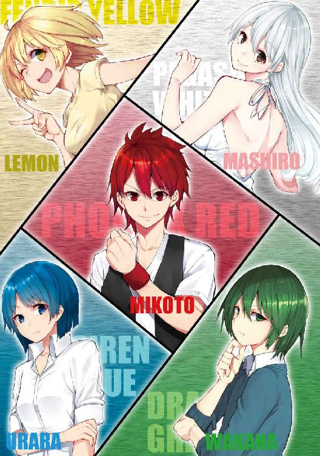
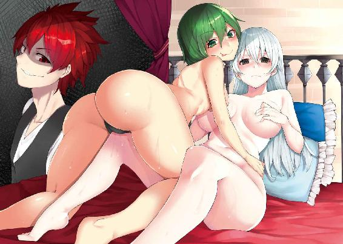
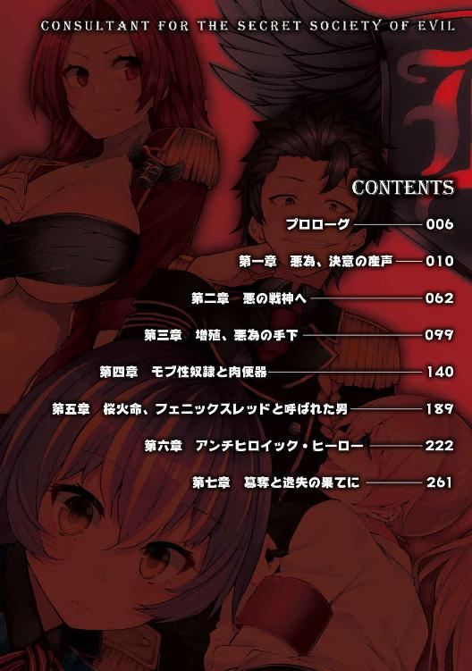
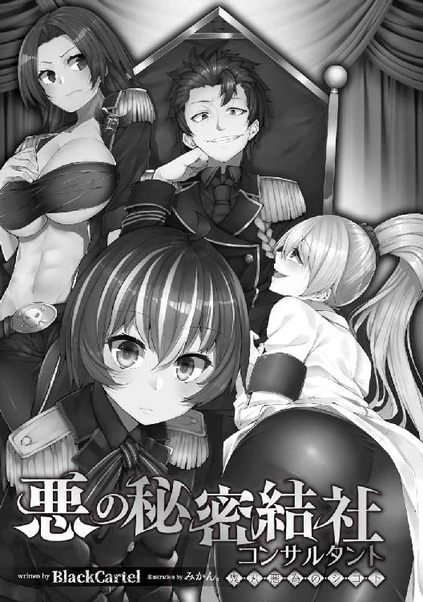
※本作品の全部あるいは一部を無断で複製・転載・配信・送信したり、ホームページ上に転載することを禁止します。本作品の内容を無断で改変、改ざん等行うことも禁止します。また、有償・無償にかかわらず本作品を第三者に譲渡することはできません。
※本作品は電子書籍配信用に再編集しております。
コンビニの袋がずっしりと重たく感じる。
「たっだいまー、っと」
誰も返事をするわけがない暗い部屋。電気をつけ、俺はいつものように袋をソファへと放り投げると、その横にどかりと腰を下ろす。
「疲れたー！」
誰かが言葉を返してくれるわけではないが、言わずにはいられない。静寂を破壊するように、ぐしゃぐしゃと大きな音を立ててビニール袋を漁った。その中からキンキンに冷えた缶チューハイを取り出すと、プルタブに指をかける。
──カシュッ！
小気味いい音が出て、俺はたまらずその缶に口をつけた。
「......っああーっ!!」
叫びにならない叫びが、自分だけの空間を埋め尽くす。俺はこの瞬間がたまらなく好きだ。毎日の退屈な時間から解放されて、自分が自分らしさを取り戻していく、この瞬間が。天井を見上げると、凝り固まった首が悲鳴を上げる。
「はーっ......」
今週も、ようやく終わった。長かった。本当に長かった。けれど、ここからあと二日休んだら、またあの機械のように働く日々がやってくる......。
俺はぶんと強く頭を振った。
やめよう。せっかくの休みなんだ。寝て、食って、飲んで、楽しいことだけ、好きなことだけをしよう。
もう一口酒を呷る。さっきまでの感動が嘘のように薄れて、まるで水を飲んでいるみたいに感じた。俺は立ち上がって、テーブルの上に缶を置く。
向かう先は『いつもの戸棚』。そこには、俺が大好きなものが眠っている。昔から今まで、ずっと。
テレビ画面には、椅子に縛り付けられた少女と、真っ黒なローブに身を包んだ異形の怪人が映っている。
『はっはっは!! 街ごと燃やし尽くしてくれるわ！』
『きゃーっ！ 助けてー!!』
『ムダだムダだ！ こんなところ、誰も来やしないさ！』
『待てっ！』
『誰だっ！』
『てぃあーっ!! 悪の怪人バルバロンめ！ 俺が相手だ！』
『はっはっは......ずいぶんと早いおでましだな、ブレイブレッド!!』
もう何十回と見たシーンを、俺は、初めて見たときと同じ気持ちで見ている。最初に番組を録画したＶＨＳテープは、擦り切れる前にＤＶＤに焼き直した。なぜかついつい見てしまうのだ、戦隊モノは。過去の戦隊シリーズは大体揃っているし、今放送されているものも、全部見ている。
『ぐっ......やめろ！ バルバロン！』
『はっはっは!! こいつの命が惜しければ、今すぐ変身を解くのだ!!』
『レッド！ ダメっ！ 私に構わないでコイツを......!!』
この回では、主人公のレッドが味方のピンクを犠牲に敵を倒すか、敵の言いなりになるかを迫られる。その人間的な迷いを描いている部分が、俺は大好きだ。
『分かった......変身解除』
『レッド!!』
『はっはっは!! バカなやつめ......これでお前らをエサに、ほかのやつらも一網打尽にしてくれる!!』
でも、この展開はいただけない。
──だって、そうだろう？
変身を解除したということは、怪人にとってはこれ以上ないチャンスなわけだ。悪なら悪らしく、約束を守るなんて律儀なこと、しなくてもいい。今は、レッド一人を叩けば充分だ。その絶好の機会なのに。
「ま、それがお約束、ってヤツなんだけどね」
誰にとなくつぶやく。そして次が、俺の一番好きな場面。
『いたっ！ やめてっ！ やめてよぉっ！』
『ピンクっ!!』
『はっはっは!! 大人しくしていろっ!!』
怪人バルバロン──人間形態の名前は鬼丸悪為──が自ら率先して、縛り付けたピンクにムチを打つシーン。今考えたら、こんな扇情的な光景を子どもに見せるのはよくないと思う。......そう、俺みたいに、ちょっとゆがんだ性癖の持ち主が生まれるきっかけになるから。
俺は思わず自分の股間のポジションを調整する。明らかに熱を帯び始めているのが分かる。
『はあっ......はあっ......やっ......やめてぇっ......』
ピンクが懇願しても、怪人バルバロンはその手を休めない。ビシビシと強く打ち付ける音に、俺の鼓動がどんどん速くなっていくのを感じた。
......そういえば、ここ五日くらい、仕事が忙しくて少しもそういう気分にならなかったんだった......。
それを思い出すと、もうオナニーをすること以外、何も考えられなくなってしまった。
『そこまでだっ！』
画面の中では、ヒーローのお仲間たちがようやく到着する。バルバロンは大袈裟に驚いているが、仲間のピンチに駆けつけないヒーローなんて、ヒーローじゃないことくらい、ちょっと考えれば分かりそうなものだ。
俺がバルバロンなら、この二人以外は行動できないように、うまく立ち回るのに。
形勢の悪くなった怪人はピンクを解放し、戦闘態勢に入る。
俺はテレビのリモコンに手を伸ばし、電源を落とした。
ピンクがバルバロンに責め立てられているシーンは大好きだが、それの後に続く物語は今一つなのである。それは俺の性的興奮を遮るヒーローたちに対する怒りなのかもしれなかった。この後、俺に素敵な性癖を植え付けてくれた怪人バルバロンは、あっさりとやられてしまうのだ。
俺は、もっとムチで痛めつけられているピンクの姿が見たかった。目を泣き腫らし、無様に助けを乞う凛々しかった女の姿を。
「ふーっ！」
立って大きく背伸びをすると、股間にズボンの圧力を感じる。今日のオカズは、特撮ヒロインの陵辱ものにしよう。まあ、ほとんど毎回そういう感じのモノだけど。そんなことを思いながら、ＰＣデスクに身体を向けた、その瞬間。
──部屋の明かりが、落ちた？
停電か？
......いや......違う。なんか、様子がおかしいぞ......？
身体が動かない!?
暗闇の中で、俺はあたりの様子を窺う。どうやら、全身をがっちりと何かで縛られているらしい。あとは、なんだか錆び付いた金属のような匂い。背中に、硬い板が当たっているのが分かる。
「ど、どういうことなんだ......？」
「あーあ」
突然、女の子の声が耳元で聞こえた。
「ひぃっ......！」
情けない声を上げて驚いた俺を、その声の主は笑った。
「なんだキミ、笑わせるなよ」
「おっ、おいっ！ お前は誰だっ！」
「誰だって？ まずキミが名乗りたまえよ」
「俺？ 俺は──」
と、名前を言いかけてやめる。バカ正直に本当の名前を答えて、何か面倒ごとに巻き込まれてもイヤだ......。
「あ......その......」
どうしたらいい？ 何でもいい、適当に偽名を......！
「俺は、鬼丸悪為だ！」
とっさに、さっきまで見ていた特撮モノのボスを名乗ってしまった。
「おにまる、あくい？」
少女は、へえ、と小さく漏らす。......しまった。偽名にしても、もうちょっとマシな嘘をつくんだった。
「変わった名前だな。向こうの世界ではそんな名前が流行っているのか？」
「へ？」
『向こうの世界』......？
彼女の口から出ている数少ないヒントだけで、この状況を正しく理解することなんて、到底不可能だ。ここ、ホントに一体どこなんだ......!?
「なあ！」
「ん？ どうした、モルモット」
「モっ......！」
なんだ、ヤバいぞこの感じ！ モルモットってアレだろ、実験動物の！
ちょっと待て、俺が何したっていうんだ？
仕事に疲れて帰って来て......酒飲みながら特撮モノ見てオナニーしようとしただけだろ!? なんでこんな目に遭ってるんだ、俺！
「まずは明かりをつけろよ！」
「なぜモルモットに指図される必要がある？」
コイツ、俺を使って何かの実験をしようとしているのか!? この状況を乗り切るには......。
「ハッ、モルモットの俺が怖いのか？」
「......怖い？」
「モルモットに顔を覚えられるのが怖いのか、ってことさ。やり返されるのが怖いんだろ？」
まずは身体の自由を得て、それから脱出する方法を考えないと......！ 挑発に乗ってくれよ......。
「......キミは、何か大きな勘違いをしているようだな」
ダメか......？
「私ほどの科学者が、たかが人間に恐れをなすとでも？」
キターっ!! 安い！ コイツ思った以上にチョロい！
俺はニヤつきそうになる気持ちを、ぐっと奥歯を噛み締めてこらえ、捕虜の苦しそうな表情を作った。
「いいだろう、私の顔を見せてやる」
彼女がそう言うと、ふわりと明かりがついた。間接照明のような、優しい光。それに照らされた俺は、やはりがっちりと器具に固定されていた。
すぐ目の前にいる子が、先ほどから俺に話しかけてきていたのだろうか？ 落ち着いた口調のわりに、見た目は少女にしか見えない。
薄桃の長い髪、じとりと睨む濃紺の瞳。彼女全体からあふれる雰囲気──すべてを白か黒で判断しそうなそれ──に対し、組んだ腕の上にたゆんと乗った二つの胸だけが、大きくかけ離れたものを主張していた。
「どうだ、モルモット？」
「だから俺は......鬼丸......」
「いや、どうでもいいよ、名前なんて。どうせ覚えられないから」
「じゃあなんで聞いたんだよ！」
「......は？」
彼女がぎろりと見下ろして、うっすら笑みを浮かべる。
「モルモットをどうしようが、私の勝手だろ？」
マズい......コイツちょっとおかしい......。いや、ちょっとか？ 『かなりおかしい』の間違いかもしれない。
「私はフレア・ナット。キミの命のカギを握る天才科学者だよ」
「じ、自分で天才って言うか？ 普通」
「口を慎め」
彼女は両腕をがっちりと組んだまま、ほとんど身動きもせずに俺を見つめている。
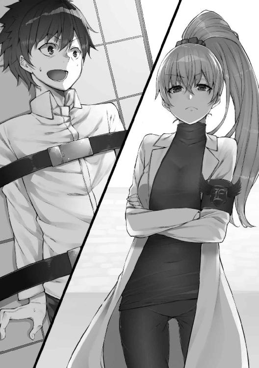
「な、なんだよ」
しばらくの沈黙が空間を支配する。何かの機器が動いている「ビーッ」という汚い音だけが聞こえる。
「残念だ」
フレアはそう口にした。
「......残念？」
「せっかく異世界の人間をこちらに呼び寄せたというのに」
「異世界？」
さっきの口ぶりから、ここが俺の知っている世界とは違う『どこか』であることは想像していた。けれど、はっきりと『異世界』と言われてしまうと、改めて驚かされる。フレアから、はあ、とため息が漏れた。
「いいだろう。もうキミに期待することは何もないが、説明してやる。一回しか説明しないから、よく聞いておけ」
彼女の顔が俺にぐいと近づいた。......こんな状況で言うのも変かもしれないが、わりと可愛い顔をしている。自分がこれから何をされるのかも分からないのに、その顔立ちに思わず胸がどきりとした。
「私の所属する組織は、世界を恐怖で満たすことを目的としている」
......ん？ 世界を恐怖で......？ どこかで聞いたことがあるような、曖昧な目的だ......。
「だが、それを妨害するやつらもいるのだ......まったくご苦労なことだとは思うが......。やつらを排除するためには、怪人を造らなければならない。圧倒的な戦闘能力を持った、忠実に命令を聞く戦闘マシーンを」
まさか......これ、特撮の世界じゃないか......？
世界を恐怖で満たすという、何の意味があるのか分からない目標。怪人を造ってヒーローと戦うという流れ。
急に、緊張が興奮に変わっていくのが分かった。
「私はこの組織の天才エンジニアだ。異世界から物体を転移させる装置を作り、そして運用している。そして、この装置で呼び出した人間を、無数の怪人や戦闘員にするのが仕事だ」
「え」
ちょっと待て。ということは、俺は......!?
「分かったか？」
「いや、ちょっと待って！ 俺、怪人にされるのか？」
「キミ程度の人間になれるものか。よくてただの戦闘員だ。......ほかに質問は？」
「ある！ あるよ！ 山ほどある！」
マズい！ これは特撮のよくある流れだ！ 変な電気を流され戦闘員にされて、何となく善戦するも最後はヒーローに殺される、という、お決まりのパターンだ！ 特別素晴らしい人生を送ってきたとは思わないが、むざむざ死を待つようなことだけは避けなければ！
「え、えっと......」
しかし、質問が思いつかない。
「ないのか？」
「......」
ない。
反論や意見はある。けれど、質問はない。この世界は、俺のよく知る『あの世界』に違いないから、今更彼女に聞きたいことなんて、何もない。
「はあ、しかし、本当に残念だよ」
「それは、俺のセリフだ」
「......何？ こっちのセリフだ。キミのセリフじゃない」
フレアがむくれた。
「異世界の人間なのだから、ちょっとくらい特殊な力を持ってるかと思ったのだが......。まったく普通の人間とは」
「ふ、普通じゃないぞ！」
「普通だろ。キミの身体を転移させた直後に、色々と調べさせてもらったよ」
彼女は背を向け、デスクへと向かう。
「握力は左右とも三十キログラム台後半、脚力は百メートル走十五秒程度」
机の上に置かれた資料らしきものを手に取り、読み上げる。
「両目視力が〇・八、聴力は平均。体内に毒生産能力などのある特殊器官なし。爪等は攻撃に不向き。魔法の使用経験なし。そして、健康状態に問題なし」
ばさりと紙を放り投げる。
「普通だろう？」
そりゃそうだ。今まで人と違うように生きてきたことなんてない。強いて言うなら、ほかの人よりも特撮が好きだったくらいで。
「キミみたいなのは、怪人にはできない。また『ムダな仕事だ』と、ほかの幹部にドヤされる私の身にもなってくれ」
「『今からお前を改造する』って宣言された上で、罵倒されてるこっちの身もなれよ！」
俺は吼えた。だが、その声は彼女の一声でかき消される。
「キミが今固定されているそれは、洗脳装置だ」
「せ、洗脳......！」
「次目覚めたときは、今の会話なんて全部忘れて、忠実な私の下僕になるんだ。嬉しいだろう？」
「んなわけあるか！ ちょ、ちょっと待て！ 落ち着いて話し合おう！」
彼女は赤いレバーに手を掛けた。
「そんな余地はない。キミはこれから戦闘員になる。それだけだ」
「おっ、おいっ！」
俺は大きな声を上げた。しかし、その反応を聞く前に、目の前が真っ白になった。身体中を何かが這い回るような、気味の悪い感覚が俺を襲う。
「あああああああああ！！！！」
絶叫が止め処なくあふれる。洗脳される......！
マズい、けど、もう......どうしようも......。
......ああ......意識が............遠......く......。
......また真っ暗だ。俺は目を閉じているのだろうか？
いや、目は開いている。それじゃあ俺はまた、あの暗い自室に戻ってきてしまったのか？ 一時的に、そんな夢を見ただけで──。
ふわりと明かりがついた。
「お、ようやく起きたか」
まぶしさに何度か瞬いて、声のしたほうを見る。
──フレアだ。実に愉快そうな笑顔で俺を見ている。
「どうだ、洗脳された気分は」
「洗脳......」
自我の有無を感じる、というのがどういうことかはよく分からないが......正直、これまでと全然変わっている気がしない。
「別に、なにも」
「ふふ、まあ結構だ」
フレアは俺の顔を覗き込んだまま、何かのスイッチを押した。俺の腕を固定していたアームが外れる。
「可愛い私の戦闘員」
彼女は俺の額にキスをした。
「これから私たちのために戦うんだぞ」
「あ、あの......」
「いいからいいから」
なんだろう、この違和感。
多分......多分だが......俺は、洗脳されていない。何のミスかは知らないが、特に何の変化もないように感じる。
『自分を正常だと思うタイプの洗脳』ってのが可能なら、これで成功しているのかもしれないが......どうもそうとは思えない。
とりあえず、ここは大人しくしておくべきだろうか？
よく分からないが、彼女は完全に俺が洗脳されたと勘違いしている。キスまでするくらいだから、それは確かだろう。
......ここは流れに身を任せよう。
「鬼丸君、だったな」
「あ、ああ」
「ふふ」
彼女のしなやかな両腕が、俺の首元に絡みつく。
「私好みの、いい男じゃないか」
「え？」
フレアの言葉に、俺は思わずどきりとした。そんなことを言われたのは初めてだ。
「普通ではあるが、情欲をかき立てる身体だ」
俺はその真意が知りたくて、彼女の目を見つめた。フレアの顔はうっすらと紅く色付き、瞳がやや潤んでいる。......興奮しているのか？
「さて、私の下僕君」
「は、はい？」
下僕君。それは、間違いなく俺のことを指しているはずだった。だって、この部屋にはほかに誰もいないのだから。
彼女は、俺のシャツの中に手を差し入れた。
「ひあっ!?」
まさぐる手がくすぐったくて、俺は思わず素っ頓狂な声を上げる。
「キミみたいに洗脳された人間を好きなように犯せるのが、私の特権だ」
「おか......え？」
犯せる？ つまりそれは、アレか？ 俺がいつも妄想していたネタの、まさに逆バージョン......？
「最初の命令だ。私の性欲発散に協力しろ。言う通りに、な」
フレアの顔はすっかり上気しきり、完全に雌のそれになっている。......こんな千載一遇のチャンス、逃せるわけがない。
「......はい」
俺はそれ以上のことは言わず、彼女の指示を待った。
「まずはその装置から降りて立て」
「はい」
俺はフレアが命ずるままに立ち上がる。
「よしよし」
彼女は実に満足そうに笑うと、俺の頭を撫でた。
「さすが、私の作品だ」
「ありがとうございます」
フレアは俺の代わりに、ごろんと洗脳装置の台座に仰向けになる。
「どうだ、私の身体は」
「素敵です」
「ふふふ。キミは肉体的には普通だが、『私の』優秀な戦闘員になれそうだな」
俺の答えにますます息を荒らげている。とんでもない色魔だ。そうと思っているうちに、彼女は自ら白衣のボタンを外し始める。
「次は、私の胸を愛でてもらおう」
「愛でる、ですか」
俺は思わず飛びつきそうになるのをぐっと抑えて、フレアの目を見た。
「乳首を撫でろ」
彼女は発情しきった顔で俺に命令する。
「はい」
俺は機械的に答えると、彼女に覆いかぶさるようにまたがった。そして、少しだけはだけた白衣の隙間に両手を差し入れる。
......ブラジャーをしていない！
フレアは、はじめから洗脳が終わった俺を犯して楽しむつもりだったのか。可愛いらしい外見とは裏腹に、とんでもないエロ科学者だ。無防備なポーズでこちらに肢体をさらす彼女を見ながら......俺の中に、突然悪い考えが浮かんできた。
俺はこの女に道具にされるところだった。報復することは、決して許されないことではないだろう。感情を表情に出さないように気をつけて、俺は彼女の下乳を撫でた。
「んんっ......」
くぐもった声が響く。
「乳首だ......乳首を......」
さっきまでの恐ろしい姿はどこにもない。ただの、愛撫を要求する少女だ。
「お願いっ......」
彼女の切ない声に、俺は指先でそこをぴんと弾いてやる。
「んはぁっ......!!」
乳首だけでこんなに感じるなんて。
それよりも、自分の言いなりになる男の手で感じている、その変態じみた姿に、俺の理性も限界に近づいていた。
指先で何度も、勃起した乳首を弾く。そのたびに彼女は目を閉じて背をのけぞらせる。
「はあっ......ああっ......いいよぉ......」
彼女はにこりと笑って俺を見た。
「それじゃあ、次はぁ......」
......今だ。
俺はゆっくりと片腕を寝台の片側へと伸ばした。
これは、ただのベッドじゃない。
洗脳装置だ。
そして、今ここに寝ているのは、俺ではない。
「次から......実験結果が成功かどうか、ちゃんと確認するんだな！」
ニヤリと笑って、スイッチを押し込む。ガチンという金属音が、彼女の華奢な四肢を捕まえた。
「えっ!?」
フレアは驚愕を少しも隠さない。
「キ、キミっ！ 何をしている！」
「何って、いや、ねえ？」
「え......あれ？」
フレアは、この短いやりとりで状況を察することができたらしい。
「なんで......」
「なんで、って言われても」
俺は装置から降りると、頭をぼりぼりと掻いた。
「俺、言ったじゃん。『気分は』って聞かれたときに『別に』って」
「いや、違う、そうじゃなくて、あれ？」
フレアは完全に混乱している。あわせて、自分が「洗脳した」と思い込み、得意げになって相手にやらせていた行為を思い出したのか、急に怒りの感情を露にする。
「だっ、騙したなっ！」
「騙した？ それがどうした。お前は俺のことを洗脳し、戦闘員にしようとしたんだ」
「うっ......」
「どっちのほうがひどい？」
「そ、それは......」
「他人の人格を奪って戦闘員にしようとしたお前と、他人の性欲を満たすためにお手伝いした俺。どっちが悪いやつなんだ？」
「そっ、そんなことより！」
フレアは今にも噛み付きそうな顔をしている。
「なぜキミにこの装置が効かなかったんだ！」
「さあねえ」
俺は首をかしげた。
「異世界人だからじゃない？ よく分からないけど」
どういう理屈の装置かも分からないのだから、どうして効かないのかも分からない。けれど、何か彼女が計算できていないことがあるとしたら、それは俺が『異世界の人間だから』だということくらいだろう。
「......私が悪かった」
フレアは熱が冷め、真面目な顔に戻っている......いや、どちらかというと『青ざめている』。
「キミを元の世界に帰してやる。だから、この拘束を解いてくれ」
「ふうん」
「......信じていないな？」
「信じられないな、到底」
俺は腕組みをして彼女を見下ろす。先ほどまでとは、完全に立場が逆転してしまった。
確かにこうして見下ろしてみると、かなり気持ちがいい。
「だって、あんなことをしようとしたんだぞ、俺に。それを今更元の世界に帰すって言われても。信じるほうがどうかしてる」
「ぐっ......」
フレアは苦虫を噛み潰したような表情を浮かべて、目をそらした。
「それに」
でも、俺が彼女を自由にしないのは、それが本当の理由ではない。
「俺、元の世界よりもこっちの世界に興味が出てきちゃった」
「そ、そうか、それなら私が案内してやろう！ さあ早くこの拘束を」
「いや、それはいいや」
フレアの焦りが伝わってくる。
楽しい。
こんな愉快な気持ちだったのか、さっきの彼女も。
「だって、お前を洗脳して俺の奴隷にしちゃえば、なんでも言うこと聞いてくれるわけでしょ？」
フレアは目を見開いたまま黙った。
......そうだ。俺には効かなくても、この世界の住人である彼女に対しては、洗脳は充分に効くはず。
「や、やめろ......」
震える声で、そう抵抗するのが精いっぱいのようだ。
「やめろ、だぁ？」
ぞくぞくする。
「やめてください、だろ」
「や、やめてください......」
俺は赤いレバーに手を伸ばす。
「さっきのレバーって、これだっけ？」
「違う！」
「嘘つきは、嫌われちゃうよ？」
この怯え方からして、フレアをこの機械で洗脳することはできるのだろう。ガチガチと奥歯を鳴らして震えている。
「やめてほしい？」
「はい......お願いだから、やめてください......！」
「ちゃんと、言おうと思えば言えるんじゃないか」
俺はうっすらと笑みを浮かべた。
「その様子だと、効果はあるんだな、お前にも」
「いや！ やめっ」
彼女の言葉が、バリバリという激しい電撃音にかき消された。
「っ!!」
フレアは一瞬目を大きく見開いたかと思うと、表情を失う......これが、洗脳か。白い閃光の向こうにいる彼女に、俺は声をかける。
「フレア」
「はい」
返答にも感情がない。
「俺の質問に答えろ」
「はい」
「この洗脳は、どれほど強力だ？」
「命令していただければ、どのようなことでもいたします」
間髪入れずに答える。どうやら、フレアの洗脳は成功したようだ。
「それじゃあ、どれくらいの時間、この洗脳は効果があるんだ？」
「永続的なものです」
「それは、一度洗脳したら、ずっと解けない、ということか？」
「その通りです」
フレアの声には、感情的なゆらぎがほとんどない。演技......というわけではなさそうだった。
「この装置は、どれくらいの時間動かしていれば効果があるんだ？」
「一瞬で充分です」
「ほう」
彼女の答えを聞いて、俺はレバーを引いた。
閃光は収まったが、その光の向こう側にいた彼女は、相変わらずぼんやりとした顔で天井を見上げている。
「......それじゃあ、洗脳が終わった今の気分はどうだ？」
「私のすべては、あなたのものです」
フレアは淀みなく答えた。
「なんなりと、ご命令ください。あなたのために生きるのが、私のすべてです」
「ははは......いいね！」
俺は思わずにやつく。
「いいねぇ!!」
こんなに可愛い『戦闘員』を手に入れられるなんて、俺はツイている。表情のないフレアを見て、俺ははっきりとそう思った。
「さあ、フレア」
彼女の拘束を解いてやる。
「この世界について教えてくれ」
「かしこまりました」
フレアは天井を向いたままの姿勢で語り始めた。
──この世界には、人間という一種族と、それに敵対する怪人という一種族が覇者として君臨しています。人間はほかの生物に比べて腕力では劣りますが、頭脳は優秀で、そのために繁栄を遂げることに成功しました。一方、怪人は腕力が強いのもさることながら、ほかの生物種にはない特殊な能力を開花させることで、生存競争を生き延びました。
分かるような、分からないような......。
「我々は、地球という豊かな水資源のある惑星の上に展開された文明を有しています。また同じように、人間も文明を有しており、文明自体の優劣の差は残念ながらほぼありません。我々も、また人間も、そこに存在する資源だけではなく、一見無関係な物質から生活に有用な物質を得られる科学技術が発達しています。地底から岩石くずのようなものを集め精錬することで純度の高い金属を取り出し、さまざまな物質を作っています。例えばある一定以上の高さを持つ建築物は、鉄と呼ばれる物質で強固に枠組みを作り、それを骨格として形を作っていくことになります」
鉄を骨格として作る建築物......ビルのことか？
「なるほど......」
俺はひとまずそう答えた。つまり、違いは『怪人がいるかどうか』だけで、元々の世界とそれほど大きく変わりはないってことでいいらしい。
「それじゃあ、怪人の文明について、もう少し教えてくれ」
「かしこまりました」
フレアの無機質な言葉が続く。
「我々能力者の有する文明は、特にここ数十年の間、人間を絶滅させるために発達してきました」
「......マジかよ」
「本当です。地球上の覇権を得る種族は、どのみち一種族です。その座をむざむざと奪われるようなことがあってはいけません」
おかしなやつだとは思っていたが、狂っているのはフレア個人ではない。......つまり、この『怪人』側の種族全体の認識として『人間は敵、滅ぼすべき』という考えなのだ。恐ろしい。
「私の所属する『エクリプス』の説明をさせていただきます」
彼女の声が一際大きくなった。
「エクリプスは人間を滅ぼすことを目的とした怪人の集団です。総統はＸｉｎ様といいます。私も素顔を拝見したことはありませんが、魅力的な方です。そして、誰よりも人間を滅ぼすことを強く望んでおられます」
「Ｘｉｎ、ねえ」
正体不明のトップ、っていうのは、なかなかに魅力がある。
「エクリプスの幹部は私、フレア・ナットのほかに、エリヤ・ロム、ダンテインの二人がおります。エリヤは無口ですが、しっかりとした子です。ダンテインは......」
フレアの声が止まる。
「フレア？」
「ダンテインは、哀れな女です」
「哀れな？」
「自分から敵を作り、自分以外を全員敵にする天才です」
「あー......」
いるいる。そういうやつ。
「私たち幹部の部下として、所属する怪人がおります。怪人たちはそれぞれに個性的な能力を持ち、日夜人間を滅ぼすために活動を続けています」
「そんなに毎日活動していたら、本当に人間を滅ぼせるんじゃないのか？」
「それは、難しいのです」
「どうして？」
彼女が、柔らかく唇を噛んだ。
「邪魔者がいるのです」
「邪魔者？」
「そうです」
彼女が、俺を見た。突然のことで、驚いて息が止まる。
「ホーリーファイブ」
「......なんだ、それ」
「彼らは、私たちの活動を妨害します」
つまり、そいつらがいわゆる『正義の味方』ってことか。俺は腕を組んだ。
「ホーリーファイブの戦力はどれくらいだ？」
「私たち怪人が本気を出せば、恐らく一瞬で活動不能になるでしょう」
「......じゃあ、本気を出したらいいじゃん」
「......」
フレアは黙ったまま、俺を見つめている。
「な、なんだよ......」
「いえ、斬新なアイディアだったもので」
......斬新？ なんだそりゃ。意味が分からないぞ？
一瞬そう思ったところで、ふと思い当たった。
まさかとは思うが、こいつら『特撮モノの悪の組織』そのままの存在なんじゃないだろうか？ 世界征服をやたらとまどろっこしい手段でしかやらない、悪役の彼ら。この世界の怪人たちも、まさかそんな手段ばっかり取っているのか......。
「これは面白いな」
俺は、ふう、と大きなため息をついた。
「ありがとう、この世界について、大体理解できたような気がするよ」
「どういたしまして」
彼女が表情のない瞳で笑った。
「じゃあ、次の質問」
「なんなりとお申し付けください。私で解決できることであれば、なんでもお受けいたします」
俺は彼女の顔を覗き込んだ。
「お前、俺に何か隠し事はあるか？」
フレアは少しだけ目をそらした。
「ありません」
「嘘だな」
「嘘ではありません」
「それじゃあ、質問を変えよう」
その言葉に、フレアの目がもう一度こちらを見た。怯えているのか、フレア・ナット。いいぞ、その表情......。
「お前はこの事態を予測していたな」
「......」
彼女はつい先ほどとまったく同じ反応を示す。
そう。俺はこいつに、先ほどから違和感を覚えていた。彼女の解説は、まるで本人に『主観』があるかのようなものだった。
「分かりやすすぎる」
自分の感覚が研ぎ澄まされているのを感じる。素晴らしい気持ちだ。俺は今、この女を完全に凌駕している。
「いつか自分が、何かの間違いで逆に洗脳される事態を想定していた」
「想像もしていませんでした」
「そうか」
フレアの顎に手を添えて、くいと顔を持ち上げる。悔しいか、フレア。可愛らしい顔で目に涙を溜めて。
「もう一つ質問だ。お前の記憶のバックアップは、どこにある？」
「!!」
彼女の目が見開かれた。大当たりだ。
「そっ、そんなものは、ございません」
「そんな言葉で俺を騙せると思っているのか？ 表情にすべて出ているぞ」
笑いがこみ上げてきた。
「普通、ウイルスの研究者っていうのは、バイオハザードを警戒して多少のワクチンを作っておくもんだ。そうだろ？ そうじゃなかったら、自分が感染して死んでしまうかもしれないんだから」
脳の中をアドレナリンが駆け巡る。
「もし俺が『洗脳装置』なんてヤバいものを作るなら、最初から自分には効果を発揮しないようにしておく。でも、お前には効いた。つまり、フレア・ナットは洗脳できる。その代わり、一定期間で洗脳が解けるように調整しているはずだ。違うか？」
フレアは眼輪筋をわずかに強張らせている。
「答えろ。お前に用意された回答は『はい』か『いいえ』だけだ」
彼女は一瞬考えた。それから静かに、「はい」と答えた。
「洗脳ができる装置を作れる、ということは、およそすべての脳の構造を、少なくともフレアは知っている」
「はい」
「脳の中には感情や欲求に作用するポイントが存在しているが、洗脳した場合は、その部分を介さずに行動するような回路に組み替える。その行動が、洗脳だな」
「はい」
「洗脳を解くために必要な、自分の脳のバックアップを取っている」
「......はい」
「フレア、お前の脳のバックアップは、どういう風に取っているんだ？」
渋るような素振りを見せたフレアを、俺は恫喝する。
「言え」
大きく息を吸い込んで、彼女の胸が空気で膨らんでいく。観念したのか、ゆっくりと柔らかそうな口元が動き出す。
「私の脳のデータは、二時間ごとにデータクリスタルという情報媒体に自動バックアップされています。更新したデータが、前回記録されているデータとあまりに大きな変化が生じているときには、私の脳が前回保存されているデータに上書きされ、自動的に修正されます」
「つまり、二時間以内にフレアの洗脳は解ける」
「はい」
「それは......」
胸が高鳴る。誰かを追いつめ、自らの思い通りにできるという、この超越感。ほんの数分前までの形勢を逆転し、今まさにチェックメイトの一声をかけようとしている俺。表情が、ニヤつきが、抑えられない。どんな表情をしているのか、想像するだけでも恐ろしい。俺は今、この戦いに勝利しようとしている。それも、完璧に、完全に、抵抗される余地もなく。
「それは、困ったなあ」
あたりを見回すが、どれがデータクリスタルかなど、俺には皆目見当もつかない。銀色に光るパソコンのようなもの、おもちゃにしか見えないボール、ホログラム......。よく見てみれば、ＳＦの世界そのものだ。
これが、悪の組織の基地。
......ああ、俺、『悪の組織』に潜入しているんだ。改めて、変に実感が湧いた。
「よし」
それと同時に、自分の中で何かが弾けた。
俺は、悪の組織にいる。悪は、悪に。徹底的にやらなくちゃ。
......それに、これはどうせ現実の世界じゃない。現実が何か、なんて難しい話はひとまず置いておくとして、ここは少なくとも、ついさっきまでいたあの一人きりの部屋の世界とは明らかに一線を画した『どこか』だ。
夢ならそれでいい。異世界なら、なおいい。俺のやりたいように、やらせてもらう......！
「フレア」
「はい」
「データクリスタル、っていうのは、なんだ？」
フレアは相変わらず単調なトーンで答える。
「データクリスタルは、とても珍しい物質です。デジタル化した情報を保存する媒体としてきわめて優れ、通常の電子的記憶媒体の一兆倍以上のデータを保存することができ、また、数万年の間劣化しません」
「書き換えや更新に必要な媒体は？」
「データクリスタルはデータを保存すること、保存したデータを取り出すことには優れていますが、そこに保存されたデータをコンピュータなどに取り込んで編集することは不可能です」
「完全に独自の保存形態、ってわけか」
「はい」
つまり、脳科学の『の』の字も分からない俺には、データの書き換えは不可能......。
「仕方ないな」
俺はフレアを睨んだ。
「立て」
「はい」
彼女は命令のまま立ち上がり、俺を見た。焦点が合っていない。
「データクリスタルを、ここへ持ってこい」
「データクリスタルは、とても珍しい物質です。素手で触れることは、学術的観点からも避けたほうが......」
「うるさい、命令だ。早く持ってこい」
フレアは、俺の怒声に背筋をびくつかせた。
「はい」
抵抗は見せるが、それでも語気を強めた命令には素直に従う。この洗脳装置、さっき俺にもし効いてたら、一体どうなってたことか......。
「こちらです」
彼女は、紫に輝いているピンポン玉のようなものを手に乗せていた。
「この中に、フレアのバックアップが入っているんだな？」
「はい」
俺は彼女の手から、それを奪い取る。
「あっ」
「なんだ、文句でもあるのか？」
「データクリスタルは、とても珍しい物質で......」
「黙れ」
「は、はい」
フレアをいなすと、彼女は情けなく伸ばした手を下ろした。
「これで、お前のバックアップは全部か？」
「......はい」
「そうか」
それなら、こうだ。
「あっ!?」
フレアの悲鳴が聞こえた。俺は大きく腕を振り上げると、そのまま真下に振りぬいて、それを地面に叩きつけた。
データを保存する水晶。衝撃に強いはずがない。それは予想していたよりももっと脆く、もっと儚く、そして綺麗に砕け散った。
次の瞬間。
びしっ、とフレアが敬礼し、笑顔を浮かべた。
「......フレア？」
「はいっ！」
彼女は、笑顔でハキハキと返事をした。先ほどと違い、その笑顔からは明らかに知性を感じさせない。まさに特撮の『戦闘員のポーズ』だ。......少しだけ思考を巡らせる。これは想像だが、実はクリスタル側からも彼女にアクセスすることができたのではないだろうか。クリスタルを要求したときに抵抗する様子を見せたのも、クリスタルからの感情へのアクセスがあったからと考えれば納得がいく。そして、クリスタルを破壊した瞬間、先ほどまで存在した『無感情』という感情すら消滅し、彼女はこうして、笑顔を浮かべた。
......本当は、洗脳されると笑顔になるのか。
待てよ。だとしたら、なぜ俺を洗脳済みと勘違いしたんだ？ もしかして......俺はあの状況で薄ら笑いを浮かべていた、とか......？
我ながら恐ろしい想像をしてしまい、背筋が寒くなった。
「にしても......大丈夫だろうな、コレ」
フレアをマジマジと見る。さっき「自分は幹部だ」と言っていた。幹部がこうなったと知れたら、俺はタダじゃ済まないだろう......。洗脳されて無駄死にするのはごめんだが、嬲られて殺されるのがいいというわけでもない。
「......どうしよーかな」
これじゃ、この女はただの戦闘員。知性の欠片も感じられない。
「最低限の受け答えができてくれれば、それでいいんだが......」
「はいっ！」
......可愛らしい返事はありがたいが......。
「ま、なんとかなるか......」
俺は頭をぼりぼりと掻いた。
そうだ。テストしておかなくては。彼女の洗脳のレベルがどれほどか確認しておかなければ、手駒にするにしても、誤魔化すにしても、都合が悪い。
「よし、フレア」
「はいっ！」
「動くな」
「はいっ！」
敬礼したまま笑顔を浮かべる彼女の股間に、俺はゆっくり手を伸ばした。
動かない。
これくらいのことでは動じないらしい。
「よし、フレア、いいぞ」
「ありがとうございますっ！」
「次は、こうだ......まだ動くなよ」
俺は割れ目に指を這わせる。
なるほど、その綺麗な身体にちょうどよく、ぴったりと閉じているのが分かる。
「フレア」
「はいっ！」
「ここを濡らせ」
「はいっ！」
彼女は元気よく答える。
「......んっ！ ......っはあっ！」
ちょろろ......と俺の指先を、温かいものが伝っていく。
「えっ!?」
フレアは、その場で放尿していた。
「はい！ 濡らしましたっ！」
敬礼したまま、嬉しそうな呆けた笑顔で彼女は言う。どうやら、濡らす、という言葉の意味を直接的に解釈したらしい。実験体に乳首を弄らせるような変態なのに、変なところはウブだ。実験ばかりして過ごしてきた弊害なのだろうか。
だが、その常軌を逸した痴態に、俺はだんだんと興奮してきていた。
この女は、俺の言いなり......好きなようにしていいんだ。
「フレア、その装置の上に仰向けになれ」
「はいっ！」
フレアはごろりと横たわると、再び敬礼のポーズをとる。これが戦闘員のデフォルトの姿勢なのだろうか。
「よし、敬礼をやめて、両脚を開け」
「はい！ これでよろしいですか!?」
装置の両脇に足を引っ掛け、大股を開くフレア。自分が今していることの意味も分からず、恥辱の感情さえ抱いていないようだ。
「いいぞ」
俺は自分の中の声に押されるままに、どんどん彼女を汚してしまいたくなった。
「それじゃあ、そのままにしていろ」
「はいっ」
俺は彼女の股間に顔を近づける。
......すっきりとしたフォルムなのに、柔らかそうで、少し甘酸っぱい匂いがする。......これが......この女の......。思わずそこを凝視する。そして、左手で優しく撫で上げた。
「あっ......」
フレアが小さく悲鳴を上げる。
「どうした？」
「分かりません！」
笑顔のまま顔を赤らめた彼女に、胸がぐいと締め付けられる。だが、いきなり俺を犯そうとしたくらいだ......セックスの経験がないなどとは考えられない。
「それじゃあ、分からせてやるよ」
俺は彼女の股間でわずかに勃起し始めているクリトリスに爪を立てる。
「いっ......」
身体をびくりと震わせて、切ない声が漏れる。
「動くなと言ったはずだ」
「も、申し訳ありませんっ！」
なおも笑顔だが、その表情は少しだけ崩れつつある。壊れかけているのをいいことに、俺はさらにそこを擦ってやる。
「あっ、ひっ、んんっ......」
動くなともう一度命令してやれば、今度は身体をまったく動かさない。それでもどうしても抑えきれないらしく、か細い喘ぎ声だけが部屋に響いている。
彼女の内側が、どんどん湿り気を帯びてきた。土手の肉も充血して赤く腫れあがり、淫猥な花を咲かせている。
「んっ......はあっ......」
どんな表情をしているのか気になって、ちらりと顔を覗いた。呆けた笑顔は、まったく変わらないように見えたが、少しだけ上気しているようにも見える。口の横に一筋、涎が川を作っている。......びしっとしていれば美人にも見えたが、こうなるとただの痴女。もし、彼女がこんな風になったことが周囲にバレたら......。
「クソッ、知るかっ！」
俺はこの後に待っているだろう『フレアの上司』との遭遇を想像して、そう吐き捨てた。どうなるかなど考えていても仕方がない。とにかく、今はこいつで遊んでやる。
......ふと、目の端に、さっきフレアを洗脳した、この装置のレバーが映りこんだ。
「そうだ」
頭の中に、またよからぬことが浮かび上がってきた。
洗脳装置を、この状態で作動させたら、どうなるんだろう。二度掛けで、さらに強力な洗脳をすることができるのだろうか？ それとも、もしかして元に戻ったりするのだろうか？ マシーンが作動しているときに刺激──快楽を与え続けたら？
俺は湧き上がってくる好奇心を抑えられず、スイッチを押すことにした。寝台の装置が、再びフレアの四肢を押さえ込む。もちろん、フレアに抵抗する様子はない。
「フレア」
俺は彼女に声を掛ける。
「はいっ......あんっ......」
「喜べ、実験だ」
「実験......ああっ......はぁっ......あっ......」
フレアは口元だけで微笑んだ。
「あんっ......ありがとうございますっ......ぅっ......」
右腕を伸ばし、ガシッ、とレバーを掴む。
「いくぞ」
軋む金属音。
「あっ、ああああっ......!?」
バリバリと白い閃光の中に俺とフレアが取り込まれている。
「俺には効かないってことは実証済みだからなっ!!」
とはいえ、電流のようなものが流れているのは感じる......。一応これくらいにして......もう一度レバーを戻す。
「はあっ......ああっ......」
「どうだ、フレア」
俺は彼女のクリトリスを撫で続けた。
「ああっ......悪為さまぁっ......」
「......んうっ!?」
突然俺の名前を──とはいえ偽名だが、呼んだ彼女の目がぎゅっと閉じられる。
「気持ちいいですっ......！」
先ほどまでのフレアとは、明らかに様子が違う。少しだけだが、知性の光が戻っているように見える。これは、実験成功......？ ......いや、結果を予想していなかったのだから、成功も何もない。
「そうか。気持ちいいか」
動揺を悟られないように、あくまでも上から目線で接する。
「はいっ......悪為さまのお手々......優しくてきゅんきゅんしちゃいますっ......」
先ほどまで......どころか、俺の知る彼女は完全に消えてしまったようだった。フレアは、愛しい恋人にするような態度を俺に向けている。俺をそんな風に認識する時点で明らかに正常ではないが、知性だけは戻っているように見えた。
これは面白い。この洗脳装置、ただ脳内の情報を消去するだけでなく、こんな機能まであるなんて。
──スパイ作りたい放題じゃないか。フレアをただの研究者としてここに閉じ込めていたやつらは、よっぽど無能なのか？
......ただ、それよりも、彼女が出す発情した雰囲気に、俺はあてられ始めていた。
「悪為さまっ......お願いしますっ......フレア、いい子にしますからぁっ......！」
ほんのりと薄桃に色付く身体をくねらせて、彼女がうめくような声を発する。
「悪為さまのためなら、なんでもしますっ......悪為さまが命令してくれたことは、全部しますっ......」
瞳は熱く潤み、頬は赤く染まっている。
「フレアになんでも命令してくださいっ......お願いっ......悪為さまぁっ......！」
「分かった」
......もう、我慢できない。
「フレア」
「はいっ！」
名前を呼ぶと、彼女は幸せそうに返事をした。
「そのまま待て」
「はいっ......！」
彼女は肩を上下に震わせている。俺は......ズボンを下ろした。「射精したい」という脳内からの声が、止まない。フレアは、俺の勃起したそれを見たのだろう。「ああっ......」と小さく声を漏らした。
「フレア」
「はいっ......」
俺は彼女の名をもう一度呼んだ。そして、開かれたままになっている両脚を抱え上げる。
「好きなように、感じろ」
「ありがとうございますっ！」
フレアの返事が聞こえる前に、俺が彼女の中へと潜り込んでいく。
「んああああああっ！！！」
嬌声が響き渡る。
「ぐっ......きつっ......！」
「悪為さまぁっ！ 嬉しいですっ！ フレアのおま〇こ使ってくださってありがとうございますっ！」
間違いなく、彼女は堕ちている。それも、俺を誰だかしっかり認識して......。
「動くぞ」
ぐいと腰を前に突き動かすと、ぎっちり締め付けている膣がゆっくりそれを奥へと招き入れる。
「んおおおっ......！」
ひと突きごとに、彼女はケダモノのような大声を上げて応える。
「悪為さまぁっ！ 悪為さまぁっ！」
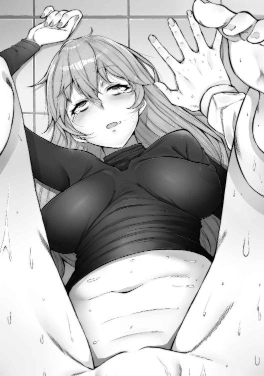
ここに来たときは、こんな『洋物ＡＶ』のような求められ方をするなんて少しも思っていなかった。が、決して悪い気はしない。
子宮口と鈴口が幾度となくキスをする。じゅぶじゅぶという、はしたない水の音。彼女の柔らかそうな胸をぎゅっと掴んだ。
「んいぃっ!!」
そして、むしゃぶりつく。
「はあんっ！ ああっ！ はあっ!!」
感度が素晴らしくいい。
「悪為さまあっ！」
だんだん、自制が利かなくなってきた。もっといっぱい嬲って、失神するくらい犯し抜いてやろうと思ったが......。もう、フレアに種付けすることしか考えられていない自分がいる。
「イくぞ、フレア」
「お願いしますっ！ 中にっ......おま〇こに出してくださいっ！」
フレアが俺を抱きしめた。
「私の卵子にザーメンぶっかけてくださいっ！」
「ぐっ......イっ......イくっ......！」
奥歯を、ぐいと噛み締めた。彼女の鼓動に、自分の心音が重なるのが分かる。
びゅっ......びゅるるっ......びゅるるるるるぅっ......。
「はあぁぁぁっ......!!」
フレアのため息にも似た甘い声が耳にかかる。......長く、いつまでも終わらないとさえ思われるような射精。
「フレア......」
俺は彼女に声をかける。
「離せ」
「は、はいっ......」
フレアは慌てて俺から腕を下ろした。
「申し訳ありません......」
「......」
フレアからゆっくりと離れる。
「はあんっ......」
二人の陰部の間を白い糸が繋ぐ。少しだけ間を置き、冷静になって彼女に質問を投げる。
「フレア、どうして命令にない行動を取った？」
「そ、それは、その......」
彼女は顔を赤らめて、俺から目をそらした。
「悪為さまのおちんちんが気持ちよくて......つい......」
......『つい』。やはり、自我が戻っているのだろう。それに伴い、洗脳の強制力も薄れているようだ。
「つい、なんだ？」
「......私の一番奥に、悪為さまの遺伝子を注いでほしかったんです......」
しかしその強制力の代わりに、洗脳された対象に不変の愛情を抱くようになる、と。どうやらそういうことらしい。
「フレア」
俺は彼女の太ももで自分のペニスを拭った。柔らかい肌を、二人分の体液が汚す。
「お前の脳のバックアップメモリはあるか？」
「それなら先ほど、悪為さまが壊してしまったじゃないですか」
「さらに非常用のバックアップがあるとか」
「ございません」
俺は放り投げていたズボンを穿く。
「フレアは、もう悪為さまのものです」
「ほほう」
......もしかしたら洗脳装置には、一度初期化した脳の回路を再構築する工程も組み込まれているのかもしれない。
「フレア」
「はい」
「俺は、フレアの、なんだ？」
「はい、ご主人様です」
「それじゃあ、フレアは俺のなんだ？」
「ペット、おもちゃ、肉人形、奴隷、ザーメン捨て場。好きなようにお呼びください」
「いいだろう」
俺が振り返ると、彼女も起き上がり俺を見ていた。
「フレア」
「はい」
「俺に、忠誠を誓うか」
「はい、誓います」
「では、組織のほかのやつらに疑われないよう、うまくやれよ」
「もちろんです。お任せください、悪為さま」
......にこりと笑った彼女が、本当に可愛く見える。本来だったら、こういう風に笑う子だったんだ。......精子を吐き出したばかりのペニスに、また血が集まっていくのを感じた。彼女が、これから、俺のコマとして動く......。
「ふう......」
俺は洗脳装置の椅子に腰かけると、フレアを見る。
「ひとまずは、誤魔化せそうだな」
「あっ」
彼女が小さく悲鳴を上げる。
次の瞬間、ごんっ、という鈍い音が聞こえた。......と、同時に、視界が暗転する。顔が冷たいのに、頭の後ろが焼けるように熱い。
「フレア様！ 大丈夫ですか!?」
聞いたことのない声が聞こえた。
......ああ、そうか。そういえばここ、悪の組織のど真ん中だったんだ。そりゃあ警備の一人や二人、いるに決まってるよな。
それに気付くと、今度は頭が割れるように痛くなってきた。洗脳は効かなくても物理的接触......物理攻撃は可能ってわけだ。だからこそ、フレアとセックスできたんだしな。
ああ、ダメだ、意識が......。だんだん......。
かかとが床のアスファルトに擦れている。喉が詰まったような息苦しさ。目の前に、だんだんと光が戻ってくる。
......今、俺は引きずられている。
骨を通して、ごりごりと何かが削れるような異音がしている。俺の後ろから前に向かって、景色が流れていた。
「かはっ......げほっ......げっほぉっ......！」
「気が付いたか」
俺の咳に、誰かの声が答えた。男のような、女のような......。殴られた衝撃でまだ頭がぼんやりしているのか。それとも、この俺を掴んでいる手の主の声が曖昧なのか。
誰なんだ、お前は。
そう言おうとした途端、俺の身体が宙を舞った。ゆっくりと空間に放り出されたように感じたが、やがて勢いよく冷たい金属タイルに全身を叩きつけられる。
「っだぁっ......！」
肩が痛い。そういえば、頭も。
......俺、一体どうして......。たしか、フレアを犯して、それから......。
その後、俺は何をしていた？
気を失っていたのか？
「エリヤ、ご苦労だった」
「お前が行けばよかったものを」
「あたしでは筋力が足りん」
「そう」
頬がひんやりとして、世界が九十度傾いて見える。どうやら俺は今、床に転がされているらしい。女の子が二人、喋っているのが見えた。
片方は赤髪......筋力はそんなになさそうだ。しかし、しゅっとしまった身体、うっすらと割れた腹筋は、多少なりともトレーニングを積んでいるようにも見える。......とはいえ、俺を引きずってくるなんて、到底できるはずがない。
もう片方は論外。赤髪の女の子の肩ほどまでしか背がなく、幼く見えたフレアよりも、まだ子どもっぽい。
あれのうちどっちかが、俺を引きずってきたらしいが......そんなこと、人間では考えられない。
やっぱり、怪人は怪人なのだ。彼女たちに気付かれたら、今度こそ命がないかもしれない。
静かに上体を起こすと、ずりっ、と小さな布擦れが起こった。
「っ!!」
彼女たちが反応する。こんな音でも気付かれるのか!?
「Ｘｉｎ様に敬礼っ！」
ぶぅん、と耳障りなノイズ音が聞こえた。どうやら俺に気付いたというわけではなさそうだ......まったく、心臓に悪い。俺は胸に手を当てて、肩で息をする。
だが......Ｘｉｎ？ 聞いたことがあるぞ......。
たしか、そう、この組織のボスだ......！ でも、一体どこに？
「やあ、皆のもの、元気かな」
俺は声のするほうを恐る恐る見た。そこには、巨大なモニターに映し出された覆面の人物。あれが、Ｘｉｎ......？
真っ黒の覆面から、薄茶色の瞳だけを覗かせている。声もボイスチェンジャーを使っているらしく、男なのか女なのかも分からない。そこから得られる情報は、あまりに少ない。
「Ｘｉｎ様、あたしからご報告を！」
「ダンテイン、お前は相変わらずだな」
「ありがとうございます！」
ダンテイン、と呼ばれた少女は赤髪のほうだった。彼女が俺をちらりと見た。
「......来い」
それ、明らかに、俺に言っているよな？
「お前だ」
「やっぱり？」
「お前以外に誰がいる」
いちいち癇に障る言い方をする。俺は眉をひそめながらも、彼女のそばへと近寄った。
「このものが、先ほどフレアの召喚によって異世界からやってきた人間です」
「ほう」
「あ、どうも」
軽く頭を下げる。初対面で仮面を外さない人間に礼をするのも変な気がしたが、今は自分の命のほうが優先だ。
「貴様か。フレアを洗脳したというのは」
「洗脳......まあ、バレるわな」
頭を掻いた。決して間違ったことを言っているわけではない。強いて言うなら、こちらが洗脳されそうになったから反撃した、というところなのだが。
「こら、貴様っ！」
尻に蹴りが入る。
「ぃでっ！」
「Ｘｉｎ様に対してタメ口たぁ、なかなかいい度胸じゃねえか？ あぁ？」
「いや、え？」
やはり、モニターに映し出されているのが、Ｘｉｎか。......リーダーがこんな覆面姿のやつだっていうなら、いよいよ特撮じみてくるな。
「やめろダンテイン。我が幹部を返り討ちにするなど、なかなか見上げた根性の男ではないか。なあ、エリヤ」
「は」
もう一人の少女を見た。いかにも無口そうな小さな口をきっと結んで、俺を睨んでいる。
「フレアに勝利したと思っているかもしれないが、それは一時のものだ......貴様は知らんだろうが、フレアは二時間もすれば元通りになる。元より貴様の負けは時間の問題だったというわけだ」
画面の向こうの総統が「はっはっは」と低い声で笑った。
「そ、そうなんですか!? それは残念っすね......ははは......」
あまり刺激しないほうがいい。俺は調子を合わせて笑った。
フレアは、もう元には戻らない。彼女の人格を保存していたデータクリスタルは、俺が破壊した。それを知らないからこそ、俺はまだ生かされているのだろう。ここで下手を打つわけにはいかない。
「おい、人間」
「はい？」
俺はモニターを見上げた。
「名前は、なんという」
「鬼丸......悪為です」
万が一のことを考えて、フレアに言ったのと同じ名前を名乗る。
「悪為か。面白い名前だな」
「どういたしまして」
「まるで作り物かと思うほどに、面白い名前だ」
その言外に込められた響きに、俺は思わず目をそらした。
「さて、エリヤ・ロム」
「は」
「ダンテイン」
「はいっ！」
「お前たちは、鬼丸悪為の処分について、どう考える？」
......処分、ねえ。物騒な言葉だが、そうなるだろう。幹部を『一時的に』とはいえ、戦闘不能にしてしまったのだから。
「死刑にすべきかと」
無表情な少女、エリヤがそう答えた。......態度から分かってはいたが、容赦がない。用意していたかのような一言だ。実際、聞かれるのを待っていたのだろう。俺はちらりと彼女を見た。エリヤはこちらに一瞥もくれず、モニターを凝視している。
「殺しちまいましょう！ こんな野蛮人を生かしておく必要なんざ、ありません！」
ダンテインも言い放つ。言い方こそ快活だが、結局同じ内容だ。野蛮人はどちらかと言いたくなるが、ここはぐっとこらえる。
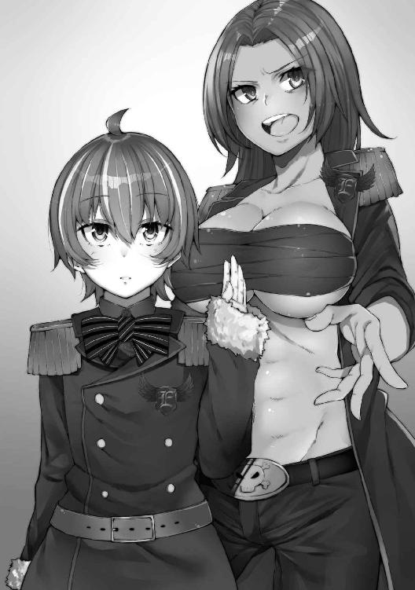
「ほう、お前らの意見が一致するとは、珍しいこともあるものだ」
「待ってくれ！」
俺は、大声を上げた。
「......なんだ？」
悪の親玉の問いかけに気圧されそうになるが、怯まずに一層強く声を張った。
「結論は、俺の話を聞いてからでも遅くないんじゃないか？」
「......ほう」
Ｘｉｎが頬杖をついた。
「よかろう、聞かせてみせろ」
よし！ ひとまず即死だけは免れた！ 後は、なんとかこの場を凌ぎ切らなければ......！
「......俺は、普通の人間だ」
思いつくままじゃ、俺は死ぬことになる。うまく騙さないと、『普通』な俺は生き残れない。そのためには、『普通』の方法じゃ駄目だ！
「その、普通の人間ごときが──」
Ｘｉｎの言葉を遮って、俺は声を張り上げる。
「──だが！ この組織の幹部である科学者の女は、その凡夫に洗脳されるアホだった！」
「貴様ッ！ 言うに事欠いて......！」
「俺にはっ！」
割って入ろうとしたダンテインに被せるように、俺は声を荒らげる。周りが静まり返った。俺の話に意識を集中していることが、よく分かる。なんとしても、この場を切り抜ける！
「科学は分からん。実際、あの女のほうが知識はあるんだろう。しかし、だ！ 少なくとも、俺はフレアに戦術的に勝利した。違うか!?」
「......」
Ｘｉｎの視線で、やつの瞳が俺の心中を覗き込もうとしているのが分かった。
「俺が元いた世界では、俺は確かに凡人だった。だが、この世界の『普通』の基準は少し......俺の知っているそれとは違うんじゃないか。今はそう考えている」
「何が──」
「いや、俺はそう確信した！」
できる限りの熱弁を振るう。周りが俺を止められないのは、その熱気に押されてくれているから......今はそう願うしかない。
「いいか！ この世界の戦いのレベルは、俺の世界ではあまりにもありふれた、ゴミのようなものだ。俺は確かに一般人で、それほどの教養は持たない。だが、それでも！」
騙されろ、この言葉に！ その場凌ぎの、俺の演説に！
「知っているぞ。お前らのゴミのような戦術、戦法！ いいから俺に任せてみろ！ こんな世界、すぐにでも支配させてやる」
「はんっ！」
ダンテインの声が、一層嘲笑の色を帯びた。
「バカも休み休み言え！ 確かにフレアはマヌケだ。根性が足らねぇ。だが、人間に一回出し抜かれたくれぇで、なんだってんだ。人間風情が、たまたま勝ったのをいいことに調子に乗るなよ！」
確かにその通りだ、と一瞬出かかったが飲み込む。
「すぐに支配できるだぁ？ それならあたしがやったほうが数段うまくいくね！ ですよね、Ｘｉｎ様！」
フレアもそうだったが、こっちはもっと深刻だな。挑発に乗りすぎて......簡単に罠に引っ掛けられそうだ。もしこの場を生き残れたら、この喧嘩っ早さは何かに利用させてもらおう。
「ダンテイン、気持ちは分かったが、少し黙れ」
「は、はぁい」
Ｘｉｎに怒られ、彼女は空気の抜けた風船のようにしぼんで、意気消沈した。
大丈夫なのか、この組織。仮面で画面の向こう側にいる総統、無口少女、熱血アホの子、絶賛洗脳中の科学者......。
「鬼丸」
「......あ、え、ああ、うん？」
一瞬呼ばれたことに気付けず、かたかたと首を振る。
「いいだろう、続けろ」
ダンテインにはバカにされたが、案外Ｘｉｎはこの話を受け入れてくれているのか？
「......この組織の問題点が、俺にはすでに分かっている」
「面白いことを言う」
画面越しでも、威圧されているのが分かる。
「作戦、失敗続きだろ。それも計ったかのようなタイミングで。おかしいとは思わないのか？」
ダンテインが俺の襟元を思い切り掴み、締め上げられる。
「貴様......っ！」
「いつもいいところで『ヒーロー』は来る！ 違うか!?」
「さ、さっき異世界から来たばかりのはずのお前が、どうしてそんなことを知っている!? やはり貴様、やつらのスパイか！」
単純すぎるぞ、ダンテイン。御しやすくていいが。
「よせ」
エリヤが声を上げる。
「実力行使は、Ｘｉｎ様の許可なしで行うべきではない」
「ぐっ......」
彼女は恨めしそうに遠くのエリヤを睨んだ。それから首をぐりんと振って、モニターを睨む。
「Ｘｉｎ様っ！」
「ダンテイン、やめろ」
「しかし！」
「裁きはすべてを聞いてからでもできる。今は、抑えろ」
「......くそっ」
彼女は蚊の鳴くような小声でつぶやくと、俺をその場に投げ捨てた。俺は襟元を手の甲で払う。
「図星みたいだな」
誰も、何も答えなかった。だが、それがまさしく答えだった。
「俺に作戦を担当させろ。そうしたら──何度でも言おう。俺がお前らに、世界を支配させてやる」
「ほう」
Ｘｉｎが、気が有る声を出した。
「だが、本当だとして......ずいぶん都合のいい話じゃないか。不自然なほどに」
「ああ、確かにそうだ。都合のよすぎる話だ」
「だったらやっぱり──」
ダンテインが口を挟もうとするが、Ｘｉｎに睨まれ口を閉じる。
「だが、それは考えてみれば当然なんだ。いいか？ フレアは異世界から『自分たちに都合がよく、かつ役に立つ人間』を呼ぼうとしていた。そして、あいつは科学者としては有能だった。そうだろ？」
Ｘｉｎは俺を睨む。それは、覆面越しでも分かるほどのものだ。その目はこう言っていた。
『だから、〝鬼丸悪為〟、お前がここに呼び出されたのは必然か』と。
俺は、Ｘｉｎの目を睨んだ。覆面の下の、本物の目を。
「もう分かっただろう。俺はお前らの組織のため、お前の可愛い部下が呼び出した──救世主だ」
「そして、計算通り『最速』でお前にたどり着いた。お前にこう言うためだ」
「俺を、今すぐ幹部に任命しろ！」
「......はっはっは......」
静かな空間に、Ｘｉｎの笑い声だけが響く。
「面白いやつだな、貴様......鬼丸悪為、か。覚えておこう」
「よろしくどうぞ」
「──だが」
暖かな空気が一変する。
「図々しいのは、好かんな」
......しまった。流石に無謀だったか......？ いや、それでもこうしなければ、俺は生き残れない可能性が高い。
俺は、この組織を大きくするための重要な鍵を持っている。......正確には持っていないけど、そういう風にＸｉｎが誤解していてくれればそれでいい。少なくとも、この『救世主』という一言で、Ｘｉｎは俺を殺しづらくなったはずだ。何の情報も与えられていないときよりは、ずっと。
「エリヤ」
「は」
「鬼丸悪為を牢へ」
「かしこまりました」
「お、おいっ！ いいのか、後悔するぞ！」
「黙れ」
Ｘｉｎの低く大きい声が壁をがらがらと揺らす。
「最初はどこでも、下っ端からスタートだ。それに」
俺の手を、エリヤが掴んだ。
「お前の処遇は、洗脳の解けたフレアとも話し合う必要があるからな」
「......そうか」
抵抗は無駄そうだ。手首を握られたときに、相手の筋力が想像できることがある。エリヤの手は、間違いなく俺なんかには勝てない筋力を持っていた。ともすれば、そのまま骨折させられてしまいそうなほどだ。
「Ｘｉｎ」
俺はモニターに呼びかける。
「この組織の目標は、世界征服なんだよな」
「もちろんだ」
「それなら、作戦を立案する人間はきっちり選ばないとダメじゃないのか？ 今の作戦担当は誰だ？ 俺が直々に指導してやる」
「ぐっ......」
背中のほうで、ダンテインの苦々しい声がした。
牢に放り込まれてから、それなりに時間が経ったように感じる。
「はあ......」
やることがない。やれることも、助かる手立ても見つからない。窓もない室内だから、一体どれくらいの時間が経ったのかも分からない。その上、食事もない。
六畳ちょっとしかない部屋に、トイレと布団だけ。トイレだって、もうしばらく使っていない。身体の中に入ってくるものがないのだから、出ていくものがなくなるのも当たり前だ。
「死ぬぞ、これ」
俺はぼそりとつぶやいた。木の板みたいに硬い布団の上で、天井を見上げる。
俺の人生は、果たしていい人生だったと言えるだろうか？
......分からない。
だが、最後の最後であれだけ可愛い女の子とセックスできたんだ。まあマシなほうだろう。普通の人間が手に入れるはずの、普通の幸せとやらは一つも手に入ってはいないが。
天井のひび割れから小石が降ってきた。額にこつりと当たる。
痛い。
まだ、俺は死んでない。ただ、それも時間の問題かもしれない。
「はあ......」
ごろりと寝返りを打った。鉄格子の向こうに見える別の部屋には、骨だけになった何かが沈黙したまま横たわっている。俺も、ああなるのか？
「......死にたくないなぁ」
まだやり残したことがあるかどうか、そんなことは些細なことだった。ただ生きて、もう少し楽しんでいたかっただけ。なのに、その小さな希望も、もう霧の向こうにかすれかかっている。
「くそっ......」
立ち上がると、鉄格子ににじり寄る。そして、冷たい金属の感触を手に感じた。
「出せっ！」
「うるさいな」
「!!」
何よりも、返事があったことに驚いた。
「誰か、いるのか？」
「いるも何も、ほとんどずっとここにいたぞ」
「......？」
ゆっくりと声のするほうに目をやった。
「......フレア？」
「気安く呼ぶな」
そこには、床に座り込んだフレアがいた。冷たい視線が、俺に突き刺さる。
......でも......あれ、洗脳は......？ データクリスタルは破壊したはず......まさか、まだスペアがあったのか。
「今、ダンテインがこちらにやってくる。そうしたらキミは仮釈放だ」
「ダンテイン......」
聞き覚えのある名前が頭を掠めていったが、それよりも気になる言葉が聞こえた。
「って、仮釈放？」
「Ｘｉｎ様がどうもキミのことを気に入ったらしくてな」
フレアはため息をついて顔を伏せた。
「分からんお方だ、Ｘｉｎ様は」
「仮ってことは、もう一度収監される可能性もあるということか」
「当たり前だ。キミが私に何をしたと思っている」
きつい視線。気まずい雰囲気。そんなとき、遠くで冷たい扉が開く音がした。
「おう、フレア、監視ご苦労様」
「どういたしまして。さあ、鍵を」
「まあまあ」
足音がだんだんこちらに近づいてくる。
「あたしが開ける」
「構わないが」
「ダンテインって......きみか」
「きみとはなんでぇ、失礼な」
彼女は目を怒らせて俺を睨んだ。
「まあいい、Ｘｉｎ様のお気にだからな。あたしは手出ししないよ」
がちゃり、と鍵を外した音がした。
「その代わり、あのお方をがっかりさせるようなマネだけは許さねぇ。そのときは、分かってんな？」
ダンテイン......近くで見ると、かなり整った顔の女であることが分かる。その綺麗な顔で凄まれても、残念ながら恐ろしさは感じないが。ただ、目に力があるというのは感心する。俺は思わずじりりと下がった。
「ダンテイン、あんまり脅してやるな」
フレアが笑った。
俺に差し出されたのは、フレアの白く、しなやかな手。
「悪為、行くぞ。キミには私の部下として仕事をしてもらう」
「......ああ」
その手は雪のように冷たい。本当に彼女には血が通っているのか？ まさかこれが平熱？ でも、彼女を犯したときの体温は......もしかして変温動物......？
いや、そんなことはどうでもよかった。洗脳は、解けてしまったらしい。残念だ......だが、この状況、死ななかっただけマシだとも言える。
「フレア」
俺は牢から足を踏み出した。
「なんだ？」
「二つ聞きたいことがある」
「許可する」
「俺は、どれくらいの間ここにいた？」
「三日ほどだ」
「三日？」
体感ではもっとあった。やることがない三日間というのが、こうも苦痛なのか。これなら上司にこき使われてでも、やることがあったほうがまだいい。
「もう一つ」
フレアは扉に向かって歩き始める。
「あそこの骨、あれは......」
「骨？ ああ」
その質問には、ダンテインが答えた。
「あれは総統のペットだったイヌだ」
「イヌ？」
「おうよ。総統が大事にされていたらしいんだが、死んじまってな」
「へえ......」
人間、恐怖に怯えると何がどう見えるか分かったものではない。あの白骨死体は、てっきり人骨だと思っていたのだから。
「埋めようと思ったんだが、Ｘｉｎ様が難色を示された。結局置き場がなくて、牢に標本みたいにして置いてあるのさ」
「そう、なのか」
俺は深く目を瞑った。
総統、Ｘｉｎ。変わったやつだ。ペットを可愛がっておきながら、埋葬もせずに放置──。
やつに、情はあるのだろうか？ それとも、もしかしてＡＩのように無機質な存在なのだろうか。
──と、ここまで考えて目を見開く。元の世界の常識を当てはめるべきじゃない。もしかしたら、怪人という種族には『埋葬』という文化自体がない可能性もある。総統Ｘｉｎにとっての最大限の弔いが、牢に安置することなのかもしれない。
「悪為は私についてこい。ダンテインは持ち場へ」
「なんであたしがフレアに命令されなきゃならねぇんだい！」
ダンテインは顔を赤くし、つばを飛ばして反論した。
「こんな何の取り得もない男に、一瞬でも『洗脳』されたようなやつに！」
「悪かったな」
俺はぼそりとつぶやいた。
「悪いと思ってもねぇのに謝ってんじゃねぇ！」
「ちぇっ。なんだよ......」
俺は、こいつとはウマが合いそうにない。洗脳できるとかできないとか関係なく、ダンテインが俺を呼び出した科学者じゃなくてよかった。......まあ、ダンテインには科学者の素質はなさそうだけど。
「まあいい。悪為と私は研究室にこもる。ダンテイン、お前は持ち場に戻れ。それじゃ」
フレアが俺の手を引いて、ラボの中へと引きずりこんだ。
「ったくよぉ」
閉まる扉の向こうで、悪態を吐くダンテインの声が聞こえた。
ガシャン──。
大きな鉄の扉が閉まった途端、俺の胸の中に、冷たい何かが飛び込んできた。
「悪為さまぁ！」
がばっといきなり抱き着かれて、俺は混乱した。冷たい腕が絡みついてくる。
「なっ、フ、フレア？」
「ずっとこうしたかったんですよぅ！」
「え、な、なに？」
彼女の胸が、俺の腹にむにむにと当たる。
「んもう、悪為さまったらぁ......」
フレアは俺の胸に顔をうずめると、大きく息を吸い込む。
「はあ......悪為さまのニオイっ......」
「ちょっと、フレア！」
彼女の頭を引きはがす。とろんとした目に、思わずどきりとした。
「私にあんなにひどいことしたのにぃ......もう私のこと、忘れちゃったんですか？」
「ひ、ひどいこと......したけど」
した。そうだ。彼女の人格、記憶を奪い、そして俺の性欲の捌け口にした。けれど、彼女の洗脳は解けてしまったはずでは......？
「データクリスタルを破壊したの、悪為さまでしょ？」
「確かに、そうだが......」
「あそこにあった、私の大事な理性クリスタルは壊れちゃった。分かるでしょう？」
「......？」
つまり......フレアの洗脳は、まだ生きている？
だとしたら。
「さっきの態度は......」
「牢には、監視カメラがあるんですよっ！」
彼女がまた俺の胸に顔をうずめ、そのままブンブンと顔を振る。
「でも、ここにはない......盗聴システムも監視カメラも。それに、内側から鍵をかけたら、外からじゃ開けられないんです」
「......この前は邪魔が入ったが？」
「あのときは悪為さまに夢中になってて、カギをかけ忘れちゃったんです......でも、オートロック機能もつけましたから、もう安心です！」
「すごいセキュリティだな」
「当たり前ですよ。ここは、組織の最深部なんですからっ」
彼女は、うふふ、と軽く笑ったが、俺は「皮肉だよ」と冷たく突き放した。
「ねえ、悪為さま？」
「ご飯にする？ お風呂にする？ それとも」
「メシ」
俺は最後の言葉まで待たなかった。
「えーっ......」
「三日三晩食ってないんだ、まず食べて、それから風呂！」
「そんなぁ......」
震える声で彼女が言う。
「私だって三日間、なにも食べてないんですよ？」
「えっ？」
「当たり前じゃないですか」
フレアが腰に回した腕が、ぎっちりと俺の身体を抱きしめる。
「ご主人さまが捕まっているのに、のんきにご飯なんて食べられません」
「それは、食べてよかったんだぞ？」
「いえ。それに......」
彼女が顔を上げた。見ると、確かに頬がうっすらこけているような気もする。
「ずっとあそこに張りついていましたから」
「え？」
あそこって、牢の前？
あの何もない冷たい廊下に、一人で、俺からも気付かれずに、ずっと？
「嘘だろ？」
「嘘じゃありません......私、悪為さまのことが心配で心配で、仕方がなかったんです」
「......犬か何かか」
「犬でも構いません......悪為さまのために、すべてを捧げたいんです......」
俺は、面食らって、なんと言っていいか分からなくなってしまった。だが......。
「殊勝な心がけだ。忘れるなよ」
せっかくだから、そう答えた。
「もちろんです！」
そういえば、フレアにはほかのメンバーに疑われないようにしろと命令したんだっけ。だからダンテインの前では冷たい態度だったんだな。
しかし、あの命令のおかげで俺はこうやって脱出できた。普通に考えれば、自分をひどい目に遭わせたやつに手を差し伸べるなんて、俺ならしない。あの冷たかった手も、ずっと廊下で座り込んでいたせいだったのか。
だとしたら......俺はずいぶんと、健気で一途な、可愛いらしいペットを手に入れることができたようだ。しかし、解けていない謎も残っている。
「なあ」
「はい？」
「洗脳されると、みんな感情がなくなるんじゃないのか？」
そうだ。戦闘員として狩り出されるのであれば、感情なんて邪魔なものはなくていい。
「うふふ......悪為さま」
彼女は俺から離れると、デスクへと駆け出していく。
「それ、私もおかしいと思って、装置のデータを集めてみたんです」
「ほう」
フレアの手にした資料を受け取るために、彼女の後ろについていく。
「分かります？」
紙の資料の上に、謎のグラフが示されている。
「ごめん、全然」
「これはですね......」
彼女は聞いたことがないカタカナを沢山混ぜ込んで、よく分からないことをいっぱい説明してくれたが、要するに、性的快楽を与えながら再度洗脳をかけると、知能や感情は以前の水準に戻った上で従属するらしい。
「なんだそれ」
俺は笑った。
「そんなことがあるのか」
「はい、私も知りませんでした」
フレアも笑っている。
「悪為さまのおかげでまた一歩、科学が進歩しましたよ」
「どういたしまして。まあ、それはいいとして......」
俺は椅子にどかりと腰を下ろした。
「フレア、まずは食事の用意だ。豪華じゃなくてもいい。すぐにできるものを」
「基地の食事は定時なので、最短の配給でも三十分くらい後です」
「三十分か......」
「ラボの中に常備している麺タイプの非常食ならありますが。お湯を掛けるとそれなりの味になる......」
つまりカップ麺か......こっちの世界にもあるんだな。俺は目を閉じた。
「まあ、それでいいや。食べよう、フレアも一緒にだ」
「ありがとうございます！ 急いで作りますので」
「時間通りに作れよ」
俺は彼女に釘をさす。
「もちろんです」
......そう答えたフレアの手には、理科の実験でしか見たことがないようなガスバーナー。
「......それでやるの？」
「ビーカーで沸かすと、早いんですよ」
そんなわけがない。俺はもう突っ込む気力もうせて、しっかり頼むぞ、とだけ言った。
久しぶりに食べると、カップ麺でもかなりおいしく感じる。その後に浴びたシャワーも、異様なほどに気持ちがすっきりした。頭からつま先まで、垢をすべて落としていく。まるで自分がこの世界に、新しく生まれ落ちたような気にさえなる。
「悪為さま」
シャワールームの外から、声がした。
「ん？」
「お背中流しましょうか？」
「いや、いいよ、今は一人にしてくれ」
「かしこまりました......」
フレアの声は、どこか残念そうだ。
さっきの「ご飯にする、それとも」の質問の意図も考えると、もしかしたらフレアは欲求不満なのかもしれない。だとしたら、なおさら俺の言う通りにするはずだ。だって、機嫌を損ねたら手に入るはずだった快楽が、得られなくなるのだから。
頭のいい女は、好きだ。それが俺に従順だっていうんだから、言うべきことがない。身体に当たる水しぶきが気持ちいい。食事もそうだが、当たり前にしていた行動を制限されたストレスと、それから解放された幸福感は形容しがたいものがある。
頭の中に新鮮な空気が入っていくのが分かる。淀んでいたものがすべて上書きされて、水に流されていく。こういう気持ちになるのなら、洗脳されるのも悪くないのかもしれない。
......だが。
俺は今や支配する立場だ。天才科学者の下僕がいて、悪の組織の総統も俺を買っている。だとしたら......。俺がこの世界でやることは、たった一つ。
世界征服。
それも、組織の下っ端としての世界征服なんて小さなことは言わない。
完全なる征服。
帝王としての君臨。
つまり、この組織──エクリプスとかいったな。ここを牛耳り、世界を手中にする。そのためには、『どちらの侵略もうまく進めなくてはならない』。
せっかく『正義の味方を倒す』という分かりやすい目標を持った組織の中にいるのだ。これを活かさない手はない。
正義の味方を滅ぼし、組織を拡大する。その過程でフレアを使い、内部からも支配していく。
最後は、総統のＸｉｎだが──。あれは、男なのか女なのか、歳も体格も分からない。分かっているのは、かつてイヌを飼っていて、それが死んだことに何がしかの感情を抱いたということだけ。......まあ、それはおいおい考えることにしよう。今ある情報だけでは、どうしようもない。
それに、情勢は刻々と変化する。臨機応変に対処しなければ。いつまでも一般人エキストラのままでいては、いつか足を掬われる。シャワーの湯を止め、ぶるっと頭を振る。
「よし」
決めた。思わず、笑みが漏れた。
～～～～～～～～～～世界設定～～～～～～～～～～
『能力者』が存在する、現代日本に似た異世界。
怪人や悪の組織、ヒーローなどが複数実在しており、たびたびニュースの話題に上がる。
■悪の組織■
悪の組織には縄張りがあり、大きな組織は縄張りも広く、行う悪事も大規模。
強いて現代の日本で例えるなら、『やくざ』のようなもの。
政治家を誘拐して洗脳するも明らかに不自然なことを言わせて簡単にバレたり、幼稚園バスを狙ってどうでもいい要求をするなど、基本的にどの組織もやることがセコい。
夢見る少年少女らで構成されたヒーローチーム、「○○レンジャー」相手に苦戦する。
「総統」「幹部」「怪人」「戦闘員」で構成される。
◆エクリプス（悪の組織）
ナゴヤ県の豊崎市をメイン活動拠点にする悪の組織。
世界征服を企み悪事を行うが、指揮系統が適当なためいつも失敗ばかりしている。
技術力はあるが、応用力がない。無駄に戦闘員が多い。
ほとんどのメンバーは過去の名前を捨てている。
◆エクリプスの構成員
・総統
幹部たちを束ねる、圧倒的な力を持つ能力者。仮面でしか登場せず、正体不明。
基本的に敵（人間）を甘く見ており、詰めは甘い。
・幹部
特殊な能力を持つ。基本的に技術職のような存在であり、怪人を指揮する能力・改造人間を作り出す能力・人間を洗脳する能力・物質を操る能力などを持つ。要は指揮官・後方支援タイプ。
本人の戦闘力はあまりない。頭脳役がおらず、作戦がずさんなためいつも失敗する。
・怪人
悪の組織に属する改造人間。様々な能力を持つ。基本的にほかの動物とのキメラ。特撮モノに登場するデザインそのまま。
・戦闘員
怪人にする際に失敗した人間。洗脳が『効きすぎて』自我が破壊された人間の成れの果て。知能が低く、単純な命令しか聞けない。
～～～～～～～～～～～～～～～～～～～～～～～～
服を着て椅子に腰かけた。彼女はパソコンとにらめっこしている。
「フレア」
「はい？」
俺の声に、彼女は振り向かずに声を返した。
なるほど。彼女にとって研究は、洗脳を一時的に上回るほどの集中をもたらすらしい。転送装置なんてオーバーテクノロジーな物体を作り出すほどの科学者には、そういうこともあり得るのかもしれない。俺は納得しながら、腕を組んで彼女を見た。
「作業を中断してくれるか？ 資料が見たいんだが」
「ええと、資料ですか？ 何の資料でしょう？」
「これまでの、戦闘記録だ」
「......戦闘記録」
彼女の手が止まる。そして、ゆっくりと振り返った。
「どうして、そんなものを？」
「彼を知り、己を知れば、百戦危うからず」
「すみません。ことわざには疎くて......」
「お前、それでも悪の組織のブレインか？」
俺は呆れたように言った。
「申し訳ありません......。次回までにマスターしておきます」
彼女がしょげる。
実は、その表情が見たいがために、わざと強い言葉で叱責していたりする。......我ながら、根性が曲がっている。
「まあいい。敵の作戦やパターンを知り、自分の持っている戦力を把握していれば、百回戦っても負けないという意味だ」
俺は小さくため息を吐いた。
「なるほど」
フレアが感心したように返したのがまた面白くて、俺は笑った。
「なぜ笑うのです？」
「ああ、いや、いいのいいの」
科学のことに関してはトップクラスでも、表情はまるで子どもだ。きっとほかのことはあまり関心がないのだろう。別にそれが悪いことだとは思わない。だが、こうも素直にそれが出てくると、どうしても笑えてくるのだ。
「それでしたら、こちらに」
彼女が立ち上がり、本棚へと歩き始めた。俺はフレアの後ろをついていく。
「ここです」
「うわっ、こんなにあるのか......」
「ええ。ホーリーファイブは、しつこいですからね」
フレアが肩を落とす。
「ヒーローがしつこい？」
「まあ、資料を読んでいただければ大体分かるかとは思いますが」
がらりとガラス戸を開ける。
「これです」
ずしりとしたファイルが俺の腕に乗る。
「重たっ......デジタル保管じゃないのか？」
「いえ」
彼女が眉を垂れた。
「流出の危険性がありますので。それに」
口角が上がる。
「ほら、大事なデータを壊されてしまったら......大変なことになりますから」
「え、何それ、皮肉？」
「そう思われるのでしたら、そうなのかもしれません」
「......ったく......」
要らない知力まで戻りやがって。俺はそう口の中で悪態をついた。
「とりあえず勝手に読んでおくから、フレアは自分の仕事をしてくれ」
「かしこまりました」
彼女は微笑み、ぴしっと俺に敬礼した。その敬礼を見て、思い出す。
フレアは天才かもしれないが、今は俺の戦闘員。ともすると、可愛い女の子の家に遊びに行っているような感覚になってしまう。これではだめだ。
俺の目標は世界征服。そして、彼女は俺の戦闘員。場合によっては『捨てる』こともあるかもしれない。
......心を鬼にしろ。俺は、あのとき見た悪役なんだ。フレアは、エクリプス内部を牛耳るために絶対必要な知識を持っている、肉人形。しっかり演じきらなければ、逆に俺が倒される。
俺は手元のファイルを開いて、最初のページに目を落とす。
『ホーリーファイブ極秘資料』
極秘資料、か。とてもそうは思えない、ボロいファイルの中に綴じられている。
俺は、はらりとページをめくった。ご丁寧に、写真つき解説である。「その写真を撮っている暇があったら倒せよ」と思ったが、隠し撮り専門の怪人でもいるのかもしれない。
フェニックスレッド。人間名は桜火命。赤髪の少年。ホーリーファイブのリーダー格である。近接戦闘が非常に強く、安易に近づくのは禁物。
ドラゴングリーン。人間名は安竜若苗。日焼け跡が目立つ少年。頭脳明晰で、作戦などは彼が立てている模様。
ペガサスホワイト。人間名は天河ましろ。銀髪の少女。一時的だが亜音速での移動が可能。キロ単位で離れていても、油断していると危険。
セイレーンブルー。人間名は蒼井うらら。もっとも若く見える少女。麻痺の能力を使う。かつて、彼女の両親を怪人に仕立てあげ本人と戦わせたが、その怪人は容赦なく倒されてしまった。見た目に反して、冷徹な心の持ち主。
フェンリルイエロー。人間名は犬井レモン。イヌの耳にも見える髪をした少女。ひどく怪力で、敵味方関係なく彼女の周りに近づくと被害を受ける。
男二人、女三人の戦隊......か。なかなか面白いバランスじゃないか。しかしなんだ、この資料は。
確かに最低限の情報はあるのかもしれない。名前、見た目の特徴、能力。だが、何十戦、何百戦としているというのなら、もっと細かく書かれていてもいいはずじゃないのか？
「おい、フレア」
「なんでしょう？」
「ホーリーファイブの戦闘能力に関する記述があまりに薄いんだが」
「ええっと」
彼女が頭を掻いた。
「お恥ずかしい話なんですが」
彼女の顔が赤らむ。
「毎回、ほとんど全滅させられているんです。特に喋れるような怪人は、毎回やられてしまって」
「......つまり、戦闘データは生きて帰ってきた戦闘員の分しかないと？」
「仰る通りです」
「じゃあ、この資料は......」
「はい。エクリプスの敗戦の歴史です」
なんてこった。これは思っていた以上にキツそうだぞ。俺は言葉を失って、またファイルに目を落とす。
次のページからは、単調だった。いつ、どこで戦闘があったか。こちらの戦力となった怪人と、その作戦。ホーリーファイブの陣営が繰り広げた戦闘の手法。そして戦闘結果──これに至っては、『いいところで負けた』以外の記述がない。
つまり、このファイルまるまる一冊分、エクリプスは怪人を作り、そしてむざむざ殺されてきたのか。しかも作戦も、唖然とするようなものばかり。
『幼稚園に向かうバスを襲う』。まあ、分からなくはない。要するに人質。
だが、人質を取った以上、そのまま戦いに出向くなんて愚の骨頂。何らかの交換条件を持ちかけ、手を出せないのを上手く利用すべきだ。
なのに、あっさり挑発に乗って戦闘に持ち込まれ、バスから出てそのまま負けている。もちろん人質は、全員無事に解放だ。
その次の作戦は『街中でＯＬを誘拐』。また人質作戦だ。しかも、結果はまったく同じ。
かと思えば、『毒の入ったティッシュを街頭で配る』作戦。ただでさえ回りくどいのに、そのまま同じ場所で配り続けて察知され、駆けつけたレッドに一撃で倒されている。
ひどすぎる。これだったら正義の味方じゃなくて、警察ですら対処できるかもしれない。
記述を見ると、確かに怪人は強いらしい。それにしたって、作戦がひどすぎる。これを考えてるのは誰だ？ フレアか......？ いや、彼女は科学と性欲の発散以外のことに、一切関心を示していないように見えた。今でこそ俺の下僕、俺に対して奉仕をしようという気持ちが生まれたのかもしれないが......。
では、残りの幹部か、あるいは総統のＸｉｎか？
残念ながら、総統が作戦担当だったら......この組織はもうおしまいだ。誰も諫言できない立場だけに、手に負えない。とはいっても、こんな作戦を毎回容認しているのであれば、Ｘｉｎ自体もかなりお粗末なやつではあるが。
だとしたら妥当なところは、エリヤか、ダンテイン。
エリヤは無口、無反応、無感情といった感じだった。率先して作戦指示を出すようなタイプには見えない。
──ダンテインかな。内心ではそう思っていた。直感も同じように告げている。
「フレア」
「はい？」
「作戦は誰が考えている？」
「えーと、ダンテインです」
「そうか」
当たった。......あいつをどうにかしないと、この組織の作戦はマズい。いたずらに自分の戦力を削っているだけだ。だが、あいつはこちらを警戒している。しばらくは、手中に収めるのは難しそうだ。
それなら。
「なあ」
「はい」
「作戦なんだが、もっと卑劣な手段を使ってもいいんじゃないか？」
「ええと、卑劣ですか？ 人質作戦などは、今でも充分に卑劣だと思うんですが......」
「いいや。いくらなんでも、これじゃ効率が悪すぎる」
「......そうなんでしょうか」
「ああ。俺に、いい考えがある。お前には、今から命令するものを作ってもらう」
「なんでも、仰せのままに」
「では、次の作戦指揮は俺に任せるよう、Ｘｉｎに許可を取れるか？」
「大丈夫です。すでに許可は得ています。やりたいようにやらせろ、とのこと」
Ｘｉｎ、やっぱり俺のことを買っていたか。少しだけにやつきそうになるが、なんとかこらえる。俺はポーズを取り、ファイルを床に放り投げた。
「いいか、こんなものはもう必要ない！」
科学者のその目を、俺はじっと見た。
「よく聞け......ホーリーファイブを、一緒に撃退するんだ。今回はその、記念すべき第一回だ！ やるぞフレア！」
「ああ......悪為さま！ ......素敵っ！」
「いいか、よく聞け」
俺はうっとりと頬を染めるフレアの瞳を見つめ、作戦を説明し始めた。
数時間後。
「悪為さま、本当にこんなものだけで大丈夫なんですか？」
作業を終えたフレアがつぶやいた。
「え？」
「だって......」
「大丈夫だ」
フレアの頭を撫でてやる。
「それよりも、ずいぶん急いで作ってくれたみたいだな。ありがとう」
「......どういたしまして」
フレアは大人しく撫でられている。
「でも、いいんですか？」
「なにが」
「もっと強力なものも作れますよ？」
「必要ない」
「『あの』ホーリーファイブを、倒すんですよね？」
「もちろんそうだ。いや......正確には少し違うけど」
「だ、だったら、やっぱりちゃんとした武器があったほうが......」
「大丈夫だ。俺を信用しろ」
「でも、これ......ただの爆弾ですよ？」
すっと差し出したフレアの手から、それを掬い上げる。
「超小型の時限爆弾に、リモコン機能をつけたもの。それと、動体検知型の爆弾が二つだな。......充分だ。破壊力は、どれくらいにした？」
「悪為さまの、仰せの通りに」
フレアが抱き着いてきた。
「かなり強力な爆弾です。これを食らえば、ヒーローといえども無事では済みません。残りのものは一般人一人を吹き飛ばす程度......小型爆弾ですね」
「オーケー。それでいい」
俺はリモコンをテーブルの上に置いた。
「悪為さま......その......」
「ん？」
「ごほうび......ください......」
「ご褒美？」
「その......」
フレアが顔を赤くした。俺は彼女の頭を抱きすくめて、その額にキスをする。
「あっ......！」
声が震えていて、か細く切なげ。
「行ってくる」
俺は振り返ると、爆弾をひったくってラボを後にした。
「悪為さま......お気をつけて......」
後ろから、泣きそうな声が聞こえてくる。ホーリーファイブと戦うということは、つまりそういうことなのだろう──生きて帰ってくることはない、と。
だが、安心しろ。
『正義の味方は必ず勝つ』
そんな妄想は、俺が叩き壊してやる。
作戦開始から、すでに一時間近くが経っていた。廃ビルに続々と集められる人質の数は、三十人近くにまで膨れ上がっている。
「やるな」
正直言って、驚いた。これほど簡単に、しかもこんなに多くの人間を攫ってこれるなんて、少しも思っていなかった。やはりこれは、作戦を立てる人間を考え直すべきだろう。こんなに優秀な働き手がいるのに......あまりにも人材の無駄遣いだ。
今、このフロアで意識があるのは、俺と怪人の二人だけ。怪人は、腰に手を当て被害者たちを見下ろしている。くるりと巻いた角が、傾き始めた太陽に反射してまぶしく光る。
「ネリル」
名前を呼ぶと、彼はこちらに向き直った。
「こいつら、あとどれくらいで目が覚める？」
「あと三時間は眠ったままにできます」
「分かった」
羊怪人ネリルの能力は、人間の意識を奪うこと。つまり、気を失っている状態にさせるというものらしい。......こいつを選んでよかった。
「悪為さん、人質の数はこれくらいで？」
俺の顔色を窺う。
「うんうん、上出来」
柱の周りに綺麗に並べられた人質は、まるで廃棄される前のマネキンのような不気味ささえある。自分のこれからやろうとしていることに冷たい快感を覚えながら、俺はばさりと黒いマントを翻した。
「一人だけ選んで連れてこい」
「誰でもいいんですか？」
「そうだな......できれば身体の小さいやつがいいかな」
「かしこまりました」
どすどすと重たく走る音が遠ざかっていき、やがて更に重たい音になって俺の背後に追いつく。
「女や子どもばかりを指定なさるとは、悪為さん......人間にしては趣味が悪いですね」
「力が弱いやつを狙うのは常識だ。他意はないぞ」
「分かってますって」
へっへっへ、と汚い笑い声がした。
「しかし、いいんですか？」
階段を下りながら、なおも彼が声をかけてくる。
「なにが？」
「人質ですよ。置いてきてしまってもよかったんでしょうか？」
ネリルの声に熱がこもる。
「こんなことを続ければ、間違いなくホーリーファイブは現れます。そのときに、あいつらを脅すための材料に──」
「──まあ、そうかもね」
俺は、半分以上聞き流していた。
「お前はフレアから『悪為の言うことを聞くように』と命令されているはずだろ？ じゃあ、余分な質問はしないことだ」
「も、もちろんそれはそうですが......」
「なんだ」
俺は足を止めて彼の瞳を見た。黄色い虹彩に細長い瞳孔。
「俺の作戦に、不満が？」
「......いえ」
「なら、いい」
ネリルの答えは明らかな嘘だった。だが、ここでわざわざ問い詰める必要などない。それよりも、早くあの人質たちから遠ざからなければならないのだ。
「......悪為さん」
「まだ何か？」
再び、二人分の足音が階段を下りていく。
「大丈夫、なんですよね」
「ああ」
俺は心の中で、「多分な」と付け加えた。少なくとも、今までのエクリプスのやり方とは一味も二味も違う。『これまでと違う結果』になることだけは、火を見るよりも明らかだ。
「ネリル」
出入り口のすぐ近くで立ち止まると、俺は彼に指示を出す。
「担いでいる女をここに」
「はい」
どさり、という音。投げ飛ばさないのは、彼の優しさなのだろうか？ ......俺が怪人だったら、殺さない程度に放り投げるだろう。俺は彼女の首にネックレスを結びつける。
「なんです？ それ」
「お前は知らなくてもいい。やつらへのサプライズだ」
「......はあ」
困惑しているらしい。この世界の怪人の場合、下手に奥の手を教えてしまうのは危険だ。ヒーローに対してネタばらしをしかねないからな。
「それから、向こうにある植木鉢......あれを三つ持ってこい」
「う、植木鉢？」
「いいから早くしろ」
疑問を投げたネリルの声を遮り、命令する。彼は返事もなく走っていくと、すぐにそれらを持って戻ってきた。
「よし、こんなもんかな」
俺は女の周りを植木鉢で囲って、立ち上がる。
「どうだ？ 見えるか？」
「まあ、見えるっちゃあ見えますが......」
「ぱっと見で分からないならそれでいいんだ」
「それなら、分からないかと思います」
「よし」
フレアお手製の爆弾の威力を、しっかり見届けさせてもらう。俺は人質の女がまだしっかりと眠りについているのを確認して、外へと出た。
「さあ、ネリル」
「はい」
大きく息を吸う。街外れの寂れたビルで起きている異変に、まだ住民たちは気付いていないらしい。冷たい空気が身体中をリフレッシュさせる。
「ここで、ホーリーファイブを待つぞ」
「え、こ、ここでですか？」
「声がデカい」
ネリルを睨むと、彼は小さく頭を下げて「すみません」と言った。
「いいんだよ。お前は余計なことをするな。全部俺に委ねろ」
「......かしこまりました」
彼の顔に覚悟が浮かぶ。それもそのはず、ホーリーファイブと正面からやり合うことは、すなわち死を意味しているからだ。
だが、そのお約束も今日で終わり......怪人とヒーローのぬるい茶番はおしまいだ。悪役は悪役らしく、徹底的に破壊あるのみ。
それから程なくして、遠くからバイクのような音が聞こえてきた。
「あ、悪為さん......来ましたよ......」
ネリルの声が、息の絶えかけた虫のようだ。
「ホーリーファイブです！」
「ふん」
なぜか、笑みがこぼれた。
「な、何を笑ってるんですか！」
「いやいや」
わざわざ自分と分かるよう、音を鳴らして近寄ってくるとは。どうやら、思った以上にホーリーファイブは油断しているらしい。エクリプスのあまりの弱さに、慢心が生まれているのだ。そこに、しっかりとつけ込んでやる。
「余計なことは、するなよ」
念を押す。
「わ、分かってますって」
ネリルは全身をがたがたと震わせている。
「怖いのか？」
「こ、怖くなんてっ......」
明らかに強がりだ。
「か、怪人となったからにはっ......組織の......ためにぃっ！」
声がところどころ裏返っている。単純な緊張などとはまた違う。実に真剣そうな目で台詞を言っているあたり、かえって気の毒だ。これから俺がすることを知ったら、驚くだろうな。
「おいっ！」
誰かの大声が砂煙の向こう側から聞こえた。
「またお前らかっ！」
俺とネリルに土埃を浴びせるようにバイクを急停車させる。「お、フェニックスレッドか」と言おうとしたが、煙たくて思わず咳き込む。喉にどんどん粘土が貼りついていく。
こちらが何かせずとも、彼らが来るのはお見通しだ。なんといっても、この世界は『特撮の世界』。正義の味方は悪の組織の行動を、一から十まで把握できる......事件が起これば、だが。
「なんだ？ 気の抜けた顔しやがって！」
資料で見た通り、まっすぐで分かりやすそうな少年だ。
「げほっ......んー......」
まだ喉に詰まった砂が取れないような気がして、俺は強くもう一度咳き込んだ。
「命ぉー！」
後ろから、続々と彼のお仲間らしき子どもたちが現れる。......なんだよ、本当に全員成長途中って感じじゃないか......。
「怪人め！ また罪もない一般人を誘拐したらしいな！」
「クックック。その通りだ！ 遅かったなホーリーファイブ！」
先ほどまでの震えた声はどこへやら。ネリルは驚くほど腹に力の入った声を出している。
「わたしは羊怪人ネリル！ ここを貴様らの墓場と......」
「やめろ」
丁寧に自己紹介を始めたネリルを、俺は片手で止める。
「わざわざ敵に情報を与えてどうする」
「え？」
彼はきょとんとした顔でこっちを見た。
ホーリーファイブも、俺の言葉の内容に疑問を持ったことがなかったらしく、遠くでざわついている声が聞こえる。ネリルの声が小さくなる。
「だ、だって、正々堂々と......」
「馬鹿野郎」
俺も小声で返す。
「俺たちは、『悪の組織』エクリプスの一員だ。正々堂々？ そんなものは犬にでもやっておけばいいんだよ」
「犬......というと、狼怪人のウルフェンに名乗らせる、ということですか？」
「いや、うん」
唐突なボケに戸惑いを隠せない。
「まあ、それはそれでいいんだけど。今ウルフェン君はいないよね？ ここには」
「あ、んー......」
ネリルは首をかしげた。ポンコツ、というわけでもないのだが、彼もかなり根が真面目な怪人らしい。
「おい！ お前ら！ また罪のない人々を誘拐したなっ！」
フェニックスレッドが絶叫している。その情報網があれば先手が打てると思うのは、俺だけなのだろうか？
「早く人質を解放しろーっ!!」
ホーリーファイブがだんだんと近づいてくる。
「あ、悪為さんっ！ ホーリーファイブが来ますよ！」
「みっともないぞ。怪人ならオドオドするな」
小声で怒鳴りつける。
「おい、よく聞けホーリーファイブ！」
向き直り、今度は彼らに向かって声を投げた。
「背後のビルに人質を捕らえている。そこに時限爆弾を設置した！」
「なっ!?」
ヒーローから、驚きの声が上がった。
「ひっ、卑怯者っ!!」
フェンリルイエローが一歩前に進み出る。やはり、ここは特撮の世界なのだ。普通ならわざわざ一歩出る必要などない。
「はっはっは！ なんとでも言うがいい！」
我ながら、実に堂に入った演技だ......だんだん楽しくなってきた。
「俺や怪人に手を出したら、その瞬間にビルは吹き飛ぶ！」
「そんな！」
すでに剣を構えていたペガサスホワイトをけん制する。彼女は俺の言葉を信じたのか、ゆっくりと穂先を地面に向けた。
「さあ、爆破まであと十分しかないぞ！ 助けに行かなくていいのか？」
「ぐっ......！」
「悪為さん......？」
ネリルが俺に耳打ちする。
「人質って、全員......」
「いいんだよ、黙ってろ」
目も合わせずに返す。そう、それがバレてはいけない。
「いいのか!?」
さあ、さっさと助けに行け！
「グリーン、ブルー！」
フェニックスレッドが叫んだ。
「ここは俺らがなんとかする！ お前らが人質を助けてきてくれ！」
「了解っ！」
「......分かった」
この二人がドラゴングリーンとセイレーンブルーか。テンションが正反対だが、二人とも市民を救うという意思は充分にあるようだ。彼らは駆け出して俺たちの横を通り抜け、そのままビルの中へと消えていった。
「ふん」
ヒーロー二人が階段をのぼっていく。それでいい。作戦は、完全にうまくいっている......！
「あ、悪為さん......」
「いいから。俺を信じろ」
「おいお前ら！」
フェニックスレッドが叫ぶ。
「きっ、汚いぞっ！ 正々堂々戦え！」
「ったく。ギャーギャーとうるさいな」
「!?」
俺の言葉に、彼はひるんだ。
「実際、このくらい卑怯じゃないと悪の組織とは言えないと思うんだよね」
そう言いながら、ポカンとしているネリルを見た。
「え？」
「な、何言ってやがる！」
ヒーローの言葉なんかに、耳を貸してやる必要はない。右ポケットの中に手を突っ込んで、スイッチを押した。
視界が揺れ、背後で轟音とともにビルが吹き飛んだのを確信する。
「ふぃー......」
乱れた髪をかき上げる。想像以上に威力が強かった。自分の声は聞こえるが、ほかの誰の声も聞こえない。もちろん、派手に爆破することが目的なのだから、これでいいんだが。
ようやく一通りの崩壊が終わって、俺は瓦礫の向こうでへたり込んでいる三人を見た。
「あーあ」
笑いがこみ上げてくる。
「ヒーローも、腰を抜かすことってあるんだね」
「あ、あなた......」
「んー？」
ペガサスホワイトが震える声で俺を罵倒する。
「卑怯者！」
「......卑怯？」
何が卑怯だ。正々堂々とか、そんなぬるいことやってるからうまくいかないんだよ。やるからには、徹底的に、相手をぶちのめすことだけに注力すればいい。
「ごめんごめん」
我ながら、いい笑顔だ。
「間違えちゃったよ」
再び髪の毛をかき上げると、手に塵がまとわりついてくる。
「ネリル、さっきのあいつ連れてきて」
「は......はい」
呆気にとられている彼に、例の植木鉢を指さして命令する。ホント、君も怪人なんだから、もっと堂々としていればいいのに。
俺は瓦礫の上に腰かけて、正義の味方とやらを煽るように見上げる。小さくなったコンクリートブロックを拾い上げて、そこらにぽんと放り投げた。
「あーあ、ブルーとグリーンも、粉々かなー」
「て、てめぇっ......」
フェニックスレッドがようやく立ち上がり、ファイティングポーズをとる。
「まあ待ちなよ」
どさりと女が俺の横に置かれる。
「......っ......！」
三人になったホーリーファイブの間に、緊張が走った。
「ごめんごめん、時限爆弾だったの、この女だったわ。あっちはリモコン式ね」
「お、お前っ！」
「いやあ、誰にでもミスってあるだろ？ ごめんごめん、許してくれよ」
「くそっ！」
許せるはずがない。でも、彼らは許すしかないのだ。
「もちろん、俺たちに手を出したら、この女のコレ、爆発するから」
「......その人を解放しろ！」
まあ、そういうリアクションになるだろう。俺は女の首につけたネックレスを指で弄んだ。
「どーしよっかなー」
「......」
風の音だけが聞こえる。
「そうだ、ペガサスホワイト」
「わ、わたし？」
「変身を解け」
「なっ......！」
「そしたら、人質はそっちに渡してやるよ」
「......ホワイト」
レッドが目配せした。
「分かった」
そう言うと、七色の光が彼女の身体を包み込んだ。やがて中から、ただの少女が現れる。
「これでいいでしょ？」
「ああ」
俺はネリルに小声で「そいつを投げろ」と言った。ネリルは、少し青ざめた顔のまま、無言で女を瓦礫の向こう側へと放り投げる。
「！」
地面に彼女が落ちる直前に、駆け出したイエローが身体を抱きとめた。
「貴様っ......」
「あ？ 約束通りに解放してやっただけだろ。何か文句でもあるのかよ」
あたりを見回す。焦げ臭い匂いが立ち込めてきた。ビルを爆破したときの火薬の燃え残りかもしれない。
「人間の姿のほうが可愛いぞ、ホワイト」
「......ありがとうございます」
軽蔑した感謝の言葉が俺の身体を貫いていく。
「それじゃ、その爆弾の解除方法を教えてやる。ついでに、本当の人質三十人の居場所も」
俺は遠くを指さした。
「デカいビルが見えるだろ、あっちと、そっちに」
青空に突き刺さるように伸びたビルが二棟だけ顔を出している。
「あのビルのそれぞれに、解除装置と十五人の人質を置いてきた」
「貴様っ......」
「解除装置は二つで一つだから、この女を助けたければ急いで持ってくるしかないぞ。二人で、バラバラにな」
ゆっくりと立ち上がる。
「安心しろ、ペガサスホワイト......じゃなかったな、ただの『天河ましろ』を殺しても、何も面白くない」
俺の演技は、まだ続いていた。
「彼女には手を出さないと誓う。だから、ほかの二人で助けに行ってあげてほしい」
「エクリプスの怪人が言うことなど、信じられるかっ......！」
「じゃあ、信じなければいい。ヒーロー二人を葬ったんだ。戦果は充分、俺は逃げる時間が欲しいだけさ」
俺はもう一度瓦礫に腰を下ろした。
「この場で俺やネリルを倒してもいいんだぞ？ 目の前で、罪もない一般人が爆死するのを見たいならな」
「それはっ！」
「レッド」
ましろが口を開いた。
「わたしのことは、大丈夫」
「でも......」
「わたしたちがするべきことは、市民の安全と世界の平和を守ること......」
「......分かった」
面白い。実に分かりやすくて、いい。レッドは、恐らくましろのことが好きなんだろう。仲間としての意識よりも強く。グリーンやブルーが目の前で爆発に巻き込まれた後の雰囲気と、ホワイトの身の危険を察知した後の雰囲気。彼の持っている空気が、がらりと変わっているのだ。
「決まったか？」
「絶対、ましろに手は出させない」
「だから、何にもしないって」
俺はほくそ笑んだ。そう、彼女には何もしない。俺は、後は立ち去るだけでいいのだ。
「ほら、時間がないぞ。もう残り七分だ」
「ぐっ......」
レッドの歯ぎしりが聞こえてくるようだ。
「行くぞイエロー！」
イエローは、抱きかかえていた女をそっとその場に置いた。
「うん！」
その声がすぐにレッドを追いかけるように、遠くへ消えていく。
「はー」
俺は天を仰いだ。
「怪人ってのも、疲れるもんだな。なあネリル」
「は......」
彼は俺のやり口に驚いているのかもしれない。あるいは、怯えてさえいるようだ。なんだよ、いい感じで勝っているっていうのに。俺は、もう一度深くため息をついた。
「天河ましろ」
「なんでしょう？」
「お前、可愛いよな。俺のものにしちゃいたいくらい」
「ありがたいお言葉ですが、素直には受け取れませんね」
上品な言葉遣いの中に、とげが無数に隠されている。
「素直に受け取れよ。俺だって人間なんだぜ？」
「っ!?」
彼女の顔に驚愕が見て取れた。
「今、なんと......？」
「俺はただの人間だって」
「なぜ」
彼女にはその意味が分かりかねているようだ。
「なぜ、人間のあなたが、悪の組織の味方などするのですか！」
手は小刻みに震え、怒りを押し殺しているらしいことが分かる。
「なぜ、こんなひどいことができるんですか！」
「うーん」
ひどいこと......。まあ、確かに人の道からは外れているかもしれない。
でも、世界征服のためなんだから、多少の犠牲は仕方がないでしょ。ここは、そういう世界なんだから。
「うーん、ロマンのため？」
「ロマンって......」
ましろちゃんの引いた顔が面白い。俺は笑いをこらえながら立ち上がって、彼女に背を向けた。
「あっ、ちょっとどこへ!?」
「どこって、帰るんだよ。そう言ったろ？」
「帰る!? 勝負はまだ──」
ましろがそう言い掛けたとき、背後で爆発音がした。
「きゃあっ!?」
「じゃ、そういうことで」
「ちょ、ちょっと......!!」
ましろが喚いている。
「だから、なに？」
振り返った。
ビルが崩れ落ちて、猛烈な風が俺とましろ、ネリルの間を縫っていく。
「だからさ、なんで悪の組織が言ったことを信じるんだ？」
「そんな......」
「解除用の装置なんて、最初からない」
視界から、タワーが二つ消えていく。
「あ、ああ......!!」
ましろが、その場に膝をついた。
「君ら、一度変身を解くと丸々一日は変身できないんだってね。じゃあ、今回は俺の勝ちってわけだ」
にっこりと笑う。
「いえーい！ 初勝利ー！ ......じゃ、お疲れ。ネリル、行くぞ」
「え、あ、は、はい」
俺は瓦礫の山から飛び降りると、ポケットに手を突っ込み、そのまま彼女に背を向けて歩き始めた。背後で、「命」と呼ぶ声が聞こえる。電話でもかけたのだろうか。繋がるわけがない。彼らがビルの中に入ったら起爆するよう、動体検知型の爆弾を設置しておいたのだ。仮に無事だったとしても、今は電話に出てる場合じゃないだろう。
「あーあ、『悪いこと』しちゃった」
背伸びをすると、背骨がパキパキと音を立てた。
「ネリルも、お疲れ様。ありがとな」
「いえ、どういたしまして......」
呆然と立つましろとの距離が、ゆっくりと広がっているのを俺は背中で感じていた。
「後であの人質たちをどうするか、作戦会議だ」
ネリルは何も答えない。確かに今までの甘いやり方に比べりゃドン引きかもしれないが、味方なのにつれない反応だ。
「いやあ、よくやった！ お前を、我がエクリプスの幹部に任命する！」
巨大モニターの向こう側で、Ｘｉｎが俺のことを褒めている。
「あの邪魔者どもをほとんど壊滅まで追い込んだ上、戦闘員用の人材を三十人も用意するとは！」
「どうということはありません。作戦がたまたまうまく回っただけですよ」
最初に爆破したビルの横にあった小さなビル。本物の人質はそこに隠しておいたのだ。念のため小さな爆弾は仕掛けていたのだが......使う必要がなくてよかった。
おかげで、戦闘員として彼らを回収できたのだから。
「それにしても、素晴らしい成果だ。よくやったぞ、鬼丸悪為」
「ありがたきお言葉、恐悦至極でございます」
恭しく礼をする。重要なのは目をつけられることではない。Ｘｉｎを騙しながらこの組織を乗っ取り、あわせてホーリーファイブを殲滅する。今のうちから、ボスに喧嘩を売る必要はないのだ。
しかし、画面のこちら側は、まったく空気が違っていた。
「Ｘｉｎ様」
エリヤの声が冷たい。
「確かに彼はレッド、ブルー、グリーン、イエローを戦闘不能にし、ホワイトもあと少しで倒せる状態にしました」
「そうだ」
「しかし、彼はホワイトをむざむざ逃したのです」
エリヤが俺を睨む。
「......何が言いたい？」
「なぜ、倒さなかった」
「確かにそうだ」
ダンテインが小さく首を縦に振った。
「確かに、倒すことはできたかもしれない」
負けじと、エリヤを睨み返す。
「だが、今やホーリーファイブはホワイト一人と言っても過言じゃない。急ぐ必要など、何もない」
まるで、油断した戦隊モノの幹部のように。俺は演技掛かった動作でゆっくりと周囲を見渡し、両手を広げる。
「むしろ、ホーリーファイブを殲滅するときに、皆さんと感動を共有したいと思ったんですよ。俺はね」
「......」
明らかに、ダンテインとエリヤが不快な顔をした。それもそうだろう。
昨日の今日で悪の組織の一員になった、何の能力も持たないただの人間。それが作戦を大成功させ、総統に褒められているのだ。挙句、上から目線で「皆さんと感動を共有したい」。俺が逆の立場なら、今すぐこの場でそいつを殴るか、キレて部屋から出ていってもおかしくない。
だからこそ──この二人を苛立たせることができるからこそ──わざと彼女を逃した。それも、明らかに勝てる状況で。俺は、黙ってエリヤに不敵な笑みを飛ばす。
「まあ、よい」
Ｘｉｎの声が響く。
「鬼丸、貴様が優れた指揮能力と、尋常ならざる運を持っていることは、充分理解できた」
「ありがとうございます」
もう一度、モニターに向かって頭を下げる。
「鬼丸悪為。貴様は引き続き、勢力拡大に尽力するのだ」
「ありがたきお言葉......俺のできることは、なんでもいたします」
「Ｘｉｎ様」
エリヤの声が一際大きくなる。
「なんだ、エリヤ？」
「......私に、ホーリーファイブ本部攻略をお任せいただきたいのです」
「ほう」
エリヤがそこまで言ったところで、俺は一歩進み出る。
「何を言っている。俺が行くのが筋というものだろう？ この戦果は俺が！ 一人で！ 手に入れたものなのだからな！」
我ながら、実に腹の立つ演技だ。そこに、エリヤが──予定通り──口を挟む。
「だが、貴様はヒーローをわざと逃した。それは大失態ではないのか」
「......ふん」
俺は『苦々しげに、鼻を鳴らす』。映像の中で幾度も見た、あのシーンの中に俺はいた。
「ですから、次の任務はぜひこのエリヤにお任せください。この男とは違う、完璧な結果をご覧に入れましょう」
「......よかろう。誰か、異議のあるものはいるか？」
柱によりかかったままのダンテインは、悔しそうにうつむいている。当然だ。これまで作戦指揮をダンテインがやっていたのは周知の事実。恥ずかしくて、まともに声など上げられたものではないだろう。
フレアは、立ち上がったまま微動だにしない。その二人を横目で確認した後、俺もエリヤの後姿を見つめながら、『悔しそうに』一歩下がることにした。
「......よし、それでは、エリヤ・ロム。ホーリーファイブ本部攻略を命じる。敵は手負いとはいえ、くれぐれも注意するように」
「かしこまりました。ありがとうございます」
彼女が頭を下げる。それを見届け、モニターの電源が落ちた。
「それじゃ、お先に」
俺はあくまで悔しそうな表情を維持したまま、ほかの幹部たちの隙間を縫うようにして、廊下へと飛び出した。
幹部。思ったより早かったな。作戦があっという間に成功したから、なおさらよかった。
「......後は」
この作戦が本当に大成功かどうかは、この後にかかっている。
「ま、考えても仕方ない」
まだ、髪の隙間に細かい瓦礫が挟まっているような気がして、俺はまっすぐシャワールームへと向かった。
「あの男は危険だ」
「あの男？ 悪為のことか？」
「そうだ。感じないのか？」
「確かに、かなりのやり手だとは思うが」
「そんなレベルじゃない......ダンテインは？」
「別に。すげぇ男だとは思うけど、それ以上は」
「......今に、厄介ごとを引き連れてくるぞ」
「そうか？」
「そうだ。フレア、特にお前は一度洗脳されかけてるんだぞ......」
「まあ、確かにそうだが......彼は改心した。Ｘｉｎ様のために戦果をあげることを喜びとしている」
「甘い、甘すぎる」
「エリヤの目が、珍しくマジになってるねえ。そういうアツいの、嫌いじゃないよ」
「とにかく......次の作戦を成功させたら......そのときは悪為を処断する権利をいただく」
「処断」
「フレア、お前ももっと危機感を持つべきだ」
「......ご忠告ありがとう、肝に銘じておくよ」
フレアの手が、小型レコーダーを止めた。
「という会話がありまして」
「へえー」
悪為はベッドに身を放り投げ、枕に顔を当てながら報告を聞く。
「エリヤは、悪為さまのことをかなり疑っているようです」
「そうか」
ぽっと出の人間がいきなり成果をあげて自らの地位を脅かしたら、そりゃあ危機感も募るだろう。
「もしエリヤが次の作戦を成功させたら......悪為さまは......」
「どうだろうな。Ｘｉｎ総統は俺のことを買ってくれているらしいぞ」
フレアの話に興味がないわけじゃない。確かに、今俺が伝えている情報がすべてなら、きっとエリヤは作戦を成功させて帰ってくるだろう。
......だが。
「安心しろ、フレア。すべては俺の手の中にある」
この世界は、俺のよく知る『あの世界』なのだ。俺にできないことなど、何もない。フレアが、俺の太ももにすがりついている。
「悪為さま......」
「心配か？」
「もちろんです」
元気を失っている姿が、とてつもなく可愛らしい。
「そういえばフレア、お前は色々なことを知っているが、エリヤの背中にある文字......あれが何か分かるか？」
「え、文字ですか？ 少なくとも現在、あのような文字を使う言語は存在しないと思います」
フレアは眉間にしわをよせた。
「......あれ、模様か何かだと思っていました」
「そうか、わかった」
「......？」
俺が納得した理由が分からないらしく、彼女は首をかしげた。
「俺がいた世界から、取り寄せてほしいものがあるんだ」
「なんでしょう？」
「それはな......」
俺はぼそりとつぶやいた。
「ヘブライ語の辞典だ」
「......へぶら......？ なんです、それ」
「ヘブライ語だ。よろしく頼む」
「は、はい」
フレアは立ち上がると、コンピュータに向かってなにやら打ち込み始めた。
エリヤの、人の肌とは違う部分。ごつごつとした岩のパーツ。そう、俺は知っていた。あの見た目......彼女はゴーレムで間違いない。
彼女についている、岩でできた謎のパーツ。最初から違和感はあったが、彼女の背中に文字を見つけ、俺は確信した。昔、怪人を調べていたときに知った、『ゴーレムの伝承』そのままなのだ。
土で作った人形に、ヘブライ語──もちろん、俺が読み書きできるわけではない──で呪文を書き、召使いとしたもの。それがゴーレム。
俺の知っている、岩だけでできた怪物『ゴーレム』とは違って、少しばかり人間要素が多めだが。それも、異世界アレンジということで納得しよう。
そして、エリヤは多分、何者かに作られた存在だ。感情のない表情。無機質な口調。
一体、エリヤが誰の作った『ゴーレム』なのかは分からない。
Ｘｉｎだろうか。そう考えるのが一番妥当だが、それにしては自由度が高すぎる。例えば先ほど「ホーリーファイブの基地に一緒に行かせてくれ、頼む！」と懇願した俺を、しぶしぶ連れてきてしまったところとか。
「そこまで言うなら仕方ない」
......そんな台詞を言ったときのエリヤは、とても人間的な表情だった。
ま、駄目だって言われたとしても、隠れてついていったのだが。
前を進むのは、エリヤ。先に立って木や蔦やらを薙いでくれるから、俺はとても楽だ。踏み固められた深い藪の中を、ひたすら歩いていける。普段、エリヤの巨大なパーツを不便そうだと思っていたが、こういうときは便利だな。
「ん」
そう声を上げて、エリヤは突然立ち止まった。
「どうした？」
「......」
無言のまま、エリヤの手が俺を制する。
「基地の外に、敵の姿はない」
彼女はぼそりとつぶやいた。
「悪為、お前はもう帰れ」
「は？」
俺はエリヤを凝視した。
「なぜだ？」
「お前がどうしてもついていきたいと言ったから、貴様の面目も考え、ここまでは認めたんだ」
エリヤが俺から目をそらす。
「しかし、お前は怪人ではない。戦闘能力ゼロの足手まといだ」
「......」
......確かにそうだ。
「でも、じっとしてはいられなかったんだ」
「いいか。お前は危険人物だ」
「......」
エリヤとの間に、冷たい風が吹きぬける。
「私の命令に逆らうなら、この場で殺す」
「......分かったよ」
はあ、と小さくため息をついた。
「それならせめて、これを持っていってほしい」
「ん？」
エリヤは振り返ると、俺からそれを受け取る。
「......これは、なんだ」
「お守りだ」
「おまもり？」
革のような紐で編まれたシンプルなネックレス。アクセントに銀の飾り球がついている。
「神頼みか」
「気持ちの問題だから」
「......私は神など信じない」
彼女は戸惑ったように告げると、それを首にかけた。
「......エクリプスの本部で会おう」
そう言うと、エリヤはまた足を前へと進め始めた。
「気をつけて」
俺はそうつぶやいて、ほくそ笑んだ。
「......ぐっ......」
エリヤが力を入れると、ぎりぎりという音がして、すぐに鉄のシャッターが壊れた。エリヤの持つ破壊的な力の前には、人間が作ったものなど所詮無力である。彼女は廊下を進んでいく。
「侵入者発見！ 侵入者発見！ ただちに排除せよ！」
警報音と激しいパトライトが点滅するが、エリヤは少しも立ち止まらない。監視カメラに取り付けられた小型の銃が彼女の肉体を貫こうと発砲するも、無意味。
エリヤが手で一薙ぎすると、それらはすべて火花を散らして壊れていく。
「他愛もない」
彼女は一言そうつぶやいた。目指すのは、ただ一つ。
「ホワイト......」
そう、俺が倒さなかったペガサスホワイトだ。
「......クックック」
俺はモニター越しに、エリヤの快進撃を確認する。
「強いなあ、エリヤ」
誰にとなく、ぼそりとこぼした。彼女に渡したネックレスには、小型のマイクとカメラがついている。映像は揺れてひどいものだが、それでも状況は充分把握可能だ。
それにしても、可愛いところがあるみたいだな。なんてったって、あのネックレスを何の疑問もなく「お守りだ」の一言で着けていってくれるんだから。
「......ここか」
映像が止まり、彼女が立ち止まったのが分かった。
「ぐっ......」
ばきばき、と激しい音が聞こえる。入り口の扉と比べて、かなり頑丈に作ってあるらしい。もちろん正義の味方の本拠地なのだから、当然なのだろうけど。
「ぐううっ......!!」
見た目が女の子のゴーレムなのだから、もうちょっとお淑やかな声で開ければいいのに。そんなのんきなことを考えながら、彼女の努力を見守る。
「がぁっ......!!」
ばきん、と一際大きな音がして、それから視界を砂埃が覆った。
「......なっ......」
そして、煙幕の向こう側の光景を一足先に見たエリヤが、驚いた声を上げたのだ。
「全員......無事か」
映像では、フェニックスレッド、ドラゴングリーン、セイレーンブルー、フェンリルイエロー、そして当然、無傷のペガサスホワイトが見える。その奥には、見たことのない女の子が一人。
......資料にも載っていなかった六人目がいる......!?
「よく来たな！ エクリプス幹部、エリヤ・ロム！」
レッドが腕を組んで彼女を睨みつけた。
「この前は、お前の仲間に散々な目に遭わせられた......！」
「仲間？」
「一般人みたいな格好したやついただろ、あいつだよあいつ」
「......知らんな」
ガシャン、と小さな破壊音がした。
「知らないはずがありません！」
イエローが吼えるように言った。
「しつこい」
「うおぉいっ！」
エリヤが何かをしたのだろうか。激しい破裂音とともに、目の前にさっきのとは別の煙幕が上がった。
「いきなり攻撃はナシだろ！」
「そんなことを約束した覚えはない」
エリヤは淡々とした口調で、次々に攻撃を繰り広げているようだ。
「気をつけてください！ 彼女の攻撃力は、これまでの怪人の比ではありません！」
「カレン！ こいつの弱点は!?」
「速度です！ その岩石でできたパーツの重量から、彼女は速度に弱点があります！」
カレン......？ 資料には載っていなかった名前だ。一体、彼女は何者なんだ？ なぜ、エリヤの情報を持っている？ その姿を、揺れる映像の中で凝視する。
「あっ......ふうん......、そういうことか......」
よく見ると、カレンの姿は少しだけ透けている。ホログラフィックだ。そういえば、妙に喋り方が合成音声じみていると思っていた。そうか、彼女は戦隊モノの味方側によくいる『情報端末の擬人化』みたいなものだ。
そんなところまで、この世界が特撮に染まっているとは。変に感心をして、声が出てしまった。
「ぐっ......み、みんなっ！ ベータフォーメーションだっ！」
「了解っ！」
ホーリーファイブも、反撃を展開する。エリヤの周りを高速で移動するヒーローたちが見えた。
「ぐっ......」
彼女の身体は、明らかに高速戦には不向きだ。それを見越したかのような陣形。彼らの統率の取れた動きには、敵ながら惚れ惚れするものがある。
「ふんっ......」
どうやらエリヤは部屋の中にあるものを、念力のような力を使って動かしているらしかった。だが、エリヤの攻撃は当たらない。彼らの動きが速すぎるのだ。
「ぐぁっ......！」
小さな悲鳴が上がる。エリヤのものだ。目にも留まらぬ速さで、小さな攻撃を何重にも仕掛けられている。
「ぐ、くそっ......こんなはずでは......」
がらり、と大きな音がして、彼女の足元に小さな岩のひとかけらが落ちた。
「まだまだぁっ!!」
グリーンの声が響く。渦を巻くように、全員が高速移動し始めた。ふーむ、必殺技みたいなものなのかな？
「どうなってっ......！」
エリヤには分かっていないらしい。外野の俺がじっくり見ても、実体が見えるような速度じゃない。その場にいる彼女は、なおさら混乱しているに違いないだろう。
「これでとどめだぁっ!!」
レッドの絶叫が響く。おっと危ない。とどめを刺されては困る。俺は、持っていた爆弾のスイッチを押した。
「ぽちっとな。......って、一回言ってみたかったんだよね」
次の瞬間、基地から伸びた十字架のような光が無数に輝いて──大爆発が起こった。
ミルククラウンのような形に弾け飛んだ、ヒーローの基地へ急ぐ。この爆発によって、ヒーロー側は『エリヤが死を悟って自爆した』と勘違いしただろうし、逆にエリヤは『ヒーローが必殺技を使った』と勘違いしていることだろう。だからこそ、その誤解が解ける前に、俺が現れなければならない。
その意味をまったく失ってしまった扉の残骸を走り抜け、瓦礫に駆け上った。大声を張り上げる。
「ちょっと待った！」
「......お、お前はっ！」
悪の幹部『鬼丸悪為』、颯爽と参上。
「久方ぶりだな」
瓦礫に片足を乗せ、夕日を背に登場した俺は──どこから見てもヒーローだ。しかし、そんな俺に本物のヒーローたちから、心無い罵声が飛ぶ。
「あっ、貴様はこの前の卑怯者ッ!!」
「この前はよくもやってくれたな、外道め！」
「おいおい」
見渡してみる。......どうやら、ヒーローは全員生き残ってしまったらしい。流石は正義の味方だ。こちらとしても、不意打ちの爆弾程度で死んでもらっては困る。
瓦礫から足を下ろすと、俺はゆっくりとエリヤを構成していた岩の残骸へと近づいた。
「おい貴様、動くなっ！」
「ヒーローくん。きみ、人を指で差すなって教わらなかったのか？」
文句を言いながら、残骸の中に見つけたエリヤのもとへ近づく。
「......悪為......お前......？」
傷だらけのエリヤが、困ったような、不思議そうな顔でこちらを見ている。俺は、すっかり小さくなったエリヤを抱きかかえた。
......軽い。
人間なら、まだほんの子ども......。こんなに小さい身体が、あの迫力を出せるほどの岩を身に纏っていたのだと思うと、呪術の力は恐ろしい。
それにしても、中身が無事でよかった。あまりの爆弾の威力に、もしかしたらエリヤが吹き飛んでしまったかと、少しだけ心配してしまったぞ。だが、やはりエリヤ、流石は悪の幹部。ただの爆弾にやられるほど弱くはなかったらしい。
......まあ、俺としては誰が減っても問題ないんだけど......使えるコマが減るよりは、残っていたほうがいいっていうだけで。
「悪いが、こいつは預からせてもらう」
「ま、待て！ カレン、あいつの情報を！」
「......はいっ！ え......あれ......？」
「どうした？」
俺は彼らに背を向ける。
「おい！」
「すみません、データが出てきません！」
「なんだって？ データがない!?」
「あ、ちょ、ちょっと待ってくださいっ......！」
後ろで、色々な声が聞こえる。俺は振り返って、なに？ と気だるく見えるようつぶやいた。
「あのさぁ。怪人のデータベースに、俺がいるわけないだろ」
「なぜだ！ 答えろ！」
俺は努めて平静に答えてやる。
「俺、人間だから」
にやりと笑う。
「そこのましろちゃんから聞いてない？ 俺の正体。ね、ましろちゃん？」
「そ、そうなのか、ましろ!?」
「なぜ隠していたんだ!?」
ヒーローの仲間たちが、驚いた口調のままに、ましろのほうを向く。やはり伝えていなかったか。ま、あの反応なら言えないだろうな。自分たちの相手が人間なんて。こいつらはそういうやつらなんだ。
一番優しそうなメスガキ......ましろに伝えて、反応を見ておいてよかった。
今明かされる、衝撃の真実。衝撃を受けたヒーローたちは、しばらく呆然として──肝心の敵に逃げられてしまう。
それがパターンで、相場。
心臓が高鳴り、瞳孔が広がっているのが分かる。......もしここで、「倒そう」と言われたら。俺には逃げ延びる術はない。味方の怪人もいないし、一人で戦い抜く力もない。俺の経験を、俺の知識を信じるしかない。ここは戦隊モノの、あの世界なんだ。
「──それで？」
俺は粘つく口を無理やり開き、言葉を続ける。
「俺、いま爆弾持ってるんだよね。......もし狙われたら、爆発しちゃうかもしれない」
ダメ押しでハッタリを噛ます。
「ぐっ......！」
六人分の恨めしい目つきを感じる。正義の味方ってのは、本当に難儀なものだ。俺自身を人質にしたとしても、人間と知ってしまっては手が出せないのだから。
『もしかしたら、あの人は洗脳を受けただけのただの被害者かもしれない』
その可能性がある限り、彼らは俺を倒せない。殺せない。
「......それじゃ」
俺はもう一度彼らに背を向けた。
「くそぉっ......！」
遠くで、彼らが地面を殴ったのが分かった。助かった......。俺は、ふう、と大きなため息をつく。
「悪為......やつらのトドメから、私を守ってくれたのか......？」
エリヤが呼吸を濁らせながら俺の名を呼ぶ。
「エリヤ、話は後だ。あいつらの気が変わる前にここを出るぞ」
あくまでも俺は冷静を装って、ゆっくりと歩いていく。少しでも走ったら、彼らの想いがブレかねない。あくまでも冷静に。殺れるものなら殺ってみろ、というスタンスを守るんだ。そうすればこそ、彼らは俺に手を出すことができないのだから。
「はあっ......はあっ......」
エリヤはずっと俺のことを睨んでいる。仰向けに寝かしつけた小さな体躯。肩で息をするたび、小さな胸が膨らんで沈む。
「大丈夫か？」
「ふんっ......余計なことを......」
彼女の身体は草むらの中にしっかりと隠れている。ホーリーファイブの基地からそう遠くは離れていない。だが、彼らが追ってくる気配はない。背の高い木々に囲まれて、俺は彼女の手を握った。
「エリヤ」
「なんだ......」
エリヤの指先がかたかたと震える。
「寒いのか？」
「はあっ......なぜ、そう思う」
「震えてるから」
荒々しく手を払いのけられる。
「馬鹿も休み休み言え」
「ごめん」
エリヤのかたわらで、座り込む。
まだ夏だというのに、地面にはうっすら枯葉が落ちていて柔らかい。
「俺、きみのことがずっと気になってたんだ」
「......は？」
傷だらけの今の彼女にさえ、俺は勝てる気がしなかった......うまくやらなければ。
「協力させてほしい」
「......」
沈黙のまま、エリヤはそっぽを向いてしまった。
「だめか？」
「お前は、信用できない」
「そう......だよな」
唇をぎゅっと噛み締めた。
「俺なんて、突然こっちの世界に来て、調子に乗っちゃって......」
足元の草を握りこんだ。
「ホーリーファイブを殲滅する？ 俺には無理だったんだよ」
指先が切れていく感覚がある。
「結局、向こうは誰一人怪我さえしていなかった。それなのに、俺、はしゃいでさ。バカみたいだろ？」
奥歯を噛み締めて、大きく息を吸い込んだ。冷たい風が、喉に突き刺さる。
「結局、きみを危険にさらした。きみを失うことはエクリプスにとっても大打撃だ」
エリヤがこちらをちらりと見たのを、目の端に捉える。
「俺は、Ｘｉｎ様や組織をも裏切ったに等しい」
「悪為」
彼女の声が、緩む。
「お前、そこまでのことを思って......」
「エリヤ」
「なんだ」
「申し訳ない」
頭を下げた。額に土がつく。
「お、おい」
動揺したのか、エリヤの声が上ずった。
「顔を上げろ」
「合わせる顔がない」
「いいから。私は無事だ」
「でも......」
ちらと顔を上げた。エリヤの心配そうな表情。
あんなに感情を表に出さなかった彼女が、俺の顔を見て悲しそうにしている。ごくりとつばを飲み込んだ。
「せめて、傷の手当てくらいはさせてくれないか」
「......分かった」
彼女はしぶしぶといった表情でうなずいた。
「だが、手当ては必要ない」
「え？」
分かっている。だが、あくまでも知らないふりをするんだ。『傷の手当てをする』チャンスを得たのだから。
「私の身体は、文字一つで治る」
「ど、どういうこと？」
「回復の呪文というのがあるんだ。お前は知らないかもしれないが」
「呪文......魔法みたいなもんか？」
「そうかもしれないな」
彼女は、はは、と軽く笑った。
「それを書けば、これくらいの傷はすぐ治る」
「それなら、それを俺にやらせてくれ！」
「......ああ、いいぞ」
エリヤの声が、これまでのものとは比べ物にならないくらい、明るくなっている。さっきの演技が効いたらしい。
......こんなに役作りがうまいなら、役者にでもなるべきだっただろうか。今更な後悔が頭の中を駆け抜けていった。
「今からその文字を教えてやる」
彼女は、上着の胸元をはだけさせた。
「ここに書いてくれ」
「ちょ、ちょっと！」
とっさに、下を向く。
「エリヤ、何してんだよ！」
「何って......呪文を書いてくれるんじゃなかったのか？」
「その......胸は......」
「ん？」
「胸は、ちょっとその......は、恥ずかしい......だろ......？」
沈黙が瞬間的に時を止めた。
「あははははっ」
エリヤの笑いが木々にこだまする。
「何をウブなことを。身体の中心に書いたほうが、効果が強いんだ」
「あのな！ お前は女の子だろ！」
「いい、いい」
彼女は、もう俺の知っているエリヤとは少し違う存在になりつつあった。もしかしたら、仲間内では彼女はこうなのかもしれない。
「ならば、背中に頼む。すでに書いてある文字は消すなよ」
「ああ、分かった」
彼女はごろりと寝返りを打って、俺に背中を見せた。
......ありがとう、エリヤ。美しく、強く......そして想像以上に情に厚い、愚かなエリヤ。これからも、どうぞよろしく。
モニターには、険しい表情のＸｉｎが映っている。マスクをしていても、声色と、その雰囲気で分かった。
「──そうか」
エリヤが、先ほどの戦闘について報告をしている。場の空気は、決して明るいものではない。
ホーリーファイブが全員無事だったことが告げられたからだ。
「悪為」
「はい」
「ホワイト以外を、全員倒したのではないのか？」
「......そのつもりでした」
あくまでも悔しそうに振舞う。
「ビルごと爆破したので、よもや生きていることなどあるまいと......」
「......詰めが、甘かったな」
「申し訳ございません......」
頭を深々と下げる。
「Ｘｉｎ様」
エリヤが一歩前に進み出たのが見えた。
「......なんだ」
「作戦は失敗しました」
「ああ」
「ただ、成果もあります」
「いいぞ。聞かせろ」
顔を上げると、直立のままのエリヤがモニターを見上げている。
「まず、ホーリーファイブの基地の破壊です。これで、彼らはしばらく活動が困難になると思われます」
「そうだな」
「次に、これまで怪人たちが報告できていなかった、彼らの攻撃形態についてのデータが得られています」
Ｘｉｎは無言になり、身を乗り出している。
「そして、悪為」
「......俺？」
「私は彼のことを疑っていました。ですが、彼は私を助けてくれた」
「......」
「彼は私のために、そしてエクリプスのために、自分の危険も顧みず基地に単身乗り込んできた。......彼は、立派な幹部の一人だと、私は認めざるを得ません」
沈黙が、場を制する。
「そして、これらの成果を得られたのは......こいつが、悪為が一度でも彼らの懐に飛び込む機会を作ったからなのです」
「なるほど」
Ｘｉｎがため息がちにそう言った。
「悪為、何か言うことはあるか？」
「......はい」
あくまでも、俺にとっては演技のはずなのに、妙な緊張感がある。どの世界でも、たとえ演出された失敗であっても、間違いを起こすってのは気分がいいものじゃない。
「Ｘｉｎ様、エリヤを危険にさらしたのは、俺のミスです。俺が確実な判断をしていれば、そんな目に遭わせずに済んだでしょう」
「いいだろう」
咳払いが聞こえた。
「エリヤ、悪為。今回の作戦失敗は、エリヤの説明した成果をもって、大目に見よう」
「......ありがとうございます」
「だが、次は確実に遂行するように」
「はい。仰せの通りに」
もう一度、深々と頭を下げた。
「期待しているぞ」
ぶぅん、という耳障りな音がした。俺は顔を上げる。
「ふぃぃ......」
助かった。
この場で処刑なんてことになったら、目も当てられないところだった。
まあ、ここの首領は「一回のミスで処刑するタイプ」じゃないのは分かっていたから、さすがに大丈夫だとは思っていたが。
「......ちっ」
だが、面白くなさそうなものもいる。
「お咎めなしなんて、Ｘｉｎ様も甘いねえ」
ダンテインが俺の肩を叩いた。
「普通なら、即懲罰もんだぜ、恥さらしが」
「それは貴様の素行が悪いからだろう」
エリヤが彼女を睨みつけた。
「あ？」
当然、標的が置き換わる。
「エリヤさんよ。カッコつけて一人で乗り込んでいって、そのまま負けて帰ってくるなんざ、恥以外の何でもねえだろうがよ！」
「フン、馬鹿が。お前は一度すら勝っていないだろうが。悪為のように、一度くらいは勝ってから言うんだな」
「なっ、なんだと!?」
「やめろ、見苦しい」
フレアは腕組みをして、身体を鉄柵に預けている。
「ちっ......」
詰め寄ったダンテインが、俺たちに背を向けた。
「この男が来てから......なんかおかしいぞ、お前ら」
彼女はそのまま、司令室を出る。
「......はあ......」
俺が来てからおかしい、か。......いずれあいつも、なんとかしないとな。そう思って、顔をしかめた。
「しかし......」
研究室内の椅子に腰かけたフレアが、今は何も映っていないモニターの前で頬杖をついている。
「悪為さまには、色々と驚かされます」
「何が？」
俺は彼女の淹れたコーヒーのようなものをすする。
程よい苦味が口の中に広がり、鼻からローストされた香りが抜けていく。どこの世界にも、こういう飲み物は存在するんだな......。
「ヒーローとの戦いで、爆弾だけ持って戦闘に行って無傷で帰ってきたり、仲間の為にホーリーファイブの基地へ単身乗り込んでみたり」
「うーん、こう言っちゃあなんだが」
俺は目を閉じた。
「今までの作戦が雑すぎるんだよ。戦力差があるなら、ちゃんと考えて戦闘しないと」
「申し訳ありません」
「フレアが謝ることじゃない」
もう一口、黒い液体を飲み込んだ。
「それと」
彼女が続ける。
「エリヤの態度ですね」
「......ん？」
「エリヤが、あんな風に誰かをかばう姿は、私も、多分ダンテインも見たことがない」
「ああ、そうなんだ」
フレアは、にへらと笑った。
「あの娘も、ついに悪為様の魅力に気付いたんでしょう──」
言い切る直前、不意に『ぶぅん』と扉の開く音がした。その音を無視し、俺はフレアに返事をする。
「どういたしまして」
「悪為さっ......エっ、エリヤ!?」
開いた扉から入ってきたのは、エリヤだった。
「おお、いらっしゃい」
「......悪為！ なぜここにエリヤが入れる！」
エリヤが視界に入った瞬間、フレアが一瞬で呼び方を切り替えた。その頭の回転は、さすがとしか言いようがない。
「いや、ここのキー教えたからさ。ほら、あんまり緊張すんなよ。幹部同士だろ？」
「だ、だからといって......なぜエリヤに......」
彼女の表情が、疑問でいっぱいになっている。
「まあまあ」
俺はフレアの唇を奪った。
「んーっ!?」
彼女がもがく。どんどんと、その顔が熱くなっていくのが分かった。可愛いやつだ。
「んはぁっ......あっ、悪為っ......何をっ......！」
「......」
「......？」
幹部同士の熱い接吻。そんな衝撃的な光景を見せられたはずのエリヤは、ただ何も言わずに立ち尽くしている。俺とエリヤを、フレアがいぶかしそうに交互に見つめ、首をかしげた。
「あ、悪為......？ エリヤの様子が？」
「なあフレア。俺は、お前の何だ？」
「ご主人様です！ って......!!」
目を丸くして彼女が怒った。
「なんてことを言わせる！ エリヤ！ これはそのっ......」
「いいんだよ......なあ？」
「ああ、いい。私は大丈夫だ」
エリヤはいつもの無表情のまま、そう言ってうなずく。
「えっ......こ、これは......」
「エリヤ」
混乱したままのフレアに答えを与えず、俺はエリヤに命令する。
「そんなもの、脱げよ。重たいだろ？」
「ああ、分かった」
その命令とともに、彼女の周りを取り囲んでいた岩が崩れ去った。風もないはずなのに、それらは空気の中に舞っていく。
そうして、エリヤの中心から『中身』が現れた。
「いい格好だな。じゃあ、もうエリヤでいる必要はない。モノに戻れ」
「はい......」
そう言うと、すっとエリヤの瞳から光が消える。
まだ幼い体躯には早すぎるローライズの水着。薄めの胸と、成長しきっていない腰骨が強調されている。
「......悪為......さま......？」
フレアは徐々に状況を理解しているようだった。
「エリヤは」
下卑た笑いが浮かんでくる。抑えられない。
「俺の人形になってくれたよ」
「......なるほど、だからですか」
フレアは何かを考えているのか、それとももう考えるのをやめているのか、深いため息をついた。
「エリヤ、さっきは時間がなくてできなかったが」
エリヤは無表情のまま、俺に近づいてくる。
「続きだ。いいな」
彼女はこくりとうなずいた。
「台座の上でがに股になれ。手は後ろに組むんだ」
「かしこまりました」
彼女は言われるがままに、例の台座に登る。そして俺に向き合うように立つと、躊躇いもなく大きく開脚する。その手は、言った通り頭の後ろに組まれていた。
「これで、よろしいでしょうか」
「ああ。いいぞ」
無様な格好だ。あのクールだったエリヤ・ロムを、弄んでいる。
じっと見ると、おま〇この土手が少しだけ見えていた。そんなところも精巧に作られているのか。彼女を作った職人の魂を感じる。
「フレア」
「はい」
「エリヤについて、知っていることは何かあるか」
「......エクリプスの幹部で、普段は岩石を身体に纏わせています。誇り高い完璧主義者で、自分が戦闘に入ったら決して作戦を失敗しません。不思議な魔法で周囲の物質を操り、意のままに戦況をコントロールしてきました。そして......」
言葉が一瞬詰まる。
「こんな格好を、自分からするようなタイプではありません」
「そうだ」
俺の目が、エリヤの身体を舐め回す。
「こいつは、俺の世界で言う『ゴーレム』という存在だ」
「......ゴーレム？ 聞いたことがありません」
「こいつの使う呪文ってのは、こっちの世界で言うヘブライ語なんだ。理由は分からないが、こいつは、その書かれた言葉の通りに物質を操る能力を持っている」
「なるほど。それで『ヘブライ語』の辞典を？」
「まあ、そうだな」
背もたれに身体を預けた。......下半身に血液が集まってきたのを感じる。
「今までは、こいつ自身にも『人』という文字が書いてあった。こいつを作った人形職人が、実際にこいつを自立した一人の人間として世に送り出していたんだよ。面白いやつがいたもんだ」
「......」
エリヤはまっすぐ俺を見つめている。何を考えているのか、あるいは何も考えていないのか......。
「俺は隙をついて、その『人』という文字を消し、『人形』と上書きした」
「......」
あのとき。背中に呪文を書かせてくれと言ったのは、それが目的なのだ。前に見たとき、彼女の呪文が背中にあるのを見つけた。
俺は怪人ではない。力だって別段強くない。だからこそ、無理やりではない方法で、背中に文字を書きこむ必要があった。
もし、エリヤが俺を連れていかなかったら。
もし、お守り爆弾を持っていかなかったら。
あのままエリヤは殺されていただろう。もったいないが、......それはそれで、邪魔者が減る。
あくまでこれは、すべてがうまくいった結果なのだ。わざわざ俺が決死の救出作業をして、どうにか生きて帰れたことを......エリヤには感謝してほしいくらいである。
「エリヤ・ロムというゴーレムが、一体いつ、どういう目的で作られたのかは分からない。だが、こいつは『人間の真似をする人形』から、『ただの人形』に戻ったんだ」
「ふーむ」
フレアは感心したような声を上げた。
例えばフレアも自律思考はするが、俺の言ったことに関してはすべてを受け入れている。それが、今まで仲間として戦ってきた同志を『殺した』に等しい発言だったとしても。
こいつも俺の人形なのだから、当然と言えば当然。俺の言うことは、彼女の中で所有者のそれなのだ。
「フレア」
「はい」
「今のエリヤを、どう思う？」
「悪為さまの所有する、生き人形です」
「はは......いい答えだ」
ここにいたって、いよいよ激しく勃起してきた。俺はズボンを下ろし、下半身を露にする。布に引っかかったペニスが、びよんと大きく跳ねて腹に当たる。
「ああ......」
フレアが感嘆の声を出した。彼女を洗脳したときに犯して以来、射精していない。
......思えばここに来るまで、一日の間に朝晩二回は必ずオナニーをしてたからなあ......。忙しかったとはいえ、一週間近くしていないのだ。そりゃあ、こうもなる。
フレアは俺のものを見て、あの激しいセックスを思い出したのかもしれない。少し離れているのに、彼女が喉を鳴らした音が聞こえた。
俺は台座に、仰向けに寝転がる。
「エリヤ」
「はい」
彼女はがに股のまま、俺の顔を見た。相変わらず表情はかたく、冷たい。
「お前は、どこまで精巧に人間を真似て作られているんだ？」
「はい。私は男性と性交することで受精し、妊娠、出産することが可能です」
「へぇ！ 凄いじゃないか」
俺はフレアを見た。
「フレア」
「はい......」
「お前はそこで見ていろ」
「......はい」
彼女の声が、残念そうに沈む。
「エリヤ」
「はい」
「まずは、俺の腹にまたがれ」
「かしこまりました」
彼女は俺の命令のままに、腹の上に座り込んだ。やはり、軽い。そして、ふわりといい匂いがした。香水か何かで、自分を手入れしていたのだろうか？
「手は自由にしていいぞ」
そう言うと、エリヤの手が俺の胸にあてがわれた。前のめりになり、顔がかなり近くまで寄ってくる。
視線を下げると、小さな乳首が勃起しているのが分かった。元々、そういう形で作られているのだろうか。
......妊娠可能ということは、もしかしたら『そういう目的』で作られたのかもしれないな。だとしたら......。
俺の下僕として、申し分ない。
「性器を濡らして、俺のブツに垂れさせろ。淫核で俺の亀頭にキスするんだ」
「かしこまりました」
フレアは俺の顔を見つつ、無表情のまますっと腰を後ろに下げる。
亀頭の先につんとした感覚があった。どうやら彼女のクリトリスは、水着越しでも分かるレベルで勃起しているらしい。
......それとも、やはり『そういうデザイン』で造られているのだろうか。
だとしたら、今までそんなことをおくびにも出さなかった彼女が、逆にとてつもなく淫靡な存在に思える。
少し待つと、すぐに、俺の腹に温かい汁の感触があふれた。視界を下げると、水着が透けている。水着のそこかしこから、気泡のついた透明な液体が糸を引いていた。
そういえば......フレアに同じことを言ったときは、命令の意図が分からず『お漏らし』をしていたな。こいつはキッチリ愛液を出すあたり、エリヤ......こいつ、やはり......それとも、見かけによらずムッツリなのかもしれない。
呪文を『人形』としたからなのだろうが、今のところまったく無表情なのが気になるが......たまにはこういうのもいいか。
フレアみたいに目を見開いたり獣のような喘ぎ声を出したりするのも燃えるが、まったくの無反応っていうのも、普通じゃなかなか経験できない。
「そういえば、お前は処女なのか？」
「正確には分かりません。ただ、私が造られてから、少なくとも記憶......記録の中の私に、男性経験はございません」
「......それは、なぜだ？」
分かりきったことを聞く。
「今まで、したいと思うことも、するに値する相手も存在しませんでした」
「ふーん。じゃあ、誰かに誘われたことは？」
「外に......人間の街に行った際、何度か人間に依頼をされましたが、すべて殺害しました」
「よし、そしたら、お前は処女なわけだ。エリヤ」
「はい。そうだと思われます」
彼女の、やや丸みを帯びた小さな胸を見る。
「でも、俺とならセックスできるよな？」
「すべては、ご主人様の仰せのままに」
エリヤは、俺の言葉に一つも反論せず、そのままゆっくりと腰を落とした。
つぷり。
亀頭の侵入に合わせて、小さな水着が巻き込まれるが、そのまま大陰唇を押し分ける。今まで何者の侵入をも拒んできた秘所が、水着を外すことすら叶わぬまま、自ら扉を開いた。その状況に、なんともいえない興奮を覚える。
いや、違う。俺は支配欲を満たすために、わざわざその質問をしたのだ。
ぶじゅる。
絞られたタオルのように、水着の端から泡のついた愛液が滴り落ちた。ぬめりを帯びたそれが、俺の怒張を加速させる。
しかし、それを見たエリヤは挿入の邪魔になると思ったのか、自ら水着を外してしまった。とてつもなく長い糸を引き、水着が地面に捨てられる。
「あー、もったいないな」
「あったほうが、よろしかったでしょうか」
「ああ、いや。大丈夫だ」
「......分かりました。それでは挿入させていただきます」
そう言うと、ペニスの先端が彼女の中に飲み込まれていく。それはまさに、肉の感触だった。
「おおっ......」
人形だから、体温なんて感じないのかと思っていたが......きちんと人間的な温かみを感じる。むしろ、少し高めに設定されているくらいだ。
「これはいい肉穴だっ......」
エリヤはまったくの無表情のまま、腰を前後にくねらせる。しなやかな動きは、それが人形であることを疑わせるほどだ。
「ぐっ......くそっ......」
溜まりすぎているから、もう出そうだっ......。俺の表情を察知してか、エリヤの腰の動きが加速した。
「くっ......」
俺は彼女の臀部をがっしりと押さえつけると、その一番奥にあっけなく射精してしまった。
「はあっ......ああっ......」
あまりにも一瞬だったが、かなり気持ちよかった。腰が抜けそう、とはこのことだろう。
「気持ちよかったか、エリヤ？」
「......ご主人様が気持ちいいと感じてくださることが、私の何よりの幸福です」
俺は彼女からペニスを引き抜いた。
だがここにいたっても、彼女の顔色は変わらない。まったくの無表情でそんな殊勝なことを言われると、無性に腹が立つ。
もちろん、彼女は俺の下僕である前に、ただの人形なのだ。『気持ちいい』などという感覚があるのは、動物だけ。今のエリヤは『動物』ではない。『動物の形をした人形』なのだから、仕方がないのだろう。......それなら。
......もっと犯して、ザーメンまみれにしてやる......。俺の肉人形だ......誰にも文句は言わせない。
「エリヤ、四つん這いになれ」
「かしこまりました」
エリヤは立ち上がり俺に背を向け、尻を突き出すようにして手と膝をベッドの上につけた。
「これでよろしいでしょうか」
「ああ」
起き上がり、彼女の尻を撫で上げる。本当に、質感までも人間の皮膚とそっくりだ。
「犯すぞ」
「お願いいたします」
俺の言葉に反応して、彼女は指でおま〇こをくぱっと開いた。
さっき射精した俺の精子が、だらりと洗脳台にこぼれ落ちた。
亀頭をおま〇こにうずめる。
変わらない締まりのよさに、たまらず、一番奥まで一気に貫いた。先端が子宮を叩いたのを感じる。
「ぁっ......」
微かに、エリヤから声が漏れた。
「気持ちいいか？」
その質問に、彼女は答えなかった。ただいきなりねじ込まれたから空気が漏れただけだろう。
それでも、さっきまでの鉄面皮を思い出すと、少しでもエリヤが興奮しているような錯覚に陥る。俺は、何度も激しく彼女の膣を行き来させる。
「エリヤ......馬鹿なやつだ」
俺は片手彼女の腰をがっちりと掴んだまま、もう片方の手でまだ未発達の胸をまさぐった。飾りのように小さくついた乳首を摘まみ上げても、彼女は何の声も上げない。
「爆弾程度でヒーローが死ぬわけないだろ。お前は騙されてたんだよ。最初から」
俺は、ヒーローという存在のしぶとさを知っている。
「お前はまんまと俺の罠に嵌り、自ら背中をさらした馬鹿な人形だ。......復唱しろ」
エリヤは大きく口を開いて、俺の言葉を復唱しようとする。それに合わせ、激しく腰を打ち付けた。
「はっいっ。私はっ背っ中をっさらしたっ馬鹿なっ人形でっすっ」
圧力に負け、エリヤの台詞が乱れる。
「聞こえん！ 今の自分の状況を、もっと大声で言ってみろ！」
「私はっ！ ご主人様っ、によってっ！ しもべにっ！ していただいたっ！ ばっ、馬鹿な肉人形ですっ!!」
「ふんっ......！」
俺はまた、彼女の子宮に種付けをする。
「はあっ......」
エリヤの口から、空気が抜ける音がした。
......んー、俺は、確かに気持ちいい。射精したという快感がある。だが、やはり反応が少なすぎるのはいただけない。
「フレア」
「はい」
かたわらの机を指さす。
「そこに、まだヘブライ語辞典があるだろ」
「はい」
「それ、取ってくれ」
俺は、エリヤからペニスを引き抜く。......職人が、エリヤに『人』と書いた意味が分かってきた。無反応の女を犯すＡＶがあるが、あれは第三者的に見ているから興奮するのであって......こんなに可愛い子でも、あまりに反応がないと、盛り上がりには欠ける。
「これなんか、いいんじゃないかな......？」
俺はエリヤの背中の『人形』の文字の下に、さらに文字を追加する。
「発情、淫乱......と。ありがと」
俺は、そう文字を書き足して、フレアに辞書を返す。
「あぁ、悪為さまぁ」
エリヤへの効果はすぐに現れた。
「あの、エリヤ......おま〇こが疼いて仕方がないんです」
「いいねえ......そういうの、俺好きだよ」
彼女がこっちを見たまま、腰を左右に振る。愛液と精液が混じって泡の立ったドロドロが、ペニスにかかる。
「お願いしますぅ。エリヤの淫乱マ〇コに、おちんちんくださいっ！」
「その前に、やるべきことがあるだろ？」
俺はまたごろりと仰向けに寝た。
「お前のマ〇コ汁で汚れたチンポ、綺麗にしろよ」
「はいっ！」
彼女はすぐに体勢を変えると、まだ萎えない俺のそれにむしゃぶりついた。
「ん、いいぞ......」
じゅぼじゅぼと大きな音を立てて吸い上げる。上手なフェラチオだ。やっぱり、エリヤはラブドールとして作られたんだ。今までは、彼女がそれを自覚していなかっただけだ。
俺はにやつく。妊娠可能なラブドールか。
素晴らしい技術だ。
「よし」
俺は彼女の頭を撫でた。
「ありがとうございますっ」
エリヤは顔を上げ、それから発情した雌の顔になった。
「あのっ......おま〇こに！」
「仕方ないやつだなあ」
頬を撫でると、それだけで感じるのか、肩を小さく震わせた。
「俺の子を妊娠すると誓うか？」
「はいっ！ 誓いますっ！ 孕みますっ！ 悪為さまの赤ちゃんっ！」
目が潤んでいる。
「何人でもっ！ 何百人でも産みますっ！」
もう、彼女に昔の面影はない。
「そんなにチンポが欲しいならくれてやる」
エリヤの手が、俺のモノの根元を掴んだ。
「ありがとうございますっ！」
彼女はそう言うが早いか、俺のものをぐじゃぐじゃに濡れたマ〇コへとねじ込んだ。
「はぁあ......っ！」
それだけで絶頂に達したのか、大きくのけぞった。
「悪為さまのおチンポ、素敵っ！ 子宮が悦んでるぅっ!!」
彼女は息を荒らげながら激しく腰を振る。これじゃまるで、俺がレイプされているみたいだ。
「ああっ......!!」
涎を垂らし、目はどこか遠くを見つめている。こいつはただ、交尾する快楽に酔いしれる一匹の動物だ。
これはこれで、いい。
「フレア」
「はっ、はいっ!?」
行為の最中に突然呼ばれたからか、彼女は変な声を上げた。
「お前もこっちに来い」
「......はいぃ」
フレアが立ち上がり、エリヤの欲望でぎしぎしと揺れる洗脳台を覗き込む。
「白衣を脱げ」
「その......いいのですか？」
「当たり前だ。見ているだけじゃ物足りないだろ？」
「あっ......ありがとうございますっ！」
彼女は嬉しそうにお辞儀をした。そしてすぐに白衣を脱ぐ。
「なんだよ、白衣の下、何も着てないの？」
「そ、それは......」
フレアは恥ずかしそうにそっぽを向いた。
「悪為さまが、させろって仰ったら、どこでもすぐにハメられるようにと......」
「それ、お前がセックスしたいだけだろ？」
指先でフレアのおま〇こを撫でる。ぬるりとしたものが太ももまで流れ出している。
「俺のせいにしてるけどさ」
「んっ......す、すみませんっ......！」
「クックック、まあいい」
自然に漏れた笑い声がまさに悪役のそれだったことに満足感を覚えつつ、フレアの目を見つめる。
「クンニしてやる、俺にまたがれ」
「そっ、そんなっ！」
彼女の背筋がびんと伸びた。
「悪為さまのお顔をまたぐなど！」
「いいんだよ、今までガマンしてたご褒美だ」
「そんな、畏れ多いっ......」
「なんだ。俺の命令が聞けないのか？」
彼女はまたびくりとする。
「そ、そういうわけではございませんっ......出すぎた発言でした！」
「分かればいいんだよ......さあ」
フレアの喉がごくりと鳴った。
「そ、それでは......」
「よし。エリヤのほうを向いて、俺の顔にまたがるんだ」
「はい......」
彼女は俺の言う通りに行動する。目の前には、どろどろになったフレアの陰部が迫っている。
「俺とエリヤのセックスを見て、そんなに興奮していたのか？」
「あっ......そのっ......それはっ！」
「いいんだよ、お前もエリヤも、俺のものだ......二人ともちゃんと可愛がってやらなきゃな」
「あんっ！ 悪為さまぁっ！」
エリヤが声を荒らげた。
「またイっちゃいますぅっ!!」
「いいぞ。何度でも絶頂しろ！」
「んああっ......あああああっ！！！」
びくびくと膣が締まるのを感じる。二度も出したからだろうが、俺のものはまだイく気配がない。遠慮なく何度も達するエリヤを征服したような気がして、とても気分がいい。
「フレア」
俺は彼女の尻に顔をうずめた。
「ひゃぁあっ......！」
そして舌先でクリトリスを虐める。
「んいぃぃっ......あっ......悪為さまぁっ!!」
「んー......フレアちゃん可愛いぃー」
蕩けた声のエリヤ。
「なっ、何をっ......んっ......んちゅぅっ......はぁっ......」
「フレアちゃんの唇、柔らかくておいしい」
「な、何をするのっ......ああんっ」
どうやらエリヤがフレアにキスをしたらしい。
「ねー......三人で気持ちよくなりましょうよぉ」
エリヤの腰が止まらない。俺はフレアの中に舌を差し込んだ。
「んひぃぃっ!!」
「あー......フレアちゃんのエロ顔っ......悪為さまにおま〇こ舐められて下品なイキ顔してるよぉ？」
「ちがっ、これはぁっ！」
フレアの雌の匂いが濃くなる。彼女には何も『書いていない』のに、しっかりと発情しているらしい。
「エリヤっ......ああっ！」
腰が、ぐいぐいと俺の顔に押し付けられる。
なんだよ。遠慮しているような発言をしていたわりには、結局もっとしてほしいんじゃないか。俺はなんだか嬉しくなって、彼女のもう一つの穴に指を突っ込んだ。
「んぃぃっ!? そっ、そこはぁっ!!」
愛液の量が増える。自力で開発済みなのか、ちょっと触っただけでいやらしく指に吸い付いてきた。
「んーっ、悪為さまぁっ！ ......フレアちゃんばっかりズルいですぅ......」
エリヤがぎゅっとペニスを締め付けた。
「んんっ!?」
マ〇コに喰いちぎられる。直感でそう思った。
それほど激しく締め上げたまま、彼女は容赦なくピストンを続ける。
「おチンポ！ 悪為さまのおチンポぉ！」
今までのエリヤからは到底想像もつかない、下品な言葉を並べ立てている。その口調は、まるで最高に楽しい遊びを思いついた子どものようだ。
「そろそろっ......イくぞっ......！」
フレアの後ろの穴に突っ込んだ指を荒々しく引き抜いた。
「んああっ......！ あっ、悪為さまぁっ!!」
彼女の尻肉がぶるんぶるんと震え、俺の身体の上にそのまま倒れこんだ。
......アナルでイったか。だが、こっちも......挿入しただけでイキ狂うような淫乱穴に、もっと開発してやらなきゃな。
ああ......そろそろ......。
「おチンポ膨らんできたぁっ！ 悪為しゃま、出るの？ 私に射精するのっ!?」
エリヤの声が上ずる。
「イこう！ 悪為さまっ！ エリヤと一緒にイこう！」
「ああっ、ぐっ......！」
亀頭にまとわりつくように、彼女の膣肉がうごめいた。瞬間。
「ああっ！ アツいぃっ!! 悪為さまのおチンポミルクあちゅいのきたぁっ!!」
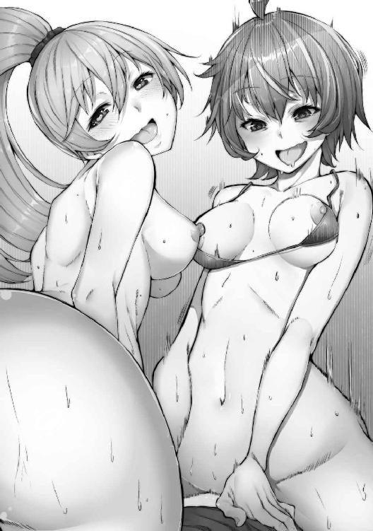
知性の欠片も感じられない舌っ足らずな嬌声とともに、エリヤが果てる。
「孕ゃむぅ！ 悪為さまの赤ちゃん、いっぱい妊娠しますぅっ!!」
「ふぅっ」
俺はフレアをどかし、エリヤからチンポを引き抜いた。
「んああっ......！ うー」
エリヤは不満そうに口を尖らせて俺を見た。
「まだシたりないですぅ......」
「バカ。チンポ擦り切れちゃうよ」
俺は笑う。
「大丈夫」
エリヤは上気しきった顔で、俺のチンポにしゃぶりついてきた。イったばかりのものを......！
だんだんと、力が戻ってくる。
「えへへっ」
「フェラテクが凄いのは分かったが、もう出ないぞ」
「んー......」
彼女の指先が俺の腹を撫でる。
「......!?」
突然、俺のものがぐんと力強く勃起した。
「なっ、何したお前！」
「えー？」
無邪気な笑顔が、恐ろしい。
「『絶倫』って書きました」
「......便利な能力だな」
呆れた。人間の性欲までコントロールできるのかよ。
「あ、悪為さま......」
フレアがもぞもぞと動く。
「私も......悪為さまの赤ちゃん欲しいです」
フレアの手が、俺のものを握りこんだ。
「種付け、してくれますよね？」
「フレアちゃんに射精したら、次はまた私の番ですよ、悪為さま？」
「......ふん」
いいだろう。
普通なら、この辺で限界を迎えるのだろうが......エリヤの能力で、俺は今やセックスモンスターだ。何発でも、着床するまで中出ししてやる。
何十回射精したか、まったく分からない。
「はあっ......はぁっ......！」
エリヤが絶頂している隙を突いて、俺は彼女の背中から『発情』と『淫乱』の文字を消した。
「はあっ！」
彼女は、どさり、とその場に崩れ落ちた。呪文で身体は動いていたかもしれないが、その実、体力は限界に近くなっていたのだろう。
フレアはとうに限界を迎え、倒れこむように寝てしまっている。
「もういいだろ、なあ」
エリヤが書いた呪文のおかげで絶倫になったとはいえ、さすがにもうほとんど出るものがない。
「エリヤ......満足か？」
「ありがとうございます。着床します」
エリヤは横向きに倒れたままそう返した。
「よしよし」
アレだけ出したんだから、そうなるだろうな。俺は心の中でつぶやいて、ぐったりと倒れこんだ。
天井が遠い。最新技術の粋を集めて作られているだろうこの洗脳装置も、すっかり欲望の匂いにまみれてしまった。
フレアは異世界から人間を引っ張ってきては洗脳して犯していたというのだから、元々使い込まれたものだったのかもしれないが。
それにしたって、俺の精液がそこかしこに落ち、フレアとエリヤの愛液が飛び散ったこれは、もはや俺専用のプレイマットにしか思えない。
俺は無造作にフレアのおま〇こに指を差し入れる。彼女はびくんと跳ね上がったが、意識は失ったままのようだ。
中は俺とフレア、二人分の体液でぐちゃぐちゃになっている。それを見て、びくんとペニスが反応した。
「はあ」
エリヤの呪文が恐ろしいことは、嫌というほど分かった。
またやりたいときは、書かせよう。
俺はそう思いながら身体を起こすと、ぐったりしているフレアの中に力強く勃起したままのそれを挿入した。
フレアはまたびくりと反応したが、目は虚ろなままだ。それも仕方ない。
二時間近くぶっ通しで、おま〇ことアナルの両方を犯され続けたのだ。にもかかわらず、最初に犯したときと変わらない素晴らしい締まり。ごじゅごじゅとペニスを突き入れながら、俺は次の一手を考えていた。
どうせダンテインにはマークされている。俺が何かおかしなことをしていると勘繰ってくる頃だ。あまり派手に動きすぎると、Ｘｉｎにも警戒されてしまう。
......内部を掌握するのもそうだが、ホーリーファイブもなんとかしなくては。これらをまとめて考えるなら、まずは敵を殲滅するのが先だろう。五人まとめて相手では、こちらの勝ち目はない。エリヤでさえあの有様だった。
だとすれば......。
やはり、各個撃破が得策か。
熱を持った睾丸がぎゅっと持ち上がった。
射精する......。
俺は乱暴に子宮口を突き上げた。それに合わせて、フレアはがくがくと揺れる。
びゅるっ、と絞り出すように精子があふれると、彼女の膣はそれを飲み込もうとうねった。
まるで、射精されることを喜んでいるかのようだ。勝手に身体が動く、か。
「クックック......」
俺はフレアの髪を撫でた。
「いいこと、思いついた」
ものを引き抜くと、おま〇こに収まりきらなかったザーメンがどばどばとあふれ出す。俺は自分の腹に書かれた『絶倫』の文字を指の腹で擦り、消した。
「ふう......」
もう一年分くらいは射精したような気がする。
「上手くいくといいが」
俺は倒れたままのエリヤの目の前に、股間を持っていく。
「掃除しろ」
「かしこまりました」
もう出るものは何もない。絶倫の文字も消えているから、勃つこともままならない。それでも、気持ちのいいのは変わらない。
「いいぞ、エリヤ。それでこそ俺の下僕だ」
「んはっ......ありがとうございます」
口の周りを体液まみれにしたエリヤが、無表情のまま答えた。
『Ｘｉｎ様』
『ダンテインか。お前から通信とは珍しいな』
『ご相談があるんです』
フレアが、ラボのモニターの音量を上げた。モニターには、相変わらず画面越しのＸｉｎと、その前に立つダンテインが映し出されている。
「フレア、これはいつから？」
モニターを横目で見ながら、フレアに聞く。
「数年前からです。Ｘｉｎ様から召集がかかっても、この部屋にいると気付けないことが多いので」
「......それで、召集部屋に隠しカメラか」
フレアが、「そうです」と言って笑ったのを見る。モニターに視線を戻すと、すぐにＸｉｎとダンテインのやり取りが始まった。
『鬼丸......悪為の件です』
『聞こう』
あー、やっぱり来たか。もう少し先だと思っていたが。
『......やつの処断をしたいんです』
ダンテインは強い目つきで、Ｘｉｎに直訴している。フレアが無言のまま、俺の腕にしがみついた。
『なぜ処断する必要がある？ やつの仕事ぶりは、貴様も見ただろう』
『私にも......エリヤが言っていた意味が分かったんです。あいつは危険です』
『何を言っている』
『......信じてもらえないかもしれません』
ダンテインの声が大きくなる。
『多分、あいつは何かの能力者なんです！ 例えば、人の心を操るような！ そうでなければ、あの二人が簡単に心を許すなんて......ありえません！』
『ふむ。つまり、鬼丸悪為は二人を操っている。そう言いたいのだな？』
『はい！ でなければ、フレアやエリヤが、ポッと出の人間なんかにあんな態度を取るなんて、考えられない！ あまりにも、あいつらの態度は不自然だ！』
『理由はそれだけか。......ほかに根拠は？』
『......いや、それはまだ、ありません』
ダンテインの返答に、Ｘｉｎの声色が明らかに感情を含んだモノに変わる。
『では貴様は、根拠もなく、私の組織の幹部となった者を処刑しろと......そう私に謂うわけか』
『違うんです、Ｘｉｎ様！ あいつを野放しにしていては、いずれ大きな障害になります！』
ダンテインの声が、さらに大きく強くなる。
『いつか、私ですらも操られることがあるかもしれません！ そうなってからでは手遅れだ！』
『......言いたいことは、それだけか』
『えっ......』
Ｘｉｎの面が、画面ギリギリまで近づいている。傍目に見ても凄い迫力だ。
『いいかダンテイン。これから同志を疑うときは、確たる証拠を用意することだ。さもなければ、まず貴様を処分することになるだろう』
ブツンッ。画面の向こうで、通信が切れた音がした。こうなっては、ダンテインは完全に孤立した形だろう。
『クソッ、正気なのはあたしだけかッ!? こうなったら、あたしが直々に......』
真っ暗になった中央モニターを前に、ダンテインが何かを地面に投げつける。まあ、仕方ないだろう。俺だってあの状況になったら、自暴自棄になるかもしれない。
右を見る。フレアが潤んだ瞳で俺の顔を覗き込んでいる。
「本気のダンテインは、強いです。悪為さま、気をつけて」
左を見る。エリヤが無表情で俺を見つめている。
「私が守ります」
俺は二人の視線を遮るように、後ろに向き直る。
「......大丈夫だ。心配するな」
錆び付いた鉄製の扉の前に、俺は立ち止まった。
「ここか」
重たい扉をゆっくりと開けると、きしむ金属の音の向こうから、無数のうめき声とかび臭い空気が襲ってくる。
「......んー」
ホーリーファイブと初めて対峙したあの日。確かに俺は女子供ばかり集めて人質にしろとは言ったが、こんなにも一箇所に集められると、やはりちょっと滑稽である。
俺は一人ずつ指をさして、その人数を数え上げていく。
「......二十八、二十九。三十人目は返しちゃったから、ぴったり全員生き残ってるな、ＯＫＯＫ......さて」
俺は腕を組んだまま、人質たちを見下ろした。
「どんな気分？」
「んーっ......ぅーっ......！」
彼女たちは全員、猿轡を噛まされ、後ろ手に縄で縛られている。......こんなところまで、やっぱり古典的で、笑える。
「そう怖い顔すんなよ」
俺は手近な女の一人に歩み寄って、しゃがみこむ。その顎を捕まえた。
「可愛い顔が台無しだぞ」
そうしようと思ったわけではないが、自然と頬が緩む。これが『悪の笑い』か......俺も、少しずつこの世界に馴染んできてしまっているのかもしれない。お約束のフラグを踏まないように、しっかりと気を引き締めなくては。
「おいっ！ 何をしているっ！」
部屋の入り口で、聞き覚えのある声が聞こえた。俺は立ち上がり振り返ると、「ダンテインか」とだけ言う。
「こんなに人間を集めて......反乱でも起こすつもりか!?」
「反乱......Ｘｉｎ様にか？」
ハンッ、と、俺は鼻で笑った。
「そんなことをするはずがないだろう。......俺は確かによそ者だったかもしれんが、今はＸｉｎ様に忠誠を誓う者の一人......」
遠くからでも、ダンテインの険しい表情が、手に取るように分かる。
「それに、俺が集めさせた人間たちだ。どうしようと、俺の勝手だろ？」
ゆっくりと、ダンテインに向かって、歩き出す。
「違うか？」
「......何を企んでいる」
「愚問だな」
彼女との距離が、だんだんと詰まっていく。
「俺の目的は、Ｘｉｎ様の目的と同じ。お前の目的は違うのか？」
「......鬼丸悪為......貴様は、怪しすぎる」
「秘密結社の幹部たる俺にその台詞。まさに褒め言葉じゃないか」
ぴたりと、彼女の目の前で立ち止まる。子どもが、駄々をこねているようで、可笑しい。
「哀れだな、ダンテイン。作戦の失敗が続きすぎて、同僚を疑うことしかできなくなったか」
「なっ......！」
俺は彼女に背を向けた。
「もう一回言ってみやがれっ!!」
「失敗続きで、耄碌したかと言ったんだ」
「ぐっ......言わせておけば......っ......貴様ぁっ......!!」
「違うのか？ いや、これは失礼」
もう一度振り返り、ダンテインを見た。
怒りで、髪の毛が逆立っているようにさえ感じられる......熱気というよりは、もはやそれは俺に向けられた、完全な殺意。
「覚えていろ」
「でかい口は、少しでも戦果をあげてから叩いてくれないか。俺も、『暇じゃない』んでね」
俺の言葉に、ダンテインは何も答えない。その代わり、鉄の扉を左の拳で殴った。扉には、ぽっかりと大きな穴が......。
うへぇ......あんな威力で殴られたら、ひとたまりもないな。これも作戦のうちとはいえ、少し肝が冷えたぞ。
「悪為......」
ダンテインと入れ替わるように、エリヤが現れた。一度俺を呼び捨てにしてから、後ろを振り向き、左右を確認し、そして小さく「様」と付け足す。
「あー、あんま気にすんな。こっちこっち」
エリヤに手招きをすると、彼女はうっすらと笑みを浮かべる。それから「はい」と小さく答えて、こちらへと向かってきた。
......彼女が引っ張ってきたのは、フレアの研究室に置いてあった、例の洗脳装置である。装置の乗った台座に車輪をつけ、研究室とこの監禁部屋にレールを敷いて自由に行き来できるようにさせた。
「ご苦労」
俺がそう言うと、エリヤは台から手を放す。ずがぁぁんっ......と鈍い音がして、台座から固定用の杭が降りてきた。あたりに砂埃が舞う。
「いえ、これくらいなら、別にどうということはありません」
彼女は恭しく礼をして、またわずかながら微笑んだ。
「さて、お集まりいただいた皆さん」
俺は、パンパン、と手を打って、人質たちの注目を再び集めた。
「来てくれてどうもありがとう」
一人一人の恨めしそうな顔が、実に愉快......。
「君たちには、これから大事な役目を担ってもらう。苦しい思いはさせないから、心配しなくていい。エリヤ」
「はい」
彼女を見ると、敬礼をしていた。うん、なかなか様になっている。
「説明してやれ」
「かしこまりました」
エリヤが、一歩前に進み出る。
「貴様らには、これより我がエクリプスの戦闘員となってもらう」
「!!」
もごもごと、声がする。当然、口に噛まされた布のおかげでロクに喋れもしないのだが、何か思うところはあるのだろう。
無理もない。俺だって逆の立場なら、心底動揺していたはずだ。そして実際に、あのとき俺は動揺した。
......しかし、その可能性は、とうの昔に自ら潰したのだ。フレアにより戦闘員にされて使い潰されるという、最悪のシナリオを。
しかし残念ながら、彼女たちは逃げられない。
ふと、ぐずっ、と鼻をすする音が聞こえた。
「ん」
俺は、その音を発した人間を見つける。まだ若い女の子だ......元いた世界でいえば、学生にあたるラインだろう。指示をした俺も俺だが、この娘を攫ってきた怪人も、相当に悪人である。
「......お前からにするか？」
彼女にそう声をかけると、くりんとした瞳から、ぼろぼろと大粒の涙がこぼれ落ちた。
「大丈夫、怖いのは今だけだ......ずっとドキドキするよりは、いいだろ」
あえてそう、優しそうな声で話しかける。......別に、彼女への思いやりからではない。それがほかの人間の恐怖をかき立てるかと思うと『面白くて仕方がないから』だ。俺は今、明らかに人間の段階を超えている。それが面白くて仕方ない。
「んーっ!!」
だがそこに、身をよじりながら、俺と少女の間に割って入る女がいた。
「ああ？ なんだ、お前は」
俺は肩をすくめ、じっと彼女を見た。
「なんだ。こいつの母親か？ ずいぶん若いみたいだが」
「んんー!!」
抗議の、強いまなざし。
「子を守る母は強し、ってね」
俺はエリヤに向かって「最初はこの母親にする」と言った。
「かしこまりました」
至って事務的に、エリヤは彼女のもとへと歩み寄り、まるで砂袋でも運ぶかのようにずるずると引きずる。娘は、懸命に母にすがろうともがくが、手足を縛られている状態では、まるで芋虫のようにのたうち回るのが精いっぱいだ。
「あー、胸が痛むー」
思ってもいない言葉が、ぽんと口をついて出た。俺はいつから、こんな外道になってしまったのだろうか。最初から？ それとも、ここに来てからだろうか？
エリヤは母親を、洗脳装置の前に捨て置いた。どさりと鈍い音がして、彼女は床に崩れ落ちる。
「エリヤ、その女の猿轡を外してやれ」
「......いいのですか？」
「親子の最後の別れだ」
「......悪為様が、そう仰るのなら」
口の自由だけを与えられた女は、金切り声で叫び始めた。
「ゆりちゃん！ こっちに来ちゃだめっ！ ママは大丈夫だからぁっ!!」
あまりに甲高い声に、頭が痛くなる。
「ねえっ！ あなた!!」
「あ？ 俺？」
「そうっ、あなた！ 私は好きにしていいから、ゆりにはっ......娘には手を出さないで!!」
「あー、はいはい、いい、いいから」
俺は耳を塞いで、エリヤに目配せをした。
「ゆりちゃ......むグぅッ......！ んーっ!!」
「はーっ......！」
ようやく超音波のような怪音が収まって、俺は耳から手を放す。
「分かったよ、俺は何もしない。そのヒステリックな金切り声に免じて、お前の娘に手出しはしないと約束しよう」
母親が涙ぐみながら、俺と、『ゆり』と呼ばれた娘を交互に見る。こいつには、今、世界がどんな風に見えているんだろうな。悪魔のような俺と、天使のような娘か。それとも、娘を助けると言った俺の言葉に、多少は安堵を覚えているのだろうか。
......ま、どっちでもいい。
「エリヤ、やれ」
「はい」
「んぐーっ......!!」
弱々しい声を無視するように、エリヤは乱暴に、女を洗脳装置の上へと放り投げる。そして、戸惑うこともなく、レバーを下げた。
「んがぁぁぁぁぁぁぁ！！！」
白い閃光と、バリバリという電撃の音。それに交じって、女の絶叫が聞こえる。
「んがっ......ああぁぁぁぁぁぁ！！！」
それを背に、俺は人質たちのもとへと歩み寄り、しゃがみこむ。本当に、本当にすまなそうな表情を作り、言った。
「君たちもすぐにああなるから、今のうちに楽しかった思い出とか、そういうのを噛み締めるようにね」
もはや、誰一人として、声を上げるものはいなかった。次に声を出せば、間違いなく自分が標的になると思っているのだろう。みな一様に、目に涙を浮かべ、白目を赤く血走らせ、口から野生動物のような息を吐いている。そしてみな、そのわずかに残された『見逃される』という未来に期待しているのだ。
......馬鹿なやつらだ。全員、同じようになるというのに。
俺は、『ゆりちゃん』を見た。
「お前もだよ、ゆりちゃん」
「......！」
「んぐーっ......！」
二十七人の中の誰かから、非難の声が上がる。
手を出さないと言ったじゃない、アレは嘘だったの!?
そういう声だ。
「あー、なんだって？ 分かんないけど？」
俺は少女の足を縛る縄を掴む。
「誤解しないでくれよ。あれはあの女を黙らせるための方便さ。ほら、嘘も方便って言うだろ？」
口角が上がっていく。
「『ゆりは......娘だけは助けてください～』って」
今から三十分もしないうちに、全員俺のおもちゃになる。
そんなものに、約束するだけの価値はない。
「分かってねえなあ」
俺は、少女の顔を見た。恐怖と悲しみと俺への敵意で、顔色が悪い。
「母親と娘、セットだから面白いんだろ」
俺は、エリヤが母親をそうしたように、少女をずるずると引きずって、洗脳装置の下に置いた。
「エリヤ、そろそろいいぞ」
「はい」
俺の指示に合わせて、エリヤは今の今までずっと動いていた洗脳装置を停止させる。閃光がやみ、中から出来立ての『戦闘員』が出てきた。
「そいつの猿轡を外してやれ」
「はい」
「それじゃ、戦闘員の順番待ちをしている皆さん！」
俺は一際大きな声を出して、人質たちを見る。
「皆さんには、こうなってもらいます」
「イーッ！」
母親だった女は、満面の笑みで、俺に向かって右手を上げた。
「んぐーっ......んー......！」
「んぁーっ......！ んーっ......!!」
ざわめきとも取れる声が、誰からとなくしてくる。
「ゆりちゃんも、ちゃんと見なよ」
俺はしゃがみこみ、少女の肩に手を乗せた。
「あれが、お前のママだ」
「んー......!!」
少女は、小さく首を振って、必死に否定する。
「よし、じゃあお前」
「はいっ！」
俺は洗脳装置に腰かけて、女に質問を投げる。
「今の気分はどうだ？」
「はい、光栄ですっ！」
「オッケー。じゃあ、お前のことについて、いくつか質問するから」
「はいっ！ すべてお答えしますっ！」
「よしよし」
女の目は、どこまでも従順だ。知ってはいたが、この洗脳装置の効果、やはりえげつないな。
「お前の......そうだな。家族構成を教えろ」
「はいっ！ 私は、娘と二人で暮らしておりました！ それ以前は三人ですっ！」
「......どうして過去形なんだ？」
「はいっ！ 夫は三年前に死にましたっ！」
女は、再度敬礼をする。
「そして今日をもって、私は母という立場も捨てますっ！」
「ほー」
なかなかいい答えだ。
「いい返答だな」
「はいっ！ ありがとうございますっ！」
「それじゃ、次の質問」
俺は、ちらりと娘を見た。
「お前とお前の夫ってさ、どんなセックスしてたの？」
「はいっ！ あの男は非常に自分勝手で、一分と持たない早漏でした！ 猿の交尾と変わりありません！」
「へー......そんな満足できない相手との間にできた娘さんでも、可愛いわけ？」
「いえっ！」
女は、自分の娘を見た。
「この娘は、浮気相手との間にできた子どもでありますっ！」
「おお......こりゃなかなかな爆弾発言だなあ、オイ......旦那さん気付かなかったの？」
「はいっ！ 夫は、私のことをすっかり信じていましたっ！ 最後まで、疑う気配すらなかったですっ！」
「ははっ......なんだよ。貞淑な母親かと思ったら、とんだクソビッチじゃねえか」
「はい、申し訳ありませんっ！」
もう一度、少女を見た。......まだこの歳では、こんなことを突然言われても受け入れられないだろう。自分の母親の変わりように、ただ茫然と、その目を見開いている。まあ、変に泣いたりされるよりは、よほどこちらのほうがいい。
「それじゃあ、そんな淫乱なママさんはさあ、どんなオナニーを、どれくらいの頻度でするの？」
「はいっ！ 基本的には、二日に一回、クリトリスを中心として、指でオナニーをしていますっ！ 月に四日ほど継続するオンナノコの日は、仕方がないので諦めていますっ！ ですが、始まりかけと終わりかけは、我慢できずにおま〇こをいじってしまいますっ！」
「頻度高いなー。それに、オンナノコって歳でもないだろ？」
「失礼いたしましたっ！ 妊娠できなかったメスの日ですっ！」
人質たちも、さっきから、何も言葉を発しなくなっていた。
『......次は、自分の番かもしれない......こうやってオナニーや、セックスの秘密なんかをバラされるのか』
そんなことを思って、ドキドキしているのだろう。それって、興奮？ 俺はおかしくなって、次々と聞いていく。
「うーん。じゃあ、好きな体位は？」
「はいっ！ バックで犯されるのが好きですっ！」
「どうして？」
「無理やり犯されているような感じが、たまらなく興奮しますっ！」
「へー、結構マゾっぽいのかな？ エピソードとか有る？」
「はいっ！ セックス中に首筋を噛まれてイってしまったことが、何度かありますっ！」
「じゃあ、皆のザーメン袋になれる？」
「はいっ！ 一度に五人のチンポに相手していただいたこともあるので、ぜひお役に立てればと思いますっ！」
「すっげ......いやあ、殊勝な心がけ。素晴らしいね」
「ありがとうございますっ！」
びしりと、右手が上がった。
「さて、じゃ、場所交代」
「はいっ！」
俺は立ち上がり、女を再び洗脳台に寝かせる。
「パンツ脱いで」
「はいっ！」
女はスカートの中に無造作に手を突っ込み、パンツを引き抜いて俺に手渡した。
「うわ......シミついてんじゃん」
クロッチの部分が、じっとりと濡れている。
「いつから濡れてたの？」
「いえっ！ 分かりませんっ！」
「......ま、いいか。好都合だ」
スカートの中に、手を差し込む。
「エリヤ、目配せしたら、レバーを」
「かしこまりました」
女の太ももに触れる。
「あぅ......」
「なんだよ、こんなところまでべとべとにしてんじゃねえか」
「申し訳ありませんっ！」
「まあいいさ......ほら」
指先が、ドロドロに濡れそぼった女性器に触れる。
「んあぁっ......！」
「エリヤ」
ちらりと、目で合図する。エリヤはこくりとうなずいて、レバーのスイッチを入れた。
「あああああああああああ！！！」
再び、白い閃光が、俺と女を包み込む。すかさず、俺は女のクリトリスを指先で摘まみ上げた。
「んぉぁぁぁぁぁ!!」
電撃で声が出ているのか、それとも俺の指先で感じているのか、まるで分からない。
「おらっ！」
濡れた膣の中に指を差し入れ、中指をくにくにと動かす。......フレアとエリヤを使って練習した、『Ｇスポットを刺激する方法』だ。
「あぃぁあぁぁあぁぁあぁぁぁ！！！！」
女の目は、眼球が飛び出すほど見開かれている。
「淫乱マ〇コ気持ちいいか？」
「いぎぃいぁぁぁぁぁ！！！」
半ば、言語として崩壊した言葉が飛び出してくる。
「しゅごんっ......んぁぁぁぁあああああああ!!」
口から泡を吹き、身体を痙攣させ、それでも膣は、指にいとおしそうに吸い付いてくる......。
「エリヤ、そろそろ止めろ」
レバーをがくんと落とす。
「......っはぁ......」
閃光が消え、再び室内に沈黙が戻った。俺は、まだ吸い付いてくる女の肉壺の中から乱暴に指を引き抜いた。
「んぁぁっ......！」
「お前」
俺は、べとべとになった右手を差し出す。
「これは、お前の体液だ。責任をもって綺麗にしろ」
「はいっ、......はぁっ......申し訳ございません......はっ......ただいまっ......！」
女は、息も絶え絶えになりながら、俺の指を舐める。淫靡な水音が、耳に心地よい。最初に聞いた金切り声とは、雲泥の差だ。
「っはぁっ......これで、いかがでしょうか」
「いいだろう......ひとまず立ち上がれ」
「かしこまりました、ご主人様」
言って立ち上がる彼女には、戦闘員のそれとは違う、女としての仕草があった。やはり研究結果の通り、こいつの知能も回復したようだ。まったく、不思議なこともあるものだ......。
「よし、今から、いくつか質問する」
「かしこまりました。なんなりと」
「まず、お前は、俺のなんだ？」
「はい、私は、ご主人様の肉便器です」
......人質が、瞬時ざわめいた。肉便器と言わせるつもりはなかったんだが......こいつ自らが、自分をそう認識したということか。
「オッケー。じゃあ、次」
俺は、『ゆりちゃん』を指さした。
「こいつは、お前にとってなんだ」
「私の娘です」
「うん、オッケー......お前の娘は、俺にとってなんだ？」
「......肉便器の娘なのですから、当然肉便器です」
「そうだよね」
俺はうんうんとうなずきながら、少女の表情を見守る。まるで信じられないという表情だ。それもそうだろう。夢でも見ているような気持ちなのかもしれない。きょとんとして、自分の母が言っていることをなんとか理解しないようにしている。
「でも、この子はそうなりたくないんだって。ママから説得してよ」
「かしこまりました」
女は、自分の娘と同じ目線まで、腰を落とした。
「ゆりちゃん」
「んー......」
「エリヤ、娘の猿轡を外してやれ」
「はっ」
エリヤの手によって、少女の声に、自由が戻る。
「ママ......ママ変だよ......」
「ママは変じゃないのよ。本当の幸せに気付いたの」
母の皮をかぶったメスが、自らの娘を抱きしめる。
「ママ......！」
「エクリプスのために、こころもからだも、尽くすの」
「ママ、お願い......」
彼女の目は、涙で腫れている。
「こんなの、ママじゃない......！」
「ゆりちゃん、わがまま言わないの」
駄々をこねる子をあやすのと、まったく同じ動き、そして言葉。洗脳されてなお、メスの中に残った、母性本能なのだろうか。......あるいは、効率的にご褒美をもらうための、ポーズなのか。
女は娘を抱き、背中を何度も、さするように軽く叩いて、「いい子だから」と繰り返している。
「ね、ママと一緒に、しあわせになろ？」
「ママ......ねえ......ママ......！」
娘は、がくがくと首を横に振っている。
「大丈夫、だって、ゆりちゃんは淫乱なママの娘だもん......」
ゆっくりと、それでいて力強く彼女を立ち上がらせた。リミッターが外れて、普通の人間からは考えられないような力が発揮できているらしい。ゆりちゃんの身体を、力ずくで洗脳台の上に乗せる。
「ママ！ やだっ......やめてっ......!!」
「パパの娘じゃないから、もっと安心」
一匹のメスは娘の身体をまさぐる。
「やっ......やだよぉ......何してるのっ......ママぁっ......」
「大丈夫......ゆりちゃんにもえっちな遺伝子がいーっぱい受け継がれてるからね」
指先が、まだ女性として完成していない割れ目を、母として機能しない乳房を、撫でる。
「やぁっ......やめてっ......ママ......ママーっ！」
いつまで見ても飽きないな、とは思ったが、さすがにあと二十七回も同じことをしなくちゃいけないのだ。ここに時間を掛けていられるほど、暇ではない。
「おいメス豚」
「はいっ、ご主人様！」
「そのレバーを引けば、お前の大事な娘は、晴れてエクリプスの戦闘員だ」
「はぁっ......なんたる幸福......ゆりちゃん、感謝するのよ！」
「ママっ......!?」
「で、どうする？」
俺は、女の顔を覗き込んだ。
「娘は嫌がっているみたいだが......俺はそのレバー、お前に引いてほしい。でき──」
「──かしこまりましたっ！」
「ママーッ！！！！」
俺が最後まで言い終わるのが早かったか、雷光が早かったか......。白い稲光の中で、娘の目が、だんだんと渇き、黒く鈍っていく。
「あはっ！ あははっ！ やりましたご主人さまっ！ これでっ！ 娘も性奴隷！」
女は、空いたもう片方の手で、クリトリスを弄り始めた。
「気持ちいいですっ！ あはは！ おま〇こ気持ちいい！ 娘を洗脳しながらするオナニー最高ーっ!!」
口から涎を垂らし、娘に見せつけるようにオナニーをするその姿は、人間であったとは信じがたい。
「ご主人様ぁ！ 見てぇっ！ 私のおま〇こ！ こんなにぐちゅぐちゅですよぉ！」
愛液のしぶきが、娘にかかる。
「種付けしてくださいっ！ ザーメンティッシュマ〇コでオナニーしてぇぇっ！ 次の戦闘員孕ませてくださいぃ！」
「ククッ」
俺は、その痴態を鼻で笑った。
「イクっ！ イキますぅ！ クソビッチマ〇コ、お外でオナニーしてイっちゃうぅぅ！！！」
全身を震わせ、おおよそ人間のものとは思えない奇声を上げながら、女はその場で果てた。
「......いいか！」
俺は洗脳装置の発する電撃音に負けないように、声を張った。
「君たちにはみんな、こうなってもらう！ そうすると、どうなるか分かるか？」
......返事も、反論も、何もなかった。
「二十九匹の、メス豚が完成する」
絶句か。無視することないだろ。
俺は床に崩れ落ちて絶頂している女の背中を、靴の裏で軽く蹴った。
「おい」
「......はいっ......！」
「そろそろレバーを戻せ、もう充分だ」
「分かりましたぁ......！」
彼女は、とろとろに崩れた表情で、レバーを元に戻す。光が収まると、そこにはまぶしい笑顔の娘がいた。
「エリヤ、この娘の縄をほどいてやれ」
「はい」
俺の指示に合わせて、エリヤは手際よく縄の結び目を解いていく。少女も、自らエリヤの動きに合わせ、縄を外した。ぽけーっとしている少女に、にこりと笑って話しかける。
「よし、おいで」
「......はいっ!!」
ニコニコと本当に幸せそうな表情の少女が、洗脳装置から飛び跳ねるように降りてきた。俺のほうを向きながら、にっこりと笑う。
「あはっ！」
「よしよし......ちゃんと『ゆりちゃん』は消せたかな？」
「はいっ！ わたしは、戦闘員ですっ！」
「よし、いい子だ」
その言葉に、ゆりちゃんだった女の子は、右手をぐいっと精いっぱい天に向かって伸ばす。
「ありがとうございますっ!!」
「じゃあ、最初の命令だ。服を、全部脱げ」
「はいっ!!」
彼女は、まるでそういうゲームでもしているかのように、実に楽しげな返事をした。そして、投げ捨てるように、次から次へと服を脱いでいく。
シャツを上に放り投げた。
長いスカートを、ホックを外して、脱ぎ捨てる。
小さなパンツも、まだそれほど意味をなさないブラジャーも、すっかり脱いだ。
そして、丸裸になって、再び右手をびしりと上げる。
「できましたあっ！」
俺が少女の頭を撫でると、彼女は「ありがとうございます！」と、一層顔をほころばせた。
「よしよし、えらいぞー！ じゃあ、足を広げようか！」
「はいっ！」
閉じていた足を、パカリと開く。俺は彼女の頭に当てていた手を、その股間に移動させる。そのまま、ぴったり閉じたスジを、中指で何度もなぞった。
少女は、何をされているか分からず、不思議そうだ。しかしそれすらも嬉しいのか、惚けた笑顔は崩さない。
「さて、ママさん」
俺は首だけ振り向いて、女を見た。
「お前には知能を戻してやったが、こいつはどうする？」
それに対し、『母親だった女』は、よく分からないという表情を浮かべ、首をかしげる。
「もう一度言う。お前の娘に、知性を戻す必要はあるか？」
彼女は少し考えた後、にこっ、と笑った。
「ええと、いえ？ その必要はないと思います。娘は戦闘員として使い捨てていただくだけで、充分に幸せなはずです」
......確かにこの笑顔は娘とよく似ている。まさに親子のものだ。
「はー、やっぱりかー」
俺は、娘に目をやった。秘所に当てていた人差し指と薬指を、パカパカと開閉して遊ぶ。その音が少しだけ湿り気を帯び始めたのは、さすが、この親あってこの子ありということだろうか。
「お前のママ、あんなこと言ってるけど？ 君としてはどうなんだ？」
「しあわせですっ！」
太陽のような、満面の笑みが返ってくる。同時に少女の股間がピクピクと動き、失禁し始めた。まごうことなき、『嬉ション』だ。
「わたしは、戦闘員として、頑張りますっ！」
「......オッケー！」
娘の尿で濡れた手を母親に舐めさせながら、俺は日陰の、あるいは冷たい雨のような笑みを浮かべた。
「悪為様」
エリヤが、俺の名を呼ぶ。
「ん、どうした？」
「戦闘員の中でも、優秀なものは怪人にすることができますが」
「ああ、そういえばそうだっけ」
「ここには素材が二十九体ありますから、一定以下の年齢は除いても、十体程度は怪人にできるかと」
「......えっ」
俺は意外な答えに面食らった。
「そんなに怪人になるの？」
「ええ......もっとも、本当に質が高い怪人となれば、さらにその中の一握りではありますが」
エリヤの答えに、俺は「うーん」とうなった。
「......まあ、でもそうだよな」
エクリプスのこれまでの作戦成功率で考えれば、それくらい怪人にできなくちゃ、怪人が品切れするか。ちらっ、と、残りの人間を見る。
「おい喜べ、戦闘員じゃなくて、怪人になれるやつもいるぞ」
俺の声を、みんな無視しているようだった。
「ったくさあ......」
俺は、今戦闘員になったばかりのメス豚と、その娘を両脇に抱いた。
「喜べって言ったら喜べよなー。俺、そういう陰湿なの嫌いなんだけど。あんまり冷たくされると、寂しくて、全員『ボテ腹怪人ザーメンジャンキー』にしちゃうかもね」
......それでも、誰も、何一つ反論をしようとはしなかった。
「ノーリアクションかよ」
ため息をついて、エリヤを見た。
「ま、いっか。さっさとやって、さっさと帰るぞ。時間を掛けるだけ、ムダだ」
「はい」
エリヤは、心得ていますと言わんばかりに、首をうなずかせた。
予想していたのだ。
ダンテインが俺のことを潰しにかかるのは時間の問題だろうと。
彼女は自尊心が強い。それに、Ｘｉｎやこの悪の組織であるエクリプスに対する忠誠心も、フレアやエリヤに比べてずいぶんと高かった。そのダンテインが、俺のような『突然現れた味方』を心強い仲間だなどと、思うわけがない。
......ま、騙されて、さっさと肉穴になってくれてもよかったのだが。流石に少しは張り合いが欲しいというものだ。
「フレア、もういいぞ」
俺のチンポをうまそうに頬張るフレアの頭を撫でてやると、彼女は不満そうに俺を見た。
「っはぁっ」
そして口を離すと、「ザーメンくれないんですか？」と聞いた。
「やるさ。だが、今はお仕事が先だ」
モニターに目をやる。
「見ろよ、エリヤは立派に働いてるぞ？」
廃工場で指揮を取るエリヤは、心なしか楽しそうだ。
「あんなに幸せそうなエリヤ、私は見たことがありません。悪為様にお仕えできて、幸せなのでしょう」
「そうだな」
確かに、エリヤが微笑んでいる瞬間というのは、俺が彼女を配下に置くまで見たことがなかった。もちろん、それは彼女が俺を警戒していたというだけの話なのかもしれない。だが、あんな端整な顔で強く睨まれると、余計にそれをぶち壊してやりたくなる。
特に、快楽に溺れて、誰にも見せたことのないような、涙と涎にまみれた恍惚の顔なんか、最高だ。実際に、エリヤはそうなってくれた。
そして、俺の優秀な使いっ走り兼、戦闘兵器兼、オナホールになってくれたわけだ。
「俺も、そろそろ行こう」
「......お気をつけて」
「大丈夫だ。この世界で、俺に敗北はない」
俺はズボンのジッパーを上げると、フレアの頭をぽんぽん、と二度叩いた。
「さっき言っていた『アレ』、もうすぐ完成するか？」
「はい。つつがなく」
「よし」
俺が笑うと、彼女の頬が赤く染まる。
「ご褒美は......」
「もちろん。だから、しっかりやってくれよ？」
「はいっ......！」
フレアは幸せそうな笑みを浮かべた。
俺の作戦通り、エリヤは廃工場に戦闘員を集結させている。
怪人も、新規に作った分も含めれば五十人は下らない。
「すごい数だな」
俺が笑うと、エリヤが微笑んだ。
「褒めてくださいますか」
「ああ。えらいぞ、エリヤ」
俺はそう言って彼女の頬を撫でる。
「......ありがとうございます」
言葉こそ平坦だが、彼女は頬をうっすらと赤らめた。
あの後、彼女の背中には再び『人』の文字を書いたのだ。元のエリヤに戻るかとも思ったのだが、案の定、そうではなかったようである。彼女の俺への態度は、完全に愛しい恋人に向けるものになっていた。
「それでは、作戦通りに」
俺がそう言うと、彼女は小さく頭を下げた。振り返り、約二十体の『新型』戦闘員に向かって号令を出す。
「配置につけ」
イィィッ、と奇声が上がる。直後、ブォンというバイクのエンジンを吹かす音と、タイヤが地面に擦れる音が鳴り響いた。
ホーリーファイブがやってきたのだ。
「まーた、来たのがバレバレだ。本気で懲りないやつらだな」
『いい加減、あいつらに教えてやったほうがいいかもしれない』などと本気で考えていると、エリヤが俺の腕に絡みついてきた。
「悪為さま......私、怖いです」
彼女を見ると、小刻みに震えている。エリヤのそんな感情を見たのは、初めてだった。前に彼らの基地に突撃したときは、もっと勇猛だったはずなのに。
明らかに彼女は、一戦闘員から、か弱い一人の『女の子』になっているように見えた。それがいいことなのか悪いことなのか、俺には分からないが......。
そうしたのは、まぎれもなく俺だ。
「心配するな」
そう言うと、彼女は一層強く、俺の腕を抱きしめた。廃工場は入り組んだ形になっていて、小さな部屋がいくつもある。
それぞれに、怪人と戦闘員をばらばらに収容する。今までのように、怪人一人対ヒーロー五人などというハンデ戦は無用だ。むしろ、これまでそうして楽をさせてやったのだから、今度はこちらの番だろう。
......一つの部屋には十体の怪人と、二人の戦闘員。
それが全部で、五つある。
戦闘員が少なすぎるって？ それは大きな間違いだ。
──ヒーローが廃工場に入ってきたのを確認し、俺はマイクを掴んだ。
「ようこそ、間抜けなヒーローたち」
モニターに映った彼らは、どこからか聞こえている俺の声にたじろいでいる。
「お前らってさ、いっつも音を立てて来るし、まとまって行動してるよね。そういう威圧感を与える行動って、よくないと思うんだ」
「何が言いたいッ！」
フェニックスレッドが叫んだ。
「まあ落ち着けよ。これはただの忠告さ」
がらんどうの部屋できょろきょろとあたりを見回している彼らが、面白くてたまらない。
「俺は今まで怪人たちが味わってきた数の暴力っていうのを、お前らにも感じてほしいわけ」
「......どういうこと......」
セイレーンブルーの声が、空間に響き渡る。
「目の前に、扉が五つある。そこにはそれぞれ戦闘員二人と、怪人十体を用意した。お前ら、それぞれが別の部屋に入るんだ」
俺は、怪人たちが待ち構えている部屋をヒーローの前に映し出す。それを見て、ペガサスホワイトが叫んだ。
「誰が、あなたなんかの言う通りにするもんですかっ！ 一つずつ、順番に攻略してあげるわ！」
そう言って、そのままズンズンと部屋の奥に進んでゆく。
「おっとっと。いいのかな？」
そう言うと、ヒーローの動きが止まった。分かりやすいやつらだ。
「では、出てきてもらおう」
ざさっ、と足並みを揃えて、戦闘員が姿を現した。
「クックック......こいつらを前にしても、同じことが言えるか？」
「......!!」
ホーリーファイブは、戦闘員たちを見た。そして、彼らは目を丸くする。
「行方不明の人たち!?」
「そーなのよ」
わざと猫なで声を出し、彼らの怒りを煽る。あの後、洗脳した人質の顔と局部をあえて露出させた、専用の戦闘服を作ってやったのだ。ヒーローが、戦闘員の正体を『人質』だと気付けるように。
「──この前さあ、ビルを『ドカン』っとやっただろ？ でも、実は人質は生きてた。やっぱ俺も人間だからさ、同じ人間は殺せないっていうか。いやー、俺ってやさしー」
笑顔から、急に真顔にする。
「でも、もういない。戦闘員になったからな」
モニターの中で、戦闘員たちは右手を高々と上げたまま、微動だにしない。
「あのな、お前ら。エクリプスの戦闘員をただの消耗品か何かと勘違いしているみたいだが、こいつらは基本、元人間だぞ」
俺が笑うと、彼らは「嘘だ」などと言っている。
「もしかして、気付いてなかった？ バカなの？」
これから始まる楽しいショーの、ここはまだ、余興──ホーリーファイブ崩壊の、序章。戦闘員兼人質となった『俺の玩具』たちの、愉快なパフォーマンス......。
一人の怪人が、戦闘員たちをかき分けるようにして、ヒーローの前に進み出た。
「っ......!!」
例の、ビッチなママさんだ。怪人化はしてやったが、このときのために、人間だと分かるようにしておいた。
「......皆さん......聞いてください」
女は、蚊の鳴くような細い声で、悲しそうにつぶやいた。
「私たちは、みんな、人質として捕らえられた後、このような姿に変えられてしまいました......」
「イーッ......」
その空気を盛り立てるように、戦闘員たちも、暗く相槌を入れる。
「私の娘も、戦闘員にされてしまいました......おいで、ゆりちゃん」
「イーッ」
手前のほうにいた、一際若い娘が、前に飛び出した。
「あんなに若い女の子まで......！」
「皆さんのせいです」
女は、下唇を噛んで、目に涙を浮かべる。
「皆さんが、きちんとあのとき、助けてくれていたら......私たちは......みんな人間のままでいられた」
「イー......！」
「イイーッ......！」
恨みがましい沢山の目が、ホーリーファイブに突き刺さった。
「すっ......すまないっ......俺たちが不甲斐ないばかりにっ......」
フェニックスレッドが、頭を下げた。
「謝って済むならっ」
ひぐっ、ひぐっ、とすすり泣く女。
「こんなっ」
目から大粒の涙を流し、顔をくしゃくしゃにさせて。
──笑った。
「こんな最高な気持ちにならねぇよぉぉっ!!」
「!?」
さっきまでのトーンとは打って変わり、地獄の底から湧き上がるような鈍い笑い声が、部屋中に響く。
「貴様らみたいな、誰も救えない『ヒーロー気取り』を！ この手でブチ殺せる力をいただいたんだもの......！ こんな最高なことはないわっ!!」
「イーッ!!」
「狂ってるっ......」
いきなり笑い出した戦闘員たちを見て、ドラゴングリーンは身を一歩引いた。俺は一度落としていたマイクのスイッチを、再び入れる。
「いやあ、怖い怖い」
ペガサスホワイトが、天を仰いだ。
「はい、どうも。しかしお母さん、娘まで戦闘員にされちゃって、ブチギレだねー。そんなにヒーローが憎いかな？」
「ホーリーファイブ、コロス。ホーリーファイブ、コロスコロスコロスコロスコロスコロスコロスコロスコロス......」
女は満面の笑みのまま、バグったように何度も繰り返す。
「うわ、怖っ」
俺は引きつる笑いで、それだけ言った。
もちろん、ここまで命令済みではあったが、実際に目の当たりにすると、異常すぎて気持ち悪い。俺なら、『コレ』を人間だとは認識しないね......でも、彼らは違う。
「お前っ！」
フェニックスレッドが声を荒らげる。
「何？」
「この人たちを元に戻せっ！ 正々堂々勝負しろっ！」
「はー、またそういう感じのヤツ？ いいか？」
俺は、画面の中のレッドを睨んだ。
「一つ、そいつらは人質も兼ねてる。二つ、そいつらは人質だが、同時に戦闘員だ。戦うならそいつらと戦え」
「でもっ......」
「『人間は倒せない』か？」
「ぐっ......！」
「おおっ、分かりやすい！ 嘘でも隠せよ、バカが」
もう何度目かも分からない、歯ぎしりの音が聞こえた。
「じゃ、戦闘員......じゃない。『人間』の皆さん、後は流れ通りで」
そう告げて、再びマイクの電源を落とす。
「了解です。ゆりちゃんっ」
笑いすぎて口角を痙攣させている女が、娘の肩を優しく叩いた。
「あの、赤い服のお兄ちゃんを、一緒にボコボコにしようねーっ！」
「イーッ！」
女が指さしたのは、フェニックスレッド。娘はそれに従って駆け出し、レッドの前で立ち止まった。
「イー！」
......確かに戦闘員のポーズだが......顔の見えている女の子がやると、まるで『戦闘員のマネ』をしてふざけているように見えて滑稽だ。これで、服装が普通だったら......陰部が丸見えでさえなければ、この女の子だけは、楽しいホームビデオの一部みたいなのに。
「イーッ！」
見習い戦闘員は、彼の足に向かって、覚えたてのキックを食らわせる。
「くそっ......」
「イー！ イー!!」
思い切り蹴っているようだが、所詮は女の子のキック。変身しているフェニックスレッドには、かすり傷ほどのダメージもない。
「レッド、大丈夫かっ！」
「俺は大丈夫だ......痛くない......だが......」
「イー！ イー！」
キックが効かないと見るや、少女の攻撃はパンチに変わっている。
だが、これも、まるで効いていない。
「クソッ、反撃するわけにもいかないし......」
ブツッ、とマイクがオンになる。
「あー、言い忘れてた」
「っ......！」
「その子、ゆりちゃんっていうんだって。可愛いでしょ」
「ぐっ......貴様ぁっ......！」
「そう怖い顔すんなよ......まあ、お前らマスクしてるし、どんな顔かはよく分かんないけど」
やっぱり、こいつらを煽るのは楽しい。
「ゆりちゃんはね、何にでも精いっぱい取り組む、とっても元気で真面目な女の子なんだ」
「何が言いたいっ！」
「......倒せ、って命令されたら、目標が倒れるまで、攻撃を続ける」
少女は、肩で息をしながら、なお、レッドへの攻撃の手を、少しも緩めない。
「もし、目標が倒れずに、先にゆりちゃんの体力が尽きちゃったら......いや、尽きても、ゆりちゃんは攻撃の手を休めることはない......いい子だからね。俺の言う通りに従う、っていうなら、止めてあげてもいいけど」
「なっ......!!」
「可愛いゆりちゃんを、見殺しにしないでー」
「くっ......くそぉぉっ......!!」
レッドが足元を見ると、俺が言った通りのことが、すでに起き始めていた。
ゆりちゃんは「ぜぇぜぇ」言いながら、額に汗をびっしりとかいて、それでもなお、動きは最初の一撃と変わらないしなやかさとスピードを持っている。
「分かったっ、分かったからっ......もうこの娘を止めてくれっ......！」
「やはり俺の見込んだ男だ。レッドくん、優しいじゃないか」
俺は棒読みでそう言うと、「はぁ」と大きくため息をついた。
「じゃ、娘を止めさせろ」
「かしこまりました。......ゆりちゃん」
自分の母の声に、少女は、びんと背筋を伸ばし、攻撃の手を止めた。そして、レッドのことを、本当に憎そうに睨みながら、ゆっくりと身体を後ろに下げる。
「ゆりちゃん、敬礼」
「イーッ！」
その言葉で、びしっ、と彼女はまた、右手を高く掲げた。顔には、あの笑顔が戻っている。こうしていると本当に、街で友達とショッピングを楽しむ女の子と何も変わらない。
「......どうしたらいい......」
セイレーンブルーが、顔をしかめてつぶやいた。
すると。
突然、母親の身体が、ぐにゃりと変形した。
「!?」
ヒーローたちが驚いている間もなく、ゲル状になった彼女が、その体内にゆりちゃんを取り込む。
「なっ......!?」
少女は敬礼を崩さず、また笑顔もそのままに、自らの母親の中に飲み込まれる。
「おいっ......ちょっと！」
ドラゴングリーンが女の子を引きはがそうと、前に進み出る。
「ストップストップ。動くな、グリーン」
俺はマイクで、彼らに命令した。
「もし動いたら、後ろの戦闘員、全員ひどい目に遭わせるからな」
「なっ......何が目的なんだ!!」
「すぐに分かる」
ゴボッ、ゴボッ、という空気の音が、断続的に聞こえる。
「もうっ......やめてっ......」
ペガサスホワイトが、泣き叫ぶように言った。
「おねがいっ......この子を助けてっ......そんなひどいことしないでっ!!」
「......ったく、泣けばいいってもんじゃねえぞ」
俺は呆れながらそう言った。
「......だが、その涙に免じて、今回は特別に助けてやる」
俺の言葉を聞いたスライムが、今度はどんどん小さくなっていく。
......小さく......？ いや......娘の身体の中に、スライムがどんどん入り込む。
当然、娘の身体は膨れ上がって......。
「おっ、おいっ......！」
スライムがすっかり少女の身体の中に収まった頃には、女の子は妊婦のように腹をぼっこりと腫れあがらせている。
「大丈夫っ......!?」
もう、自制の利かなくなったペガサスホワイトが、少女に駆け寄る。
「おーい、ルール違反だぞー」
俺はマイクの手前から、ホワイトに注意を入れる。
「じゃあ、罰だ」
ゆりちゃんの身体に、更なる異変が起こった。
「うぐぅっ......がっ......ぎぃぃ......!!」
ゆりちゃんは笑顔を保ったまま、口を思い切り噛み締めた。
「あっ......えっ......！」
「がっ......があああっ......いっ......あああ！ うまっ......うまれるぅぁああああああ！！！！」
額にびっしりと汗をかいて、白眼に血管を浮き上がらせる。
「マ〇コっ......処女マ〇コから赤ちゃんうまれりゅぅぅぅぅぅっ!!」
「......これっ......これはっ......」
ペガサスホワイトが、困惑のまなざしを女の子に投げているが、それに対する返事はない......。
両脚をがに股に開き、その間から薄水色のゲル状のものを噴出するゆりちゃん。ひとしきり出し終わった後、少女は「はあ」と大きく息を吐いた。そして、それまでとは違う、冷たくて、もっと暗い笑顔を浮かべた。
「お姉さん、助けてくれてありがとう」
「ど、どういたしまして......？」
「この子は、私に戻った。『ママ』の身体に戻ったんです」
ヒーローたちがざわつく。
「私から生まれた娘の身体が、私のものに戻った......分かりますか」
ペガサスホワイトは、きょとんとして......いや、言いたいことは分かっているはずだ。だが、それを認めようとはせずに、凍り付いている。
「説明しよう！」
ここで、俺の出番。
「ゆりちゃんのママは、改造によりスライム怪人『ゲルム』になった。ゲルムはスライム化の能力を持つ怪人で、ほかの人間の皮を被る。そして、元の人間を吸収し、二体目のゲルムとして蘇らせることができるのだ！」
「皮......吸収......それじゃあ......これは......」
ホワイトは、彼女から産み落とされた、青い『何か』を見た。
「ええ......私の子ども......ゆりの『中身』です」
「......ひっ......！」
彼女は自分の娘の『中身』を子宮へと移動させ、まるで出産するかのように外へと放出したのだ。生まれてきた『モノ』は、楽しそうに躍動し、形を作り始めている。母の身体に娘が戻り、二体目のゲルムとして再誕する『感動的な瞬間』だ。
すべてが繋がったのか、ホワイトは、その場に、ぺたん、とへたり込んだ。俺はすかさず、マイクに向かってこう言う。
「あっ、また動いたなホワイト。罰だ。......二十七番」
部屋の後ろのほうから、女が一人進み出てくる。そして、真顔のまま、その場で足を開くと、自分の握りこぶしを......陰部にねじ込んでいく。
「ひぎぃぃっ！ おっきぃぃぃっ!! はっ、入らにゃいぃっ！ おま〇こバカになっちゃうよぉぉ!!」
「っ......！」
そのあまりに猥褻な光景に、ホーリーファイブは目をそらした。
「おほぉっ！ マ〇コイぐぅ！ セルフフィストファックでイキ狂う変態女のアヘ顔、見て見てぇぇっ!! ん゛おぉぉっ!!」
二十七番と呼ばれた女は、潮をまき散らしながら絶頂し、その場に崩れ落ちる。
「......このように、俺は本気だ。指定通りに動け、余計なことはするな」
母親に取って代わられてしまったゆりちゃんが、陰部に残っていた『ゆりちゃんの欠片』をひりだした。地面に跳ねて、そのしぶきがホワイトの顔にかかる。彼女は、それを拭うことすらできず、目を見開いて、ただ肩で息をする。
そうして、人間の境界を軽々超えていった母子を、ただ見つめるしかなかった。
「さて当初の予定通り、君たちには個別の部屋に入ってもらう。もちろん入る場所は指定する」
ホーリーファイブの中に、明らかな動揺が広がった。
「フェニックスレッド、お前は真ん中だ」
俺がそう言うと、彼は無言で真ん中の扉に向かって歩き始めた。
「そうだ、いいぞ。次はペガサスホワイト。お前はレッドの右隣」
彼女もまた、何も言うことなく、指定した扉へと足を向ける。
「フェンリルイエロー、お前は一番右だ。あらかじめ言っておくが、建物を破壊した場合も、誰かに協力を要請した場合も、すぐに戦闘員に自殺するよう指示するからな。悲鳴が聞こえたとしても、間違っても隣の部屋のサポートに行こうなどとは思うな」
「ぐぅっ......」
フェンリルイエローは、やはり周りを破壊しながらうまく立ち回るつもりだったのか。釘を刺しておいてよかった。仮に隣の部屋の壁際に仲間がいたら、などとは考えないのだろうか。
「じゃあお次は、セイレーンブルー。お前はレッドの左隣」
一際小さな背の女の子が、とことこと扉に向かって歩き始める。
「最後だ、ドラゴングリーン。お前は、一番左」
ドラゴングリーンも、また何も言わずに歩を進めていく。
「そうそう、一つ聞きたいことがあったんだよ、グリーン」
「......なんだ」
「お前って、男なの？ それとも女なの？」
グリーンは立ち止まり、険しい声になった。
「ぼくは、男だ」
「そうなんだ、可愛らしい見た目と声だから、女の子かと思っちゃった」
「うるさい」
彼はそう言うと、また再び、足を前に出した。
俺はモニターを眺めていた。
「強いなあ」
十体の怪人を相手に、ヒーローが一人で戦っている。こんな光景、これまでの戦隊モノでは見たことがない。自分の口角が上がっていくのを感じて、やっぱりこっちの世界に来れてよかった、と思った。
「こりゃ、一対五じゃあ勝てないわけだよ」
この数の怪人を相手にしても、ヒーローたちは思ったより善戦している。
「エリヤ、どう思う？」
「悪為様の仰る通り」
彼女は俺の横にひざまずいて、一緒にモニターを見ていた。
「十対一で互角とは。しかも、彼らは戦闘員のこともあり、全力を出せないでいるはずなのに」
「......次があれば、フレアにもっと怪人製作の精度を上げるように言うべきだな」
「悪為様」
エリヤが、俺の手を握った。
「私が行って、殲滅して参ります」
「いやいや」
俺は彼女の手に、自分の手を重ねた。
「いいんだ、大丈夫」
「しかし」
「これからが見ものだから」
俺の言葉にエリヤは「はあ」と、分かったような分からないような声を上げた。俺は再びマイクを握る。
「グリーン」
「っ......！」
息を切らして必死に戦っていたグリーンは、一気に下がって間合いを取った。
「なんだ卑怯者ッ！」
「おーおー、グリーンちゃんらしくないね、熱くなっちゃって」
「『ちゃん』付けで呼ぶな！」
「いいじゃん別に」
怪人たちは指示通り、攻撃の手を緩めた。
「君に、面白いもの見せてあげるよ」
「面白いもの......？」
手元のボタンをかちりと押すと、グリーンの部屋の中で画面が光りだした。
「......こっ......これはっ......！」
「きみの信頼しているお仲間さんたち、どうにも苦戦しているみたいだねぇ」
「そ、そんなっ......そんなの嘘だっ......！」
「残念だけど、みんな捕まえてしまった。もし君が戦闘を続けるなら、彼らを殺さねばならない」
グリーンが見ているもの。
それは、怪人たちに打ちのめされ、ぎっちりと怪人に縛りあげられている仲間たちの姿だった。急いで連絡を取ろうとするが、無線は通じない。当然だ。この部屋は完全に電波が遮断されているのだから。
「君が最後だ。大人しく捕まってくれれば、俺も手を出したりはしない」
「嘘だ！ そんな事を言って、貴様は......！」
「いや、嘘じゃない。ましろちゃんのときもそうだったろう？ 俺は、『そういう嘘』は嫌いなんだ」
「......ぐっ......！ ......分かった」
どんなバカでも、何度も同じ嘘をつけば疑ってくる。
だからこそ、あの小娘には手を出さなかったのだ。「手を出さない」なんて嘘っぽい台詞はこういう、本当に嘘をつきたいときのために取っておかないと。
自分の顔が醜い笑顔でゆがむのを認識しながら、俺はマイクの電源を落とした。
「さあエリヤ、仕上げだ」
俺は立ち上がって、各部屋のモニターを見る。
グリーンは変身を解除し、その場に留まっている。ただ一応、怪人たちから攻撃が来てもいいようにと身構えているようだ。
もちろん、ほかの部屋はいまだ戦闘を続けている。
「いやはや、あんな合成映像に騙されてくれるなんて、真面目なやつは損をするね」
「うふふ......その通りですね、悪為さま」
エリヤは嬉しそうにうなずいた。憎きヒーローをついに捕らえたからか、それとも作戦が無事に成功したからか。それは分からなかった。
部屋に入ると、ドラゴングリーンが立っている。その顔は悲哀でゆがんでいた。
「そんなにショック？」
「っ......貴様っ......！」
「おっと」
手を出そうとした彼を制するように、俺は怪人たちを見た。
「俺に手を上げるようなら、彼らは全員自殺する。もちろん、君の仲間も死ぬ」
「ぐっ......！」
彼はゆっくりと立ち上がると、ぎりりと俺を睨みつけた。
「おお、怖い。口が滑って、彼らに命令しちゃいそう」
わざとらしいリアクションを取ると、まだまだ距離のある彼の顔が、怒りと憎しみでゆがむのがはっきりと見えた。
「申し訳ないけど、君の仲間......殺そうと思うんだ。エクリプスの計画を、さんざん妨害してくれたわけだし」
「ッ......！」
「でもね、俺、君の健闘に免じて、チャンスをあげようと思う」
「チャンス......？」
「そ、チャンス」
俺はじりりと彼に近寄った。
「......仲間は、みんな無事なんだろうな？」
「当然だ。俺の悪人としての誇りにかけて、それは誓おう」
真剣な瞳で彼を見る。この言葉に嘘はない。それも当然。ヒーローはグリーンを除く全員、紛れもなく無事だからだ。
「じゃあ、グリーン君。きみには捕まってもらう」
「その後で、全員が解放されるチャンスがある、ということか」
「そういうこと。納得してくれたら、手を後ろにして、向こうを向いてくれよ」
「......仕方ない」
彼は静かに手を後ろに回し、俺に背を向けた。
「安心しな」
そして、懐から麻酔銃を取り出す。
「お前の仲間は全員無事だ。あの映像は偽物だからな」
「なッ......！」
彼が振り返る間際、俺はその背中に麻酔銃を打ち込んだ。ドラゴングリーン......いや、安竜若苗は、その場に崩れ落ちる。
「さすがに、猛獣用の麻酔銃は強すぎたか？」
俺がへらへらと笑うと、エリヤは真面目な顔で彼を拾いに行く。
「大丈夫です、脈拍、脳波ともに正常。生存しています」
「分かってるって」
苦悶の表情で眠る彼を見て、俺はこの作戦が成功したことを確信した。
元いた指令室に戻った俺は、残りの四つの部屋にアナウンスをする。
「あー、えー、ホーリーファイブの諸君」
彼らはドラゴングリーンが見せてくれたような戸惑いをそれぞれに見せた。
「お知らせだ。君たちのお友達の安竜若苗くんを捕まえた」
「なっ......！」
どこの部屋からともなく、驚きの声が上がる。
「部屋にモニターがあるだろう？ それを見てくれ」
残った部屋のモニターには、ドラゴングリーンが変身を解除する姿、そして俺が麻酔銃を彼に打ち込み、エリヤが彼を担ぎ上げて部屋を後にする姿が映っていた。
「これまで君たちが、罪もない元人間......怪人に暴力を振るっていたことは許そう。だが、これ以上彼らに手を出せば、グリーンは殺す。ホーリー『フォー』になってもいいなら、まあ、せいぜい頑張って怪人を倒し、被害者を増やすがいい。それが嫌なら、今すぐ帰ることだ」
「......ぐっ......！」
全員が同じように握りこぶしを作り、悔しそうにうつむいている。まるでそういう訓練でも積んでいるかのように、一糸乱れぬその姿。俺はやや感動さえ覚えていた。
「安心しろ。お前らが帰った後で、人質は解放する。心配するな......本当に返してやる。前に俺が、天河ましろにそうしたようにな」
「おい」
フェニックスレッドが声を上げた。
「俺の声は、そっちにも聞こえているのか？」
「もちろん」
「......相談がしたい、みんなと」
「ダメだ」
俺ははっきりと言った。
「今、フェニックスレッドからみんなと相談して決めたい、という提案があったが、それは認められない。決定権は、セイレーンブルー、お前にある」
「っ......！」
明らかに、画面の向こうの少女が動揺した。
「ドラゴングリーンや怪人、戦闘員どもを見殺しにすれば、お前らがこの戦いに勝利する見込みはある。こちらは一度に大量の怪人を失うことにもなり、組織は壊滅に近づくだろう。だが、それと同時にお前らも大事なものを失う。それは何か分かるな？」
「わたしは......」
セイレーンブルーは、うつむいた。
「......グリーンを、助けたい......」
「そうか......」
笑いが抑えきれない。
「セイレーンブルーの答えは......グリーンの救出！ はっはっは！ 甘すぎるぞホーリーファイブ！」
モニターの向こう側の彼らは俺の笑みの意味を理解していないようだった。
「エクリプスを壊滅に追い込める千載一遇のチャンスを、むざむざ見送るなんて......甘すぎるにもほどがあるッ!!」
悔しそうな表情が、たまらなく可笑しい。
「今までそれで、何人の犠牲が出たと思っているんだ？ それがたった一人、グリーンの命さえ犠牲にすれば報われるというのに！ 本当にバカなやつらだ！」
バサリと音を立て、カメラへと向き直る。
「帰れ、さっさと！ ドラゴングリーンには、少し別の場所で休んでもらう。その場で返しては人質の意味がないからな。......大丈夫、生きたまま返してやるさ！ はっはっはっはぁっ!!」
タイミングを合わせ、エリヤが電源を落とした。
「エリヤ」
ニヤついたまま、顔の表情が戻らない。
「そいつを連れて、基地に戻るぞ」
「かしこまりました」
「あと十分で、怪人は建物から避難するんだよな？」
「すでに指示は出しております」
「よし、完璧だ」
顔のほころびが止まらない。
「最高だよ、ホーリーファイブ......どこまでも甘すぎる」
俺は若苗の顔を見た。うなされているのか、時折眉間にしわが寄る。若苗が「みんなっ......逃げて......」と小さくうめく。
顔を寄せる。
「無駄だよ」
そう、耳元でつぶやいた。
椅子に腰を下ろし、エリヤの頭を撫でる。
「よくやったぞ、エリヤ」
彼女は何も言わなかったが、俺にされるがまま、ただその愉悦に浸っていた。
「フレア」
「はい」
「嫉妬するなよ」
「していません」
彼女は目を怒らせている。
「後で、お前もしてやるから」
「......」
フレアの頬が赤く染まる。
「分かりやすいなあ、お前らは」
「悪為様」
彼女はわざと大きな声を出した。
「それよりも、ドラゴングリーンです」
彼女は両手に、怪しく光を放つ針のようなものを持っている。
「その場で殺せばいいではないですか。なんなら、今でも」
「いやいや！ それじゃあ面白くないだろ？」
俺の声色から気持ちがフレアにも伝わったのか、彼女は小さくうなずいた。
「悪為様のそういうところ、大好きです」
「ありがとう」
俺はエリヤから手を放し、まだ深い眠りの中にあるドラゴングリーン──いや、この姿のときは安竜若苗と呼んだほうがふさわしいだろう──の前へと歩み出た。
「しかし、さすがはフレアの麻酔銃。まったく目覚める気配がないな」
「どうします？ このまま施術することもできますけれど」
「いやいや、それでは興がない。捕縛はうまくいっているんだろ？」
「ええ、もちろん」
彼女は、若苗を抑え込んでいる、金属質の腕輪を軽く叩いた。
「エリヤだって抑え込めるような超合金ですから」
エリヤはむっとしたように「ん」と小さくつぶやいたが、取り立ててそれに反論する気もないらしく、それ以降は黙っていた。
「じゃあ、起こそう」
「起こす？ 本気ですか？」
「見たいだろ、お前らも。ホーリーファイブの泣きわめく姿をさ」
フレアはごくりと小さく喉を鳴らした。
「見たい、ですね」
「それなら、起こそう」
「......かしこまりました」
フレアが何かを取りに手術台の前を離れる。俺の心に、ちょっとしたいたずら心が沸き上がった。若苗の股間に手を添えてみる。
「なんだ。あるな」
まるで本物の少女みたいな、柔らかい顔。
......俺は実のところ、ちょっとだけ疑っていたのだ。若苗が『男として扱われたいボーイッシュな女』なのではないか、ということを。そういう展開も、よくあるだろ？ だが、それはあっさり崩れ去った。年の頃にふさわしい、小さいモノの感触がある。
「ま、それも今日で最後だけどな」
思わず、笑みがこぼれた。
フレアは若苗の首元に何かを注射した。針が刺さった瞬間、彼は小さく反応して、それから「うう」と小さくうなった。
「何を注射したんだ？」
「解毒剤です。効き目はそれほど強くないのですが、打てば確実に効果を発揮します」
「そうか」
俺は腕を組んで、若苗の表情の変化を見守った。こうしていると、林間学校の帰り道で見た、クラスメイトのだらしない寝顔を思い出す。あどけなくて、自分が何かの一番になれるはずだと信じている、無垢な顔。あの顔だ。
「そう、そうなんだよなあ」
俺は一人でつぶやく。
「んっ......んん......？」
若苗のまぶたが、ゆっくりと開いた。
「おお、お目覚めか」
俺は腕を組んだまま、まだ彼の顔を覗き込んでいる。
「あっ、お、お前はっ......！ ......!?」
身体が先に俺の命を奪いにいこうとしたようだが、固定されたリングが邪魔で動けなかったらしい。怒りの表情は、一気に焦りと恐怖が入り混じったものに変化していった。
「まあまあ、そう興奮するなよ」
「汚いぞっ......」
「汚い？ どこが」
俺は彼の頬をつつく。
「俺たち、悪の組織なの。分かる？ 汚いことしても、勝てばそれでいいのよ、俺らは」
「ぐぅっ......！」
彼の眉間に、深くしわが刻まれた。
「あーあ、そんな怖い表情しないの。せっかくの可愛い顔が、台無しよ」
「変なことを言うなッ！」
若苗は激昂して叫んだ。
「今にみんなが助けに来てくれる！ そうしたらお前ら全員、きっちり倒してやるからな！」
「それは困るなあ」
そんなことは、少しも思っていなかった。そんな事態に陥らせないように、うまくやるのが俺の仕事だ。
「君にもちょっと協力してもらうよ」
「なっ......！」
若苗の表情が、また憎しみに満ちたものへと変わっていく。フレアが、先ほどの電気を纏った不気味な針を取り出し、彼の前に差し出した。
「ドラゴングリーン、きみには改造手術を受けてもらう」
「やっ、やめろっ......！」
俺は彼の言葉に、思わず笑った。
「これでやめるパターン、見たことあるか？ お前」
そうして、俺は彼の髪をかき上げてやった。
「こんなに可愛い、女の子みたいな顔の君には、電脳世界でしばらく過ごしてもらう」
若苗が、引きつったような顔になる。よく分からないが、何か、とてつもなく恐ろしいことをされるというのだけは分かったようだ。
「安心してくれ！ こちらの世界に戻ってきたら、君は無事、俺の人形になっている」
「や、やだっ......やめてくれっ......！」
彼の瞳が、恐怖に震えて潤む。
「フレア、エリヤ。これがあのホーリーファイブの涙目だ。見ろよ」
二人の手下が彼を覗き込んだ。双方とも、その表情はニヤリと笑っている。俺は手術台に背を向けた。
「ははは......それじゃフレア、手術は任せたぞ」
「承知しました」
「やっ、やめろぉっ！ 頼むっ！」
「ふふふ。大人しくしていないと、余計な傷を負うことになるよ。ほら、じっとして」
「た、助けてっ......！」
「俺は、君が目覚めたときのための服を用意しておくよ、若苗くん......いや、若苗ちゃん」
「な、ぼくに何をするつもりなんだ!? いやだ、いやだ、みんな、助けてくれぇぇっ!!」
若苗の絶叫が聞こえた瞬間、バチバチっと激しい電激音がして、その声が途切れた。
若苗が目を覚ます。そこは薄桃色と濃い赤がサイケデリックに輝く世界だ。
「こ、ここは」
彼は両手両脚を開き、大の字になっている。手首と足首が、それぞれ空間に埋まりこんでいて、強く引っ張っても抜けない。
「なんなんだ、一体......」
「目が覚めたか、ドラゴングリーン」
「その声はっ！」
若苗はきょろきょろと目をやったが、姿は見えない。
「いるんだろ、フレア・ナット！」
「私の本名を知っているとは。驚いた」
「黙れっ！」
彼は声を張り上げる。
「ここから出せっ！」
「いいだろう......と言いたいところだが」
フレアの声が、ため息をつく。
「悪為様からのご指示でな。『正面対決は絶対にするな』とのことだ」
「卑怯な手を使いやがって......！」
「なんとでも言え」
若苗がぎりっと奥歯を噛んだ。
「今に、みんなが助けに来てくれる......！」
「さあ、どうかな」
フレアは余裕たっぷりだ。
「仮に仲間がここに来ても、お前は助からない。処置が終わるまで、眠りから覚めることはないからな」
「......処置......？」
「そう。素敵な『処置』だ」
フレアがそう言い終わると、若苗の目の前にあった壁の一部が、にゅーっと棒状に伸びた。
「これは!?」
「どうだ？」
「どうって......」
ぬらぬらと妖しく光るそれは、先端にわずかな膨らみを作っている。
「こんなもので何をする気だ」
「見た目通り、精神もガキのようだな」
「なっ......ひゃぁっ!?」
若苗は反駁しようとした。しかし、そのぬるりとしたものが、彼の頬を撫でたがために、言葉がすり替わってしまった。
「その部屋は『触手部屋』だ。壁から生えてるそれが、触手」
「触手......？」
「お前のことを、たっぷり可愛がってくれるぞ」
「可愛がるって......んごぉっ!?」
触手が、彼の口の中に飛び込み、いきなり激しく喉奥まで犯し始める。
「あっはっは！ がっついてるなー......調整を誤ったか？」
フレアは愉快そうに言う。
「今から触手が、お前のことを『そういう風に』可愛がってくれる」
若苗は舌の付け根を押される反射で何度もえずく。
「触手の体液は特殊でな、注ぎ込まれると活性化して、お前の心を塗り替えていく」
「んごっ......おごぉっ......！」
「お前の中にその体液に抵抗できるものがなければ、すぐにでも変化が起こる」
「がっ......あっ......おぁぁぁっ......!?」
「ふん......そんな風にされちゃあ、もう聞こえていないかもしれないがな......」
触手がごりゅごりゅと喉肉を削る。容赦のないピストンで若苗の気道は塞がれ、徐々に意識が遠のいていく。白目がちになり、瞳が開いていく。
「んんぉぉぉ......」
彼が小さくうなったとき、喉を犯していた触手がぼんと膨れ上がった。
「んごぉあぁぉぁぁ!!」
瞬間、触手が一気に体液をぶちまける。胃袋に直接噴出されている。脈打つ触手に、若苗の喉がぴったりと吸い付いている。
若苗の体内の酸素がゼロになるその寸前、触手がずるりと抜け落ちた。
「んがぁっ......はぁっ......あぁぁ......はぁっ......はぁっ......」
呼吸が落ち着くと、今度は猛烈な吐き気が彼を襲う。
「んぎぃっ......!?」
胃が破裂しそうだ。それに、立ち上ってくる強烈な臭気。
「おげぇっ......おえっ......うぇぇぇっ......！」
彼は耐え切れず、その場に吐き戻す。出てきたものは、白く濁った液体だった。
「はぁっ......はあっ......こっ......これは......」
「死んではいないか？」
「はぁっ......馬鹿野郎......はっっ......ぁぁっ......」
彼は全身で呼吸しながら、愉快そうなフレアを罵倒する。
「死ぬかよ......こっ......こんなところでっ......」
「そうだ、そうでなければ困る」
次の瞬間、ホログラムのようにフレアの姿が空間に浮かび上がった。
「言っていなかったが、ここはあくまでも仮想空間だ。お前がそこで死んでも、こちらは何の影響もないし、何度でもお前は生き返り、最初から同じ蹂躙を繰り返される」
「はぁっ......くっそ......」
若苗が睨みを利かせる。
「いい趣味してんじゃねえかっ！」
「褒めても解放はしないぞ。この触手によって、君が『再構築』し終わるまではな」
フレアは彼の言葉を額面通りに受け取り、返す。
「さ、再構築って、どういうことだ。この触手は一体......！」
「まあ、そう焦るな......これは悪為様のご命令なのだ。気になるなら、自分で確認してみろ」
フレアがそう言うと、若苗の着ていた服が一瞬虹色に光り、そして消えた。
「なっ!?」
「言っただろう？ そこは仮想空間。それを、貴様のためにわざわざ服なんぞ着せてやっていたんだ......無駄にメモリを使ってな」
若苗の小さなペニスが、ぴくぴくと勃ち上がっている。
「おお、イラマチオで勃起か。......ドラゴングリーンはどうしようもないマゾ野郎、と」
ペンの走る音が聞こえる。
「ばっ、そ、そうじゃないっ......！」
「分かっているさ。貴様のデータを書き換えたのは、こちらの触手だからな」
フレアは続ける。
「その触手が出した体液......データには、君の中身を入れ替えるウイルスが含まれている。今の君は精神データに過ぎないから、そういうこともできるというわけだ」
「......なっ......」
そう言われて、若苗はだんだん鼓動が速くなっていくのを感じた。
「お前の飲み込んだウイルス......いや、ザーメンと言ったほうが理解できるか？」
「ザっ......!?」
彼はもう一度強い吐き気に襲われ、胃の中のものがすべてあふれて出ていった。
「あーあ、もったいないこと......。まったく。苦しみは短いほうがいいとは思わないのかね？」
「ふんっ......」
若苗は眉間にしわを寄せて、精いっぱいすごんだ。
「黙れっ......今にみんなが......」
「まだ分からないのか。来ないんだよ。お前以外は誰も行けないんだ、その世界には」
触手が、若苗のペニスを撫で上げる。
「んっ......!?」
「第一、お前はそんな姿を見られたいのか？」
「そ、それはっ......」
フレアは笑う。
「さっきの触手の射精で、すでにお前の身体は変化している。まあ、気付かないのも無理はないが」
「何がっ......」
触手が、金玉の裏側を擦る。
「んんんっ......」
「お前の身体に先ほど、もう一つの性器が生成された」
「......え？」
「女性器が形成されたんだ......分かるか？」
フレアの言葉に呼応するように、触手が彼の会陰部をまさぐる。若苗に、今まで経験したことのない電流が走った。
「んぐっ!?」
「それだ......それが女性器......いわゆる『おま〇こ』というやつだ」
「そ、そんな馬鹿な......！」
「安心しろ。形だけではなく、ちゃんと子宮も形成されているぞ」
若苗は、もうこれ以上聞きたくなかった。耳を塞ぎたかったが、手足をぎっちりと拘束されているために、ただそれに耐えるしかない。
「さっきも言ったが、触手のザーメンはお前を再構築する。その触手はお前の精神を蝕み、女の心を作ることができる。そうなったときには、お前のペニスは消えるだろう」
触手が、若苗の出来立てのおま〇こに突撃してくる。
「んああぁっ!!」
「もっとお淑やかになったほうがいいぞ。これからは女として生きるんだからな」
「ふっ、ふざけるなっ！」
「あっ、そうだ！ それを防ぐ簡単な方法を教えてやろう。お前のデータの書き換えを防ぐ方法だ」
フレアの姿が、すっと消えていく。
「唯一の対抗手段は......射精を我慢して、『お前自身の男としてのデータを身体に保つ』こと。それだけだ」
太く硬い肉が、若苗の中をこじ開ける。今までなかった内臓を犯されている。
「ふっ、ふんっ......！」
だが、彼は余裕ぶって笑った。
「耐えてみせるっ！ すぐに、仲間が助けに来てくれる。それまで──」
「そうか？」
フレアは、本物の余裕を持っていた。
「現実世界での一秒が、ここでは一カ月に感じられるとしても......それでも耐え続けられるかな？」
若苗は驚いて一瞬だけ目を丸くしたが、それに感づかれないため、すぐに表情を引き締めた。触手の動きが速くなっていく。胎を突き上げられながら、若苗は上気した顔で奥歯を食いしばる。
「そういえば、私の計算によれば」
「なんっ......だっ！」
「あと半日は、助けは来ないみたいだぞ」
「......っ......戯言ぉっ......！」
「戯言かどうかは、自分の身をもって味わえばいい。そうそう」
フレアは笑った。
「バカな君に、一時間は三千六百秒だと教えてやる」
「ばっ、バカに......」
「つまり、仮に一時間後に助けが来ると仮定しても、君は三百年の間、眠りもせず、狂いもせず、ただひたすら射精を耐えなければいけない」
「ぐうっ......！」
「ああ、ちなみに。もし射精をしてしまっても、現実世界時間で五時間は装置は止まらないように設計されている。その間も、ずっと君は中身を換えられ続ける」
「くそっくそっくそっ！ 絶対に殺してやる！ 絶対に殺してやるっ！」
「それじゃあ、千五百年後に。クククッ、頑張ってくれたまえ......検討を祈るよ、ドラゴングリーンちゃん」
ぶつっ、と大きな音がして、音声が途絶えた。
どのくらい経ったのかは分からない。若苗はじゅぼじゅぼと何度も膣肉をかき混ぜられながら、まだ耐えていた。胃が熱く感じるのは、吐き戻したせいではない。
「ああんっ」
恥ずかしいのに、嫌なのに、変な高い声が出る。もし、今ここで......したら、どうなってしまうんだろう。
「だっ、だめだっ......！」
瞬間、ほんの一瞬だけだが、若苗の脳の片隅を『期待』がちらついた。ここで折れた後に得られ続ける、千五百年に及ぶ愉悦......。だが、こんな卑怯なやり口に、負けてはいけない......絶対に、絶対に！
「んっ......ぃっ......あっ......ぎぃぃっ......！」
だが、若苗がそう思ったところで、触手は一向に動きを止める気配がない。
「あっ......やっ......ああぁぁっ......！」
これなら、あの鬱陶しい科学者でも、話しかけられていたほうがよかった。話していれば、まだ少しは気が紛れる。
「はっ......うぅっ......あんっ......ぉぁぁ......」
この空間には、自分と、自分を犯している触手だけしかいない。少しずつ高くなる自分の喘ぎ声と、粘り気のある水音。
......また頭の中に、ちらりと嫌な考えがよぎった。
「ダメっ......耐えるんだっ......みんながっ......みんなが来てくれるまでぇっ！」
自分に言い聞かせるように、若苗はそうつぶやいた。だが触手には、そんな決意など関係ない。彼らはただ、若苗を書き換えるため、設計された通りに責め立てるだけだ。
「ぅぁっ!?」
どんっ、と強い衝撃が、若苗の身体を襲った。触手はただ平坦に動くわけではない。様々なプログラムにより、あらゆる手段で落とそうとしてくる。その想像力が、彼にはなかった。
もしかしたら、耐えられるかもしれない。そういう甘い考えが、まだ彼にはあったのだ。
「なっ......なにゴっ......ゴレっ......なにぃぃぃ......!!」
若苗の腹が、どんどん膨らんでいく......。
「゛あっ......゛おっ......やらっ......イガなっ......イガナイぃぃッ......!!」
彼は、目を涙に浮かべて、必死に耐える。
「シないぃィ......イグなんてっ......あっ......゛お゛あっ......！」
触手は一際強く、若苗の女を責め立てた。
「゛お゛お゛お゛お゛お゛あ゛あ゛あ゛あ！！！」
動物のような咆哮が、閉鎖された空間に響き渡る。触手が一気に引き抜かれる。それと同時に、できたばかりの雌穴から、どびゅどびゅと白い液体が噴き出た。
「お゛んな゛のこが、いっじゃぅぅぅっぁぁぁぁ゛あ゛あ゛あ゛あ！！！」
びくびくと身体をのけぞらせながら、それでもなんとか射精に耐える。膨らんでいた腹は、どんどん元の大きさへと戻っていく。
......その表情は虚ろで、息は切れ切れである。
「はーっ......゛あーっ......！」
上気した顔で、だらしなく涎を垂らして......。
「ガマン......ガマンするっ......ガマンっ......」
それでも、呪文のように、彼はそう繰り返していた。だが、一度凹んだ腹は......再び触手の挿入によって膨らみ始めている。
......あと千四百九十九年と三百六十四日。
耐えるんだ若苗！ 仲間は『すぐに』迎えに来るぞ！
「んー......」
俺は、実験室から帰ってきたフレア、エリヤと一緒に、モニターを眺めていた。
「悪為様」
エリヤは、冷たい視線をこちらに向ける。
「おお、久しぶりだな！ その冷たい視線！」
「冗談はやめてください。悪為さま、あなたはドラゴングリーンを女にして、どうするつもりなんです？」
「どうする、って......」
俺は肩をすくめた。
「ま、今に分かるさ」
別に、わざわざ説明しなくたって、ね。彼が......いや、彼女が、ホーリーファイブを崩壊させる起点になるんだ。
「フレア」
「なんですか、悪為様」
「やつはもう、どれくらい耐えている？」
「......二百年です。もちろん、電脳世界の中でですが」
「うげぇ、凄いな。流石ヒーロー！」
体感時間が長いとはいえ、流石に電脳世界で普通の快感をいくら与えてもヒーローは落とせないということか。
「しかも、やつはほぼ自我や記憶を保てているようです。このペースだと、実際に内部時間で千五百年掛かっても耐え続ける可能性があります」
ふーんとつぶやいて、顎に手を当てる。
「なら、触手の出すザーメンの催淫効果を百倍に増幅しよう」
フレアは、目を見開いた。
「そ、それは......」
「できないのか？」
「できますよ、できますけど......いいんですか？ もっと苦しませなくても。私なら──」
「いや、いい。俺は少しばかり、ヒーローの耐久力を甘く見すぎていたようだ。これ以上時間を掛けると、フラグになりかねない」
「え？ フラグ......？」
「気にするな。こちらの話だ」
電脳世界に「あー、あー」という声が響き渡る。
「久しぶりだな、ドラゴングリーン」
スピーカーを介して、ぶつぶつと途切れた音声......フレアの声だ。
「貴様ッ......！」
若苗は、すっかり高くなってしまった声で、叫んだ。
「かっ、解放しろっ......『ぼく』をっ！」
「まったく、強情なやつだな。さっき......いや、君にとっては二百年前のことか。私は言ったはずだ。さっさと堕ちてしまったほうが楽だと」
「うるさいっ！ いいからっ......！」
触手が、ビタン、と若苗の頬を打った。
「黙れ」
「ぐっ......！」
フレアの声に、うっすらと怒りがこもっている。
「本来なら、そんな状態でのチンポビンタなんて、されただけでも絶頂するほどの快楽があるはずなんだがな。不感症か？ 困るんだよ、そういう『期待外れ』は」
まったく、と、彼女がため息をつく。
「というわけで、悪為様からの命令だ。お前に投与する催淫剤の量を増やすことにした」
「なっ......！」
「悦べ。次から出るザーメンの催淫効果は、百倍だ」
「ひゃっ......そんなっ......」
「ん？ どうなるか、知りたいか？」
「負けないっ......ぼくは絶対に......負けたりなんか、しないっ！」
「あー、そうか。では──」
しばらく通信が途切れ、再び繋がる。
「よし、悪為さまに許可を取ったぞ。『じゃあ一万倍だ』だそうだ。喜べ」
「いっ、いちっ!? たのむ、やめて、そんなのム──」
「『ムリか。じゃあなおさら止められないな』だそうだ」
フレアの声に合わせるように、触手が若苗の口に潜り込む。
「助けっ......んぐーっ!!」
「強情なお前の精神も、一発で消滅させられる。ま、ジワジワいたぶられるよりは、一発でおかしくなったほうが、幸せだ。私はそう思うがね」
ぶつん、と音がして、通信が落ちた。
一万倍......これまでの、一万倍？
想像しただけでも、頭がどうにかなってしまいそうだ。これまで受けてきた淫靡な責め苦を、一万回同時にやられるのと、同じだけ......。
気持ちいい......？
「んごっ！ んぉぁっ！ がっ......ぐぁぁぁぁっ......！」
やめろと叫んだつもりが、逆に喉奥深くまで触手を入り込ませてしまった。そして、垂れた液体が少しだけ舌に触れたのが分かった。
瞬間、彼はもう、苦しくも、気持ち悪くもなくなってしまった。
舌先に雫が落ちただけで、精神が吹き飛ぶほどの快感。
では、この触手にもし射精されたら......。
安竜若苗はすでに、自らの想像力に負けていた。ぶびゅっ、と鈍い音がして、胃袋に叩きつけるような射精。
「んにぃぃぃぃぃっっ！！！」
目の前を、火花が駆け抜けた。異常......こんなに気持ちいいなんて、あり得ない......あり得ちゃいけない......！
ペニスが一瞬で小さくなり、クリトリスへと形を変えた。
「゛に゛ぃ゛ぃ゛ぃ゛ぃ゛ぃっっ！！！」
少なくとも身体的には、彼......いや『彼女』は、本物の女になった。
バチバチと目の前が明滅する。
だめだ......意識が遠くに......ダメ......今正気を失ったらっ......絶対イカされるっ......！
みんなの顔が浮かんでくる......早く助けに来てくれっ......でないと......ぼくっ......！
もうっ......！
『彼女』の中を、走馬灯が駆け抜けていく。
口の中からにゅるりと抜け出した触手をいとおしそうに見つめ、若苗は目にハートを浮かべながら懇願する。
「もうだめっ！ おま〇こっ！ ぼくのおま〇こにっ！ 触手ちんぽくださいっ！ じゅぼじゅぼしてぇっ！ ぼくの女の子犯してぇっ!!」
びんびんにクリトリスを勃起させたまま、肢体をくねらせ触手を誘うその姿は、正義の味方にはとても思えない。
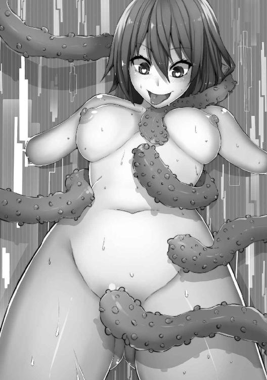
むしろ逆......淫魔が交尾をねだる姿にさえ見える。
「何してるのぉ？ 来てよぉっ......おま〇こでっ......絶対気持ちよくするからぁっ！ びゅーびゅーって射精してよぉ！ ほらっ！ 早くぅ！」
できたばかりの女性器から愛液を垂れ流し、言葉の通じない相手を挑発する。
「おらっ！ 早く犯せよっ！ ぼくのおま〇こっ！ 変態メス豚マ〇コっ！ その太いのでじゅぼじゅぼしてみろよぉっ！ しろっ！ してっ！ 犯してぇっ！ 早くっ！」
頭の中で性別が、意識が混濁している。
「お願いっ！ 早くぅ......がまんできないよぉっ！ ハメてっ......じゅぼじゅぼぉ......おま〇こセックスしようよぉっ......！ くそっ......いいから早くっ......犯してみろよっ......ぼくをイカせたいなら早くっ......いいからっ......早く胎の中突き回してブチ犯せよぉっ......！」
できたばかりの元気な女と、消えかけの男。そのどちらもが、激しく交尾をねだる。
だが触手は、一向に女性器を犯そうとしない。
待っているのだ。その瞬間を......。
彼女にはまだ男の人格が、ほんの少しだけ残っている。
それを消すための、最後の儀式。
「......ウッ......!?」
若苗は強烈な圧迫感に、瞬間的に正気を取り戻した。
「なっ......なんだっ......!?」
触手に犯されたときの吐き気とは違う、内側から押されるような圧迫感......。
「まさかっ......！」
若苗は、自分の腹に目をやった。そこは、ついさっき、この触手が種付けをした、子宮......。
「まっ、待ってっ......まだっ......」
まだ？
......ついさっき、あんな卑猥な言葉を連呼していたのに？
自分の心に問いかける。
「......えっ......えへへへへ......」
若苗から、変な笑みが漏れた。
「分かったよ、生むからぁ......」
その顔から、わずかに残されていた男らしさが消えていく。
「あなたの赤ちゃん生んで、女の子になってぇ、男のぼくはきえてあげるからぁ......そしたら、また孕ませてぇ......ぼく、お嫁さんになるの......えへへへ......」
思考能力を失った若苗は、にたーっ、と笑った。それから、ぎゅっと目をつぶって、奥歯を噛み締めた。
「出るぅ......おま〇こから......赤ちゃん出るぅ......イク......見てぇっ......！」
荒い息遣いの中、若苗の性器はゆっくりと大きく口を開ける......。
「若苗のっ......出産アクメぇっ......!!」
みんなっ......！
......ぼく、頑張ったよね？
いっぱい、頑張ったよね？
今までも、エクリプスを倒すために、みんなと協力してさ。
作戦を考えたり、下らないことでケンカしたり......。
大変なことも沢山あったけど、毎日が楽しくて、面白くて......。
でも......もう......。
......イイよね......？
「゛い゛いっ！ おぢんぼぎぼぢぃぃっ！！！」
自分のものなのか、それとも、もう自分ではなくなってしまった『何か』の声なのか。すでに存在しないペニスが、激しく脈動する感覚があった。
ぶじゅるるるるっ......!!
汚い水音とともに、彼女の中から、次々と小さな触手が飛び出してくる。その一つ一つが、若苗の男だった頃の『自我』そのもの。彼の自我は、その出産ともに、無残に飛び散った。
「えへ、えへへ、えへへへっ」
触手は、床でのたうち回っている。それは、『ヒーローだったもの』。
若苗の中にはもう、男も、ホーリーファイブも残っていない。
「はぁっ......んへへ......わぁ......元気な赤ちゃん......」
若苗は、いとおしそうな目でそれらを見つめていた。
「でも、もういいや。ねー、旦那さまぁ......若苗にまた種付けしてよぉ......」
開ききった陰部を見せつけるように、腰をくねらせる。
今はただ母親として、妻として、何より一匹のメスとして、ただ絶頂したい。
「お願いしますぅ......おちんぽ恵んでくださいっ......若苗にいっぱいっ......ザーメンアクメくださいっ......！」
愛液と、触手を育んでいた彼女の体液がまじりあって、陰部はぐちゃぐちゃ。そこを、まるでいたわるかのように、触手が撫で上げた。
「んぃぃぃっ......そこっ......そこですぅっ......！」
悲鳴にも似た懇願に、ようやく、触手が入り込んでいく......。
「んあぁぁぁぁぁっ!!」
ただ挿入されただけで、この咆哮......もう若苗が、我慢することはない。
「うれしいぃっ！ ちんぽっ！ ちんぽありがとうございますっ！ いっ......あっ!!」
ごじゅごじゅと、子宮の奥まで激しく犯されて、彼女の腹が波打つ。
「あっ！ ゛いっ！ ん゛おぉあぁっ!!」
白目をむき、泡を吹きながら、彼女は貪られる。だが、それは幸せに違いなかった。
「イグぅっ！ おま〇こ犯されでっ！ クリち〇ぽっ......役立たずの女の子ちんぽイッちゃうぅぅっ!!」
蜜を求めて、彼女の生んだ触手たちが、身体に吸い付いてくる。
「んぁぁぁぁぁああぁああぁあぁぁ！！！！！」
首筋に、乳房に、わき腹に......そして、今にも絶頂しそうな、クリトリスに。
「゛あっ！ だめぇっ！ 吸わないでぇぇっ!! ゛もっ......゛あ゛あ゛あ！！！」
鈍い声に、暗い視界。
絶頂する。
オナニーでしかしたことのなかった、射精。一度も女の子の中に入ったことのないペニス。
......そんなもの、どうでもいい。だって......こんな気持ちいいメスアクメを知っちゃったら......。
そんなこと、どうだっていいんだ。
「イクぅ......！ 潮吹いちゃうぅ！ おま〇こ犯されながらっ......ダメっ......イクっ......゛あ゛あ゛あ゛あ゛あ゛あ......」
びゅーっ、と、透明な液体が宙に迸った。
......触手に比べて、なんて弱々しくて、情けない『迸り』。
ぼくは最初から、男として失格だったんだ。そんなことより......女の子にしてもらったことを感謝しなくちゃ。
「だんなさまぁ......」
若苗は、息を切らしながら、高鳴る鼓動に合わせて、口を開いた。
「......ボクを......若苗を......本物の女の子にしてくれて、ありがとうございますぅ」
「そこまでだ、メス豚」
若苗が『旦那様』とまで慕った触手は、彼女の視界から瞬時に消えた。そこに殺風景な研究室が現れる。
「あっ......ぅぁっ......」
手足を縛られたまま、股間をどろどろに濡らした若苗。
「ひとまずは成功だな」
俺は若苗の顔を覗き込む。
「どうだ、メスになった気分は」
「ちんぽ......触手ちんぽ欲しい......」
若苗は宙を見つめたまま、口から涎を垂れ流している。
「だから嫌なんですよ、人間っていうのは。すぐ壊れる」
フレアは、うんざりしたようにつぶやいて、それから俺の服の裾を掴んだ。
「その点、私みたいな『能力者』は、何百回犯しても大丈夫ですよ。頑丈さが違いますから」
「......フレア」
俺は彼女を見つめ、そして抱きしめた。こうしていると、若苗の愛液の匂いよりも、シャンプーのいい匂いが強くする。
「っ......あっ......悪為様っ......！」
「お前のことは、もちろん愛しているさ。だが、今はちょっとこらえろ」
「はいっ......すみません......」
フレアは、俺の腰に腕を回す。
「でも、少し......少しだけ、こうしていても......いいですか......」
「少しだけだぞ」
本当は、「少しと言わず」と思ったが、少し離れたところからじっと俺を見る目がもう一つある。
「悪為様」
「......エリヤにも、後でしてあげるから」
「今は、私の悪為様」
フレアはエリヤに顔を向け、べーっ、と舌を出す。エリヤの顔が、少しだけ曇ったような気がした。
「で、だ」
俺は、ぴくぴくと痙攣する若苗を見た。
「......確かにこれじゃあ、廃人だな」
「ちんぽ......おま〇こに......入れて......びゅるびゅるしてぇ......はめはめしよぉ......」
遠くを見て、ぼそぼそと口を動かしている。......まだ『彼女』には、触手の旦那様が見えているのかもしれない。
「フレア......この状態で洗脳装置を動かしたら、お前のように『ちょうどいいバランス』にできると思うか？」
「前例はありませんが」
「お前の好きな、実験だぞ」
「楽しみですね」
フレアの目が、にたぁっ、と笑った。......コイツ、ホントにちょっとおかしいよな。まあ、俺が言えたことじゃないけど。
「それじゃ、いっちょ頼むわ」
「お任せくださいっ！」
彼女が、レバーに手をかける。
「危ないですから、ちょっと離れててくださいね......！」
ガチャンっ！
「ああっ、あああっ、ああああああああああああああああ！！！」
若苗の身体が、電撃に合わせて、大きく揺れる。
「もういいぞ」
「えーっ！ もっと流しましょうよ！ ドラゴングリーンの滑稽な姿、もっと見たいじゃないですか！」
「私も、それに賛成」
フレアもエリヤも、俺と出会ったときに比べて残虐性が増してないか？ こういうのも、使役者に似るのだろうか。
「充分だ」
俺は彼女たちの不満そうな声をかき消すように、大きくそう言った。
フレアがしぶしぶレバーを戻すと、白い閃光が消え、その中に、目をつぶったままぐったりとしている安竜若苗の姿があった。流石に精神ダメージを与えすぎたらしい。気絶している。
「エリヤ」
「はい」
「ドラゴングリーンが目を覚ましたら、声をかけてくれ」
「かしこまりました」
エリヤはゆっくりと、小さく礼をした。
「悪為様っ！」
フレアが、俺の顔を覗き込む。
「......なに？」
「夜伽の準備を」
「はぁ」
俺は、深々とため息をついた。
「フレア」
「はいっ！」
「まず、どこでそんな言葉を覚えたんだ？」
「天才科学者ですから」
「自分で言うな。それと」
「はいっ！」
......このウキウキした顔。フレアは、俺とセックスできると思って、疑っていないのか......。
「今日は、ナシだぞ」
「......？」
彼女はきょとんとして、首をかしげた。
「......悪為様、今までアリでしたこと、ないじゃないですか」
「......え？」
「だからぁ」
フレアが、俺の腕に抱き着いて、小さな胸を押し付ける。
「悪為様、ナマでしてくれるじゃないですか、いっつも」
「......あー......」
「悪為様の体温が直に感じられて、すっごく嬉しいんですよ......だから、これからもナシで......」
「フレア」
もう一度彼女の名前を呼ぶ。
「はいっ！」
「ゴムの有り、無しじゃない」
「へ？」
「セックスはお預けだ」
「ぅ......そっ......そんなぁ......」
フレアが太ももの間に、俺の腕を挟む。
「頑張ったご褒美ぃ......」
「もちろん、褒美は取らせる......だが、何度も言うぞ。今日は待て」
ちらりと、エリヤを見た。......エリヤは命令を正確にこなすため、若苗をじっと見張っている。
「ほら、エリヤを見てみろ」
俺の言葉に、フレアは首をねじって、後ろを見た。
「エリヤのほうが、ご褒美セックスに一歩近いかもな」
「っ......！」
彼女は、びしりと音がするほどの速度で俺から離れた。
「失礼しましたっ」
涙目になっている。......ホント、からかいがいのあるやつだ。
「ほら、キスしてやるから、今日はこれで我慢しろ」
俺はそう言って、彼女の額にキスをした。フレアの体躯は、小さく震えていた。
研究室の中に設えた小部屋に、エリヤの声が飛び込んできたのは、それから間もなくのことだった。
「悪為様」
ゆっくりと歩み寄った彼女は、また小さく俺に頭を下げて、「グリーンが起きました」とだけ言った。
「そうか、ご苦労」
俺は、エリヤを優しく抱きしめて、「助かったよ」とささやいた。
「どう、いたしまして」
声がくぐもって、小さく聞こえる。エリヤなりに、照れているのかもしれない。
「おはよう、安竜若苗」
彼女は、とろんとした目で、俺を見た。
「成功、だな」
「そのようですね」
フレアは、さっきの一言が聞いているのか、少しよそよそしい。それはそれで寂しいが......今は、ドラゴングリーンをうまく使うのが先決。
俺は改めて、若苗のほうを向いた。
「俺が、お前のご主人様だ。分かるな」
「......ご主人様......」
「鬼丸悪為だ」
「イィーっ......、ぼくは、せんとういんの......」
「いや、お前は戦闘員じゃない。お前は怪人、俺の部下だ。分かるか」
「イィーッ......！」
どろりとした笑顔だ。エリヤと顔を見合わせる。
「駄目だな。戦闘員になっちまった」
肩を落とす。
......と、次の瞬間。フレアが若苗の股間にヒールを当て、俗に言う『電気あんま』のポーズを取った。そのまま真顔で、足をグイグイと押し付ける。
「イィんにゃぁああああっっ」
若苗が奇妙な嬌声を出すのと同時に、フレアがもう一度洗脳装置のレバーを引く。一瞬だけバリバリという音がして、レバーが戻された。
「『二度掛け』か。さて？」
「悪為......悪為様......ご主人......さま......ぼくは......あなたのシモベ......」
「お、まともなことを言うようになった」
笑いながらフレアの頭を撫でてやると、彼女は嬉しそうに、「んふふ」と笑った。
「で、若苗。お前の性別は？」
「ぼくは、えっちな女の子です」
「そうだ、若苗は女......」
『えっちな』という情報をわざわざ付け加える必要があったのかは疑問だが、それを主張したいということなのだろう。何せ、快楽調教で一度脳のリミッターは完全に壊れている。
......なんだって、やってくれるに違いない。
俺は彼女の身体を改めて見回した。男にあるべきものがなくなり、代わりに、少しだけ乳首がぷっくりと膨らんでいる。
「若苗、きみにしかできない仕事をお願いしたい」
俺は、テーブルの上に置いていた服を、彼女に手渡した。
「ぼくにしか、できないこと......」
「そうだ。やってくれるな？」
「もちろんです！ だってぼくは......悪為様のモノだから......」
「ふふっ......はははっ......」
腹の底から、笑いがこみ上げてくる。
「そうっ......お前はっ、俺の......はははははっ......!!」
そう、それでいい！ 俺の手渡したワンピースを、キラキラした目で見ている若苗。「かわいいー」とはしゃいでいる、その無垢な身体......ドラゴングリーンとしての価値を、最大限利用させてもらうぞ！
ホーリーファイブの基地は、今まさに修理の最終段階にあった。特に爆発の中心となった指令室は、まだ天井が抜けたまま、青空が広がっている。
「ふぅ......」
命は額にうっすらとかいた汗を拭って、天を仰いだ。
「......若苗、大丈夫かな」
「大丈夫だって」
ましろが、彼の背中をじっと見つめながら言った。
「本来なら、今すぐにでも助けに行かなくちゃいけない、っていうのに......！」
ガンッ、と、命の拳が、直されたばかりの柱を殴りつける。
「仕方ないでしょ」
うららが、麦茶をみんなに手渡していく。
「いくらなんでも、この状況で敵の本拠地に乗り込むのは危険すぎる」
「でもっ......若苗が心配じゃないのか!?」
「心配だけど、それとこれとは話が別」
一際背の低いうららの視線は、残されたヒーロー四人の中でも一番大人びていた。
「若苗を安全に助けだす手段を考えなきゃ......それに、あの男も」
「あの男？」
レモンが、鉄骨資材をどさりと床に落とした。ガァァンッ、と激しい音とともに、土埃が舞う。ましろは軽く咳き込みながら、「ほら、あの」と続ける。
「んー......？」
「この基地を破壊したときにいた男。工場にもいた......」
「......あー！ ......あいつか......」
レモンの表情は一瞬思いだしたことによって明るくなったが、すぐに、真剣なものになる。
「確かに、あいつは怪人じゃなかった......そうだよな、カレン？」
命が機械少女に問いかけると、カレンは「その通りです」と返した。
「各地の組織に登録されている怪人は、すべて政府が把握できているはずです。彼は、アンノウン......データが見つからないのです」
「......政府が知らないだけで、データベースに登録されていない怪人ってのがいる可能性は？」
「考えられません......こちらの本部に乗り込んでくるような大物を、Ｐ．Ｅ．Ａ．Ｃ．Ｅ．が見逃すなんて......」
カレンの言う『Ｐ．Ｅ．Ａ．Ｃ．Ｅ．』とは、政府の下部組織である。対怪人戦を日夜繰り広げるヒーローたちのために、基地を用意したり、新しい武器を用意したりする。彼らが情報源としているカレンも、何を隠そう、Ｐ．Ｅ．Ａ．Ｃ．Ｅ．から派遣されてきた管理官なのである。
「とはいえ、分からないぜ？」
命が、カレンに詰め寄った。
「Ｐ．Ｅ．Ａ．Ｃ．Ｅ．は、怪人組織と裏で繋がってる、って噂もあるじゃねえか」
「ちょっと、やめなよ命......」
「そうだぞ、大人げない真似はよせ」
ましろが、命の肩を掴む。うららもそれに合わせて、ため息をついた。
「確かに基地を破壊され、若苗は拉致された。だが、それをカレンに当たっても仕方ない」
命は、何かを言いたそうにして、それから悔しそうな表情を一度浮かべると、また鉄骨を強く叩いた。
「ま、さっさと修理しちゃおーよ！」
レモンは、ツインテールなのか犬耳なのか分からないものを、ぱたぱたとはためかせた。
「こんにちはー、郵便でーす」
黒い服に身を包んだ男が、基地に封筒を届けに来たのは、その直後であった。
「あ、どうも、お疲れ様です」
ましろは柔らかくお辞儀をして、その封筒を受け取る。
「誰から？」
「......差出人が書いてない」
「書いてない？ そんな変な封筒、あるもんか」
命が、ましろの手から、それを奪い取った。
「......ホントだ」
「嘘ついてどうするのよ」
ましろが、またそれを奪い返す。不安そうな五つの影が、封筒を覗き込んだ。
「......中、開ける？」
「うん」
ましろは、ゆっくりとそのノリ部分をはがしていく。ガサガサと音がして、中から出てきたのは、薄型のＩＣレコーダーらしき再生装置と、一枚の地図、それに写真だった。
「......再生するよ」
『やあ、ホーリーファイブの皆さん、お疲れ様。
今日も元気に街の平和、守ってる？
あ、今はホーリーフォーか......ま、どうでもいい。
まずは、用件を言う前に、目の前に機械のメンバーがいるだろ？
そいつの電源を落とせ』
言い終わった瞬間、自動的に再生が終わった。どうやらそういう風にプログラムされているらしい。
「......カレン」
命が彼女を見る。
「......分かりました......ひとまず、外部からの情報を一時的にシャットダウンします。十分で復旧するように設定いたしますので、それまでに読み終わってくださいね」
カレンの姿が消えた。ましろは再び再生ボタンを押す。
『どうかな、対応してくれた？
ま、してくれないなら、このレコーダーが爆発したはずなんだけどね。
今、君らの基地ってさ、すっごく風通しがいいでしょ？
いやあ、ホントうちの幹部がごめんねぇー。
......で、どうかな？ 風通し、もっとよくなった？』
「こいつっ......！」
『あ、爆発してたらレコーダーも壊れてるか。アハハハハ』
怒りに打ち震える命を煽るように、悪為の声が連なっていく。
『さて、同封した写真を見てほしい。
見覚えあるよね？
みんなのお友達、ドラゴングリーンだ。
可愛い顔してるよねー、これでヒーローだっていうんだから、笑っちゃう』
写真には、柱にぎっちりと縄で縛られた、安竜若苗の姿がある。
「くっ......」
命が、歯を軋ませる。
『今回グリーンを誘拐した目的はさ、実は......お金なんだよね。
君らは、国からお金をもらって豪華な武器を作ってるみたいだけど、こっちは資金が足りなくて。
大体、君らが散々やっつけてくれた怪人、あれだけでもとんでもない赤字でさ。
そういうモノの弁償、ってわけじゃないけど。お金が欲しいわけよ、こっちは。
......というわけで、ドラゴングリーンを返してほしければ、二十億だ。
安いもんだろ？ これでお友達の命が救えるんだ。
ついでに、ホーリーフォーからホーリーファイブに戻れるぞ。
金を渡しに来るのは、フェニックスレッド一人。
場所は、郊外の廃工場だ。××市の南、県境にあるやつな。
ほかのやつらは、絶対来るな。
もちろん、警察や政府に連絡も禁止する。
もしこれらが守られなかったら......そうだな、グリーンちゃんがその基地みたいになるかもな？
......ただ、二十億がすぐに用意できないって、そういうこともあるだろう。
あらかじめこっちで、街中で襲いやすそうな銀行に目星をつけてやった。
管理が手薄で、銀行強盗にぴったりだ......どうかな？』
「バカなっ......そんなことできるわけないだろ！」
『まあ、そうは言っても、正義の味方の君たちに、そんなことはできないだろうね......。
俺たちも、二十億がないっていうなら、それはそれで仕方ないと思うよ。
だって、大金でしょ？
......だからさ、そのときは正々堂々、『決闘』ってことでどうかな？
悪くないだろ？ お仲間を賭けた、レッドと俺の一対一の決闘。
場所はさっきの廃工場で。
だけど負けたら、君にはそれ相応の仕打ちが待っていると思っ──』
そこで命が、レコーダーを奪って地面に投げつけた。
「命......！」
ましろが心配そうに彼を見る。
「これは、罠だよ！ 絶対のっちゃダメっ......」
「そうだよ、命」
レモンは、命の腕を掴む。そう、流石の彼らも分かっていた。悪為が、『とてつもなく面倒なタイプの強敵』であることを。
「こんなの、絶対危ないって」
うららまで、彼の気持ちをなだめにかかる。
「その通りだ......若苗を救いたい気持ちは分かるが、ここは......」
「うるせぇっ！」
「「「 !! 」」」
全員の声を、命の大声は凌駕した。
「......俺は、みんながなんと言おうと、若苗を助けに行く......ホーリーファイブの仲間として......そして、一人の親友として！」
彼は駆け出した。風が彼を斬り付ける。速く、早く、命は駆け抜けていく。
「命ぉぉぉぉっ......!!」
遠くから、彼の名を呼ぶ声が聞こえた。だが、今の命を止められるものは、誰もいない。
『あ、そうだ』
......命の姿がはるか遠くに消えた頃、地面に転がったレコーダーが、再び再生を開始した。ヒーロー三人とカレンが、その音にびくりと反応し、注目する。
『もう、フェニックスレッドは行っちゃったかもしれないけどさ。ホーリー〝スリー〟のみんな。ここまで聞いたら、爆──
──基地の風穴が、さらに大きくなった。
息が切れる。若苗。大切な友人であり、仲間。そいつが今、命の危機にある。
悪為という名の敵の幹部は、これまでオレたちが戦ってきたどんな敵よりも強い。......いや、そう表現するのが適切なのかは、正直分からない。あの男は、強いわけではない......きっと、暴力的な解決をすれば、オレたちホーリファイブが勝つだろう。だが、そういう肉体的な強さではない。出し抜いて、こちらの弱いところを徹底的に責めてくるような、陰湿な男だ。やり口が気に食わない。......若苗を人質にしたことも。
錆び付いた金属の扉を叩くと、『バァァンッ！』と大きな反響音があった。
「おい！ ここを開けろーッ！ 俺だッ！ フェニックスレッドだーっ！」
叫ぶと、中からくぐもった声が聞こえる。
「お前一人か？」
「ああッ！ 貴様らの要求通り、オレが一人で来てやったぞォッ!!」
「金は」
「そんなものはないッ！ 決闘だッ！ お前を倒して......若苗を助けだすッ!!」
「ふん」
ガーッと鈍い音に合わせて、ドアがゆっくりと開く。
薄暗い室内から湿り気を伴った熱気があふれ出して、オレの頬を撫でた。
「若苗ーッ！ どこだぁーッ！」
命の叫び声が工場内に反響する。
「くそッ......だだっ広いだけで誰の姿もない!?」
「待っていたぞ、フェニックスレッド」
「......その声はっ......!!」
がばっ、と振り返る。
「ぐっ......!!」
この目に飛び込んできた敵の姿は、鬼丸悪為。ホーリーファイブが倒せない唯一の敵である、『人間』。
「お前は人間なのに、なぜ悪の組織にいる！ 洗脳されているのか!?」
「いやいや？」
悪為は不敵に微笑み、ゆっくりと前へ進み出る。
「どうだろ、洗脳されているのかもしれないし、そうじゃないのかも」
彼の微笑みが不気味に映る。
相手が人間なら、殺すような真似はできない。だがフェニックスレッドへと変身してしまえば、『気絶させる』程度の傷で済ませられる自信はない。
「ま、そう怖い顔しないでよ」
悪為のへらへらとしたニヤつき顔が、このオレの怒りを増幅させる。
「一対一で戦ってほしい相手は、俺じゃないんだよね、実は」
「なッ......！」
悪為が背を向ける。
「逃げるのかッ！」
「逃げる？ 馬鹿が」
その表情は、勝ちを確信しているようにさえ見える。なんて恐ろしくて冷たい顔......仮に洗脳されていたとしても、これが人間のする表情なのか!?
「俺は壁際でじっくり観察させてもらうだけだ」
悪為はコンクリートの壁に背で持たれかかる。
「それよりも後ろを見ろ。そいつがお前の相手だ」
「......っ......」
その言葉に振り返る......そこには。
「久しぶり」
「若苗？」
オレのよく知った顔......幼馴染の安竜若苗がいた。
「若苗......捕まってたんじゃ......」
「いいじゃん、そんなことはさ」
「ぐっ......くっ、来るなっ！」
オレ──桜火命は、じりじりと後退する。
「幻覚......。そうだ、これは幻覚に違いないっ！」
「ちがうよー、失礼しちゃうなあ」
確かに、若苗の笑顔だ。こんなリアルな幻覚はありえない。いや、でも、そんなはずはないっ！ だって......！
「若苗、その服はどうしたんだ!?」
「これ？ 似合うでしょー？」
「そっ、そうじゃなくてっ!!」
俺は思わず、その場にへたりと腰を下ろした。
「んふふ......可愛い？」
なんで......。
「なんで、ワンピースなんか着ているんだ......！」
若苗が身に纏っているのは、白くてふわふわとした、ワンピースだ。いつだったか、ましろが着ていたものによく似ている。男のお前が、なんでそんなものを着て、満足げに笑っているんだ！
「んー？」
若苗が、オレの上にまたがった。
「なっ！」
オレは反射的に、若苗を突き飛ばした。
「きゃっ！」
「おい、フェニックスレッド」
壁際で、あの男がぼつりとつぶやいた。
「お前は動くな。もし動いたら......ドラゴングリーン、見せてやれ」
「はぁい」
若苗は、とろんとした声で、首元を見せた。
「おい若苗、それって」
「えへへー。首輪だよ」
「それは分かってる！」
「この首輪はねぇ？ あの人が持ってるスイッチで」
若苗の目が、笑っている。
「どぉぉんっ、ってなっちゃうの」
「っ......！」
「フハハハハ！ そういうことだ」
「クソっ、汚いぞ貴様ァッ!!」
「何とでも言え」
男は、冷たく言い放った。
「お前が少しでも動けば、目の前でドラゴングリーンの命はなくなる。それだけだ」
「ぐぅっ！」
オレは、若苗を睨みつけた。
「命ぉ、ボクのこと殺さないで？」
「あっ、当たり前だろっ!!」
親友のお前のことを、見殺しになんてできるわけがない！ だが、どうしたらいい？
監視され、身動きを禁止された状態で、あの男に気付かれずに若苗の首輪を取る方法......！ 考えろ......ない頭でいい......今、この瞬間だけ閃いてくれれば!!
「命、怖い顔してるよ？」
「若苗、お前、この男に操られてるんだな？」
「んー、そうかも」
えへへ、と笑いながら、若苗は首をかしげた。やめろ......そんな目でオレを見るな！ 今、自分が置かれている状況が分かっているのか!?
「ボク、ずっとね、黙っていたことがあったんだぁ」
「なんだ？」
「えへへへ。じゃーん」
若苗は、ワンピースの裾をぶわりと広げた。
「なっ......えっ!?」
若苗は、パンツを穿いていなかった。そして、そこには......当然あるはずの『モノ』が、なかった。
「......若苗......？」
「見えたー？」
「見っ、見えたっていうかっ!? い、いや、見えなかったぞっ!?」
「もー、鈍いなあ。命はぁ」
若苗が、再びオレの上にまたがる。
「ねー、分かんない？ ボク、おちんちんないの」
「っ!? お前何をっ!!」
「ボクね」
親友の声が、耳元でささやく。
「女の子だったんだぁ」
「!?」
オレは、彼の......いや、彼女の言葉に耳を疑った。
「バカなっ！ だってこれまで女の子みたいだって言ったら、あんなに嫌がっていたのにっ......！」
「だってぇ......」
シャツの上に、じっとりと濡れた何かを感じる。
「命は、ましろのこと好きでしょ？ ボクじゃ勝ち目ないなって思ったら悔しくてさあ」
「ばっ、そっ、そんなことっ！」
「ボク、ずっと命とこうしたかったんだぁ......でも、勇気がなくて」
若苗の親指の腹が、オレの唇を撫でた。
「でも、あのお兄さんが、このワンピースをくれたの。これで、命に告白しろって」
「若苗っ！ お前は洗脳されてるだけなんだっ！ いいから早くどけっ......二人であの男を倒す方法を考えるんだっ......！」
「もう、うるさいなぁ......」
彼女は立ち上がり、いきなり、オレの顔面に腰を下ろした。
「んごぁぉぁぁ!!」
「せっかくボクが勇気を出して告白したのに......全然聞いてくれないし」
若苗のおま〇こがドロドロに濡れて、オレの口元を汚している。
そんな......若苗が女？ オレは、やっぱりおかしくなってしまったんじゃないか。そうじゃなければ、夢か幻覚か。
それにしてはあまりに温かい、若苗の柔らかい内ももの感触。
「んーっ!!」
眉間にしわが寄る。
「どう？ ボクのおま〇この味。命のことを思ったら、こんなになっちゃって」
「んー！ んんんー！！！」
「おい、やめろ」と言ったはずだったが、声にならない。
遠くから、あの男の声が聞こえる。
「ククク......情けない姿だな。幼馴染に顔面騎乗されて、勃起か」
「んー!?」
そんな馬鹿な！ オレは、そんなっ、そんなことで勃ったりなんてっ！
......いや、認めるしかないだろう。確かにさっきから、股間がじんじんと熱い。これは間違いなく若苗にこうされているせいだ。
「命、ボクに興奮してくれてるの？ 嬉しい」
甘く耳元で溶けるような声。
......やめてくれ若苗......！ オレはお前のそんな声を聞きたくなんてないっ！
「『動いたらグリーンは殺す』と言ったが......仕方ない、勃起くらいは許してやろう......ククククク......」
くそっ、馬鹿にしやがって!! 確かに今のオレは、滑稽そのものだろう......やつがそうあざ笑うのも道理だ......だが、このまま笑いものになっているオレじゃないっ......！
必ず機を見て反撃する！ 若苗を助けて、あの男を正気に......普通の人間に戻してやるんだ！
「ねー、もういい？」
オレの顔から、若苗がようやく降りた。
「っはぁっ......若苗っ......お前!!」
若苗を睨みつけた。
「自分が何をやっているのか、分かっているのか！」
「えー？」
ぐっ......可愛い。
悔しいが、確かにそう思う。
こんな危機的状況じゃなければ、若苗が女であることを素直に笑って受け入れられたのかもしれない。
「お前は今、怪人に洗脳されているんだ！ 正気に戻れ！」
「戻れ、って言われても」
若苗は、悲しそうな表情でオレに迫ってくる。
「ボクが命のことを好きなのは、ホントだよ？ ずっと前から、ずっと、ずっと。ましろなんかより、ボクのほうが、命のこと」
若苗の唇が、オレに吸い付いた。
「んぐーっ!?」
思わず身体が動きそうになるが、全身に力を入れ、なんとかそれを回避する。
若苗、もうやめろ......やめてくれ！ オレにはましろという大事なひとが......！
「ちゅっ......んーっ......」
若苗の舌が、オレの口の中に割って入ってくる。オレの舌に絡みつき、吸い上げるようにしごかれる。
......なんだこの感覚は......。
......じゅるるぅぅ......はっ......じゅっ......じゅりゅっ......。
吐息と、二人の唾液の音が混ざって、耳が、頭が、どうにかなってしまいそうだ。
「んんっ!?」
突然、股間にひんやりとした感触を覚えた。
「んー！ んんー!!」
間違いない、若苗が、オレのチンポを握っている......。
じゅるっ......ぐぢゅっ......はぁぁっ......じゅぅぅぅっ......。
口を舌に犯されながら、手で！
「んー！ んんんんん......んぉぁー!!」
大きな声を上げて、ようやく若苗は、オレの口を解放する。
「っはっぁっ......どう？」
「どっ、どうじゃないっ!!」
怒っているつもりなのに、どうしても、声が上ずってしまう。
「やめっ......やめろっ......!!」
「ましろは、こんなことしてくれないでしょ？」
「当たり前だっ......こんなっ......あっ......ふしだらなことっ......!!」
「怖い顔ー......おちんちんは、こんなに先走りでぐちょぐちょになってるのに......」
「っ......」
そんな言葉、口にしないでくれ！ 若苗......頼むから！ 元に戻ってくれっ......!!
「......ねえ、命」
「なんだ......」
「セックスって、したことある？」
「!!」
まさかっ！
「若苗、やめろっ......！」
小さな身体がオレの上に乗る。
チンポの先が、彼女の生暖かい割れ目にくっついている。
「ましろって、奥手そうだもんねー、えへへへ......」
彼女がゆっくりと腰を下ろす。
「おい、バカっ、やめろっ......若苗っ......だめだっ......やめっ......んああああああっ......！」
「んふふふ......全部入ったぁ......」
オレのものを一気に根元まで咥えこんだ若苗は、幸せそうな笑みを浮かべてオレを見下ろしている。
「命の童貞おちんちん、とってもおいしいよー......？ キュンキュンして......おま〇こ悦んでるの......」
「今からでも遅くないっ！ 若苗っ、もうやめるんだっ......！」
「えーっ......」
彼女が非難めいた声を上げる。
「こんなにビンビンに勃起してるのに、本当にやめていいの？」
指先が金玉の中央を走るスジをなぞり上げた。
「んぃぃぃっ......！」
「ほらー......ここにザーメンいっぱい溜まってるんだよ？ おちんちんは『射精したい』って言ってるみたいだけど......やめちゃう？」
若苗が、くいっと腰をひねる。
「んあぁぁ!!」
脳天を貫くような甘美な刺激が、オレの神経すべてを犯してくる......！
「その声が、答えってことで、いい？」
若苗の手がオレの胸にあてがわれる。
「動くよ？」
「やっ......やめっ......」
オレの祈りも、思いも、何も届かない。若苗はオレの上で、飛び跳ねるように動き始めた。
「はっ......んぅっ......あぁんっ......いいよぉっ......命のおちんちんっ......！」
「やっ......うっ......やめろぉっ......!!」
オレはきっと例の男を見た。
「おいっ、お前っ!! んぁっ......わっ、若苗をっ......やめさせろぉっ!!」
「やめさせる？ なんで」
彼の笑みが憎くてたまらない。
「グリーンはお前とそうやってセックスしたかったらしいんだ......親友の夢を叶えてやってるんだぞ？ もうちょっと楽しんでもいいんじゃないか？ ......まあ、お前はホワイトのことが好きみたいだからな......グリーンのような『ちっぱい』では興奮しないか？」
「ぐっ......!!」
「うぅ......ひどいよ命ぉ......」
そう言いながら、若苗は一向に腰を止める気配すら見せない。
「はっ......うっ......やめろっ......やめてくれぇっ......！」
「安心しろ、フェニックスレッド」
男の声がだんだんと近づいてくる。
「確かに、ドラゴングリーンは洗脳済みだ。それにこの状況、お前が抵抗できないのも無理はない」
「命ぉっ......命ぉぉっ......!!」
「見てみろ、このドラゴングリーンの姿を......発情期のメス犬みたいじゃないか」
「くそっ......言わせておけばぁぁっ！」
どれほど強がってみせても、男は喋るのをやめなかった。
それどころか、オレの限界が近いことを──今にも射精してしまいそうであるということを分かった上で、わざわざそう言っているのだ。
「射精しちまえよ。親友の子宮の中に、どっぷりと精液をさ」
「来てっ！ 命ぉっ！ 命のザーメンいっぱいちょうだいっ！」
「若苗っ、やめっ......やめろっ......!!」
脳裏に、ましろの顔が浮かんだ......。
......ましろ......すまない......でも......もう......!!
「ましろっ......イクっ......！！！」
下半身に焼けるような熱さを感じた。
「んぁぁぁっ......あーっ......!!」
身体が痙攣する。全身で射精している......ましろではなく、若苗に向かって。
「......むぅー」
だが、悲願が叶ったはずの若苗は、不満そうだ。
「なんで、ましろの名前を呼んだのさ」
そうむくれると、彼女はまだ射精し切っていないオレのチンポを再び膣肉でしごき始めた。
「んぁっ！ やめっ......やめてぇっ......!!」
「ましろのことなんて忘れてボクに夢中になってくれるまで、ザーメン搾り取ってやるっ！」
「若苗っ！ らめっ、ちょっ......んぁぁぁっ!!」
イったばかりのチンポは敏感なんだっ！ そんな無理やりっ！
「まだっ！ まだまだっ！ 命のザーメン、いっぱいぴゅっぴゅさせるからね！」
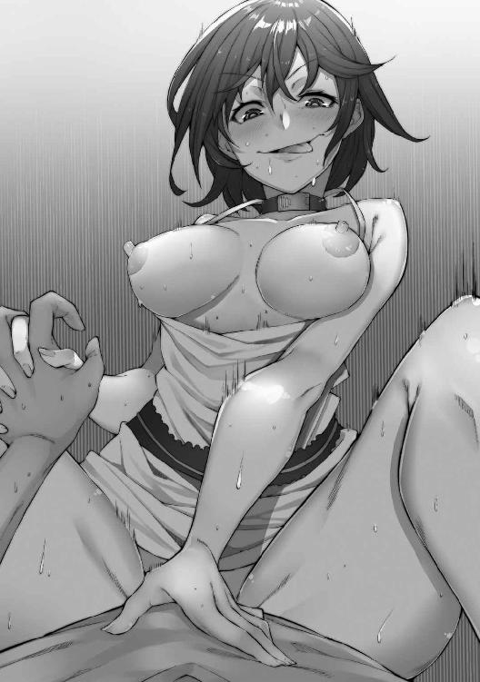
「若苗っ、やめっ、あひぃっ......!!」
オレは『動いてはいけない』というルールと、『これ以上射精できない』という肉体の限界の狭間で......意識がだんだん暗くなっていくのを感じた。
「命ぉ！ まだ十回もしてないよっ！ 最低でも千回は射精させてあげるからねっ！ 頑張ってザーメン作って！」
遠くで若苗の......男友達だった『女の子』の声が聞こえる。
「ただいまー」
先に基地に声を投げたのは、オレではなく若苗だった。
「おかえりー!!」
レモンが弾けんばかりの声を上げる。
「遅かったから心配してたんだよ！」
「悪い悪い」
オレは小さく頭を下げた。
「まったく、何してたんだ」
うららが若苗を小突いた。
「命が思ったより手こずってね」
「捕まってたやつが、なんて言い草だ」
オレは若苗の肩を軽く叩いた。
「それに、なんだその服は」
うららが若苗の全身を見て笑う。
「土埃がすごいぞ」
「いやあ、工場が汚くてさ」
若苗のジーンズには、ところどころ機械油のシミのようなものがついている。
シャツも同じように砂や泥がついて、袖のところが少しだけ破けている。
いつもの若苗の格好だが、やはり不潔感は拭えない。
「お疲れ様」
ましろが、オレと若苗に冷たい麦茶を渡す。
「次の戦いまで、どれくらいの時間があるかは分からないけれど、ゆっくり休んで回復してね」
「ありがとう」
二人ともうなずきながら、小さい水滴がびっしりとついたグラスに手を伸ばす。
「しかし、無事でよかった」
うららが安堵の笑顔を浮かべる。
「どんな相手だったんだ？」
「どんなって」
オレは首をかしげる。
「あれ」
「どうした？」
「......思い出せない」
「思い出せない？」
うららが怪訝な顔で聞き返す。
「ああ、思い出せない。廃工場に行って、あの『洗脳されている男』と対峙して、それから」
頭が、割れるように痛い。
「んー!? なんだこれ」
どういうことなんだ？
オレは確かに、あの工場跡に行った。そこであの男に会った。名前は......鬼丸悪為とかいったな。
その男と戦って？ いや、あいつはオレに背を向けていたはず。
それから。
それから？
それからどうしたんだっけ。
「......あ」
オレは、ふと後ろを振り返った。そこには、かつてここにいるヒーローたちが見たことのある女の子が立っていた。
「この子......！」
それは、スライム怪人ゲルムの犠牲になった『ゆりちゃん』。中身はゲルムになってしまっているが、皮をかぶっていれば人間と相違ない。
「ゲルムがたくさん現れて......」
若苗が言うと、「......やっぱり、一対一じゃなかったんだね」とレモンが返す。
「だけど、なんとか倒しきったんだ。そして、最後に残った『ゆりちゃん』を命が説得したんだ。そしたら、ゆりちゃんは改心してくれた。やつらの洗脳が解けたんだ」
そう言われると、確かにそうだった気がしてくる。
「で、仲間になってくれたと」
「みんな私のこと、心配してくれて......嬉しかったから。私の身体は怪人になっちゃったけど、そのおかげで心は人間に戻れたの」
顔を赤らめてそう言うゆりちゃんの姿は、本当にただの人間にしか見えない。
「大丈夫！ 心が人間なら、ゆりちゃんはもう怪人なんかじゃないよ。これからよろしく！」
レモンの言葉に、ゆりちゃんは嬉しそうに微笑んだ。
「......で、どうやって勝ったんだっけ？」
「疲れてるんだな、命」
若苗が助け舟を出す......確かに疲れてはいるが、こんなにすっぽり記憶が抜け落ちることなんて、あるのだろうか......。
「若苗は何も覚えていないのか？」
「後半は気を失っていたからね」
「そうか」
......でも、若苗は起きていたような気がする。
オレは首をかしげた。
それも、記憶違いか？
「おかしいなあ」
「まあ、そういうこともあるんじゃない？」
レモンがいつものように、にぱぁっと笑った。
「ほら、今はお茶飲んで少し休みなよ！ お疲れ様！」
「ああ、ありがとう......」
なんだか気乗りしないけれど、そうしたほうがいいような気がする。
「ところでカレンは？」
若苗が首をかしげた。
「カレンなら、今『例の男』の情報を政府に問い合わせているところだ。しかし......」
うららの表情が明るくなった。
「命が若苗と共に無事に帰ってきたということは、『あの男』の洗脳も解けたということだな」
「いや」
若苗が首を振る。
「命がボクを連れ出してくれるときに、ちらっと見えたんだ。あの男が逃げていくところを」
「つまり」
ましろが、深刻そうな表情を浮かべた。
「あの男の『洗脳』は、まだ」
「多分ね」
「カレンに今の情報も伝えたほうがいいかしら」
ましろが、オレと若苗の顔を交互に見る。
「いや、いいんじゃないか」
若苗は力なく首を振った。
「『あの男』が怪人じゃないらしいことは、Ｐ．Ｅ．Ａ．Ｃ．Ｅ．のデータからも分かっている。人間である以上、政府は何も知らないだろうし、知っていたところで対処できるとは思えない」
「それじゃあ」
「ボクたちの手で『あの男』を解放するしかない」
「そんなこと、できるのか」
うららの声色は冷たい。
「わたしたちが『あいつ』に手出しできないことを理解しているのなら、エクリプスだってあの男を前線に送りだしてくるはずだ」
「確かにその通りだ。だけど逆に言えば、ボクたちを狙ってくるときはエクリプスの基地にあの男はいない」
「奇襲か」
「悟られないようにする必要はあるけど、それが一番確実性のある一手かもしれない」
「わたしは反対だ」
うららが、ふぅ、と鼻で大きく息を吐いた。
「確かにあの男が人間である以上、倒す──殺すという選択肢は取れない。だが、政府に情報を提供して連携しながら動くべきじゃないのか」
「オレは若苗に賛成する。洗脳装置を破壊できれば、きっとあの男も元に戻る」
若苗と目が合った。
ましろとレモンは、何も言葉を発さずうつむいている。
「ひとまず、これはオレたちだけの共有事項にしてもいいんじゃないか。カレンや政府に伝えるのは、どのタイミングになっても遅いということはない」
「仕方ない」
うららはまた、小さくため息をついた。
「リーダーに従って、若苗の意見通りにしよう」
「ありがとう」
若苗が小さく頭を下げた。
「それじゃオレ、ちょっと少し寝てくる」
オレは背伸びをして立ち上がる。
「何かあったらいつでも起こしてくれ。ただ寝てるだけだから」
そう言ってその場にみんなを残し、オレは一人で部屋を後にした。
数日が経っても、あの日の記憶は戻らなかった。
『誰と戦ったのか』
『どうやって勝ったのか』
そんなことを考えようとすると、また割れるほどに頭が痛くなる。オレは痛みから逃げるために、その話は避けるようにしていた。それをみんなも何となく察してくれているのかもしれない。時間の経過とともに、あのときのことが話題に上ることは少なくなってきていた。
夕陽を背に河川敷を歩く。ましろはオレの歩いている堤防の上ではなく、川べりまで行っている。
「命ぉー!!」
「んー？」
手を振るましろに、少し大きめの声で、疑問を返す。
「こっち来て、見て！」
「何がー？」
「いいからー！」
「なんだよ」
オレは「可愛いやつ」と口の中でつぶやいて、土手をゆっくり、滑り落ちないように降りていく。
「どうしたの」
「ほら、カニ」
「......カニ？」
ましろの指さした先には、確かに小さなカニのようなものがいる。
「海に近いから、ここまで上がってきたのかな？」
「どうだろ。近いって言ったって、結構な距離あるぜ？」
「一キロくらいじゃん」
「人間の一キロとこのちっちゃなカニの一キロじゃ、ずいぶん違うぞ」
「もー」
ましろがオレの背中をばしんと叩いた。
「痛っ！ 何すんだよっ！」
「夢がないなぁ、命はっ！」
もう一度、彼女の手がオレの腰をぱしんと打つ。
「うっ、んー......」
男相手ならやり返してもいいが、ましろ相手じゃそんな気にはなれない。
「はーっ」
深くため息をついて川下に目をやった。
「ほら、行くぞ」
「うんっ」
ましろがオレの横にくっついて離れない。彼女は優しい声色で口を開いた。
「こうしてるとさ」
「うん」
横から差す橙の光が、目にまぶしい。
「怪人とかヒーローとか、どうでもよくなるよね」
「そうか？」
「......みんな、仲良くなれたらいいのに」
そういえば、ましろはそういうところがあった。平等な愛をみんなに注ぐような、大きな母性のある子だ。オレは、彼女のそんなところを気に入ったのかもしれない。
「だからこそ、やつらは倒さなくちゃいけない」
「彼らと、仲良く共存する方法はないのかな」
「......ない。正義は絶対に勝つ。勝たないといけないんだ」
オレは強くそう言い切った。
「何の罪もない一般市民を狙う卑劣な組織だぞ？ カレンの報告を聞いただろ？ 拉致された人の中には怪人にされてしまうものもいる。この前の、あの親子のように......」
ましろは、あの光景を思い出したのか、絶句して目を伏せた。
「ごめん、嫌なこと思い出させて」
「ううん」
彼女は小さく首を振る。
「そうだよね。みんなが仲良く暮らせる世界のために、なんとしてもエクリプスを倒さなくちゃ」
「......」
橋の下に差し掛かる。大きな日陰は少しひんやりとしていて、ここだけがオアシスのようになっていた。
「命」
ましろがオレの名を呼んだ。
「何？」
「明日も頑張れるおまじない、してあげるね」
「おまじない？」
「そう。エクリプスを倒すための、おまじない」
「効くのか、そんなもん」
「信じない人には効果がないんだよー」
ましろがむくれたので、オレは「はいはい」と言って彼女に身体を向けた。
「どうすればいい？」
「目をつぶって、ちょっとかがんで」
「こうか？」
オレは言われた通りの姿勢をとる。
「うん。そしたら、絶対目を開けないでね」
「ああ」
ちゅっ......。
「えっ？」
オレは唇の感触に驚いて、そう声を上げた。
「目、開けていいか？」
「いいよーっ！」
遠くから、ましろの声が聞こえる。
「また明日ねーっ！」
「あっ、おい！ ちょっと！ 今のって......！」
オレがそう聞こうとしたときには、もう彼女の姿はビルの間に吸い込まれてしまっていた。
指先で自分の唇を触ってみる。ほんのりと甘い、ミルクのような匂いが残っている。
今のってキスだよな......？
「うっ......!?」
突然、きしむように頭が痛み出した。
「なんでっ!?」
今はあの日のことなんて、少しも頭になかったのに......！
「ぐっ......!!」
オレは逃げるように、その場から走り去った。
緊急通報が入ったのは、ましろのおまじないの翌日だった。
「ましろの『おまじない』のおかげで、敵さんのほうから現れてくれたな」
「そんな言い方しなくてもいいじゃない」
ましろはムッとしたように答える。
「痴話喧嘩は後にして」
若苗が冷めた声を上げる。
「「痴話喧嘩じゃないっ！」」
オレとましろが同時にそう声を上げた。
「どっちでもいい。変身してさっさと行こう」
若苗は一足先に変身すると、基地から飛び出していった。
原野の真ん中に、縛られた少女と、女の姿が見える。
「遅かったな、ホーリーファイブ！」
ヒーローたちを前にそうつぶやいたのは......。
「お前は......ダンテイン!!」
「あたしの名前を知っているとは、なかなか見どころのあるやつらじゃないか」
「ダンテイン......エクリプスの幹部が直々におでましか！」
「いやいや。今日はお前たちに、ちょっとしたプレゼントを用意していてな」
オレの言葉をかわすようにダンテインは後ろへと飛びのいた。
「相手するのはあたしじゃない。だけど、こういう役目は一兵卒にはできないだろう？」
「何が言いたいっ！」
ドラゴングリーンが吠える。
「お前たちも知っていると思うが、あたしらの組織に最近入った『人間』がいてね」
「あいつのことか」
セイレーンブルーが顔をしかめた。
「あたしはあの男のことをさあ、お前たちの仲間なんじゃないかって思ってるわけ」
「そんなわけないでしょ！」
フェンリルイエローが叫ぶ。
「どうだか」
ダンテインは、なおも不敵な笑みを浮かべている。
「現に、お前らを全滅させるチャンスは何度かあった。だけど、結局むざむざ見逃して帰ってきたじゃないか。それに、ついこの間も、せっかく捕らえたドラゴングリーンを逃がした。なあ、グリーン」
「ぐっ！」
ドラゴングリーンが敵意をむき出しにする。
「それはボクらの絆の力が強かったからだ！ フェニックスレッドは必死に戦った！」
「ぐぁっ......！」と、思わず声が漏れた。
まただ。
だんだん、痛みが強くなっているような気がする。変身していても、これほどまでに感じられるなんて......！
ペガサスホワイトが、オレの肩を優しく抱いた。
「大丈夫、深呼吸して。ゆっくり吸って、ゆっくり吐いて」
「まあ、何があったのかを詳しくは『尋問』していないから、あたしは知ったこっちゃないがね」
ダンテインの口角がぐいっと引きあげられた。
「あたしはあの男を放ってはおかない。お前らを散々見逃してきた罪は重い」
こちらをギロリと睨みつける。
「──あの男は、あたしが殺す」
「なっ!?」
味方殺しだと!?
「ちょっと待て！ あいつは洗脳された人間......お前らのシモベじゃないのか!?」
「洗脳？ シモベ？ 何を言っている」
「そうだ！ お前らが洗脳して手先として使っているんじゃ......」
ふん、とダンテインが鼻で笑う。
「そんな風に見えるか？ ......あたしの態度を見ても？」
「じゃ、それじゃあ、あの男は」
「ああ。あれは元々ああいう人間だ」
ダンテインは「はーっ」と大きく息を吐いた。
「しかし、あいつはお前らのスパイでもないのか。ますます意味が分からない」
彼女は「やはり人間は滅ぼしたほうがいいな」、そうつぶやくと、後ろに数回飛び跳ねて森の中へと消えていった。
「まさか、そんな......」
ペガサスホワイトが、言葉を失っている。
「あんなひどいことを......どうして......普通の人が......」
「落ち着け、ホワイト」
セイレーンブルーの声が、一際冷静に感じられる。
「あの男のことは、ひとまず忘れよう。今は──」
彼女の視線を追う。その先に、ダンテインと入れ替わりで現れた、巨大な怪人が一体。
「人質を解放し、あいつを倒すことに専念するぞっ！」
「そうだねっ！」
フェンリルイエローも、自分を鼓舞するようにそう言った。
「さあみんなっ！ 行こうっ！」
オレの掛け声に「おうっ！」「ええ！」と、一同の声が重なった。
「ふーっ！」
敵は見事に粉砕された。コアのような部分には逃げられてしまったが、人質の少女は戦闘に入る前に、フェンリルイエローの手でキッチリと救い出されている。完全勝利と言って差し支えない結果だ。
やはり、きちんと五人揃って戦えればオレらは強い。あの男が異常なんだ。『普通の人間』であるはずの、あの男が。
「おぉーい!!」
遠くからレモンの声がして、オレは顔を上げた。
「みんなーっ！ 先に帰ってるよーっ!?」
見ると、すでに米粒ほどの大きさになったうららとレモンが、手を振っているのが分かった。
「ああ！」
オレは力強く手を振り返すと、キャッキャとレモンが飛び跳ねる。うららはそれを捕まえて、引きずるようにして基地へと帰っていった。
「わたしたちも帰ろう」
ましろの声に、オレは「そうだな」と答える。
「お疲れーっ！」
変身を解いた若苗がオレに後ろから抱き着いてきた。
「はっ、ちょ！ なっ、何してんの？」
オレは慌てて若苗の顔を見た。
「ねぇー。ボク頑張ったでしょー？」
「あ、ああ。そうだな」
「でしょー？ ほら、ご褒美のちゅーしてよぉ！」
「はっ......はぁっ!?」
明らかに、若苗の態度がおかしい。つい困惑の声を上げたのは、オレだけではなかった。
「若苗？」
ましろが少し遠くから、オレと若苗のことを見ている。
「何言ってるの？」
「何って、おねだりしてるだけなんだけど」
若苗が明らかにましろに敵意を向けている。
「いいじゃん。『頑張ったご褒美ちょうだい』って言ってるだけだよ？」
「そ、そんなのおかしいよ......？」
ましろは頭を振る。
「その、男同士でなんて......」
「えっ？」
若苗は首をかしげる。
「違うよ」
「え？」
オレの耳元でつぶやかれた真実に、思わずそう声が出た。
「ボク、女だよ」
ましろが、ゆっくりと近づいてくる。
「だから別に変じゃないでしょ？ 女の子が好きな男の子に、ご褒美のちゅーのおねだりだよ」
「そうじゃ、なくて......その、え？」
若苗が女だという事実そのものだって、初めて知ったことだ。ましろだってきっとそうに違いない。
彼女もオレと同じように、何かを言いたいようだった。だが言葉が出てこないのか、ただ口をもごもごとさせている。
「ねー、ちゅーしてよぉ。それとも、もっとイイコト、してくれるの？」
「なっ!!」
若苗が、オレの膝に股間を押し付けてくる。
「この前してくれたみたいにさあ。ボクのこと気持ちよくしてちょうだぁい」
「......命？」
「ちょっ、ちょっと待て若苗！」
オレは、びったりとくっついていた若苗を、無理やり引きはがす。
「何のことだ！」
「えーっ、あんなに激しくしてくれたのに......忘れちゃったの？」
「激しく？」
ましろの顔がうっすら赤みを帯びてくる。
「そっ、そんなことしてないっ！ 人違いじゃないのか!!」
「妊娠しちゃうくらい中出ししてくれたじゃん。だからこそ、ボクも女の子として生きていく決心ができたのに......命、ひどいよ」
「......！」
「しっ、してないっ！ っていうか、お前が女だなんてそんなっ！」
「命」
ましろの声が、震えている。
「どういうこと？」
「しっ、知らねぇよっ！ オレにもどういうことかさっぱりっ......！」
「......ふーん」
クソっ、どういうことだっ!?
「まあいいわ。若苗にご褒美あげたら？ 確かにドラゴングリーンのおかげで怪人もちゃんと倒すことができたし」
ましろはそれだけ言ってオレたちに背を向けた。
「あっ、ちょっと待てましろっ......！」
手を伸ばしたが、再び絡みついてきた若苗のせいで身動きが取れない。
「ましろぉぉっ!!」
その叫びにも彼女は振り返らなかった。
「おい若苗！」
「なあに？ セックスしてくれる気になった？」
「バカ、違う！」
オレはもう一度、力ずくで若苗を引きはがした。
「聞きたいことは山ほどあるが......まず一つ確認だ。お前、女なのか？」
「そうだよ。忘れちゃったの？」
若苗がオレの手を取って股間を触らせる。
「なっ!?」
「ほら、ないでしょ？ えっとね、いつもは股間パッドで隠してたんだけど、今日は外してきちゃった」
「ひ、ひとまずそれは後回しだ。次」
若苗の目を見つめる。
「いつ、オレと若苗が......その......したっていうんだよ」
「セックス？」
「そう」
「恥ずかしがんなくてもいいじゃん。あんなにいっぱい、どぴゅどぴゅ出してくれたのに」
若苗が懲りもせずオレの腰に手を回そうとしたので、オレは『彼女』の肩を押しとどめる。
「覚えがない」
「廃工場に助けに来てくれたとき」
「......っ......!! そんなっ......えっ......!!」
頭がじぃんと痛む。けれど、少し痛みは治まって......。
「オレ、確かに若苗と......！」
記憶がゆっくりと繋がっていく。
「お前、それじゃあやっぱり気を失ってなんていなかったんじゃ」
「ううん。命とハメすぎちゃって、あの後、気を失ってたんだ」
若苗の頬が、ぽっと赤らむ。
「あんなにいっぱいしてくれて、すっごく幸せだったの」
「とりあえず分かった」
オレはまだ痛む頭を押さえながらそう答えた。
「でも、ましろの前でわざわざ言うことないだろ？」
「だって」
若苗がオレの服の裾を掴む。
「ボクの命にしたいんだもん。ましろのじゃなくて、ボクの」
こう見ると確かに可愛い。だからといって若苗がやったことを許すわけにもいかない。
「ひとまず帰ってましろに謝る。話はそれからだ」
オレは突き放すように若苗を押し返すと、足早にましろの後を追いかけていった。
『緊急通信！ 緊急通信！』
基地に帰るなりオレを出迎えていたのは、荒々しい警報音だった。オレは駆け出して指令室に飛び込む。すでに若苗以外の全員がそこには揃っていた。当然、冷たい視線をオレに送るましろもそこにはいる。若苗の件に関する弁解はひとまず後回しだ。
「どうした！」
その質問に、カレンが答える。
「敵組織エクリプスの本部より打電です。通信周波数を指定してきています。こちらと衛星回線経由で、テレビ電話を繋ぎたいとのこと」
警報の音にかき消されないように、珍しく彼女が声を張り上げている。
「繋いでもいいですか？」
「ああ」
オレがそう返事をすると同時に、若苗が扉を開けて入ってきた。
「なにこれ、どうしたの？」
「やつら......エクリプスから、通信が入ったらしい」
「えっ？」
若苗は、眉間にしわを寄せ、「なんで」と言った。
「さあ」
オレはそれだけ答えて、街の地図が映し出されている大きなモニターに目をやる。
ブゥゥゥンという耳障りな音に合わせて、エマージェンシー・コールが止まった。モニターには暗い映像が映し出されている。
『応答、感謝する』
第一声が画面の向こうからあった。
「誰だっ！」
『はっ。会ったばかりだってのに、もう忘れたのかい』
「ダンテインかっ!!」
彼女は楽しそうな声を上げる。
「何が目的だっ！」
『いやいや。これからお前たちに、素晴らしいシーンを見せてやろうと思ってさ。ある人間の処刑シーンさ』
「なに？」
画面の奥のほうに、ピントが合う。
「その男はっ！」
見覚えのある姿の男が、鎖に繋がれている。
『さっき言ってた通りだよ』
ダンテインの声が、本当に心底愉快そうである。
『人間としては無能、その上指揮官としては中途半端ときたもんだ。お前らが送り込んだ刺客かどうか、それの最終確認もしたくてな』
「だから違うと言っているだろう！」
うららが力強くそう言った。
「そうよ」
ましろの声に、怒りがあふれている。
「そんな男、味方のはずがない」
『ふふふ。ずいぶん冷たく切り捨てられたものだな、鬼丸悪為』
「鬼丸、悪為？」
オレはその名前を、ただ意味もなく繰り返した。何かが記憶に引っ掛かっているような気がする。どこかでその名前を聞いたことがあるような。......もっと近くで、何度も繰り返し聞いていたような。
『やめろ......！ 死にたくない......俺は......まだっ......』
画面の中の男は蚊の鳴くような声でつぶやいている。
『さっきから泣いたり騒いだりして鬱陶しいから鎮静剤をぶち込んだんだが、効き目が弱かったかな』
「ダンテイン」
オレは画面に向かって進み出た。
「本当に、その人間を殺すのか？」
「命？」
レモンが、オレの肩に手を添える。
「あいつは、確かに非道だ。同じ人間として、許すことはできない。でも」
『ふん。何とでも言いな』
ダンテインが、答えた。
『お前らは今戦闘を終えたばかりだ。あと一日は変身もできないはず。助けに来たかったら、あたしらの基地まで来ればいい。その代わり、死体の数が増えるだけだろうけどね』
「ぐっ......！」
「命、諦めろ」
うららの声が、優しい。
「あの男は救わないほうが、人類のためかもしれない」
『助けてくれホーリーファイブ！ 俺がっ......俺が間違っていたっ......！』
ましろは、画面を見たまま、一言も発しない。
『この期に及んで今度はやつらに命乞いか。ま、いいさ』
カチリ、という金属音がした。今のは、弾丸を銃に装填するときの音だ。
『ヒーローたるお前らが処刑を止めないくらいだ。こいつはスパイってわけじゃなかったみたいだな』
『やめろ......ダンテイン......！ 俺はまだ死にたくない......やめてくれ......頼むっ......！』
『だが、あたしの都合でこの男は消させてもらう』
バァンっ!!
銃声の後には悲鳴さえなく、どさりと何かが崩れ落ちる音だけがあった。
「ぐっ......あああぁああぁぁあぁぁぁあ！！！！」
痛いっ！
なんだコレはっ！
また頭がっ......割れるっ、本当に割れてしまいそうだっ......！
オレは頭を抱え込んで、その場に崩れ落ちた。
「大丈夫か命っ！」
心配する声が聞こえる。
「痛ぃっ！ あっ......ぐぎぎぎぃぃぃっ......ああぁっ......あーっ......！」
大きく肩で息をすると少しずつ痛みが薄れてきた......かと思ったが、そういうわけではなかったらしい。目の前が暗くなっていく。痛みで意識が遠のいている。
でも。
この感覚を、どこかで前に経験したことがあるような気がする。
とっくに通信の切れたモニターには、いつものように平和な街の様子が映し出されている。固く絞られた冷たいタオルを額に乗せられ、俺は天井を見つめていた。
「命、大丈夫？」
ましろがオレの顔を覗き込んでいる。やっぱり可愛いな、こいつ。
「ああ」
俺はタオルを掴んで起き上がった。
「もう、大丈夫だと思う」
「あんまり無理しないほうが」
「大丈夫、これ以上看病してもらわなくても。ありがとう」
ましろにタオルを突き返すと、彼女は無言のままそれを受け取った。
「俺、自分の部屋に戻ってるから」
「うん」
冷たくそう言うと、ましろは寂しそうに一度だけ「命」と俺の名を呼んだ。俺はわざとその言葉を無視した。
バタン、と金属の扉が閉まる。ホーリーファイブの基地内にある、見慣れたはずの『桜火命』の部屋。
「ふふ......ははは」
笑みがあふれてくる。抑えられない......しばらくぶりのこの感情を！
「やったぞ......成功だ」
フレア・ナットを御したときや、エリヤ・ロムを肉人形にしたときと同じ、あの感覚。ギリギリの手段、自らの命を危険にさらしたプランが、キチリと成功したときの喜び。
「成功っ......」
洗面台に駆け寄り顔を見る。
「成功っ......成功ぉっ!!」
確かに俺の顔は、フェニックスレッドのそれである。
「でかしたぞフレア。今度会ったら、たっぷり褒美を取らせてやる」
今からさかのぼること、一週間。
「レッド、おーい」
俺の声に、すっかりフェニックスレッドは反応しなくなっていた。ショックと快感、若苗の中に仕込んだ筋弛緩剤のお陰だろう。
「若苗、もういいぞ」
「えー」
結合し続けていたレッドとグリーンの間は、ヒトがセックスしたときにあふれる体液でそうなったとは思えないほどぐちょぐちょに濡れている。
「えー、じゃない。言うことをちゃんと聞け」
「はーい」
彼女は「むーっ」と言いながらも、俺の指示通りレッドの上から降りた。
「それじゃ、あそこの台車をとってこい」
俺が奥を指さすと、若苗はそのまま駆け出した。
こう見ると、さっきまで元親友とのセックスに溺れていたとはとても思えない。まあ、厳密には『もう違う』から、関係ないんだろうけど。
俺が命じた通り、若苗は台車を持ってきて、その上にレッドを置いた。
「よし。じゃあ台車を押せ。近くに転移陣を用意してあるからフレアの研究室までコイツを運んでいくぞ」
「かしこまりました」
すっかり淫売の気配を失った若苗は、淡々と俺の命令に従う。
「レッドとのセックスはどうだった？」
「どう、とは」
「気持ちよかったか？」
「いえ」
彼女は鼻で笑う。
「あんなお子様チンポ、触手様にはまったく及びません」
「可哀想なこと言ってやるなよ」
俺は笑って若苗の頭を撫でてやった。
「あの触手と比べてちゃ、人間とセックスなんてできないぞ」
「あ、いえ、悪為様のは別ですね。すみません」
ガラガラと台車が前に進んでいく。
「よりによって、ここか」
転移により基地に戻った俺は、そう声を上げた。なぜか転移装置が、フレアの研究室の隣に移動させられている。フレアめ......置くところがないからといって、こんなところに移動させなくてもいいだろう。気密性が高く、ちょっとやそっとのことで異変が外にまで伝わることはない、この部屋。音も漏れないし、よっぽどのことがなければ、誰もこんなところには近づかない。
だからといって、わざわざここに帰ってくるようにしなくてもいいのに。
「ちょっと、ここで待ってろ」
「はい」
俺は若苗に指示を出すと、扉を開けて外の様子を窺った。
「よし、いいぞ」
俺は手招きをし彼女を呼ぶ。
「フレアの部屋まで行け。急ぐんだぞ」
「はい」
彼女は従順にこくりとうなずき、そして小走りで台車を押して駆けていった。
「おいフレア！」
ラボの扉を開けるなり、俺は大きな声を上げた。
「なんだ、扉を閉めろ」
不愛想にフレアは答える......が、扉が閉まったことを確認した途端、俺に駆け寄ってきた。
「悪為様、おかえりなさい！」
そして抱き着こうとしたところを、俺に押し返される。
「フレア」
「もしかしてですけど、何か怒ってます？」
「もちろん」
俺はぎろりと彼女を睨んだ。
「いくら人目につきにくいからといって、死体置き場に転移装置を置くことはないだろ」
「で、でも、ほかにいい場所が思いつかなかったんです」
うつむいてしょげる。
「だが、それにしたって......」
「あの部屋だって、普段だったらあんなに人間の残骸が溜まることなんてないんですよ？ 多くても週に一体くらいなもんです」
どんな言い訳もまったく無用である。悪の組織なんだから、殺しのペースはいくら速くたっていいだろう。
俺はため息をついて「次は気をつけろよ」と言った。
「すみません」
フレアは、深々と頭を下げた。
「それで、だ」
俺は台車の上でまだ気を失っているレッドを見た。
「作戦通りコイツを使う」
「大丈夫でしょうか」
「大丈夫さ」
俺はニタリと笑って振り返った。その視線の先には大きな培養管が三本。そのうちの二つに、すでに何らかの塊のようなものができている。
「俺の分が成功したら、しばらくは単独行動になるはずだ。アレだけはちゃんと準備しておけよ」
「もちろんです。悪為様の肉便器になっても、科学者は科学者ですから」
フレアが、柔らかく微笑んだ。
それから。
慣れた手つきで、彼女は命の身体を洗脳装置の横──記憶のバックアップ装置にセットした。
「じゃあ、レッドの記憶だけ取りますね。人格は本当にバックアップしなくても？」
「ああ。いらない」
フレアは電話のボタンでも押すかのような気軽さで、装置を作動させる。バチバチというそろそろ聞きなれてきた音とともに、気絶した命が震え、失禁した。
それを確認すると、フレアは命の身体に緑色の注射を打つ。彼は身体をしばし痙攣させると、やがてまったく動かなくなった。
「終わりましたよ。しかし、うーん......」
これまでの宿敵が、こうもあっさり手玉に取れるとやはり思うところがあるらしい。フレアは口をゆがませて、「あっけないですね」と言った。
「いいんだよ、これで。それじゃあ、『俺』をそっちに移せ」
「はい」
......俺は、液体の中で、フレアの発した音波の振動を感知していた。
「悪為様、後はゆっくりお休みください」
『俺』と同じ思考と記憶を持った男が「ああ、よろしく頼む」と言って部屋から出ていった。
「さあ、本物の『悪為様』も、ちゃんと定着してくださいね？」
優しいんだか乱暴なんだか分からないフレアの声が俺を掬い上げて......暗くて狭い、桜火命の中へ閉じ込めた。
再び、基地の洗面台の前。
「そう......俺は桜火命になった」
すべてを思いだした。
しかし、『肉体の持つ桜火命の記憶』が『脳の命令する鬼丸悪為の意識』を上回るなんて予想もしていなかった。さすが『正義のヒーロー』といったところか。
「だが......ふふふ......」
俺は鏡で自分の顔つきを見る。
これだ。この表情。これこそが、鬼丸悪為の表情。俺の本来するべき、最高にして最悪の表情。
これが、俺の顔だ。
コンコン、と鈍く響き渡るノックの音があった。
「はい？」
「今、いい？」
この声は。
「ましろか」
ペガサスホワイト、天河ましろ。さっきまで、『桜火命』の看病をしていた銀髪の女。ここ最近の経緯だけを追っても、ましろは命のことをかなり好きだったようだが、それほど好きであったとしても、中身が入れ替わったことには気付いていないらしい。
記憶を完全に取り戻したここからは、気をつけなくてはいけない。特にこの女は『桜火命』と接触を強く持っていたはずだからな。
「開けていい？」
「ああ」
俺の返事を聞いて彼女は扉を開ける。
「お邪魔します」
ましろは小さく頭を下げて部屋の中へと入ってきた。
「命」
「なに？」
俺はあえて素っ気なく返事をする。
「怒ってる？」
「何が？」
そう、命は今怒っているのだ。自分の意思とは関係ないところで安竜若苗に犯された。それを両想いの相手であるましろに知られて怒りから無視されたのである。
自分の力でどうにもできないことが連続して、桜火命ならば怒るはずだ。それも、こんな風に幼稚な形で。
「怒ってなんかないけど」
「ウソ」
ましろはすぐに反論する。
「いいからとりあえず扉閉めてよ」
「うん」
俺は頭をバリバリと掻きながらベッドに腰を下ろした。
「なんでそう思うわけ？」
「だって、その」
ましろはゆっくりと俺に歩み寄り隣に座る。ふわっと、花のようないい匂いがした。
「わたし、説明も聞かずにいきなり怒っちゃって。自分勝手だったから」
「そうだな」
ぶっきらぼうにその声を突き返す。
「きっと、命には命の言い分があったと思うんだ」
「ああ」
俺はうなずいた。あったのは言い分じゃなくて、策略だけど。
「だからその、ごめんなさい」
ましろは、俺の目を見ずにそう謝った。
「わたし、命のことが好きだから、嫉妬しちゃって」
「別に」
演技とはいえ、こんなガチ告白を受けることなんてなかったせいで、心臓が痛いほどドキドキと音を立てている。
「だから怒ってないって。それに俺も、その」
意図しないのに、顔が赤くなっていくのが分かる。
「お前のこと、好きだから」
「......命......！」
「......なあ」
俺はましろの手を見た。恥ずかしいのか、何度も組まれてはほどかれている。
「この前の『おまじない』さあ、もう一回してくんないかな」
「うん」
彼女の緊張が手に取るように分かる。俺のうつむいた顔を両手で捕まえて、それで。
ちゅっ......。
優しく軽く、下唇を一吸いだけされた。乱暴に舌をねじ込むようなキスもいいが、こういうのもたまになら悪くないな。
「......ましろ」
俺は、彼女の肩に手を置いた。
「はっ、はいっ！」
ましろは、この後のことを予想したのかもしれない。びくんと大きく身体を跳ねさせて、ぎこちない笑顔で俺の顔を見た。
「なに？」
俺の手が、彼女の上着を優しく脱がせる。
「いいだろ？」
それ以上の言葉は要らない。ましろは返事をするわけではなく、ただ一度うなずいて、ゆっくりと仰向けに寝転んだ。
「少しの間、目つぶってて」
俺の言う通り、彼女はすっと目を閉じた。
「そうそう」
ましろの額に優しい『おまじない』のお返しをする。
「んっ」
彼女から幸せそうな声が漏れた。
「暗くしてくるから、ちょっと待ってて」
俺はベッドから降り、「そうだ、ましろ」と声をかけた。
「誰かいないか見てくる。声、聞かれても嫌だろ？」
「......うん」
俺は、音をたてないように、部屋の入口の扉を開けた。
それで。
......そんな幸せ甘々なセックス、すると思う？
俺は『世界征服を誓った男、鬼丸悪為』だ。この女一人を幸せにすることを誓ったわけじゃない。こいつだって、手駒にするでしょ、そりゃ。
俺はその足で若苗の部屋に向かい、彼女を手招きで呼び寄せた。
「どうしました？」
「若苗、ついてこい。俺がいいと言うまで、声を出すな」
「かしこまりましたぁーっ！」
若苗はエクリプス式の敬礼をしない。しかし、こっちのほうが、いろいろ考えると便利でいい。
俺は彼女を引き連れて再度ましろが待つ部屋へ戻る。入るなり、電気を落とし、静かに彼女のもとへと歩み寄った。
「お待たせ......もう大丈夫」
「......命ぉ」
本当に可愛いやつだ。これから自分がどうなるのかも知らずに......。
「まだ、目は開けるなよ」
「えー、なんで？」
「バカ、俺も裸見られるのは恥ずかしいんだよ」
俺がそう告げると、ましろは「そっか」などと腑抜けたことを言った。
正義のヒロインだろうが、惚れた相手の前じゃあただの女に過ぎないな。まあこれからは、メスになってもらうんだけど。
「それじゃ、脱がせるからね」
「うん、いいよ」
俺は若苗に見せつけるように、ましろの服を一枚一枚はがしていく。ブラジャーを外すとたわわな胸があふれ出してくる。
その次のパンツは......。
「こんなに濡れてる」
「いやあ、言わないでよぉ」
そう返しながら、ましろは割れ目を一層湿らせた。
この女、意外とマゾなのか？ うららほどではないにしろ、気が強そうなイメージだったんだが。
「よし」
すべての服を脱がせて、俺は若苗に目配せをした。若苗はこくりとうなずいて入り口近くまで行くと、電気をパチンとつけた。
「えっ!?」
驚いてましろは目を開ける。
「あっ、えっ？」
それから、一通り状況を確認した。
全裸の自分が、ベッドの上にいる。目の前には、同じく全裸で陰部をガチガチに勃起させた『桜火命』の姿。そして、部屋の入り口から自分に向かって、テコテコと歩いてくる安竜若苗。
「みっ、命？」
彼女は俺の目を見た。
「これ、どっ、どういう......」
ましろが、それをすべて言い終わる前に、若苗が彼女の両腕を押さえ込んだ。
「きゃっ！ わっ、若苗っ？ やめてよっ......！」
「クッ......ハッハッハッハ......！」
俺はとうとう、こらえきれずに笑ってしまう。
「その笑い方は......!?」
ましろはそう凄んでみたが、所詮丸裸なのだ。その姿は『情けない』以上の形容ができない。
俺は濡れたままのましろの性器の表面を指で撫で上げた。
「やっ、やめなさいっ！ あなたっ......あなたは死んだはずじゃっ......！」
「死んだ？ 俺は桜火命だよ？」
「違うっ！ あなたは命なんかじゃないっ！」
「あー、気付いちゃった？ でも遅かったな」
ぐちょりと濡れた指先をしゃぶり上げると、まだ若くて甘酸っぱい愛液の味が口に広がる。
「ご名答、俺は鬼丸悪為。さっきエクリプス本部でヘッドショットを食らった男だ」
「本物の命はどこっ！」
「だから本物の命は俺だって」
「違う！ あなたはニセモノっ......身体は似ていても、心は全然違う！」
「あー、レッドの心の話？」
俺は、ニヤッ、と笑った。
「あいつなら死んだよ」
「死っ......!? うっ、嘘っ......!!」
「信じても信じなくても、どっちでもいい。だが、俺は嘘は言ってない」
「信じない！ そんなっ、命が負けるなんてっ......そんなわけないっ！」
青ざめた顔で、ましろは逃げようと必死にもがく。
「はっ......放してっ......若苗っ！」
だが、リミッターが外れている若苗の力に、ましろが勝てるはずはなかった。
「そう言うなよ。せめてこの身体で犯してやるからさ」
「やっ！ いやだっ、やめてっ!!」
「安心しろって。俺は桜火命だ、精神以外はすべて、な。本当さ......さあて、始めますか」
俺はましろの上にのしかかる。
「いやぁっ！ 誰かっ！ ここに『あいつ』がっ!!」
「誰もいないのは確認済みだ。それにこの部屋の防音性はお前も知っているはずだろ？」
指令室は壊滅状態とはいえ、元々かなりの耐久精度を誇るヒーローの基地なのだ。防音性能や耐火性能が優れていないはずがない。
「挿れるぞ」
「やっ......やめっ......いっ......あああああっ!!」
「ぐっ......!!」
とんでもない締め付けだ。
「いっ......痛ぃっ......!!」
若苗の言った通り相当な奥手らしい。
「初めてだったのか」
「バカっ！ どいてよぉっ！ やめてっ......みんなには黙ってるからっ......もう抜いてっ......！」
「正義の味方のわりにはあっさり音を上げるんだな」
俺は笑って若苗を見た。
「それじゃあ若苗」
「かしこまりました」
若苗は心得顔でうなずくと、顔を赤らめた。ハーフパンツの隙間から、しゅるしゅると細い触手のようなものが現れる。
「きゃぁぁっ!?」
「ましろちゃんにも、最高のメスアクメをあげようね」
「やっ、なにっ!? 若苗っ、何っ......何なのこれぇっ!!」
今にも泣き出しそうなましろ。まあ無理もないか。
好きだった相手がずっと憎んでいた敵に殺されたことを知って。その敵に処女を奪われて。
仲間の一人は身体から触手なんて出しているんだから。
「教えてやるよ」
俺は哀れになって、彼女に声をかけた。
「安竜若苗を『メス』にしたのは俺だ。お前も、そうしてやるよ」
「......っ......！」
「あれ、キュンときちゃった？」
若苗からましろに伸びた触手が、にゅるりと動く。
「この『メス若苗ちゃん』は、ちゃんと元の記憶を持ってる。だが、触手アクメが大好きなド変態に成長してしまってな。性器に触手が入ってないと嫌だとワガママを言うんだよ。それで、色々考えた結果......大改造しちゃいました」
ましろの顔が青ざめている。もう聞きたくないだろうが、全部聞け。その上でお前にも楽しいゲームに参加してもらうぞ。
「で、エクリプスの誇る素敵な便利道具を、若苗の肉壺に入れてみました！」
「......もうっ......やめてっ......」
絞り出すように、彼女はそうつぶやいた。
「まあまあ、そう怒んなよ。今日紹介する道具は二つだけだ。残りは今度直接お前の身体に試してやるから、心配しなくてもいい」
もう抵抗する気力もなくなったのか、彼女は目で触手を追うこともしなくなった。
「一つめは、今見えてるその触手だ。正確には蟲なんだが、まあ細かいことはどっちでもいい。若苗のオナペットになったそいつは、対象者の神経に直接関与できる」
若苗が電脳世界で体験した触手の上位互換。脳細胞を物理的に弄り、精神に影響を与えることができる。
「もう一つは、洗脳装置。これでお前も素敵な戦闘員になれるぞ」
「いやっ！ やだっ、やだぁぁぁっ！！！」
「やれ」
俺はましろの声をかき消すように、若苗にそう命令した。若苗は下卑た笑いを浮かべながら、触手をましろの耳へねじ込んでいく。
「んあぁぁぁっ......!?」
「脳を直接犯されるのは気持ちいいか？ さっきからおま〇こぎゅうぎゅう締め付けてきてるけど」
「あっ、いやっ......やだっ！ やめっ......やめろぉ！」
目を白黒させながら、ましろは大粒の涙をこぼした。
「あーあ、泣くなよ。せっかくの可愛い顔が台無しだぜ？」
「コロス......殺してやる！ 悪為っ！ 忘れないぞっ......お前はっ......お前のことはぁっ......！」
「はいはい。そういう怖いこと言わないの」
俺はましろの子宮をペニスで突き上げた。
「んおぉぁぁぁっ!!」
「一発でそんな下品なメスアクメ決めちゃうようなやつが、なんだって？」
パンッパンッ、とリズムよく腰を動かすと、それに合わせてましろの豊かな胸が揺れる。
「あっ、あひっ......いやっ......みごどぉっ......だっ......だすげでぇっ！」
「はーい、命はここにいるよー」
俺は優しい声をかけてましろに微笑みを見せた。
「あっ、みっ、命ぉぉ......好きっ、命好きぃ！」
その瞬間、暗く淀んだ目にわずかな光がともったようにも見えた。
「わたしっ、命のっ、ことぉぉっ......」
突き上げるたびに彼女の呼吸が寸断されて、告白の言葉が途切れ途切れになる。
「ずっと好きっ、だったぁっ......ずっとっ、こうしたかったぁっ......！」
「いいよ。好きなだけ堕ちな」
「うんっ......堕ちるぅ......おま〇こと脳みそ犯されてっ......イク......イクのっ......！」
ましろの目がどこか遠くを見ている。
「見てぇっ......わたしの絶頂ぉ......メスアクメっ......イクっ......あっ......」
ガクンっと身体が震えた。
「あっ......ああああああ！！！」
「ぐっ......!?」
驚くほど強い力で、彼女は俺のペニスを締め付けた。
「イってるぅっ！ イってるっ......あっ......あひぃぃぃぃっ......!!」
そんなこと言われずとも一目瞭然である。
「若苗」
俺は恍惚とした表情でましろの脳を犯す彼女を呼んだ。
「洗脳を」
「!!」
その言葉に瞬時、ましろは我を取り戻した。
「やっ、だめっ！ それはっ......！」
「堕ちるんだろ？」
「ちがっ......違うっ......そうじゃなくてっ......!!」
俺は持てる最大限の力で、甘い声を出した。
「俺と一緒に、行こう」
「っ......!!」
ましろは混乱している。俺が『桜火命』なのか『鬼丸悪為』なのか分かっていないのだ。
若苗の胎が、薄緑の光を放ち始めた。彼女の中に仕込んだ小型洗脳装置が作動している。
「あっ......いやっ......やだっ......やだぁっ......」
彼女がそう抵抗したのもほんのわずかな間だけであった。徐々に彼女の表情はなくなり、やがて間抜けな笑顔を浮かべ始める。
そのまましばらく待っていると、ましろの笑顔が最高潮に達し、股からプシュっと潮を吹いた。
ずるりとモノを抜いて、その様子を観察する。
「おっと、これは」
潮吹きは、三十人近い人質の女を洗脳したときにも稀にあった。この現象が起こる理由を洗脳した本人たちに聞いたのだが、どうやら性に興味があるヤツ──つまり、ムッツリスケベがこうなる傾向にあるらしい。コイツ、もしかしたら『面白いヤツ』かもしれないぞ。
装置の脈動に合わせ、彼女の断続的な潮吹きが激しくなっていく。その潮が俺の陰部に掛かるか掛からないか......その瞬間を見計らって、俺は抜いていたペニスを再びその膣内にブチ込んだ。
「イィーーーッッ！！！」
寄り目がちの笑顔で俺を見つめながら、高々と右手を上げ......ましろは俺の戦闘員になった。
「......よし、次のステップだな。若苗、そのままだ」
俺は若苗にそう命令し、ましろを再び犯し始めた。
「おい、ましろ」
「はいっ！」
戦闘員になると、どいつもこいつも信じられないくらい威勢のいい返事になるんだよな。
「これまでにセックスをしたことはあるか？」
「いえっ！ わたしは処女でしたので、今日が初めてです！」
「オナニーをしたことは？」
「はいっ！ ありますっ！」
「どれくらい？」
「半月に一度程度、あなたのことを思って、クリトリスをなでなでしていましたっ！」
洗脳されてなお、『命』と『悪為』を混同しているらしい。一途なことだ。
「ましろは潔癖そうに見えて、結構エッチなことは好きなんだな。えーと......じゃあ、一番知られたくないエピソードは？」
「はいっ！ 学校の机の角で、隠れてオナニーをしたことがありますっ！」
「......なんだよ、そういうことをしているやつに嫌悪感を持ってそうなイメージだったんだけど。失望したぞ」
「申し訳ありませんっ！ 今度からしませんっ！」
「いいのいいの。お前が変態だってことは分かったからさ」
「はいっ！」
面白いことに、先ほどから、罵倒するとそのタイミングで膣がキュッと締まっている。これは、ほかの人間にはなかった分かりやすい反応だ。つい遊んでやりたくなる。
「あのさ。ましろはマゾなの？」
「マゾ、とはどういう意味でしょうか！」
「いじめられるの、好き？」
「......はいっ！ よく分かりませんが、そうだと思いますっ！」
「命は、そういうことはしなさそうだもんね」
「はい！ ウブで一途で、そういうところも、わたしは好きでしたっ！」
「ふーん」
ましろの目から涙が一筋流れていったのを、俺は見逃さなかった。ずるっとペニスを引き抜き、犯すのをやめ、若苗に目配せをする。
「洗脳装置を最大出力でもう一度動かせ。こいつの記憶に、妙な残りカスがある」
「了解でーす。じゃあ、消し飛ばしちゃいますね」
再び、若苗の胎が緑に光る。ただ、今度は激しく波打ちながら、内臓の影が透けるほどの輝きである。
「あっ、あっ、いっ、いっ、イッ、イッ」
くぱっ、くぱっ、くぱっ、くぱっ。ましろの下半身を見ると、洗脳装置の光の強弱に合わせ、大陰唇がパクパクと口を開けている。まるで餌をねだる金魚のようで、非常に無様だ。
しばらくの間、ましろを放置して部屋でくつろぐ。
「おい、終わったか？」
「イィッッ!! これからはごしゅじんさまのために、ぜんりょくでっ！ つくさせていただきますっ！」
その瞳には、もう何の知性もない。すべての知性を奪われたようだ。
「じゃあさ。命が実は生きてるとして、俺が殺せって言ったら殺せる？」
「はい、もちろんですっ！」
即答。
「うんうん、終わったみたいだな。人間は、目の前の障害物を乗り越えてこそ、強くなれるからね」
「はいっ！ ありがとうございますっ！」
俺が何を言っているか半分も理解していなそうな顔で、ましろが感謝の言葉を述べた。
「で、若苗」
「はい」
「そろそろ『直接』当ててやれ。俺も二度掛け作業をする」
「かしこまりました」
命令に従って、若苗の蟲たちが彼女の中へと帰っていく。そのうちの一匹が、また再び顔を出した。
その先端には輝く物体が。
そう、これが若苗の身体に仕込んでおいた、小型洗脳装置。
「ましろ」
「はいっ！」
「お前にも、役目をやる。しっかり、俺のために尽くせ」
「もちろんですっ！」
俺は激しく彼女の中を突き回す。そのたびに、ましろから下品な喘ぎ声が漏れた。
「んひっ！ いっ！ ごぉっ！ あっ！ ぁふっ！」
その額に、若苗がそっと、洗脳装置を押し当てた。
「んあーっ!? なっ！ これっ！ あっ！ あぁぁぁっ!!」
ましろの目に光が戻り始める。
戦闘員から、自我を持ったメス奴隷へ。その最終過程だ。
「どこに欲しいか言ってみろ」
「はいっ！ くださいっ......赤ちゃん袋にっ、ザーメンっ！ ご主人様の遺伝子が詰まったザーメンっ！ いっぱいくださいっ!!」
「いいだろう」
俺はましろの太ももを抱え上げ、その一番奥に欲望を叩きつけた。
「んあぁあぁぁぁぁぁっ......！」
甲高く一声鳴いてましろは果てた。俺の精液をその身体の奥まで染み渡らせて。
「悪為様......」
ましろは、うっとりした目で俺を見つめる。
「おちんちん、きれいにしてあげたいです」
「ほう」
俺はましろの中からペニスを引き抜いた。
「若苗、手を放してやれ」
若苗はその言葉を聞いてうなずくと、ましろの腕を解放する。
「どうしたいんだ？」
「お口で、お掃除させてください」
「許可する」
その言葉でましろはむくりと起き上がると、俺のモノを口へと含み優しく吸い上げた。
「悪為様のおちんちん、おいしいです」
「そうか」
こいつの身体にとっては『俺の』というよりは『命の』なのかもしれないが、そんなことはどうでもいい。
「あっ、また大きく......うふふ」
ましろは、手で俺のものを握りこみ、上目遣いでねだった。
「悪為様、お願いします。ましろのいけないおま〇こ、お仕置きしてください」
「いいだろう、四つん這いになれ」
「はいっ......！」
命令されると、嬉しそうに彼女はこちらに尻を向ける。割れ目から絶え間なく漏れ続ける愛液が、天河ましろを手に入れたことを物語っていた。
「カレンからの情報はこれで全部か」
俺はデータ資料に目を通して振り返った。
「うん」
レモンがこくりとうなずいた。
「少ないってほどでもないけれど、ここ最近のあいつらのやり方から考えるとなあ......。これくらいのデータ量じゃ予測しきれないかも」
もちろん、そんな言葉も全部演技である。実際のところは予測を立てる必要さえない。俺のもとには、フレアからの情報が全部流れてきている。
「悪為様の処罰を実行したダンテインですが、Ｘｉｎ様の最終実行許可を得ていなかったらしいのです。幹部降格は保留になっているものの、作戦立案の役が私にも回ってきました。戦果次第では、私がダンテインの代わりに作戦指揮を担うことになるでしょう」
それを聞いた俺は、
『ダンテインが立てた作戦のときは、ヒーローが勝つ。フレアが立てた作戦のときは、ヒーローが苦戦する』というのを繰り返した。
『作戦を立てていた幹部が、ほかのやつと交代したらしい』
しばらくして、カレンからそんな情報が流れてきたのも、当然の帰結だった。ダンテインは更迭され、作戦はもはや完全にフレアの手に委ねられているのだろう。
「命」
うららが俺の肩を叩いた。
「ん？」
「どうする」
「どうするって」
資料を数枚見た。
「警戒パトロールに当たるしかないだろうな」
次に怪人が現れるのは今日、街のど真ん中に位置する公園だ。『胞子をばらまいて人間を呼吸困難にする怪人』といえば恐ろしく聞こえるが、実際にはくしゃみが止まらなくなるだけなので命に別状はない。なぜそんな怪人を作ったのかは謎だが、悪の組織がやったことなので仕方ない。
「俺とましろで公園のあたりを手分けして見回ろう。あの辺は一般人も多いし、事件が起こったら一気に犠牲が広がりかねない。うららは郊外の川沿い、レモンは住宅街、若苗は駅前の商店街だ」
「ああ」
「怪人を見つけ次第、連絡を取り合って集合だ。行くぞ！」
昔からそういう番組に触れてきたせいもあるのだろうが『正義の味方役』というのもなかなか楽しく感じる......もちろん、俺には悪人のほうが向いていると思うが。
みんな『正義のヒーロー』である俺の言葉を信じ切っている。それに、カレンを頭数に含めたとしても半分は俺の味方側である。うららとレモンに気付かれないようにうまくやれれば、それで充分。勘繰られないようにして、少しでも長く時間を稼ぎたい。
休日の公園には思った通り家族連れが多い。俺は人が大勢いる中央部から少し離れた、人通りの少ない日陰のベンチを選び、そこに腰を下ろした。
「この辺でいいか。ましろ、来い」
「はい」
頬を赤らめて、ましろは俺の隣に腰かけた。
「奉仕しろ」
「かしこまりました」
彼女は俺のジーンズのファスナーを開け、中から半勃起状態のペニスを取り出す。
「お口でよろしいですか？」
「ああ」
淡々と答える俺を悦ばせようと、必死にむしゃぶりつく。近くを流れる小川のせせらぎに混ざってはっきりとは分からないが、それでも明らかに違和感のある水音が俺の股間から響いている。
「あー、いいぞましろ」
「ありがろぉごらいまぅ」
モノを咥えたまま、彼女はモゴモゴと感謝を伝えた。
ザザっとノイズ音がして、俺のイヤホンに通信が入る。怪人が現れるのは公園だから、ほかのヒーローたちからの通信ではない。
となると。
「悪為様ぁ......」
猫なで声のフレアが通信の向こう側にいた。
「いつ戻られるのですか？ 私、寂しくて」
「悪いな、んっ、忙しくて」
「まさかとは思いますけど、また誰かとエッチなことしてるんですか？」
女の勘ってやつか。
「悪いか？」
「わっ、悪いとは言いませんが、その......私の分のザーメンも残しておいてくださいね？」
「当たり前だ......待っていろ」
「あっ、ありがとうございます......」
音声だけなのにうっすら頬を染めたフレアの顔が頭をよぎった。
「それで悪為様」
「なんだ？」
「ダンテインの件ですが、前回の作戦より立案権限が完全に私に移行しています。ご連絡が遅くなってしまい申し訳ありません」
「やはりそうだったか」
「ええ。以前にお伝えした通り、今日の作戦はセントラルパークで展開します。その次は三日後、駅ビルの一階を戦闘場所にします」
「了解。何か変わったことは？」
「エクリプス内でもダンテインの評価がぐっと低くなりました。元々誰かとつるむようなタイプではありませんが、ますます孤立が進んでいます。同僚でありライバルのような存在だとは思っていましたが、憔悴している姿を見ると少し可哀想にも思えます」
「気にするな。あいつは『俺を殺した』女だぞ」
「......そう、でしたね」
「これ以上は奴に深入りしなくていい。後は勝手に罠にかかる。エリヤにも同じように伝えておけ」
「かしこまりました」
フレアが「それと」と続けた。
「この前こちらに置いていかれた『毛髪』ですが、ご指示通り培養が完了しています。ただ......」
「完成したならいい、明日中に取りに行く。それじゃ、俺は忙しいから」
「あっ、悪為様！ ちょっとっ......！」
フレアが何か言おうとしたのを強制的に打ち切って、俺はましろの顔を眺めた。
「いまの、誰れすかぁ？」
「お前は知らなくてもいい......それより、もうイクぞ」
俺は彼女の後頭部を抱え込み、喉奥までペニスをねじ込んだ。
「んごぷぉぉっ!?」
無理やり食道に種付けされたましろは、それでもどこか幸せそうな顔をしている。
「んはぁぁっ......！」
長い射精を経て彼女を解放してやる。口と俺の陰部が、だらんと白い粘液で繋がっている。
「んへへへ......ザーメン......あなたのザーメン......」
あの清純だったましろは、すっかり汚れ切って俺のものになっている。汚くなったペニスを彼女の頬に叩きつけると、彼女の舌が、また俺のものを舐め回した。
「そろそろ時間だ」
俺は立ち上がり、ペニスをズボンにしまう。「あっ......」という情けない声が漏れて、ましろは物欲しそうな目で俺を見上げた。
「なんだ？」
「そっ、そのぉ」
ましろは、立ち上がって、もじもじしながら、スカートをめくりあげた。
「やっ、約束通りですっ！」
彼女は俺が命令した通り、パンツを穿かず、膣にディルドバイブ、クリトリスにピンクローターという、痴女そのものな格好をしていた。
「約束ですっ......こうしたらっ......！ おま〇こっ、おま〇こしてくれるって！」
「だが、怪人が現れるぞ？」
「怪人なんていいんですっ！ おま〇こしてくださいっ......はやくぅ......！」
「まったく。ヒーロー失格だな、お前」
「いいのっ！ そんなことよりっ......悪為様っ！ わたしのこと犯してくださいっ......！」
真っ赤な顔に潤んだ瞳。
「はあ」
俺はため息をついた。
「ましろ、帰ったらこれまでに味わったことのないくらいの凄いセックスをしてやる」
「！」
その言葉だけで、愛液が彼女の太ももを伝っていくのが見えた。
「その代わり、今は我慢しろ。な？」
「......はい」
ましろのスカートを下ろさせ、俺はベンチを後にした。これから『適当に負ける』戦いが始まる。ヒーローの格好でもそれなりに痛いから本当は嫌なんだが、これも『目的達成』のためには仕方ないのだ。
「いてっ......!!」
俺の傷の手当てをしてくれていたうららが、小さく「ごめん」とつぶやいた。
「いや、ありがとう......」
健気に手当てをする精神はまるで天使だ。だがこんな不愛想な天使なんて、ロクなもんじゃない。
この前の戦闘からさらに五回ほど怪人にボコボコにされた。命の身体はダメージには強く回復も早いらしいが、やはり痛くないわけではない。
「ここのところ、どうも負け続きですね......」
カレンが不思議そうに首をひねった。
「エクリプスも、それだけ力をつけてきているということだろう」
若苗は壁によりかかったまま腕を組んでいる。
「あるいは、命が腑抜けているか」
「はぁっ!?」
俺は若苗を睨みつけ立ち上がる。
「どーいう意味だよ、それっ！ あだっ......!!」
「ほら......傷口が開く......」
うららが俺の腕を引っ張って無理やり座らせた。レモンがお茶を飲みながら、テーブルに頬杖をついた。
「でもおかしいよね。なんで命のところにばっかり怪人が現れるんだろ？」
「うーん、それなんだよな。どうしてなのか、俺もよく分からないんだけど」
俺の行動は決まっていた。
まず前提として、俺がうららやレモンと組むことはない。元々うららは近接戦闘に向かない能力を持っている。ツーマンセルで行動して誰かの後衛をさせるよりは、単独で偵察に近いことをさせたほうが効率がいい。それに脳筋系の命とレモンを一緒に行動させるような危険な真似はできないし、しない。このことから、俺が若苗かましろと一緒に行動することは、少しも不自然ではない。
俺が若苗かましろをオナホールとして使いたいときは、二人でパトロールへ出る。時々一人でパトロールへ行く振りをして、エクリプス本部でフレアやエリヤを犯すこともあった。
いやあ、モテる男はつらいね。自分で作り出した状況だけど。
怪人が現れるペースは週に一回か二回。戦闘のたびに俺は若苗かましろと一緒に行動している。一人では怪しまれるかもしれないという思いは確かにあったが、それよりも『二人でも苦戦した』という印象をうららとレモンに植え付けたかったのだ。
全員が怪人のもとに揃ったときには、すでにレッドはボロ負けで戦闘不能状態。ヒーローたちは怪人を追い払うことで精いっぱいになっていて、『エクリプス側の辛勝』となるのである。後は彼女たちに俺を連れて基地まで引き上げさせ、こうやって傷の手当てをしてもらう。
毎回このパターンである。
この作戦はまあまあ成功していると言えるだろう。もちろん俺がいないところに怪人が現れた場合は、さくっと倒されてしまうに違いない。まあ、五人のうち三人が手を抜いたとしたら、それでもどうなるかは分からないが。
「とにかく、レッドが狙い撃ちにされてるんだ......何かしら対策は考えないと」
「そうだな......」
うららの声が癇に障る。アホの子であるレモンはどうとでもなるが、この女は何かを気取るかもしれない。こいつも早めに手を打っておいたほうがいいだろう。
ふと、俺の視界の端に、フリルスカートの女の子の姿が映る。
「......ん？」
あんなやつ、ここにいたっけ......と思って、記憶を引っ張り出す。
「あ、ゆりちゃんか」
そう、それは、俺がこの施設に『桜火命』として帰ってきたときに、一緒に連れてきた怪人ゲルムの仮の姿。カレンと何かを話そうとしているが、カレンが彼女を怪人として認識しているからか、かなり警戒されてしまっている。
「なあ、今までゲルムって、何してくれてたんだ？」
「んー、お部屋の掃除とか、整理整頓とかかな」
レモンが首をかしげる。
「基本的に『コレ』っていうお仕事はなかったと思うけど」
「そっか......」
こんな閉め切られた場所にずっといたら、気が滅入るだろうな。......何せ中身は、あの淫乱ママさんなんだから。
......俺、面白いこと思いついちゃった。
うららをなんとかするのも大事だが、しばらくぶりに『悪為』っぽいこともしておこうかな......ククククッ......。
その晩、俺は司令部の長椅子に身体を預けていた。昼間から何をするでもなく司令室にいたゲルムを見る。ここには今、俺とゲルムの二人だけ。時間は夜中の十二時を回っている。悪の組織が活動するのは基本的に午前中。どんなに遅くなっても夕方が関の山だ。この時間に奇襲をかけてくることは、本来あり得ないのだ。そうなれば、当然ヒーローも休む。カレンは人間ではないが、事件の起こりようがないこの時間には通信が切れており、こちらからスイッチを操作しない限りは再起動しない。
右手から、とろーっと液体を垂らしたと思うと、その下にあった左手が受け止める。ずっと『着ていた』ゆりちゃんの皮は、今は干されているらしい。時々こうして脱いでいないと、「肌荒れしちゃう」らしい。意味はよく分からないが、彼女自身がそう言っていた。
「なあ」
「はい？」
「暇なの？」
「ヒマです」
ゲルムはあくまでも、俺のことを『フェニックスレッド』だと思っている。鬼丸悪為の命令でこうしているだけで、忠誠心というものはない。
「ゲルムちゃん、だっけ」
「......はい？」
彼女は、一瞬強いまなざしを俺に向けた。
「ゲルムちゃんはさ、人間だったとき、どんな人間だったの？」
「......人間だったとき、ですか」
「いやあ、可愛いしさ、さぞ男にモテたんだろうなって」
「そ、そんなこと......」
彼女の声色が、少しだけ変化を見せた。
俺は知っている。
鬼丸悪為とエリヤ・ロムしかもう知る者のいない、この女の本性を。二日に一回はオナニーしないと気が済まない、淫乱な雌の顔を。
「もしかしたら、男をとっかえひっかえしてたんじゃない？」
いたずらっぽくそう言うと、心なしか彼女の頬が赤らんだ。図星か。知ってたけど。
「マ〇コが乾く暇なかったんじゃない？」
「っ......!!」
思い出してきたかな？ 淫乱だった自分の本性を。
まさかフェニックスレッドにそんな指摘をされるとは思っていなかったのか、ゲルムはかなり動揺している。
「ね、ゲルムちゃん......一度、俺の部屋においでよ」
「なっ、何を馬鹿なことをっ......」
彼女はわざとらしく、俺から一歩距離を置いた。
「レッドさんには、ましろさんがいるじゃないですか」
「そういうのって、怪人にも関係あるの？」
「そっ、そりゃあ......元人間ですし」
「そう？」
立ち上がり、ゲルムのもとへとゆっくりと近づいていく。彼女は逃げない。......これから待っているだろう快楽を、もう頭の中に描き始めているのだ。
「ゲルムちゃん、ホントはド淫乱でしょ」
答えない。
「マ〇コに毎晩チンポ突っ込んでもらいたくて仕方なかったんだよね。気付いてあげられなくて、ごめん」
「そっ、そんなことっ......！」
すかさず俺は、彼女の尻（に相当すると思われる場所）を揉みしだいた。手にねっとりと、それでいて少しひんやりとした感触がまとわりついてくる。
「んぃぃっ......！」
「お尻を触られただけでそんな声出ちゃうのに？」
「こっ、こんなところでっ......」
「だって、俺の部屋に来ないっていうから」
「......」
彼女は潤んだ瞳で俺を見上げた。
そうだ、いいぞ。怪人になっても淫乱は淫乱。根っこの部分は変えられない。
「心までは、あげませんから」
「お好きにどうぞ。お互い性欲発散の相手、ってことで」
俺はそう言うと、自分の部屋へと戻った。どれくらいの時間でゲルムが来るか楽しみだ。俺の予想タイムは五分。司令室の隅でこっそりオナニーして、それでも我慢できずに俺の部屋に来る、というものだ。さあ、どうする？
......彼女は、俺の予想を裏切った。
五分どころか、そのまま後ろをぴったりとつけるようにして来たのだ。つまり、ゼロ秒。俺が思っていたよりもずっとビッチかもしれない。これは、ますます期待できそうだな。
「どうしたの？」
「......レッドさん」
「ん？」
彼女は後ろ手に、俺の部屋のドアを閉めた。......ついでに、鍵も。
「ここは俺の部屋だよ？ カギ閉めたら、密室になっちゃうよ。......それに」
俺はばさりと服を脱ぎ捨てた。鍛えられた、というほどではないが、若く締まった肉体。上裸姿なのに、それだけでゲルムの喉が鳴ったのがわかる。
「俺、これからオナニーしようと思ってたんだ」
「オっ......」
「分かる？ 男のオナニー。勃起したチンポをしごいて精子出すの」
ゲルムの顔が耳まで真っ赤になっている。こういう変化は、人間だったときの名残なのだろう。さらに目は股間に釘付けで、素直すぎる反応だ。
「だから、女の子に見られるのは恥ずかしいなー？」
俺の言葉は耳に入っているはずだ。それなのに、無視するように......いや、一層引き込まれるように、彼女は俺を見つめている。
「それとも、ゲルムちゃんは俺のオナニーが見たいの？」
「っ......！ そんなっ......」
「仕方ないなあ」
有無を言わさず、ズボンを脱ぐ。そこから現れる、バキバキに血管の浮き出たペニス。
「あっ......！」
ゲルムは、それに手を伸ばそうとしたのか、少しだけ身体をびくつかせた。
「じゃあ、しごくから。そこで見てなよ」
そう言って、俺は彼女の目の前でオナニーを始める。
目の前には発情しきったスライム女。その顔のすぐ近くで、今朝から一日ズボンの中で蒸れて濃い匂いを発するペニスをしごく。ゲルムの冷たい吐息がペニスに触れるたび絶頂しそうになるのを、なんとか精神力で我慢する。
レッドの若い身体のせいか、一日に射精できる回数もぐっと増えたような気がする。もしくは、エリヤがこっそり何かよからぬ文字を俺に書いたか......性癖のゆがみもエスカレートしている気がする。
今の俺は、このメスの顔をしたスライム女に、ザーメンをぶっかけたいと思っている。
「あっ......もうイキそうっ......！」
「イクの？」
ゲルムが目を丸く見開いて、俺の射精を待ち望んでいる。
「ザーメン出るの？ 私の顔にかける気？ おちんぽミルク出ちゃうの？ ねえ？」
オナニーしているはずの俺よりももっと切なそうな声を上げる。
「見せて......レッドさんの射精っ......若い男の子のオナニー絶頂見せてっ......!!」
「ぐっ......！ ああっ......」
もう出るっ......と思った瞬間に、ゲルムは俺のペニスを口いっぱいにしゃぶり込んだ。
「うぉぉっ......!!」
とろけるっ......！
そう思ったのも束の間。今度は、ものすごい勢いで精液を吸い出される。
「んおっ......おおおおっ......！」
尿道から、精巣から、そこに存在するすべてのザーメンをすべて飲み込もうと、ゲルムがどんどん吸引してくる。脳まで貫かれるような快感に酔いながら、俺はふらふらと後ろへと後ずさりする。
「やめろ、ゲルム」
「っ......ご、ごめんなさい......」
俺の怒りの声に、彼女は正気に戻ったように見えた。
だが、口の端から垂れた精液を指で掬って口の中に放り込むところを見れば、やはり普通でないことは明らかである。飲み込んだザーメンが浮かび上がって、身体の中心部がうっすら白く濁っている。......これは、インテリア的にちょっと面白い......だが、『皮』を着せないと、危なくて外を歩かせられないな。
「......ゲルムちゃん」
俺は冷たくぬめる自分のペニスをしごいて、再び勃起させる。
「あっ......おチンポ......」
彼女はいとおしそうな目で、もう俺ではなく、ペニスにばかり意識を集中させている。
......これで、ちょっと前までは母親、それも貞淑な未亡人のフリをしていたというのだから笑える。
「ゲルムちゃん、これ欲しい？」
「欲しいっ......！ チンポ欲しいですっ！」
「どこに？」
「おま〇こでもアナルでも、お口マ〇コでも、どこでもいいから犯してほしいのっ!!」
「よーし」
一発飲んだだけで、そんな風になるなんて。自制も何もあったもんじゃないな。
「分かった。こっちにケツを向けなよ。淫乱な雌豚マ〇コに恵んでやる」
「ありがとうございますっ！」
夏の日の犬のように、口で荒く息をする。その絵は、まさに怪人。
彼女は俺が言う通り、床にそのまま四つん這いになって、尻を高く持ち上げた。
「チンポ！ チンポぉ！」
両手で、くぱぁっ、とトロトロの穴を広げると、物欲しげな顔で俺を見つめた。
「早くっ！ 勃起チンポちょうだいっ！」
「まあそう慌てんなよ」
俺は、まだベッドの上に座ったままだ。
「......ゲルムちゃん、そんなにチンポ欲しいのか？」
「はいっ！」
「それなら......明日、俺の言う通りにするんだ」
「......明日......」
「もし明日、俺の言う通りにできるんなら、今からチンポで犯してやる」
「しますっ！」
彼女は即答した。
「何でも言うこと聞くからぁっ!!」
「その言葉、忘れんなよ。淫乱なゲルムちゃんには、俺もいっぱい楽しんでもらいたいからな」
にやっと笑って立ち上がる。
「その前に、俺がスライムマ〇コを味見だ」
「チンポっ！ チンポあついぃっ！」
挿入前、ただ尻に少しペニスが触れただけで、発狂しそうな声を上げる。いくら防音性能が高いからといって、これじゃあ、誰か起きてきてもおかしくない。......ま、鍵がかかってるから入ってはこれないだろうけどね。
「お待ちかねの、挿入だ......いっぱいイケよ」
ひんやりと冷たく、そしてにゅるにゅるのスライム膣は、ローションたっぷりのゆるふわ系オナホを彷彿とさせる締まり具合だ。極端に締まりがいいというわけではないのに、まったりと、どこまでもセックスを楽しむように作られた性器。
「うぉぉ......これはなかなか」
「ああっ......おチンポ来たぁぁ......！」
彼女は大きくのけぞって、快感を全身で表現する。
「ねえっ......ゲルムマ〇コ気持ちいい？」
「ああ、いい穴だっ！」
「うれしいっ......いっぱい使ってっ......いっぱいゲルムとおま〇こしよぉっ！」
それに、俺は答えない。
もちろん、この穴が気持ちいいのは充分わかる。だが、明日ゲルムは、俺一人とのセックスよりも、ずっと最高の体験をするはずだったからだ。そうすれば、こいつ自身が思い出すはずだ。『レッドとのセックス』が気持ちいいのではなく、『チンポで犯されることが気持ちいい』だけの、ただのビッチだったということに。温かい家庭なんかより、熱い精液をぶっかけられてるほうが好きな、ザーメンジャンキーだったということに。
「あっ！ おっ......うあぁっ!! ゛おっ......チンポぉぉほぉぉっ......!!」
脳までスライムになってしまったように、彼女はただ吼え、喘ぐ。膣壁が、ぎゅんぎゅんと俺のペニスを搾り取ろうとし始めた。
「イグッ！ スライムマ〇コイキましゅっ！ あっ！ おあっ！ 一緒ッ......一緒にイこぉっ......チンポびゅるびゅるぅっ......ザーメンっ......ザー汁ぶっかけられてイキたいぃっ!!」
「いいぞっ......レッドの身体にうつつを抜かしたことを後悔し、俺に再び忠誠を誓うならなっ」
ビクンと、彼女の背が再びのけぞる。
「レッドっ......れっ......ましゃか！ あ、あなたはっ、悪為さまっ!? ひぁっ......ああ゛あ゛あ゛あ゛あ！！！」
言葉の途中で、彼女はとうとう限界を迎えたらしい。足や手をドロドロに溶かしながら、床にとろっとこぼれ落ちていく。壊れかけのその残骸に、俺はザーメンをぶちまけた。
「あっ......゛あひっ......悪為さまのチンポぉ......チンポぎぼぢいぃ......チンポぉぉ......」
ペニスに絡みついている彼女の『どこか』である液体を振り落とし、深くため息をついた。
「気付くのが遅い。明日、俺と一緒にパトロールをするぞ。分かったな」
「はひぃぃ......」
まったく、堕ちるのも早すぎる。最近の怪人はなっとらん。
......ま、本当は以前、ゲルムがこうなるよう細工しておいたんだけど。
翌朝、まだ発情の収まらないゲルムを連れて俺が『パトロール』に向かった先は、このあたりにある大きな学園だった。もちろん、怪しまれないようにゲルムは『ゆりちゃん』になってもらっている。私服制の学校だから、俺や彼女が校門近くにいても、さほど違和感はない。ぱっと見の歳も、彼らと同じくらい。これなら、きっとバレずに、作戦が遂行できるだろう。
「いいか」
俺は木の陰に彼女を呼び出し、作戦を伝える。
「お前の能力は、人間の穴から中に入り込んで、自分の姿を変えることができるというものだったな」
「はいっ」
「元々の人間は、スライムとして新たに産み落とされる」
「そうですねっ！」
エクリプス式の敬礼を見せて、彼女はニッと白い歯を見せた。
「ということは、だ」
俺は彼女の陰部にそっと手を触れる。「あっ」と言って驚く素振りは見せるが、逃げるどころか、むしろ自ら腰を手に押し付けてくる。......さすがは淫獣。
「例えば、男とセックスしたときに、尿道から体内に入ってそいつをスライム化させることもできるわけだ」
「......ほえ？」
とぼけた顔を見せ、それから、だんだんと意味を理解したように彼女は目を見開いた。
「あー!!」
「分かったか？ まず男とセックスして、そいつをスライム化する」
「そして、私が男の子になって、女の子とセックスして、またその子をスライム化して......」
「そういうことだ。だが、午後二時にはお前だけ戻ってこい。ほかのやつはそのままだ」
「わかりましたっ！」
俺は彼女の陰核らしき突起をぎゅっと摘まみ上げた。
「んひぃぃっ!!」
「お前の大好きなセックスだ......みんなと一緒に楽しんでこいよ」
「はいぃっ!!」
手に、ゲル状の液体がかかった。......こいつの愛液なのか？ まあいい。楽しむってことは大事だからな。
ゲルムは、校門で好みの子を探して立ち止まっていた。
彼女の目に留まったのは、学校に走り込んできた男の子。短髪で、見るからに筋肉質、しゅっとした体型だ。彼女はゆっくりと男の前に立ちはだかる。
「うぉぉいっ......だっ、誰？」
当然の反応といえば当然の反応だが、ゲルムにそんなことは関係ない。
「いいから、こっち」
彼の手を引いて、校舎の北側、いかにも誰も来なそうな場所へと彼を連れていく。
「この辺でいいか」
「ちょ、ちょっと？ もう授業始まるよ......それに、キミ誰？」
「いいからいいから」
ゲルムは彼の質問には一つも答えず、いきなり彼のベルトに手をかけた。
「へっ!?」
突然のことに、驚いて彼は声を荒らげるが、ゲルムは「しーっ」と、彼の口元に人差し指を当てた。
「静かに。誰かに見つかっちゃうよ？」
それだけ言って、勃起していない包茎チンポにむしゃぶりつく。
「んはぁっ!?」
青年は突然のことに戸惑いはしているものの、その舌技の強力さに、勃起しないでいることは不能だった。彼のペニスはゲルムの口の中でムクムクと大きくなり、一気に限界まで硬くなる。
「んはぁっ......」
彼女とペニスが、ねっとりとした唾液の糸で繋がっている。
「ねえ、君さあ」
「なっ、何......？」
ゲルムの笑みが、淫猥なものに変わる。それは、『ゆりちゃん』ほどの歳の子が見せてはいけない、熟練し、何十本、何百本とペニスを貪ってきた淫婦にのみ見せられる表情。
「おま〇こに、コレ、入れてみたくない？」
「っ......！」
ゲルムは彼に背を向け腰を突き出すと、スカートをたくし上げる。......何も穿いていない臀部が露になる。青年は、明らかにもう一段階ペニスを硬くしていた。
「いいよ......ね？ セックスしよ？」
「夢......？ こんなのって......」
「ほらぁ......夢でも何でもいいからぁ」
彼女は昨晩、そうしたようにトロトロの肉穴を開いて、男を挑発する。
「君のその勃起ペニス、私のおま〇こに、突っ込んで？」
「......いっ、いいっ......いれっ......いれるっ......いれるよっ......」
「うふふ......童貞丸出しで可愛いーっ......ちょうだい、君の初めての中出しザーメン......っ......！」
彼女がそれを言い終わる前に、青年は膣穴にペニスを勢いよく突き立てた。
「うっ......うわぁっ!? こっ、これが女の人のっ......！」
驚きからか、あるいは、突然訪れたセックスという状況に対する混乱からか。彼は正気を失っているようにさえ感じられる。
「これがっ......おま〇こぉっ!!」
正確には、本物の女性の膣とは違う。それよりももっとぬめぬめとしていて、柔らかく、かつ少しだけ体温が低い。......それでも、使い込まれていた女が素体になっているだけあって、その腰つき、その淫猥さは、そこらの女性の比ではない。特に、童貞相手なら、それを猿のようにすることだって容易いだろう。
「マ〇コっ......本物のマ〇コっ！ 気持ちいいっ......セックスってこんなっ......！」
「いっ、あっ......いいんだよっ......んっ......いっ、いつイってもっ......っ......！」
突かれるたびに、彼女は呼吸を乱す。
「おま〇こにいっぱい射精したら、すっごく気持ちよくなれるからっ......！」
「いいのっ!? このっ......ああっ......このまま中に出してっ......！」
「いいよっ......んっ......いっぱいびゅるびゅるしてぇっ......！ 種付けザーメンびゅーびゅー出してぇっ......！」
「あっ......ひっ......ぅぁっ......あああっ......！」
ほとんど秒殺。
挿入から、わずか一分足らずの出来事だった。だが、それも仕方がない。なぜって、この膣は精液を搾り取るのが大好きな、ド変態の肉穴なのだから。
「はーっ......ああっ......んんっ......？」
青年は射精の解放感の中に、微かな違和感を感じ取ったのか、首をかしげた。
「キンタマ、空っぽになった？」
妖婦が聞く。
「......」
青年は、心の中に微かなさざ波を感じる......こんなことをして、よかったのか？ 誘ってきたのは確かに彼女だが、学校で、それも外で、知らない女の人とセックスなんて......それも、初めて......。
「じゃ、最高に気持ちよくなろうね」
ゲルムはにたっと笑うと、膣壁の一部を尿道へと流し込んでいく。
「んひぃっ!?」
感じたことのない快感に、青年は目を見開く。
「そうそうっ！ それから、こうだよっ!!」
どんどん、彼の体内をゲルムが侵食していく。ゆりちゃんが彼のペニスにしっかりと絡みついたまま、彼女の中身を青年へ。そして、青年の中身をゆりちゃんの皮の中へと押し込んでいく
「ああああああああ！！！！！？？？」
青年の最期の絶叫が、チャイムにかき消された。
青年に移り変わったゲルムは、校舎に侵入して女の子の一人の肩を叩いた。
「ちょっとごめん、落としものだよ」
「え、落としもの？」
女の子は呼ばれるがままに来た道を戻り......そして職員用のトイレに無理やり押し込まれた。悲鳴を上げる間もない、一瞬の出来事だ。ゲルムは彼女を力で組み伏せて彼女のパンツを引き裂くと、人生で初めて他人の膣の中に自分のペニスを挿入した。
「おおっ......おチンポってのも気持ちいいんだっ......」
「やだっ、やめてよっ！ だれかっ......だれかぁっ!!」
泣きそうな彼女のクリトリスを摘まむと、「やぁんっ！」と、瞬間的に声色が甘くなる。
「もっと感じてくれたら、一瞬で射精して、終わりにしてあげる」
「痛いっ......！ やっ、ちょっとぉっ!!」
ゲルムの気持ちとは裏腹に、彼女は暴れる。
「仕方ないなあ......」
ゲルムは、彼女の唇を奪った。「んぐーっ!!」という絶叫が聞こえたが、すぐにそれが止まる。......彼女の口を塞いでいる間に、ゲル化した自分の一部を、少しだけ子宮に送り込んだのだ。......いわゆる、先走り汁、というようなものに近い。そのわずかなゲルムの成分が、彼女の膣内性感を、子宮を、激的に変化させていく。
「あっ......おあっ！ しゅごっ！ おちんちんしゅごぉっ!!」
ついさっきまであんなに嫌がっていたとは思えないほどのよがり方。自分から青年に抱き着き、腰を動かしだす始末だ。
「いひぃ！ おちんちん最高ぉ！ せっくしゅしゅきぃぃ!!」
その絡みつく膣に任せて、ゲルムは射精をする。
「あっ......しゅごぉっ！ 男の子射精しゅごいぃぃ!!」
これまで感じたことのない、射精するという気持ちよさに酔いしれながら、ゲルムは少女の身体を手に入れた。
「ねー」
廊下を一人で歩いている教師に声をかける。
「ん？ 丹波くんか。授業はとっくに始まっているぞ、早くクラスに......」
「先生、私、おマ〇コしてほしいんです」
突然スカートをたくし上げ、ついさっき自分だったものが射精した穴から、ぽたぽたと垂れる白濁液を見せ付ける。
「っ......！ はっ、はやくしまいなさい！ なんと破廉恥な！」
教師は目をよそにやり、わざと見ないふりをする。
「そんなこと言わないでくださいよぉー」
彼女は教師に抱き着き、その太ももにぐちょぐちょに濡れた陰部を押し当て、そこで自慰を始めた。
「あっ......んんっ......クリトリス気持ちいいっ......！ 先生ぇ......もっと気持ちいいこと教えてよぉ......」
教師は目をぎらつかせて、あたりを窺った。そして廊下のはずれ、物置になっている化学準備室まで彼女を引っ張るように連れていくと、そこの中へと二人で入り、内鍵をかけた。
「......誰にも言うんじゃないぞ」
「チンポ！ チンポ！」
我慢できないといった風に、彼女はスカートを全部脱ぐと、教師に向かって尻を差し出した。
「早くぅ！ 先生のおチンポ、おま〇こにぶち込んでくださいっ！」
「......もちろんだっ......」
彼はガチガチになったものを、自分の娘ほどの歳の女に突き立てる。
「くぅっ......なんてマ〇コだっ......教師やっててよかったっ......！」
「あはぁっ！ チンポきたぁっ！ アツいっ、チンポアツいよぉぉっ!!」
乱暴に彼女の中を突き回せば、スライム状のやわらかトロトロマ〇コが男の欲望を優しく受け止める。そして搾り上げ、放そうとしないのだ。
「゛あっ！ ゛お゛あっ！ ゛イグゥッ!! メスマ〇コ゛イっぢゃっ......゛おあああ゛あ゛あ！！！」
一際大きな声で女の子が叫ぶと同時に、教師が「うっ」と小さい声を上げて射精する。
......射精するのに合わせて、男の中をスライムが侵食していく......。
わずか三十分という短時間で、一体だったスライムは、四体に増えた。しかも、ここからは倍々で増えていく。さらに三十分後には十六体。計算上、午前いっぱいでこの学園は、全員スライムになるのだ。......そう、それは、ゲルムの楽園。
「あはぁっ！ おチンポ気持ちいいぃぃっ！」
すでにゲルム同士で、何千何万という回数の中身入れ替えが行われている。元々の『ゆりちゃん』の持ち主は誰で、どこにいるのか、見当もつかない。膣とアナルにペニスを挿入し、射精させる。混ざりあって、ただひたすら快楽に溺れるスライムたち。
「チンポうれしいぃぃっ！ おま〇こ気持ちいいよぉぉ！ あはぁっ！」
俺は変わり果てた学園の外で嬌声を聞きながら、校舎の窓に貼りつくゲルムたちの群れを見た。
「あー、幸せそー」
なんとも、それ以上に言いようがない。時計を見ると、午後二時。
学校の出入り口から、誰も出てくる気配がない。俺が送り込んだゲルムも、きっとあの中で乱交を楽しんでいるんだろう。めでたしめでたし。
俺は基地に救難信号を送る。
『こちらフェニックスレッド......悪為の残した怪人がやりやがったみたいだ......！ ゲルムが中に突入していったんだが......寝返ったのか全然帰ってこない！ 俺一人では解決できなそうだ！』
嘘はついていない。『俺』がかつて自らの手で作った怪人の仕業だ。
『学校一つが、まるまるゲルムの巣になってやがる......救援を頼むッ！』
後は震える演技をしながら、ホーリーファイブの到着を待つだけ。
でもホーリーファイブに、人間だったものを殺したり、傷つけられるのだろうか？ できないよな。それでこそ、ヒーロー。一生バカみたいに「正気に戻れる！」なんてほざいていればいいのだ。
想像通りのショータイムが行われ、ゲルムのいなくなってしまった基地で心と身体の傷を癒す。
その最中、突然赤いパトランプが点滅し、警報音が鳴り響いた。
「なっ、なんだ！ カレン！」
俺はとっさに叫んだ。
「外電！ エクリプスからです！」
「はっ!?」
そう驚いてはみせたが、思い当たる節はある。今このタイミングで、わざわざヒーローの基地に入電する間抜けは、一人しかいない。
「なんだなんだ、またダンテインから味方殺しの通信か？ 助かるぜ、まったく」
若苗がわざと悪ぶる。うららとレモンはあのとき先に帰っていたから、まだここにいる若苗が女の子だと思っていない。それで、あくまでも男の子っぽい演技をしてくれているのだろう。たまに俺に喧嘩を売ってくるのも含めて、俺の手駒としてしっかり成長している気がする。
「それとも、勝ちが続いたからと宣戦布告かな？」
「落ち着いて」
ましろが若苗を抑える。
「繋ぐ？」
彼女は俺の目をまっすぐ見た。いや、ましろだけではない。若苗もだ。それに、うららもレモンもカレンまでもが、俺の判断を待っている。
面白い......みんな、俺の思う通りに動いてくれている！ 最高だぞホーリーファイブ！
......もっとも、今や『ホーリー〝ツー〟』なんだけどな!!
「繋ごう、薄い望みだが、和睦や降伏の申し入れかもしれない」
俺の言葉にカレンはうなずいて、画面に映像を出した。警報音がやんで、見たことのある施設が現れる。そこはエクリプスの指令室......最初に俺がＸｉｎの姿を見た、あの部屋だ。
『ホーリーファイブの諸君、久しぶりだな』
「この声はっ......！」
「ダンテインっ......!!」
誰からともなく、その名前が出た。
そう。
この前と同じように、俺を処刑したあの日と同じように、またダンテインがホーリーファイブの基地に入電したのだ。それだって本来、Ｘｉｎの裁可を仰がなければいけないような内容だと思うが、やつも命を懸けているということだろう。
『クックック......最近、苦戦しているそうじゃないか......』
「ぐっ......黙れっ......!!」
俺は声を荒らげた。
『んー、負け続きで、カリカリしているのかな？ フェニックスレッド』
威厳たっぷりにそう言っているが、その実を、俺は知っている。
今、お前はエクリプスの中で干されている。......それどころか、独断専行の疑いさえかけられているのだ。どうにかして、Ｘｉｎにもう一度認めてもらわなくては困るのだろう。そして部下の信頼を勝ち取って再び過去の栄光を取り戻したいんだ......！
お前の『単純な』考えは手に取るように分かるぞ、ダンテイン......！
『フェニックスレッド......お前に提案がある』
「なんだっ！」
『あたしと一対一で勝負しろっ！』
「なっ......！」
「待てっ！」
うららが口を挟む。
「レッドは今日の戦闘で怪我をしているんだ......すぐには戦えない！」
『勝負は明後日だ。お前のバカみたいな体力ならすぐに回復するだろ？』
「ぐっ......！」
『もし受けないっていうなら、こっちは怪人の数をさらに増やすだけだ』
今更、お前にそんな権限はないはずだ。はったりか？ それとも、フレアに泣きつくのか？
いや、知っているんだ。お前も、フェニックスレッドがここでこう答えることを。
「いいだろう」
「命！」
レモンが俺の顔をじっと見ている。
『ハッハッハッハ！ 賢明な判断だな！ それでは明後日、港の第四倉庫で待つ。ほかのやつらは連れてくるな。あたしも一人で行く』
「信じていいんだな」
俺は画面の向こうのダンテインを睨みつけた。
「お前がこの前撃ったあの男は、平然と約束を反故にするやつだった。だが、お前は信じていいのか？ 正々堂々と戦うと誓えるか！」
『当たり前だッ！』
こめかみに青筋が立っている。
『あたしをあんなクソ野郎と一緒にするんじゃねえぇっ!!』
クソ野郎とは結構なお言葉だな......まあいい。
「......分かった」
睨みつけた目は離さずに俺はつぶやく。
「一対一、約束だ。絶対お前を倒してやる」
『その言葉、そっくりそのまま返すぞ』
ブィン、と軽い音とともに通信が切れた。
「いいのか、命」
うららが、心配そうに俺の顔を覗き込んだ。
「ここのところ、お前は調子悪いみたいだし」
「大丈夫だ」
俺は強くそう言って、立ち上がった。
「心配すんな」
こんなに爽やかに笑うと、フラグっぽすぎるような気もするが大丈夫。だって俺は本来のレッドの力を、まだ半分も使っていないのだから......！
ダンテインと約束した日、第四倉庫にたどり着くと、そこにはすでにダンテインの姿があった。確かに一人だけで来たらしい。馬鹿なやつだ。
彼女自身が直接戦闘をするのは、いつ振りなのだろうか。俺がこっちの世界に来てからは、一度もなかったはずだ。それほどまでに、手元に置いていた部下からの信頼を失ってしまった、ということなのだろう。だとしたら、それもそれで哀れな話である。
「待たせたな」
俺は扉を閉め、ダンテインと対峙する。
「待ちくたびれたぞ、フェニックスレッド」
俺のことを、すっかり桜火命だと信じ込んでいるようだ。まあ、無理もない。
『鬼丸悪為はダンテインが自らの手で殺した』
そう思い込んでいるのだから。
俺はダンテインに問いかける。
「本当に一人で来たのか？」
「当たり前だ。正々堂々と戦う、と言っただろう」
反吐が出る。悪の組織が『正々堂々』だ？ だから一生負け続けてるんだよ。本気度合いが全然足りない。
「......誰もついてこなかった、の間違いじゃないのか？」
「何っ......？」
「噂で聞いたぞ......指揮官が変わったと。勝率が上がって、元の指揮官の評価がダダ下がりしているとな」
「くっ......そ、それは関係ないだろうっ!!」
「そうかな？」
俺は変身し、なおもダンテインの表情を窺う。
「いつだったか聞いたことがある。悪の組織の中に元ヒーローの少女がいると......熱血漢で情に厚く、仲間に裏切られてエクリプスに入ったものがいると」
「......その話は関係ないだろ」
「図星か、ダンテイン」
俺はゆっくりと彼女に歩み寄り、手を差し出した。
「ほら」
「なっ、何のつもりだ！」
彼女は飛びのいて拳を構えた。
「裏切られて、つらかったんだろ」
「ぐっ......勝手なことをっ！」
飛びかかってきたダンテインの攻撃をかわす。
「なっ!!」
勢いあまって床に転がったダンテインは、悔しそうに俺を見つめて「ちくしょう！」と叫んだ。
「あんまりあたしのことをバカにするんじゃないよ！ 今ほど正確に避けられたならカウンターで一撃入れられたはずだ！」
「しないさ」
俺はまた彼女に向き直って、同じように手を差し伸べる。
「もう憎しむのは終わりだ、ダンテイン。お前だって分かっているはず」
「うるさいっ!!」
飛び込んできた拳を今度は手のひらで受け止めた。ギリギリと歯ぎしりの音が聞こえる。
「ぐっ......がぁぁっ......!!」
だが力負けし、彼女は再び後ろに飛びのく。
「くそっ......どうしてっ......！」
「俺を信じろ」
「ふざけるなっ！」
ダンテインは目をうっすらと腫らしているようにも見える。ここに来るまでに、きっと無数の苦難があったのだろう。エクリプスの中で信頼を得るのにも、相当な時間がかかったはずだ。......それを、ぽっと出の『ただの人間』が一瞬でのし上がっていくのを見たら......そりゃあプライドが許さないよな？
「お前にあたしの何が分かる！ 信じて戦ってきたのに平然と裏切られたんだ！ 人間なんて絶対に滅ぼしてやるっ！」
「でも、お前にそれはできない」
「できるさ！」
「できない」
飛び回し蹴りを避け、顔面への一撃を避ける。俺は徹底的にダンテインの攻撃をかわし続けた。一つの反撃も入れることなく、延々ただ当たらないように身を翻し続ける。
「はぁっ......はあっ......くそぉっ!!」
ダンテインが床のコンクリートを思い切り殴りつけると、びしりとヒビが入る。当たったらタダではすまないかもしれないが......最高の表情を見るためには、反撃なんてしてはいけない。
「俺を信じろ」
「なんで」
ダンテインは息を切らしながら俺を睨みつける。
「なんでそこまであたしに優しくする。あたしは敵だぞ？ これまでも散々人間をいたぶってきた。今日だってお前に何十回と攻撃を仕掛けている。そのあたしを、どうしてそんな風に......」
俺は彼女に歩み寄り、また、右手を差し伸べた。
「さあ、ダンテイン。俺を信じろ。一緒に人間を守るんだ。俺は裏切らない。俺ならお前の味方になれる......だから」
「......フェニックスレッド......」
ダンテインはうつむいて少し考えた。それから申し訳なさそうに俺の手を取った。
「ああ」
だから、間抜けだって言ってんだよ。
「......相変わらず、甘いなあ、お前」
「!?」
彼女の手を握り、左手に用意していたスイッチを押す。あらかじめ仕込んでおいた電流装置で俺はダンテインを感電させた。フレアに頼んで、本物の雷レベルのパワーにしてもらったはずだが......痺れながらも彼女は俺のことを睨みつけている。
流石はエクリプス幹部にして元ヒーロー。こんなことくらいでは、気絶もしないか。
「貴様っ......フェニックスレッド......っ......！」
「バカ、それも違う」
俺は冷たく言い放つ。
「何もかも違う。お前の思ってることは全部違う。いいか？」
ボタンを離すと、ダンテインがその場に崩れ落ちる。荒い息遣いは、まるで事後みたいだが......まあそれは、後でのお楽しみだ。今はこいつで遊ぶのが先。
「俺はフェニックスレッドでも桜火命でもない。鬼丸悪為だ。お前が殺したはずの、鬼丸悪為」
「なっ......」
「全部罠なんだよ、お前を俺のモノにするためのな」
設定をさらに強くし、再び腕に電流を流す。雷の五倍。
「がっ......や、やめろぉっ！」
「お前がどんな裏切り方をされたのかは、フレアの記録で確認済みだ。その記憶もろとも消し去って楽にしてやる」
「いやだっ！ やめ──」
電流を最大にして、俺は彼女の首元に手を添える。彼女は目を見開いて数秒痙攣したのち、ようやく気を失った。
「......フレア、聞こえるか」
俺は耳元の無線機器で通信を開始する。
「はい、どうしました？ 悪為様」
「ダンテインを確保した。今からそっちに連れていく。『洗脳装置』の準備を」
「かしこまりました。あの、悪為様？」
「なんだ」
「それって、やっぱりその......ダンテインと、セックスするんですか？」
「ああ」
「そう、ですよね」
「妬いてるのか」
「そっ、そんなんじゃないですけど......別に......」
「とにかく準備しておけ」
「かしこまりましたー」
明らかに不満そうなフレアの声を最後に、通信は切れた。
「さて」
俺は気を失ったままのダンテインをじっと見つめた。黙っていればこれだけ可愛いのに、もったいないやつだ。これから、俺がお前に『可愛げ』っていうものを教えてやるよ......。
「洗脳装置の上に乗せられていると、どんな女も肉便器に見えてくるな」
俺がそう言うと、フレアは「そうですか」と冷たく答えた。
「そう怒るな、フレア。ダンテインが終わったら、次はお前だ。しばらく隠れててくれ」
「ちゃんとしてくれなくちゃ、イヤですからね」
フレアが腕を組んで頬を膨れさせる。それが天才科学者の顔か？ 俺は吹き出しそうになるのをこらえた。
「......私は」
壁際で、寂しそうにエリヤがつぶやく。
「お前にもちゃんとご褒美をやるから、そうあんまりがっつくな。俺のチンポは一本しかないんだぞ」
「すみません」
しかし、はたから見ると不思議な光景だろうな。ヒーローであるはずの桜火命にセックスをねだる、悪の組織の幹部二人。そして、意識を失ったまま『こんな格好』になっている、もう一人の幹部。
「んっ......はっ......!?」
「気が付いたか、ダンテイン」
「なっ......フェニックスレッド......!!」
両手両足を金具で拘束された彼女の目は、怒りに満ちていた。
「貴様っ！ よくもぉっ......！」
「まあ落ち着けよ。俺は鬼丸悪為だ、お前が殺したはずのな」
俺が微笑むと、ダンテインは悔しそうに「くっ」と吐き捨てた。
「そんなことは、どっちだっていい......殺せ」
「殺す？ なんで」
「お前がフェニックスレッドだろうが悪為だろうが、あたしの敵であることに変わりはない......そいつに捕まったんだ......殺されるのが当然の定め」
「んー、そうかな？ 俺はそうは思わないけど」
俺はダンテインの顔を手で掴む。
「そう怖い顔すんなって。せっかくだから、クイズだ」
「はっ!? お前何を......」
「まず第一問。自分がどういう状態なのかを把握しましょう」
俺がニヤリと笑うと、ダンテインは目だけでキョロキョロとあたりの様子を窺った。
「ここは......エクリプスの本部か......？」
「正解だが、満点には程遠いな。それだけか？」
「......フレアの研究室だ」
「そう。ほかに特殊な状況は？」
「ほかって......」
あたりを見回していたダンテインが突然、「きゃぁっ」とこれまで彼女から聞いたこともないような奇妙な声を上げた。
「おっ、おいっ！ これは一体......!!」
「お、気付いた？ それはね」
ダンテインの身体を包んでいる濃紺の布。体幹だけを隠すように作られたその服のせいで、腕と脚は露出している。サイズが彼女の身体に合っていないせいで胸が極度に押し潰されて、乳首の突起がよく見える。
「スクール水着っていうの」
「それは知っている！ なんでこれをあたしが着ているのかってことだ！」
「え？ 俺が着せたからだよ？」
「っ!!」
ダンテインの眉間に、ぎゅうっとしわが寄った。
「貴様ぁっ！ あたしの身体を見たのかっ!!」
「危ない危ない」
俺はおどけるように言って、さらにダンテインを煽る。
「フレアのお手製拘束具がなかったら、俺は今頃殺されてたかもねー」
「......何？」
その単語に、彼女は動きを止めた。
「ダンテイン、だからお前は指揮官向きじゃないって言ってるんだよ」
「どっ、どういうことだ......フレア......フレアが作った拘束具、と言ったか？」
「ふう」
俺はため息をついて、じっとダンテインを見た。
「......なっ、なんだよっ......！」
「とりあえず、第一問の答え合わせだ」
ダンテインの腕を人差し指でなぞり上げる。
「んっ......!?」
「ここはエクリプス本部内にあるフレアの研究室。お前はスク水を俺に着せられた状態で、拘束されている。この情報の中で一番大事なのは『お前は今、拘束されている』ということだ。手枷と足枷で身動きが取れないんだぞ。本来指揮官なら、真っ先にそれを頭に入れる必要がある」
「そっ、そんなの当たり前すぎてっ......」
「言い訳は聞きたくないね。次だ」
俺の指が、スク水の肩紐の中に潜り込んでいく。
「出てこい」
「はい」
俺の声に合わせて部屋に現れたのは......。
「フレア！ それに、エリヤも!?」
「はい、問題。なぜ二人は俺の言うことを聞くのでしょう？」
「おい！ フレア！ 助けてくれっ！ レッドだか悪為だか知らないが、とりあえずピンチなんだ！」
ダンテインが身体をよじって絶叫する。
「おい！ エリヤも！ おい!!」
彼女が力強く声を上げているにもかかわらず、二人は微動だにしない。
「......？ フレア？ エリヤ？」
ダンテインの動きが緩慢になって、やがて諦めたように天井を仰いだ。
「ダンテイン」
俺は彼女の瞳を覗き込もうとした。暗い穴になってしまったように光を失っている。面白い女だ、まったく。
「答えは」
「......あの二人はホログラムだ。そうじゃなきゃ、あたしの幻覚」
「残念、不正解だ」
「どうでもいい」
「あれれ、心が折れちゃった？ 助かると思ったのにまた希望が断たれたから？ 泣いちゃう？ 泣いちゃうの？」
目にはうっすらと涙が見える。それなのに、その液体は少しも光を反射せずに、ただ重力に従って彼女の顔を滑り落ちていく。
「あーあ、泣いちゃったー。女の子を泣かせる悪いやつは誰だー、って、俺か」
肩紐にあった指を身体に食い込ませて、彼女の鎖骨をなぞる。
「正解発表の前に、あの二人が本物だということを体感してもらおう。エリヤ、来い」
「はい」
エリヤは俺の命令通りに動く。ダンテインはまだ、それが幻覚か何かだと思っているらしいが、そんなものじゃない。ここにいるエリヤは、本物のエリヤ・ロムだ。
「エリヤ、全裸になれ」
「!?」
「はい」
涙で赤くなったダンテインの目が、驚きと非難をエリヤに投げる。
「おっ、おい！ 何をしている！ こんな男の言うことなんて」
ダンテインの言葉に少しも動じず、エリヤは手早く服を脱ぎ捨てた。
「よしよし。それじゃ、ダンテインにクンニさせてやれ」
「はい」
「はっ!? えっ、ちょっ......おい!!」
エリヤは何の疑問もなしに洗脳装置に上がり、確認も取らずにダンテインの顔にまたがった。
「むぐぅぅーっっ!!」
「どうかな、ダンテイン」
俺は彼女の耳元でささやいた。
「これで、少なくともエリヤが本物だってことは分かってもらえたと思う」
「んーっ!! んんんんーっっ!!」
まったく何を言っているのか分からない。
「エリヤ、少しどいてくれ」
「はい」
エリヤが下りると、途端に彼女は暴言を吐き始めた。
「おいっ！ お前何をさせているっ!! それにエリヤ、お前もお前だっ！ いつものお前はどこに行ったんだ！ 命令されるままにこんなことをして......恥ずかしくないのか!!」
「ったくうるさいなあ......じゃあ第三問」
俺はズボンを下ろした。
「なっ......!!」
「俺の身体についた、この反り返っているモノはなんでしょう？」
「ばっ、言えるわけないだろっ！」
「言えよ」
勃起したソレを、ダンテインの柔らかなお腹に叩きつける。
「これはなんだ？」
「......ちん......」
「あ？ 聞こえないぞ？ さっきまでの威勢はどうしたんだよ」
「おっ......おちんちん......」
「......ふっ」
俺は我慢できず、笑ってしまった。
「なっ、何がおかしい!!」
「あっはっはっは!! いやあ......あんなに怖い顔もできるダンテインちゃんが『おちんちん』って言ったと思うとさー......笑えてきちゃって」
「ぐぅっ......」
ひとしきり笑うと、俺は再びダンテインを見た。
「はーっ......正解だ、おめでとう」
「嬉しくなんかないっ！ 早くその粗末なモノをしまえ！」
「はいはい、うるさいうるさい」
ちらりとエリヤに目配せをすると、彼女はコクリとうなずいた。そしてダンテインにもう一度またがって、自らの秘部を口に押し当てた。
「んぐぅぅっ!?」
「フレア」
俺はフレアを呼びつける。
「脚を開かせろ」
「はい」
フレアは、タッチパネルをポチポチと操作した。すると、それに合わせてダンテインの脚が大きくＶ字に開かれる。
「んーぅぅーっ!!」
「第三問では『おちんちん』で正解にしてやったが、正確には微妙に違う。俺が『桜火命』の身体を使うことになったのはいいんだが、こいつはどうにもペニスが小さくてね......せっかくだから、フレアに少しだけサイズアップの改造をしてもらっている。だから本来の正解は『フレアの手によって少し大きくなった男性器』だったんだ」
勃起したモノをぶらぶらと左右に揺らしながら、俺はダンテインの足元へと回り込む。
「それじゃ、第四問。俺は今から、この大きくしてもらったペニスで何をするでしょうか？」
「んぐぅっ！ んぐぅぅ!!」
嫌なのか、彼女は腰をよじっている。だが、見ようによってはオスを誘うダンスに見えなくもない。
「エリヤ、クンニは終わりだ。フレアと一緒に待っていろ」
「はい」
彼女がダンテインから離れると、二人の間をエリヤの愛液らしき糸が繋いでいるのが見えた。
「やめてっ......やめてぇっ......!!」
「ん？ ずいぶん可愛らしい口調になったな？」
俺のニヤつきを見て、彼女の不安は確信に変わったらしい。
「やだっ！ せっくすやだぁっ!!」
こいつは悪の女幹部そのままの見た目だが、元ヒーロー。つまり、中身は人間側に近い存在なのだ。自身、こんな放送禁止な目に遭うとはまったく想像していなかったのだろう。まるで子どものような喋り方になってしまった。
「はいはい」
俺はスク水のクロッチ部分をずらすと、まだ濡れの足りないダンテインの陰部にペニスをあてがった。
「第三問、第四問と二問正解だったから、ご褒美だ......満点なら、もっとちゃんと濡らしてやったが、半分だからな。愛撫はここまでだ」
「やあああああ!!」
ダンテインの叫びを無視して、無理やり性器をねじ込んだ。
「きっつ......!!」
「いだいっ！ やだっ！ やめでっ！ ひどいことしないでぇっ!!」
「見ろ、ダンテイン......泣いている場合じゃないぞ」
俺は根元までペニスをねじ込んで、ダンテインの息がかかるくらいに、自分の顔を近づけた。
「見るんだ。これが、お前を犯している男の顔だぞ。お前が倒したいと思い続けていた正義のヒーローに、こうやって無理やり犯されてる気分はどうだ？」
「ひぐっ......うぅ......やめてっ......抜いてっ......せっくすやだぁ......」
ダンテインの目から、ぼろぼろと涙がこぼれ落ちる。
「ちっ」
俺は小さく舌打ちをした。
「まったく興ざめだな......いつものあの『殺す』しか言わないようなダンテインちゃんはどこに行ったんだよ」
一度挿入したものを全部抜いて、装置の横に立った。
「本来なら、『抵抗するダンテインをレイプするヒーロー』ってのをやってみたかったんだが......そんなに泣かれたんじゃ面白くない」
「はぁっ......はっ......ううっ......」
よっぽど昔のことがトラウマなのかもな。精神を正常に保つだけの命の安全性も失ったせいで、いよいよ理性が崩壊しだしたか。
......だが、安心しろ。今から、全部忘れさせてやる。
「最終問題だ、ダンテイン。お前が今拘束されているそれは、フレアの作った『ある装置』です。さて、何をする装置でしょう？」
「......うぐっ......やだっ......せっくすやだぁっ......やめてっ......ひどいことしないでぇ......」
ダンテインは上の空で、ぼつぼつとつぶやいている。
「時間切れだ......フレア、レバーを」
「はい」
ガシャン、と音がした。見慣れた白い閃光が走り抜ける。
「んあぁぁぁぁぁぁ!?」
「正解は、洗脳装置でしたー」
「せぇ......せんのぉぉぉ......!?」
雷のような轟音の向こう側から、驚きに満ちたダンテインの声が聞こえる。
「そう、戦闘員を作るための洗脳装置」
俺の言葉に、ダンテインはもう返事をしなかった。
「......フレア、そろそろいいぞ」
弱まっていく閃光の向こうで、だらんと力なくこちらを向いたままのダンテイン。表情は......戦闘員のそれになっている。
「ダンテイン」
「はいっ！」
俺に呼びかけられると、彼女は子犬のように反応した。
「気分はどうだ？」
「最高ですっ！」
「よしよし......それじゃ、もう一段階ステップアップしような」
俺はすっかり力を失ったペニスを、ダンテインの頬に叩きつける。
「やんっ......！」
「お前の口で勃起させろ」
「はいっ！」
ダンテインはもはや疑うこともなく俺のものを口に含んで、赤ちゃんが母親の乳を吸うようにジュウジュウと吸い始めた。
「手慣れてるな。どうだ、一度お前のマ〇コを犯したモノの味は」
「ひゃいっ！ おいしいれふっ！」
この舌遣い、気持ちよくて、すぐにイってしまいそうだ。勃たなくなったら、そのときはエリヤにまた『絶倫』と書いてもらえばいいから、いつ射精してもいいんだがな。......どのみち、今日は相当長く相手をさせられそうだ。そんな予感を背中越しにひしひしと感じながら、俺はダンテインの顔を見た。
「いい表情だな」
チンポに夢中で、顔に陰毛が当たるのをものともせず首を必死に振っている。
「射精するぞ。ありがたく飲み込め」
俺はそう宣言して、彼女の喉にペニスを突き立てた。
「んぐーっ!!」
びゅるるっ......と射精の感覚がある。それと同時に、ダンテインの鼻から、精液が逆流して飛び出してきた。
「ははっ、情けない顔」
俺はモノを引き抜きながらそう言った。
「おい、ダンテイン」
「はいっ！」
ザーメン臭い息で、彼女は嬉しそうに返事をする。
「今からお前のマ〇コを犯す」
「はいっ！ ありがとうございますっ！」
「嫌じゃないのか？ 正義のヒーローに犯されるんだぞ？」
「いえっ！ 光栄です！」
力ない瞳で、彼女は微笑んだ。
「悪は正義に負けるものですっ！」
「そうか？」
俺の中身は『悪』だぞ？ 外側の『正義』の男は、とっくの昔に死んでいる。
「まあいい。もう一度教えておいてやる」
俺はスク水でダンテインの唾液を拭うと、もう一度、彼女の両脚の間に移動した。
「俺は鬼丸悪為。桜火命の見た目だが、中身はお前が殺したあの男だ」
「それじゃあ......んー......悪為さま？」
「そう、それでいい」
ダンテインはニコッと笑った。やっぱりそういう表情のほうが可愛らしくていい。
......メスはメスらしく、だ。
「フレア、もう一度だ」
「はい」
彼女がレバーに手をかける。俺はダンテインの割れ目に、自分のものを滑り込ませた。
「んあぁぁっ!!」
ダンテインの声が、女からメスに変わる。さっきより、数段濡れているぞ......チンポをしゃぶって発情したのか？
「やれ」
俺の命令の声とともに、白い電撃が俺とダンテインを包み込んだ。
「んはぁぁぁぁっ!?」
ダンテインは奇妙な声を上げて、かなり驚いている。彼女は以前所属していた組織で、何度も肉便器として扱われてきたようだからな。どうせポルチオも開発済みだろう。俺はぐいぐいとペニスを奥にねじ込んでいく。
「んほぉぁっ!! はっ......はぁぁぁっ!!」
手足が動かせないダンテインは、腰をぐいぐいとグラインドさせてチンポを受け入れている。いや、受け入れているといえば聞こえはいいが、この激しい動きでは、どっちが積極的にセックスをしようと思っているのか分からないな。俺が少しも動かずとも搾り取る気だろう。
フレアが持っていた女性用スクール水着は異世界から拉致してきた『少年』に着せる用のものだったらしく、サイズがダンテインに合っていない。胸元は特に、呼吸するのも苦しいんじゃないかと思うほどのムチムチ感だ。ダンテインが激しく動けば動くほど、おっぱいがぶるんぶるんと揺れて、その違和感が強調される。
「いいっ！ 悪為さまぁっ！ いいですぅ!!」
熱のない電撃の中でイキ狂うダンテイン。
「おちんちん！ 悪為さまのおちんちん素敵ぃ！ あたしをっ！ あたしをペットにしてくだしゃいぃぃっ!!」
「はいはい。今はチンポに集中しようね」
「はいぃっ！ 悪為さまのおちんちん気持ちよくしますっ！ おちんちんセックスだいすきぃっ！」
これまでの経験上、もう知性は回復していてもおかしくないはずだ。ということは、これがダンテインの本来の性格......？ まったく、『そういうことに興味がない』風に装っているやつほどエロいっていうのは、どこの世界でも共通なんだな。
「フレア、もういいぞ」
ブシュゥと軽い音がして、装置の閃光が止まる。
「あはっ！ おちんちん！ 悪為さまぁっ！ あたしの子宮に射精してくださいぃっ！ ビチビチ精子でおま〇こいっぱいにしてぇっ!!」
「いいだろう」
俺はダンテインの腰をがっしりと抱え込み、一番奥にチンポを押し込んだ。
「んぃぃぃぃっ......!!」
大きく彼女の背がのけぞる。同時に、とんでもない力で膣がペニスを締め付ける。
「ぎっ......！」
俺は力いっぱい、彼女の中にザーメンを吐き出した。
「いひぃぃぃぃ！！！」
同時に、ダンテインは全身を痙攣させ始めた。目は見開かれ、口からはザーメンと唾液の混合物の泡を吹き、ダンテインはそれでも腰を振る。
「イってりゅ！ おちんちんみりゅくでおま〇こイってましゅ！ あっ！ あはぁっ！ しゅごぉ！ こんなせっくしゅはじめてぇ！ しゅきぃ！ 悪為さませっくしゅ好きぃ!!」
「......ふん」
俺はダンテインの中から無造作にペニスを引き抜いた。
「んぁぁっ......!!」
「フレア、ダンテインの拘束を解いてやれ」
「はい」
命令通りに枷が外れ、ダンテインは手足をだらんと洗脳装置の上に放り投げた。......だが、身体の動きは収まっていない。彼女は物欲しげに、まだ一人で腰を振っているのだ。
「なあ、フレア。こいつの知性は戻っていると思うか？」
「はい、もう戻っているはずです......多分ですが。......それよりも」
彼女はもじもじとしながら、白衣のボタンを外す。......その中には、一切の下着もつけない彼女の裸体があった。
「もう......ガマンできないですぅ......悪為さまぁ......」
フレアが潤んだ目で俺を見つめる。その隣で、同じく全裸のままのエリヤが、顔を赤らめた。
「私も犯してほしいです」
「あたしもまだ足りてないれすよぉ！」
ダンテインの手が、俺のものをしごき始める。
「もっといっぱいっ......子宮が破裂するほど精子注いでください、悪為さまっ！」
「おいダンテイン！ 気安く悪為さまのおちんちんに触るな！」
ああ......なんだか面倒な争いが起きそうな気がするぞ......。
「まあまあ」
俺は声を上げた。
「焦んなよ。全員満足するまで、中に出してやるから」
「わーいっ！ ありがとうございますっ！」
ダンテインが、まるで子どもみたいに喜んだ。見た目は一番大人なのになあ......。
俺はチンポをダンテインのスク水で拭うと、「エリヤ、俺に『例の文字』を」と命令した。彼女は「はい」と頬を赤らめて、俺の腹に手をあてがう。
「......きっちりと全員、精液漬けにしてやる」
その日の夜遅く。
「ただいまー」
「遅かったね......って!?」
基地に帰ってきた俺を出迎えたレモンが、驚きのあまり飛び跳ねた。
「そいつはっ！」
「あー、まあ、色々あって」
ダンテインが、俺にべったりとくっついている。
「色々？」
うららも、困惑した表情である。それも無理はない。二日前に宣戦布告してきた敵が、いきなりべったりとその相手にくっついているのだから。
「戦っているうちに、友情が芽生えたっていうか......」
ましろはその様子を見ていられなくなったのか、むすっとした表情で基地の奥へと引っ込んでしまった。
「あっ、ちょっとましろ？」
「それは不機嫌にさせても仕方ないよねえ」
若苗がじとっとした目で俺を見る。
「あーもう」
「まあ詳しい話は後で聞こう。とりあえず敵じゃないってことでいいんだな？」
「たぶん」
「もちろん、その通りだ！」
ダンテインは、驚くほどのニコニコ顔である。
「フェニックスレッドが、こんなにアツくていい男だとは思わなかった！ あたし、この人に惚れたんだ......！ きゃー！」
バシバシと、彼女が俺の肩を叩く。
「痛い。痛いから」
「なんかよく分からないけど、味方が増えたってことは、喜ばしいこと......なのかな？」
レモンは首をかしげカレンを見る。
「ダンテインは、元々別の地域でヒーローをやっていたはずです。チーム内の不和が原因で解散した後、あるときからエクリプスに所属するようになり、幹部になっていました。元々の素質は、どちらかといえば私たちと同じ、正義のための力ではないかと思います」
俺も知ったときは驚いたが、だからこそ悪の組織で『正々堂々』だの恥ずかしげもなく言えたのだろうと納得した。
「それなら......少しは安心かな」
うららがにこりと笑った。
「本当に大丈夫かよ」
そうは言いながら若苗も笑っている。
「ああ！ 任せてくれよ！ これからは皆のために......何よりレッドのために！ 精いっぱい働くさっ！」
「あは、あははは」
俺は引きつった笑いしかできなかった。
俺のところに突然通信が入ったのは翌朝だった。俺に抱き着いたまま、ダンテインは眠りに落ちている。ほかのヒーローたちやカレンも、それぞれ自室に戻ったまま、まだ起きてこない。
俺は一人、すっかり懐いてしまったダンテインを起こすのも悪いような気がして、今後の作戦の展開について、指令室で考えていたところだった。
「あー、もしもし。悪為様ですか？」
「ああ、どうした？」
「この前捨てていった死体なんですけど。明日が処分日ですが、捨てちゃって大丈夫ですか？」
「あのなあ」
俺はため息交じりに返事をする。
「死体の処分くらい、いちいち俺に確認するなって。要らないからそこに捨ててあるんだろ」
「でも」
「でもじゃない。それより『アレ』は用意できたのか？」
「ええ。見た目も中身もそっくりに」
「よしよし」
「それと」
「まだあるのか？」
「悪為様、次に戻ってこられるのは、いつなんですか？」
「は？ いつって？」
「その、私......悪為様にしてほしくて」
「おいおい。昨日したばっかりだろ」
「でもダンテインやエリヤと、四人でなんて」
声が弱々しくなる。
「悪為様を独り占めしたいです」
はあ、とため息が出た。
「いいか。きちんと目的が達成できたらその後いくらでも相手してやる。だから今は辛抱だ」
「はぁい」
彼女は寂しそうにつぶやいて、一方的に通信を切った。
「ったく」
「命？」
その声に、俺は思わずビクンと身体を大きく跳ね上がらせた。
「うらら？ それにレモンも。おはよう」
「今、誰と喋っていた？」
そうか、俺は自分の耳に入れたマイクスピーカーで会話しているつもりになっているが、はたから見たら確かに独り言をつぶやいているようにしか見えないだろう。
「いやあ、ちょっと眠れなくてさ。羊数えてた」
「羊？」
「なんかよく言うだろ、数えてたらいつの間にか寝てるって」
「どこまで行った？」
「三万くらい？ 眠くて、あんまり覚えてないや」
「......お前『死体がどうのこうの』って言ってたぞ？ 大丈夫か？」
「えっ？」
クソっ、そんな前から聞かれていたか。俺としたことが、迂闊だった。
だがまあいい。いずれどこかで『疑いを持たれる』という可能性は予見していた。
「寝ぼけてたのかな」
俺は大きく背伸びをする振りをして耳元のスイッチをもう一度入れる。それからダンテインを起こした。
「ほら、起きろ」
「んぅ......レッド......もう朝か？」
「ああ」
俺は苦笑いを浮かべて、二人を見る。
「こいつが『眠れないから昔話をしろ』っていうからさ。適当に覚えてた話をしてたら膝の上で寝ちゃって。そしたら今度は俺が眠れなくなったってわけ」
「まあいいが。あんまり敵組織の幹部だったやつとベタベタするなよ。操られてるんじゃないかと心配になる」
うららの目が明らかに俺を疑っている。
「睡眠不足には気をつけろ。まだ悪の組織は残っている。いつ戦闘になってもいいように──」
「フレア、作戦開始だ。始めろ」
俺がつぶやくとすぐに、アラームが騒々しく鳴り始めた。
『エクリプスからの布告です！ 怪人一人が人質を取ったとのこと！ 場所は、廃校の体育館......！』
「クッソ......こんな寝不足のタイミングで......！」
俺はわざとらしく騒ぎ立てると「行こうっ！」と大声を上げた。
「ああ！」
こいつらは「行くぞ」と言われると、条件反射的に「行く」という答えしか返せなくなる。それがお約束だからだ。
廃校にたどり着いた俺たちは、すでに全員が変身済みである。それに、この前まで敵だったダンテインも参加している。「レッドの戦うところが見たい」という、まるでアイドルファンのような理由だったが、それはまあいい。ばんっ、と大きな音を立てて扉を開ける。
「出たな怪人！」と叫ぼうとして、俺は息をのんだ。
「......お前は......」
わざとじゃなくそう声が出た。見慣れた身体、顔の男が、そこには立っていた。
「悪為......鬼丸悪為!?」
「久しぶり、元気だった？」
悪為の笑いは、確かに恐ろしいものがある。俺は今まであんな表情を見せていたのか。今までというよりも、今も桜火命の顔で、同じような表情をしているに違いないのだが......。あれでは、ダンテインに疑われても仕方がない。普通の人間がするような表情じゃない。心の底から、他人のことなどどうでもいいと思っている、冷たい顔だ。
「おい、どういうことだ！」
若苗がダンテインに詰め寄る。
「あの男はお前が撃ち殺したはずじゃないのか!?」
「分からない！ いや、確かに......あたしはあの男を撃ち殺した！ 死んだはず......息をしていないことも確認した！」
「死んださ」
『悪為』は平然とそう言った。
「俺は死んだ。だが、死んでもそれが終わりじゃぁない」
「何をわけの分からないことを......！」
「ククク、種明かしはお楽しみに取っておくとして、俺から最初に言わなきゃいけないことがある」
悪為がダンテインを指さした。
「ダンテイン、お前にはがっかりだ。俺を殺し、首領までも裏切るなんてな」
「違う、あたしはっ！」
「違う？ 違うなら、今から目の前のレッドを殺してみろよ。その位置ならできるだろう？」
『悪為』の声は、氷のように冷たい。
「ほら、できない。そういうことだよ。そんなお前が、一時でも首領の信頼を得ていたことは驚きだ」
我ながら、堂に入った言い方である。ダンテインは何も答えられず、そのままぐっと固く口を結んだ。
「それじゃ次は、クイズタイムだ。なぜ死んだはずの俺が生きているか。分かる正義のヒーローはいるかな？」
俺たちは誰も手を上げない。もちろんそうだ。そんなことは『鬼丸悪為』くらいしか知りようがない事実なのだ。俺の下僕となったやつらの中でも、技術者のフレアが知っているくらいで、ほかには漏らしていないトップシークレット。
「......なんだよ、だんまりか」
面白くなさそうに悪為はそうつぶやいた。
「正解は『クローン』だ。分からなかったかな？」
バカにしたような物言いが、実に腹立たしい。
「俺が現れてから、エクリプスの戦績はうなぎ上りだった。お前らホーリーファイブにこれまで味わったことのない屈辱を与えることにも成功した。だからこそ、エクリプス内部での俺の立場は危険だった。......ダンテイン......お前も原因の一つだぞ。俺の立場をねたんだか、それともほかに何かの思い違いがあったのか。ダンテインは俺のことを疑った。そして、名指しで『殺す』と脅してきた。俺も一人の人間だ。正直怖かったね。味方殺し。同じ幹部である俺を殺すということは、首領への明らかな背信行為だ。だが宣言したからには、ダンテインはいずれやる。俺はそう思った」
ゆっくりと前に進み出る。
「俺は、特別な戦闘能力を持たない......『ただの人間』だ。怪人になることも叶わない。だから俺はクローンを作った。ダンテインにいつ殺されてもいいように、数時間ごとに脳のバックアップを取り、そしてあの日、予想通り殺された」
悪為の演説は、弔辞のような重さがある。これは、本当に一度殺された人間の放つ言葉に乗せられた重みだからなのだろうか。
「ま、そんなことはどうでもいいんだ」
悪為は、へっ、と軽く笑った。
「俺は、俺の目的が達成できれば、それで」
「悪為」
ダンテインが声を上げた。
「今のお前は、クローンなんだな？」
「ああ。元々生きていた鬼丸悪為は......あの世界から呼び出された俺は、あのとき死んだ」
そこで、うららが声を上げた。
「じゃあお前は、本物じゃないじゃないか！」
「なんだって？」
「お前の肉体が作り物で、バックアップから復元されただけのお前は、元の鬼丸悪為とは別人だ。お前は鬼丸悪為の双子のようなもので、本人じゃない。『本物』を模倣する必要はないんだ！」
うららの質問は実に『理想的』なものだった。
「バカだなあ」
悪為は、またヘラヘラと笑った。
「大切なのは目的の達成だ。そのために身体がどうなろうが精神がどうなろうが、そんなの知ったことじゃない。『俺』が結果を残せなくても、『『俺』』が結果を残せれば、それでいい」
「あ、あたしにはお前の言いたいことが......よく分からない」
ダンテインは首をかしげた。
「だから脳筋だって言われんだよ」
悪為は吐き捨てるように言った。
「さあて」
それから、彼は一つ背伸びをした。
「今から戦闘に入りたいわけだけど、その前に、お伝えしなくちゃならないことがある」
「なんだ！」
俺は声を張り上げた。
さあ、『もう一人の鬼丸悪為』。本当に『俺』なら、ここで言うべきことは、ただ一つ。
「皆さんの中に、実は洗脳されてるやつがいます！」
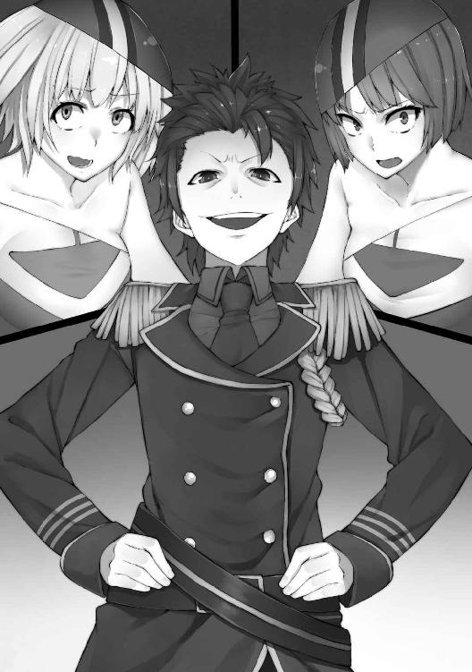
「なっ!?」
いいぞ、悪為！ そうだ......それでいい！
......それでこそ......『俺』!!
「どういうことだ！」
「いやー。俺が手を二回ぱんぱんと叩くと、洗脳状態が隠せなくなるらしいんだわ。で、もう一度叩くと戻る。便利でしょ？」
「そっ、そんな馬鹿な話があるか！」
ドラゴングリーンが吼える。
「そうだ！」
セイレーンブルーも大きな声を張り上げた。
「健気だねえ。じゃあ試しに、誰が洗脳されてるかやってみる？」
悪為が、大きく手を掲げた。
「さあ、洗脳されてる情けないヒーローたち。俺の手駒として、ホーリーファイブを壊滅させてくれ」
パンッ、パンッ!!
「そんなっ......!!」
フェンリルイエローが絶句した。
踵を返して後ろを向いたのは、ドラゴングリーン、ペガサスホワイト、そして、フェニックスレッド。ダンテインに変わった様子はない。
「......倒す......ホーリーファイブ......倒す......」
俺──『レッド』を含む三人は、据わった視線で同じ台詞を繰り返す。
「はっはっは、いい光景だな。どうだ？ ホントだったろ？」
「おい、ダンテイン！ お前、このことを知らなかったのか!?」
「知らないよ！ レッドは......あたしと戦ったときのレッドは、そんなことにはならなかった！」
「さあ、一度フォーメーションを整えようか......こっちに来い、手駒ども」
「......」
洗脳された三人は、無言のままバックステップで悪為のもとへ。
セイレーンブルーが、言葉に詰まる。フェンリルイエローだって、もはや戦意の欠片も見えない。
「驚いたか？」
悪為はニヤっと笑った。......いや、『悪為』の後ろに立つ俺にその姿は見えないが、間違いない。
「......だが、数の暴力で押し潰すというのは、俺もあんまり好きじゃないんだよ、実はね」
やれやれ、といった口調。
「正義の味方ってさ、結局のところ、五人も六人も集まって、寄って集って怪人をボコボコにするでしょ？ 許せないんだよね、そういう『弱いものイジメ』みたいなのってさ。分かる？ 分かんないか。分かんないからボケーっとヒーローなんかやってられるんだもんね」
一つ一つの言葉で、丁寧に詰る。
「こっちは俺含めて四人、そっちは三人だ。オペレーターの......カレンだっけ？ そいつが戦闘に加わる、ってなら別だが」
ブルーが、悲壮な大声を上げた。
「みんな、しっかりして！」
それに続いて、イエローも。
「そうだよ！ ホーリーファイブの誓いを思い出すんだ！」
「......誓い......」
ドラゴングリーンがつぶやく。
「わたしたちは人類の平和のために戦う正義の味方『ホーリーファイブ』！」
「そんな卑劣なやつの言いなりになんて、絶対なっちゃだめだよ！」
「無駄だ、無駄無駄。全然『洗脳の本質』を分かっていない」
悪為はゆっくりと前に歩み出て、優雅に演説を始める。もしブルーとイエローが彼に手出しをするようなら、レッドである俺が止めに入るまで。素体のままの鬼丸悪為は、決して強くない......いや、『弱い』。この世界のヒーローや怪人の基準で見て、攻撃力と防御力、それに体力は、ゼロに等しいと言ってもいいだろう。だが、武器はある。それが、口であり、思考だ。
この世界の常識ではありえない、『勝てばいい』『負けたとしても、優位をとれる形を残しておけばいい』『欺く』。それが、鬼丸悪為には可能なのだ。
「洗脳ってのはさあ、一度効果を発揮したら、なかなか解けないわけよ。それこそ、そんなありきたりな言葉一つでコロっと戻られちゃったら、意味ないわけ」
両手を開き、挑発的な言葉を並べ立てる。
「前も言ったかもしれないけど、怪人てさあ、元々人間なわけよ。エクリプスを潰すために、正義の味方さんたちは、次から次へと人間を殺してたってわけ。お前らが怪人を殺せば、こちらは戦力補充のために新たに人間を攫って怪人にしなくちゃいけない。セイレーンブルーが指示を出して、フェンリルイエローが『元人間』を爆散させる......そんなこと、何回あった？ 覚えてないよな。お前らにとっては取るに足らないことだったはずだ」
わざとらしく、目頭を押さえる。
「仲間が死ぬのは、本当につらいんだぜ......分かるだろ？ なあ、味方殺しのダンテインさんよぉ」
「ぐっ......」
突然矢を向けられたダンテインは、それまでにも増して苦い顔をした。
「結局そっちに残ってるのは、仲間を仲間とも思わずに殺してきた、無能な同族殺しばかり、ってわけだ」
彼らから顔をそらさず、ゆっくりと悪為が後ずさりする。
「その点、洗脳された彼らに罪はない。俺が指示を出し、その通りに戦う。彼らには、敵だとか味方だとか、そんな概念はない。強いて言うなら、俺だけが味方であり絶対的な指導者で、他は全員『どうでもいい存在』だ。元々味方だったとか、善悪だとか、そういう感情めいたゆらぎはない。分かりやすくていいだろう？」
俺はその言葉を合図に、身構える。いつ指示を出されても飛び出せるように。
......だが、俺が『俺』なら、その指示は出ない。『その瞬間』はそう遠くないはずだ。
「こいつらの罪は俺一人が負えばいい。『目的』を達するためになら、安い代償だ」
「『目的』？ お前の目的は、一体なんだ!?」
「知りたいか？」
聞いたはずのセイレーンブルーが、黙って悪為の次の言葉を待つ。『知りたいか』と聞けば、その次は必ず独白だ。テンプレート。定型。そんなもの、悪為は全部ぶっ壊してきたはずだった。だが今、この瞬間ばかりは違う。この特撮の世界の中に入り込み、その一部として溶け込んでいる。それが、至上の幸せに感じられているのかもしれない。
「エクリプスには、俺たちのような幹部の上に、最高指導者がいる。その目的はたった一つ。この世界から、人間を消滅させること」
「なっ......」
動揺するフェンリルイエロー。
「なぜか、って？ さあ、あのお方がそれを望む理由は、俺には分からん」
「違う......悪為......！」
セイレーンブルーが、震える声を出す。
「お前も人間のはず！」
「そうだよ。何か文句あるか？」
「人間が人間の消滅を望むなんて、どうかしてる！」
「......本当にそうか？」
悪為の声が重苦しく響く。
「人間社会が特別に『素晴らしい』ってわけでもないと思うぜ。俺はどっちかといえば、怪人側の作る新世界が見たいと思ったのさ」
「......洗脳されているのか？」
「さあね。洗脳されているやつは、洗脳されているという自覚がない。こうしているのは俺の本心かもしれないし、あるいはエクリプスの意思かもしれない。ただ一つ言える......それは、少なくとも今の俺が、この考えを『正しい』と思っているということだ」
「間違ってる......！」
イエローの声が、自分を奮い立たせるように震えている。
「私はバカだから細かいことは分かんないけど......でも、それは違う！」
「クックック......フハハハハッ、ハーッハッハッハ!! お前らは！ 正義の戦いとやらを標榜している！ だがな、俺も正義のために戦っているんだ。俺は『怪人の』正義の味方！ お前らは『人間の』正義の味方！ だから、これはヒーロー同士の戦いだ！ だから、俺は引かない。だから、死んでもこの考えは曲げない。──お前らが、いつもそうであるようになあッ!!」
......お前たちはそろそろ気付いてもいい。魂のどこかで。繰り返されてきた『王道』のどこかで。もしかして、相手にも正義があるんじゃないかという、そんな当たり前のことに。
「......分かった......」
悪為は、少しだけ気がある返事をする。
「ほう、何が分かった？」
「今、わたしたちは、すぐにでも三人の洗脳を解いて......貴様......悪為という敵を倒さなくちゃいけない。それが分かった」
『本当に失望した』そういう肩の落とし方をして、悪為はため息をついた。
「だから？ ヒーローの俺を貴様らが倒せると思うのか？ 『カイジン』」
悪為がそう煽ると、二人の身体から熱気のようなものがあふれ出してくる。
「エクリプスの思い通りになんて、させないっ！」
「俺『たち』と、戦うんだ？」
彼が指をパチンと鳴らすと、物陰から大量の戦闘員が現れる。
「いやあ、数の暴力は嫌いなんだけど......俺もヒーローだからね。『仲間と助け合う』ことにするよ」
「貴様ッ......どこまでわたしたちを......！」
怒りからか、正義の味方から発せられる熱は、どんどんと強くなっていく。
「そこまでだ」
重たい金属の扉が、弾け飛ぶように開いた。
「なッ......！」
悪為が驚愕の声を上げる。だが、その姿を見て驚いたのは、彼だけではないはずだ。
「お前......フレア、それにエリヤ!?」
ダンテインが大声でその名を呼ぶ。
「私たちの『元』同僚がずいぶんな『おいた』をしてくれてるらしいな」
フレアが見つめる先は、ダンテインではない。鬼丸悪為、その男だ。
「......ダンテイン、話は後だ」
エリヤはごつごつとした岩の装甲に身を包んでいる。それは、ホーリーファイブの基地に最初に乗り込んだ、あのときと同じスタイル。戦闘によって、『敵を粉砕する』ことを目的とした衣装だ。
「鬼丸悪為、よく聞け。報告が三つある」
フレアは腕を組み、壁に背をもたれさせる。
「一つ。あのお方はダンテインの反逆と貴様の暴走をもって、エクリプスが人間社会を消滅させることは不可能だと判断した」
「なっ......!? そんな馬鹿な!!」
悪為の声を遮るように、フレアは「二つ」と続ける。
「あのお方の総統としての最後のご指示は、『鬼丸悪為の処断』と『これまで壊滅的被害を与えてきた人間社会への償い』だ。貴様は我々をコケにしすぎた。お前を殺して、ホーリーファイブに謝罪し、行動を共にしろとのことだ」
「そんなはずはないだろうっ！ ......Ｘｉｎはっ......！」
「三つ」
フレアの身体から、闘志があふれる。エリヤが砂埃を舞わせながら、ゆっくりと『悪為』たちに近づいてくる。
「私とエリヤはＸｉｎ様の力により、貴様にされた洗脳が解けている。意味は分かるな」
「セイレーンブルー、フェンリルイエロー」
エリヤが、ぼそりとつぶやく。
「信じられないとは思うが、今は協力させてほしい。この男を......悪為を、ここで殺す」
「......捕縛。あくまでも、捕まえて改心させる」
二人には、まだ人間である悪為を殺すことに躊躇があるのかもしれなかった。だが、もうそんな時ではないのだ。そこの決断を迷うべきではない。俺なら、間違いなくここで『殺害する』と言うだろう。
「まあいい」
エリヤは不服そうだったが、それを飲み込んで、「行くぞ」と言った。
フレアの持つレーザーガンが、戦闘員たちをなで斬りにする。エリヤも、基本的には戦闘員の排除。ヒーローたちが『元人間』である彼らに手出しできないことは、火を見るよりも明らかだったからだ。その間に、ダンテイン、セイレーンブルー、フェンリルイエローが、フェニックスレッド、ドラゴングリーン、ペガサスホワイトと戦う。これだけ見れば、敵も味方も、本当に分からない。ちょっと前までの構造とは、まるっきり変わってしまっている。
「クソっ......悪為！ 貴様これだけの戦闘員をどこからっ......！」
フレアが叫ぶ。
「エクリプスはこんなに戦闘員を抱え込んでいなかったはずだぞ！」
「お前らとは仕事の効率が違うんだよ、馬鹿が」
「貴様ッ......！」
フレアは、その可愛い顔に青筋を立てる。
「誰にも報告なしで、勝手にそんなことしていいと思っているのか！」
「いいさ。俺だって幹部。それに、俺に洗脳装置を貸したのはお前だろ、フレア」
「今それが間違いだったと、はっきり気付いたよ!!」
「フレア、集中しろ」
エリヤはもっと冷静に、戦闘員をなぎ倒す。
「おー、おー、手荒いこと。もっと優しくしてやれよ。昔俺がお前を介抱してやったときみたいにさ」
「黙れ。お前はこいつらを全員蹴散らして、その後だ」
「おー、こわ。......逃げようにも、この状況じゃ無理そうだな」
悪為は肩をすくめ、ただその場で、腕組みをして戦闘を眺める。
いい光景だ。金曜の夜、冷え冷えの缶チューハイを飲みながら見ていたい。
「おいっ！ レッド！ しっかりしろっ！」
ダンテインの斬撃をレッドが弾く。火花が飛び散るが、それ以上返事はない。
ほかも同様に、皆無言。少し前まで友人であり仲間だったものと、拳を交わらせなければならない悲しみ。
「目を覚ませ！ お前らっ！」
ダンテインの声に悲壮さが募る。それでも、誰の手も止まらない。
「頼むっ......あたしはっ......もう味方を失いたくないっ......誰も傷つけたくないんだ......!!」
その言葉に、ホワイトがびくりと動きを止めた。瞬間、フェンリルイエローの拳が彼女の腕に重たい一撃を加える。
「あっ、ホワイトっ......!!」
バランスを崩して倒れこみそうになる彼女を、イエローは抱きかかえた。
「洗脳......わたし......ホワイト......」
ペガサスホワイトが何かを思い出すようにそうつぶやいている。
それに同調するように、レッドとグリーンの動きも鈍くなる。ブルーとダンテインの一撃が、洗脳された彼らの頬を殴った。
「ったぁっ......!!」
グリーンが、そう答えた。
「なっ、何するんだよぉっ！ ......って、あれ、ブルー？」
「......洗脳が解けた......!?」
「何ィッ!?」
悪為が身を乗り出して、目を見張る。
「そんな馬鹿なッ!! ありえないぞ！ 洗脳が解けるなんて......そんなことあるはずがないっ!!」
正義の味方は──正気を取り戻したのだ。
「そう......オレは......フェニックスレッドだ！！！」
拳を固め、身を翻す。鬼丸悪為を睨みつける。......今まで人間に抱いたどんな暗い感情よりも暗く、また燃えるように熱い怒りだ。ゆっくりと彼に近づいていく。
「なっ、やめろっ......来るなっ......!!」
殲滅された戦闘員たち。この空間で、一人の味方もいない鬼丸悪為。彼が哀れであるのは間違いない。だが同時に、このまま彼を見過ごせる状態にもない。左足を力強く踏ん張り、ひねりを加えて思い切り鬼丸悪為を殴りつけた。
「ぐがぁぁっ......！」
彼は吹き飛び、後ろの壁に叩き込まれる。そのまま崩れ落ちた。
「オレたちはホーリーファイブだ......怪人の......エクリプスの好きなようにはさせないっ!!」
なおも近寄り、悪為の首を持ち上げた。彼を見ると、その顔はすでに戦闘する意思をまったく失ったように、沈んでいる。
「殺すのか？ フェニックスレッド」
フレアが煽る。
「いや、殺さない。クローンとはいえ、人間は人間だ。このまま捕まえて罪を償ってもらおう」
「ふんっ......やはり甘いな」
悪為はガリッと奥歯で何かを噛み潰した。
「なっ、何をした！」
「お前らに負けるくらいなら、死んだほうがマシだ」
彼の視線がフレアを、エリヤを、ダンテインを、そしてホーリーファイブを睨みつける。
「覚えておけ！」
絶叫。
「俺の名前は鬼丸悪為......この身は朽ちようとも、俺は必ず目的を遂行する......必ず......必ずだっ!!」
血を吐きながら、顔を青くして、それでもなお叫ぶ。
「忘れるな、この名前を......いずれ貴様らを全員......追いつめて......!!」
この腕の中で、確かに悪為はがくりと力を失った。
ドラゴングリーンが、その場に崩れ落ちている。
「ぼ、ボクは一体......」
両手を交互に見つめながら、困惑の表情だ。彼は無事、洗脳から解放され、助かった。
「命......わたし......！」
ましろは困惑の表情でこちらを見ている。
「みんなぁっ！」
そこにレモンが駆け寄って、ハイタッチを求めてきた。
「お、おう......」
いきなりの展開で焦ったが、レモンらしいといえばレモンらしい。手を上げて『ぱしん』と軽く合わせてやると、彼女は誇らしげに胸を張った。
「これからは、このレモンさまに足を向けて寝れないねっ！」
「大丈夫か？」
ハイテンションのレモンとは打って変わって、こちらは落ち着き払ったうらら。
「すまない......あたしが抜かったばっかりに......」
ダンテインも、申し訳なさそうにつぶやきながら、頭を下げる。
「気にするな、ダンテイン」
フレアは彼女の肩を叩く。
「すべては終わったことだ」
「そう。悪為という悪夢のおかげで、私たちがいがみ合う必要はなくなった」
エリヤも、ダンテインを抱きしめた。
「......しかし、あいつは正真正銘の悪魔だ。怪人なんかよりもずっとタチの悪い、悪魔」
フレアは辟易したように言う。
「あいつは最後に言ったな、『必ず蘇る』なんてことを」
「......確かに」
ブルーが、フレアの言葉に怪訝な顔をする。
「それは、強がりではないと？」
「ああ。根拠がある」
フレアが、白衣の懐から水晶のような大きな塊を取り出す。
「これだ。データクリスタル。本来であれば、この中に取り込まれている悪為の肉体と精神のバックアップを、エクリプスの誰かが復元することになっていた。だが、組織は解散、一転、追われる身になったわけだ。そのバックアップ体の管理をしていたのが、私。そして私は今、ホーリーファイブと共に、人間を助け、怪人によって破壊された街を修復する責を負っている。これを復元する必要は、もうない」
フレアは、悲しそうな顔をする。
「あいつも、ちょっと前はまともだったんだがな。......まるで、自分自身の『悪』に、自ら飲まれていくようだった。奴は、もしかしたら奴自身に洗脳されていたのかもしれないな」
それは高々と掲げると、鈍く、きらりと光った。
「死ね、鬼丸悪為」
彼女の手から、輝く巨大な結晶が滑り落ちる。鬼丸悪為が、どんどん地面に接近していく。抵抗する手足も失った彼は、ただ、吸い込まれる。重力に逆らうこともできず、落ちて、落ちていく。
そして。
ガシャン、という大きな音とともに、彼の最後の命綱が切れた。
「今更、私やエリヤが人間のために戦うなど......虫のいい話かもしれない」
フレアは粉々になった結晶のかけらを踏み潰し、ホーリーファイブに頭を下げた。
「この通りだ」
沈黙の中に、彼女の声だけが響く。
「私とエリヤにも、人間のため、世界の平和のために、力を使わせてはくれないだろうか」
エリヤも、奥で小さく頭を下げている。
「あたしからも、頼む」
ダンテインが、俺の目をじっと見た。
「......こいつらは、確かに怪人の親玉......でも、それはあたしも同じだったはず。......あたしたちだって、変われる......レッドの......お前の心で！」
「命」
うららの目が優しく笑っている。
「みことっ！」
レモンが駆け寄り俺の手を握った。
「みこと？」
上ずる声で若苗が言う。
「......命」
ましろが、俺の腕に優しく触れた。
「......ああ」
これほどの期待があるんだ。俺が応えないわけがない。
「一緒に、戦おう」
それまでしんと静まり返っていたはずの空間に、穏やかで温かい空気が流れた。
ここに、エクリプスは壊滅し、ホーリーファイブに新たな、そして強力な味方が三人増えたのだ。
「......！ あーっ！」
若苗が突然大きな声を上げた。見ると、顔を赤くして、胸を押さえている。
「どうした？」
「......ボク、その......」
もじもじと恥ずかしそうにして、ゆっくり立ち上がった。
「......女の子の身体になってる」
「......!?」
一同が、大きく息を吸った。......ああ、確かにそうだったが......そうか、みんなは知らなかったんだな。
「......これから、どうしよ」
「ま、なんとかなるって」
俺は若苗の背中を強く叩いた。
「ねっ、若苗『ちゃん』」
「あっ、おい！ 今バカにしただろ！」
「男勝りな女の子だねー」
からかうと、彼女は恥ずかしそうに「うるさい！」と言った。どこか、女の子らしい声に変わってしまっているような気もする。
「ま、何はともあれ、一件落着だな！」
その声に、誰からともなく笑いが漏れた。俺たちの、大勝利である。
基地の部屋。
俺は、ベッドの上にごろんと身体を放り投げた。......しかし、なんだか一瞬の出来事だったような気がする。
ダンテインが仲間になり、強敵だった鬼丸悪為が死んだ。エクリプスは幹部を二人失った時点で解散。この判断は、Ｘｉｎの総統としての実力を考えて、さすがと言わざるを得ない。結果、フレアとエリヤも、ホーリーファイブに合流した。
「......Ｘｉｎ、か......」
また、どこかでフェニックスレッドとして敵対するかもしれない。そのときもきっと、恐ろしい手に打って出るに違いない。今から、よく注意しておいたほうがいいだろう。
ホーリーファイブは、全員自分の部屋で寝ている。エリヤとフレア、それにダンテインは、今頃ぎゅうぎゅうになりながら、仲良く仮眠室で寝ているはず。戦闘で疲れたというのに加えて、今や戦う理由が消えた、という安堵感に満たされているのだろう。
俺はこの手を見て、ぎゅっと握ってみる。確かに、桜火命の手になっている。
「にしてもマヌケだなぁ」
『肉体なんてどうでもいい、俺の目的が達成されれば、それで』
俺は、確かにそう言ったはずだ。それを少しも気にせず、よくもまあ『桜火命の肉体』の言うことなんて信じられるよな。
もう分かっただろう。俺は......桜火命ではない。
『鬼丸悪為』だ。
しかし、やっぱり予想される『フラグ』は回避しておいて正解だった。あの状態で『正気に戻って！』が見事に決まっていたら......ま、それはそれで面白いのかもしれないけれど。
若苗もましろも、とっくの昔にクローンと入れ替わっている。
若苗は身体を女にしたときに、ましろは、あの公園でフェラチオをさせた次の日に、これまでの肉体を捨てさせた。
今の二人の身体は、最初に洗脳された状態の記憶があって、その上にそれぞれの人格を上書きしたものだ......彼女たちが正気に戻るなんてことは、はじめからない。
命は......つまり俺だから、最初から洗脳されていない。どちらかというと、桜火命の『肉体記憶』のようなものが蘇ることを心配していたが、まったくの取り越し苦労だった。
フレア、エリヤ、ダンテインは洗脳されているが、こちらはホーリーファイブの『心のこもったお言葉』の対象外。正気に戻ることは考えなくていいだろう。
そしてこの五人は、全員俺が『鬼丸悪為』であることを認識した上で、バッチリ演技してくれたのだ。最高。やっぱり持つべきものは『仲間』だな！
残されている、うらら、レモン、そしてカレン......。
お前らは『仲間が八人に増えた』と思っているかもしれないが、愚かにも『六人の敵を迎え入れた』んだ。しかも、うち一人はこの俺......散々ホーリーファイブを苦しめ続けた、鬼丸悪為。
「さあて」
俺は不敵な笑みを浮かべた。
「次の玩具は誰かな？ ......クックックック......!!」
世界を掌握するには、まだまだ時間がかかりそうだ。
もっともっと、楽しまないと。
このたびは『悪の秘密結社コンサルタント～鬼丸悪為のシゴト～』をお手に取ってくださり、大変ありがとうございます。BlackCartelです。
バッドヒーローである主人公「鬼丸悪為」は、ちょっと特撮が好きな普通の人間でした。しかし、異世界からの召喚によってタガが外れ、現実世界では使えるはずのない彼の本来の才能が開花したわけです。つまり「新しい世界へ飛び込んだら、自分でも知らなかった新しい側面が見つかって活躍できた！」という、ヒューマンドラマとして読んでいただくのも面白いかも......いや、ダークすぎるか。
さて、あの世界の「洗脳装置」が主人公に効かないというのはプロット最初期からの設定なのですが、実はフレアによる「悪為への洗脳」は限定的に成功していたのかも？ という裏設定があります。つまり主人公「鬼丸悪為」は、自身の精神はそのままに、あの洗脳装置によって善の心を消されてしまった存在なのです。だから、もしヒーロー側に呼び出されていたら、彼がヒーロー側についていた可能性も十分あります。......本当かな？
素敵な大人の読者さんには改めて言うまでもないとは思いますが、「鬼丸悪為」はフィクション中のフィクションです。
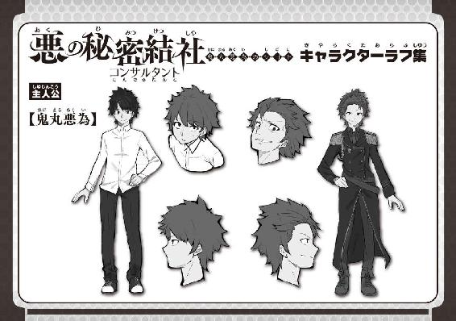
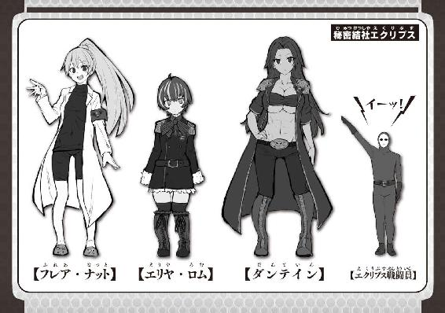
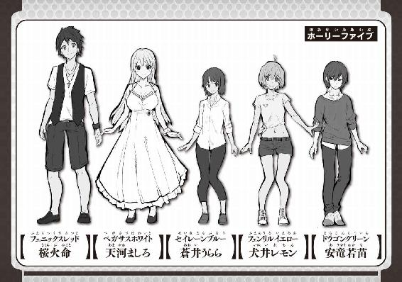
東海地方の北側に生息するデジタル男。
文章と絵と自作PCが趣味。
最近の修羅場は「ハマっているゲームの大会2つ」と
「締め切り」が被っていることに気づいたとき。
なんとか突破しました。
がんばります。
グンマーにてイラストを描いている、みかん。です。
ソシャゲーに課金ばかりしてもやし生活。
日々自制心を試されてます。
ガチャは悪い文明！
ビギニングノベルズ
悪の秘密結社コンサルタント
～鬼丸悪為のシゴト～
小説 BlackCartel
イラスト みかん。
発行 株式会社キルタイムコミュニケーション
〒104-0041 東京都中央区新富1-3-7ヨドコウビル1Ｆ
編集部 TEL 03-3551-6147／FAX 03-3551-6146
販売部 TEL 03-3555-3431／FAX 03-3551-1208
URL http://ktcom.jp/
©BlackCartel 2017
本書は小説投稿サイト「ノクターンノベルズ」（http://noc.syosetu.com/)に掲載されていたものを、加筆の上書籍化したものです。
※本作品の全部あるいは一部を無断で複製・転載・配信・送信したり、ホームページ上に転載することを禁止します。本作品の内容を無断で改変、改ざん等行うことも禁止します。また、有償・無償にかかわらず本作品を第三者に譲渡することはできません。
※本作品は電子書籍配信用に再編集しております。